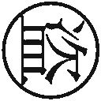

| カラスの親指 ｂｙ ｒｕｌｅ ｏｆ ＣＲＯＷ'ｓ ｔｈｕｍｂ (講談社文庫) | |
| 道尾秀介 | |
| 講談社 (2011) | |
カラスの親指
by rule of CROW's thumb
道尾秀介
It's heads I win and tails you lose.
表が出ればぼくの勝ち、裏が出れば君の負け。
──コナン・ドイル『緋色の研究』
HERON＼
（一）
足の小指を硬いものにぶつけると、とんでもなく痛い。その痛みに脳髄がびっくりして、「！」と仕事の手を止めてしまうのか、意識が一瞬遠のきさえする。しかしじつは、この手の事故の最悪な側面は、痛みそのものでもなければ意識が遠のくことでもない。何といっても自分が非常に間抜けに思えてしまうことなのだ。
山手通りに面した『共和銀行品川支店』の前で、じっと腕を組み、まばらに出入りする客たちを見据えながら、四十六歳の武沢竹夫は今朝方の失敗を思い出していた。アパートの鏡に向かって丁寧に髭をあたり、今日のスーツに合うネクタイを選ぶため洗面所を出ようとしたその瞬間、右足の小指を５kgのダンベルに思いっきり激突させてしまったのだ。
そのダンベルは、つい先日ホームセンターで購入してきたセール品だった。洗面所に入るときは床に置かれたその二千九百八十円（税込）のダンベルの存在をちゃんと確認し、またぎ越していた。しかし、鏡を見つめて電気髭剃りを上げ下げしているうちに、すっかりその存在を忘れてしまっていたのだ。痛みはもうとっくに退いているが、そのときの間抜け感というか、あの空疎な悔しさが、いまだに武沢の胸に残っていた。
これはよくない。仕事の成功率に影響する可能性がある。この仕事は何より「自信」が肝要なのだ。
俺は間抜けじゃない。俺は間抜けじゃない。俺は間抜けじゃない──ごく小さな声でつづけざまに呟きながら、武沢は銀行に視線を戻す。ちょうど、小肥りの中年男性が出納窓口を離れてガラス張りのスウィングドアへと向かってくるところだった。
筑紫章介、四十三歳。住所は荒川区で電話番号は３８０２‐××××。有名なキャスターと同じ名字だが、頭にあるのは美しい銀髪などではなく縮れた黒髪で、しかも上のほうから禿げてきている。春の陽を受けたその薄毛頭を真っ直ぐに見据えながら、武沢は革鞄の持ち手を握り直した。俺は間抜けじゃない、俺は間抜けじゃない、俺は間抜けじゃない──ゆっくりと近づいていく。相手の身長は武沢とちょぼちょぼといったところか。
「筑紫様......筑紫様」
静かに声をかけると、筑紫章介は立ち止まって振り返り、訊ねるような顔で武沢を見た。
「筑紫様、恐れ入ります。ちょっとよろしいでしょうか？」
忘れた相手を思い出そうとするように、筑紫章介は小さな目を何度かしばたたく。しかし彼が武沢の顔を知っているはずもない。なにしろ初対面なのだ。
「突然すみません。私、こういう者なのですが」
武沢は濃紺のスーツの内ポケットから名刺を取り出して渡した。筑紫章介はそれを顔の前に持ってきて、しげしげと眺める。
「銀行検査官......」
「こちらの、共和銀行さんからのご依頼で、現在ある詐欺事件について調べているところなんです。じつは筑紫様に少々、ご協力願いたいことがございまして」
「協力？......でもあの、おたくどうして僕の名前を？」
その疑問はもっともだ。武沢は説明する。
「中にいる支店長さんから、いま連絡があったんです。──筑紫様、先ほど出納窓口で、現金をお受け取りになりましたよね」
「ええ、会社の金を」
「三つ並んでいるうちの、一番左の窓口」
「そうです」
「窓口の担当は、三十代半ばの男性でしたか？」
「はあ、そんな人でした」
「シルバーフレームの眼鏡をかけていた？」
「かけてました」
武沢は相手に顔を寄せて声を低めた。
「お受け取りになった現金を、検めさせていただいてもよろしいですか？」
「は？」
武沢は筑紫章介が片手に提げた黒いバッグを目線で示し、単刀直入に言う。
「偽札の可能性があるんです。──ニュースなどでも取り上げられているのでご存知かもしれませんが、この四月に入って二度、品川区内で精巧な偽札が発見されています。所轄署と当方で調査した結果、それらの偽札の出所はいずれもこの銀行でした。しかも、ある出納窓口の担当者が直接手渡した現金だったんですよ」
「......どういうことなんです？」
「すり替えていたんです、窓口の担当者が。ディスペンサーから出した現金を着服して、客には偽札を渡していたんです。印刷工場をやっている知人と二人でつくった、精巧な偽札を」
筑紫章介は自分の手にしたバッグに目をやった。
「え、これ......偽札？」
いえ、と武沢は小さく首を横に振る。
「まだそうと決まったわけではありません。ですから筑紫様にご協力をいただいて、こちらで調べさせていただきたいのです」
武沢は物欲しそうに見えないよう十分注意しながら──かといって、あまりのんびりした雰囲気にならないよう気をつけながら、相手に向かって右手を差し出した。筑紫章介は武沢の右手と自分のバッグとを交互に見やり、口の中で何か呟く。──早くしろ。早く。早く。しかし相手は眉根を寄せたまま、まだ思案している。武沢は片手でゆっくりと頭の後ろを撫でた。
黒い影が、ぬっと地面に伸びてきたのはその直後だった。
「何か、問題でも？」
スーツ姿の男が二人の横に立っていた。硬い表情に銀縁眼鏡をかけ、髪を実直そうに撫でつけて、胸には四角いネームプレートをつけている。そのネームプレートに刻まれた文字は──。
『共和銀行品川支店 支店長補佐 石霞英吾』
くそっ──武沢は内心で悪態をついていた。その感情を顔色に出さないよう注意しつつ、穏やかに相手に向き直る。
「いえ、大丈夫です。何も問題ありません」
「本当ですか？」
「本当です」
戸惑うように武沢たちの様子を眺めていた筑紫章介が、上目遣いに支店長補佐のネームプレートを見ながらおずおずと口をひらいた。
「あの......いまこの人がですね、僕の持っている現金を調べるとか何とか言ってきたんです。それで僕、どうしようかと思って......」
ネームプレートの男は、上唇の突き出た、どこかイルカみたいな口から「あ」と声を洩らし、筑紫章介と武沢の顔を素早く見比べた。
「もしかして、うちの支店長が依頼した例の件？」
武沢はうなずいた。
「そうです、例の件です」
「すると、こちらのお客様がお持ちになっている現金は、あの窓口で受け取られたものなんですか？」
「ええ、たったいまね」
「それでしたら、私がお預かりします。店内で札を検査機にかけて、すぐに確認してまいりますので」
ようやく筑紫章介は納得してくれたらしく、「はは」と照れくさそうに薄毛ちりちり頭を撫で上げた。
「なんだ、ほんとだったのか」
「突然のことで、驚かれましたでしょう」
ネームプレートの男は申し訳なさそうに肩をすぼめる。
「このようなことでお客様にご迷惑をおかけして、我々もお恥ずかしいかぎりです。──そういうわけなので、恐れ入りますが、ここで少々お待ちいただけますか？ お引き出しになった現金をお預かりして、確認が済み次第、戻ってまいりますので。もちろん店内でお待ちいただいても構いませんが」
「あ、じゃあ中で待ってます」
「そうですか。では、現金のほうをよろしいですか？」
「中で渡しますよ。ここじゃあれだから」
「了解いたしました」
店内で待っていると言って、ネームプレートの男は銀行に戻っていった。
筑紫章介は武沢に向き直る。
「やあ、さっきは思わず疑っちゃいましたよあなたのこと。いきなり現金を調べさせてくれなんて言うもんだから」
「この調査では、お客様に疑われるのは毎度のことです。しかしまあ、むしろみなさんにそれくらい警戒していただいたほうが、世の中の詐欺事件が減ってくれて有り難いというものですが」
「そうですよねえ、こんな時代だから。しかし、銀行員にも悪い奴がいるもんだなあ。油断も隙も、あったもんじゃない。──あ、このこと、やっぱりほかで喋っちゃまずいんですよね」
「できればご内密に。そのあたりに関しましては、後ほど支店長補佐さんのほうから詳しいご説明があるかと思います。私はあくまで、ただの検査官ですので」
「わかりました。──じゃ、失礼」
「ご協力、感謝いたします」
武沢は深く頭を下げた。その頭を上げると同時に身体の向きを変え、素早く人混みに紛れ込む。歩道をしばらく進んで角を曲がり、そこで足を止めた。
しばらくすると、先ほどのネームプレートの男がやってきた。
「現金は？」
武沢が訊くと、相手は「ここっす」とスーツの内ポケットを叩いてみせる。
行くぞ、と武沢は歩き出した。
男は武沢に追いついて、ニヤけた顔を近づけてくる。
「タケさん、ねえ、どうでした？」
武沢竹夫のことは、小学校時代から誰もが当然のようにタケというあだ名で呼んだ。「さん」と「ちゃん」のどちらがつくか、あるいはつかないかというくらいの違いで、本当にみんなそう呼んだ。
「自分の演技、けっこう上達したと思いません？」
「全然思わねえな」
「厳しいなあタケさんは」
「あんた、台詞を間違えただろうが」
「どの台詞ですよ？」
「一番最初のやつだよ──〝何か問題でも？〟ってところだ。あそこは〝どうかされましたか？〟だったはずだ」
「え、そんなん同じようなもんじゃないですか」
「全然違う。それまで俺たちの会話を聞いてもいなかったのに、いきなり〝何か問題でも？〟は不自然だろうが」
「あ、なるほど」
「なるほどじゃないよ。俺たちの稼業はな、ああいう小さなミスが命取りになるんだ。今度あんな間違いやったら、もうあんたとはいっしょに仕事しねえからな」
「タケさん、そんなこと言わないでくださいよお」
「顔を寄せるな」
「タケさあん」
「仕事の前日にニンニク料理を食うな」
武沢が顔をしかめると、男は片手を口の前に持ってきて息を吐き、わざとらしく目を白黒させてみせた。その横顔は、もう実直な銀行の支店長補佐などではなく、武沢の目下の相棒であるテツさんだ。武沢と一つ違いの四十五歳だが、テツさんはなんだか先輩の後をついて歩く中学生のような男だった。
「ニンニクのことなんて、ゆうべの晩飯のときに言ってくださいよ。自分、タケさんの目の前で餃子食ってたじゃないすか」
「あんときは考え事してたんだ。自分で気をつけろ馬鹿」
今回二人がやったのは古典的な詐欺だ。バリエーションこそ違え、いまも昔も世界中で行われている。カモは武沢が事前に選定し、簡単な個人情報を調べておいた。万一相手に疑いを持たれたとき、こちらが相手の情報を知っているかどうかが仕事の成功率を大きく左右するのだ。「あなた」と呼ばれるのと、名前を呼ばれるのとでは、やはり信用の度合いがずいぶん違ってくるし、必要に応じて会話の中でさりげなく住所や電話番号を口にしてやれば、さらにグンと信用される。事前にその程度の個人情報を入手するのは簡単なことだった。小遣い程度の金で調べてくれる連中が、いくらでもいる。
テツさんが途中から参加してきたのは、筑紫章介というあのカモが武沢に対して疑いを持ったように見えたからだ。こういった仕事は、人数が増え、仕掛けが複雑になるほど失敗の可能性も高まるので、もちろん武沢一人で最後までやれればそれが一番いいのだが、もし相手が不審そうな顔を見せたら、テツさんが支店長補佐役として登場する手筈になっていた。武沢が左手で後頭部を撫でるのが、その合図だった。
「そういやテツさん、あんた何でまた、あんなややこしい名前にしたんだよ？」
テツさんは「あこれ？」とズボンのポケットから先ほどのネームプレートを取り出す。『支店長補佐 石霞英吾』。今日のために、手先が器用なテツさんがつくってきた小道具だ。
「アナグラムですよ」
「穴ぐら──」
「ム。文字を並べ替える遊び。自分、最近凝ってるんです」
「石霞英吾を並び替えんのかよ」
「そうそう。ヒントは英吾。エイゴ。つまり英語。イングリッシュ」
テツさんは中卒らしいが、何故か英語が得意なのだった。
「イングリッシュ......？」
街ゆく人々のあいだを歩きながら、武沢はちょっと頭をひねってみる。しかし何も思い浮かばなかったのですぐに諦めた。
「なに言ってんだよ」
「いいですか、タケさん。石霞、イシガスミ、isigasmi」
最後はちょっと外国人風の発音で言う。
「このアルファベットを反対から読むと──なんと、アイム・サギシ！」
「アイム......サギ......シ」
あ、と思った。
「ほんとだな」
武沢は思わず足を止めそうになり、ついで珍しくテツさんに感心しそうになったが、どちらもやめて、また正面に向き直って先を急いだ。
「そんな意味のねえこと考えてる暇があったら、台詞を復習っとけ。トンチンカン」
「んんん、十勝」
「何だよ？」
「アナグラムです」
品川駅まで辿り着くと、二人はＪＲで一駅だけ移動して、田町からタクシーに乗り込んだ。
「阿佐ヶ谷ね」
「あいあい。阿佐ヶ谷、了解」
武沢はシートに背中をつけ、先ほどの封筒をテツさんから受け取って中身を確認する。指にしめりをくれて数えてみると、全部で一万円札が三十五枚。隣でテツさんが、ホューと鳴らない口笛を吹く。
「あんたと組むようになってから成功つづきだな」
「やっぱり腕っすかね、自分の」
「半素人が偉そうに言うんじゃねえよ」
苦笑したものの、こんなテツさんのキャラクターが最近の仕事を成功させているのではないかという思いは、じつは武沢にもあった。ある程度の割合で失敗することを覚悟しなければならないこの稼業だが、カモからの金の受け取りをテツさんにやらせるようになってから、ものすごく成功率が高いのだ。イルカのようなこの顔が相手を安心させるのだろうか。
武沢は紙幣を封筒に戻し、運転席に首を伸ばした。
「運転手さん──せっかく天気いいから、お濠のほう回っていってくれる？」
「皇居ですか？ ずいぶん遠回りになっちゃいますけど」
「わかってるよ」
「料金もずいぶん」
「わかってるって」
「了解しました」
ドライバーは桜田通りへとハンドルを切る。
「ついでに千鳥ヶ淵のほうまで行ってみちゃったりします？ いまほら、桜が奇麗だから」
「あ、いいね桜」
少し図に乗ったドライバーの運転で、タクシーは皇居を右手にゆるゆると進行していった。千鳥ヶ淵は桜の名所だ。一面の白い花びらがお濠の水面に映っているのを、武沢はウィンドウ越しにのんびりと眺めた。「奇麗すね」という感嘆の声とともに、肩のすぐ脇からテツさんのニンニクが香ってくる。チッと舌打ちしてウィンドウをあけると、春の風が柔らかく吹き込んできた。お濠に映った花びらの中で、一羽の鳥が、優雅に水を搔いているのが見える。
「なあ、テツさん」
なんとなく、訊いてみた。
「詐欺ってのは、英語で何て言うんだ？」
「heronですね」
「ヘロン──悪い薬みたいだな。そんな耳慣れねえ単語なのかよ」
もっとも大抵の英単語は武沢にとって耳慣れない。
お濠に目を戻すと、水面にせり出すように、満開の桜が競って枝を伸ばしていた。並んだ桜の向こう側、芝生の奥のほうに黄色いものが一群見えるが、あれは菜の花か。
ドライバーがルームミラー越しに視線を向け、いきなり突拍子もないことを言い出したのはそのときだった。
「お客さん。さっきの、カモでしたよね」
武沢はぎくりと顔を前に向ける。
「......何のことだよ」
「ありゃ、サギなんかじゃないですよ、お客さん」
ますますわからない。
「だって鷺はほら、身体が真っ白でしょ？ でもさっきのやつは、茶色かった」
武沢は隣のテツさんを見る。テツさんはリアウィンドウ越しに背後を振り返り、「そうっすね鴨っすね、duckだ」などと言っている。武沢も後ろに首を回した。お濠の水面に、先ほどの茶色い鳥がぷかぷかと浮いているのが見えた。
そういうことか。
「テツさん、さっきのヘロンってのは──」
一応、確認してみた。
「もしかして、飛ぶのか？」
「え、飛ぶに決まってるじゃないですか」
テツさんは驚いたように顔を向ける。詐欺──鷺。どうやらテツさんも勘違いしていたらしい。ドライバーが聞き違えるのはまだわかるとして、たったいま詐欺を働いてきたばかりの人間が、よくも聞き違えるものだ。テツさんという人間は、やっぱりどこか抜けている。
「そうか......」
わざわざ訂正するのも面倒だったので、武沢は黙って外に顔を向けた。首を縮めて空を見上げると、春らしい薄青色の真ん中に、鳥が大きく翼を広げたような恰好の雲が、ぽっかりと浮かんでいた。
「そうか、サギは飛ぶか......」
（二）
三ヵ月半前。
あれはちょうど、クリスマスの晩だった。
野暮用を済ませて夜の十時にアパートへ戻ってきた武沢は、自室である二〇五号室の鍵をあけようとして、おや、と首をひねった。鍵を差し込もうとしているのだが、それがドアノブの鍵穴に入っていかないのだ。半分くらいまでは入る。しかし、そこからあとがどうしても入ってくれない。鍵が曲がってでもいるのかと思い、いったん鍵穴から抜き出して、顔の前に持ってきて眺めてみた。が、まったく曲がってなどいない。
では、錠のほうがおかしいのだろうか。
その場に屈み込んでドアノブの鍵穴を覗いてみた。暗くてなんだかよくわからないので、その体勢のまま、もう何度か鍵の挿入を試みる。しかしやはり上手くいかない。半分までしか入ってくれないのだ。部屋を間違えたのだろうか。いや、ドアに貼られたプレートには確かに二〇五と書いてある。
「どうなってんだ......？」
自室を目の前にして、武沢は困り果てた。大家に連絡を取ってみようかと考えたが、電話番号がわからない。鍵を使わずに、なんとかドアをあけることはできないだろうか。できない。武沢はいろいろとあくどいことをやってはきたが、ドアの鍵をあける技術は生憎持ち合わせていなかった。器用なのは口だけで、手先の仕事は生来あまり得意ではないのだ。これはもう、ひとっ走り鍵屋でも呼んでくるしかなさそうだが──さて、近くにそういった店があっただろうか。とんと憶えがない。
アパートの外廊下を、冷たい年末の風が吹き抜けた。
「──ん、そうか。チラシ」
ふと思いつき、武沢はアパートの階段を下りて郵便受けの前に立った。錆が浮いて赤茶けたスチール製の扉が、一階と二階、それぞれ五つずつ並んでいる。各階とも部屋は六号室まであるのだが、大家が縁起をかつぐ性格なのか、どちらも四号室というものがなく、三号室のつぎが五号室になっているのだった。
郵便受けの『２０５』と書かれた扉を見る。子供の頃読んだ絵本の宝箱みたいに、中からべらべらとチラシの類がはみ出していた。武沢の部屋だ。もう長いこと、この小さな扉はあけられていない。その理由は二つあった。一つ。昔のある経験から、武沢は郵便受けの扉をあけることに対して小さな恐怖を抱えている。そしてもう一つ、彼の住所を知っている人間は誰もいないので──いないはずなので──何か大事な手紙などがここに届けられるはずもないからだった。
「鍵屋......鍵屋......」
武沢はチラシの束を郵便受けから抜き出し、一枚一枚捲りはじめた。目的のものは案外あっけなく見つかった。上から三枚目に、『Lock & Key いるかわ』というチラシが入っていたのだ。『二十四時間緊急対応。錠と鍵のことならいつでもいるかわにおまかせ！』──店名がひらがななので、ちょっと読みづらい。しかしとにかくいるかわにおまかせすることにして、武沢は型の古い携帯電話からチラシに書かれた番号にかけた。
手早く事情を説明すると、相手はすぐに来てくれると言う。武沢は番地とアパート名を教えた。
『お部屋は、どちらです？』
「二〇五。二階の五号室」
鍵屋の到着を待つあいだ、寒くて仕方がなかったので、近くの自動販売機まで缶コーヒーを買いに行った。温かい缶をセーターの腹に押し当てながら、アパートまで戻る途中、ポケットの鍵を取り出してもう一度じっくりと眺めてみる。やはり、何もおかしなところはない。折れてもいなければ、曲がっても──。
いや。
「何だこりゃ......」
街灯の下で足を止めた。
鍵の凹凸の部分に、なにやら白い粉のようなものが付着しているのだ。雪の結晶のような。あるいは何かの削りかすのような。武沢は鍵を鼻先にそっと近づけてみた。微かに、尖った匂いがした。
バイクのエンジン音に顔を上げると、ちょうどアパートの前に原付バイクが一台停まるところだった。乗っている男の黄色いジャンパーの背中に、『いるかわ』と大きくプリントされている。ようやく来てくれたようだ。このおかしな粉のことを、ついでにあの鍵屋に訊いてみようか。武沢は指先で鍵をつまんだまま歩を進めた。
やってきたのは小柄な中年の男だった。バイクの荷台から、手製らしいベニヤの工具箱を取り上げると、ひょこひょこと階段を上っていく。声をかけそびれた武沢は、アパートへ近づきながら、男が二階の外廊下を歩いていくのを見ていた。男は片手に提げた工具箱を覗き込み、何かガチャガチャと中の道具をいじりながら暗い外廊下を進んでいく。武沢の部屋の前で立ち止まると、顔を上げ、呼び鈴を押した。
「ちわー、いるかわですー」
「ここ、ここ。俺が電話したの」
武沢は下から声をかけた。
「あ、そこにいらした。こりゃどうも」
「いま行く、いま行く」
武沢は階段を上り、持っていた鍵を相手に手渡した。
「電話でも話したけどさ、半分くらいしか入らなくなっちゃったんだよ、穴に。何だと思う？」
「さあ......見てみないことにはちょっと」
「さっき気づいたんだけどね、鍵に、なんか白い粉みたいなのがくっついてるんだよ。何だと思う？」
「さあ......ですから、見てみないことには」
「見てみてよ」
「ええはい」
男はまず鍵に付着した白いものを見て、ちょっと首をひねり、それからペンライトを取り出してドアの鍵穴を照らした。工具箱から、何か極細の錐のようなものを抜き取ると、それを鍵穴に差し込んでカリカリと作業をはじめる。ときおり不思議そうに唇を尖らせたり、眉を上げたりしていたかと思えば──ぴたりと手を止めた。
「あらぁ......」
なにやら残念そうに息を吐く。
「え、何？」
武沢は男に顔を近づけた。男はしゃがんだまま武沢を見上げ、小さな目をぱちぱちさせながら言った。
「これたぶん、悪戯ですね」
「悪戯？」
「接着剤です。鍵穴から入れられたんですよ」
「何で？」
「ですから、悪戯だと思います」
「誰の？」
「さあ......」
白い息を吐きながら、男は困惑げに後頭部を搔く。
「どうされます？ もう錠が使い物にならなくなっちゃってるんですけど、交換されますか？」
「それしか手はないの？」
「ないですね」
大家に断りもなく、そんなことをしてしまってもいいものだろうか。武沢はちょっと迷ったが、ある興味に強く背中を押されていたので、けっきょくその場で錠の交換を依頼することにした。費用は二万五千円もするらしい。男は、それでも大手の店よりはずっと安いのだと説明し、いったんバイクに戻ると、四十センチ四方ほどの頑丈そうな木箱を持って戻ってきた。スライド式の蓋の下に、様々なかたちの金属製の筒が入っている。
「それ何？」
「シリンダーです。錠の──まあ、中身ですね」
男の作業を、武沢はじっと見ていた。なにしろ閉じられたドアの錠を交換するのだから、その工程は複雑だった。しかしさすがにプロフェッショナルだけあって、十分ほどで古いシリンダーがズッポリとドアから取り外された。
「とりあえずこれで、家の中には入れますよ」
「あそう？ でもまだいいや、作業が面白いからここで見てる──うわ、すごいね。ほんとに接着剤入れられてるね」
男の手元を覗き込んで武沢は唸った。シリンダーの中が、乾燥した接着剤で真っ白になっている。鍵に付着していた白い粉は、どうやらこれだったらしい。
「ひどいことするもんだよなあ。クリスマスなのに」
「ひどいことするもんですよねえ。クリスマスなのに」
「見たところ、瞬間接着剤だねこれ」
「そうみたいですね」
「どこで買ったのかな？」
「さあ」
「百円ショップ？」
男が戸惑うように武沢の顔を見る。
「知りませんよ、そんなこと」
「そうか、ごめん。知ってるかと思って」
男が一瞬、表情を硬くした。しかしすぐに苦笑して、またドアノブに向き直る。
カチカチと作業を進める男に、武沢は訊いてみた。
「さっき、何でこの部屋だってわかったの？」
「何がです？」
男は自分の手元から目をそらさずに訊き返す。
「俺、電話で二〇五号室とは言ったけどさ、それがこの部屋だって、どうしてわかったの？」
「だって、プレートに書いてあるじゃないですか」
たしかにドアの上には『２０５』というプレートが貼りつけてある。
「でも、あんたさっき、工具入れをいじくりながら廊下を歩いてきたよね。顔をずっと下に向けて。ドアのプレートなんて見えなかったんじゃないの？」
す、と男の目が武沢のほうを向いた。
「まあ......たしかにわざわざプレートを確認しながら歩いてはきませんでしたけどね。でも、あれですよ。下を向いていても、ドアの数くらい数えられます」
「あ、ドアの数で判断したんだ」
「ええ」
「端っこにある階段から数えて五番目だから、ここが二〇五号室だって？」
「そうです」
「惜しいなあ」
「何がです？」
「ツメが甘い」
「だから、何がです？」
男の声が苛立ったものに変わる。武沢は階段のほうを振り返り、教えてやった。
「このドア、四番目なんだよね」
小さく息を呑む気配があった。
「四号室がないんだ、このアパート。だから二〇五号室は、端から四番目」
いち、に、さん、し、と武沢はわざわざ並んだドアを指さしてみせ、「ね？」と男に顔を戻した。
「あんた、いつもこんなことやって稼いでるの？ それとも今回が初めて？」
「何のことだかさっぱり」
男は否定したが、その演技は武沢にしてみれば中学校の学芸会レベルだった。
「ねえ鍵屋さん。あんたがドアのプレートを確認しもせずに、俺の部屋がここだってわかったのは、自分が今日来たばかりの場所だったからだよね？ 昼間だか夕方だか知らないけど、あんたは俺の留守中にここへ来て、このドアの前に立って、びくびく周りを見回しながら鍵穴に素早く接着剤を流し込んだんだよね？ 錠の交換を依頼させるために。あんたはそうやって、小金を稼いでるんでしょ。適当な留守宅を選んで、まずは郵便受けに自分の店のチラシを入れておく。そして鍵穴に悪戯をする。すると家に入れずに困り果てた住人が、あんたのところに電話をかけてくる。あんたは愛想よく駆けつけて、錠を交換して二万五千円をもらう。──俺はそう思ってるんだけど違うかな？」
「違うと思います」
演技が小学校の学芸会レベルに下がった。
「べつにいいよ俺は。違うと言われれば、ああそうだったんだって考えるから。それでおしまい。でもあんた、たぶん今夜眠れないよ。今日のこと、俺が誰かに話すんじゃないかって心配して。自分がやったことを、あんたが正直に認めなかったのに腹を立てて、俺が会う人会う人にこのことを喋っちゃうんじゃないかって不安で。今夜だけじゃないよ。明日もそうだよ。明日だけじゃない、三日経っても、一週間経っても、一ヵ月経っても、あんたはぐっすり眠れないと思うよ。それで最後は包丁だ。こういう場合最後は大抵包丁なんだよ。不安は簡単に人を狂わせるからね。あんたは夜中に台所の開き戸から包丁を抜き出して、なんだか知らないけど黒くて大きな化け物に身体を動かされてるみたいに、いきなり自分の手首を切り裂くと思うよ。あんまりよく研いでいない包丁だから、皮膚を切るときに小さく音が鳴ると思うよ。ブチッて」
「やめてくださいよ──」
「そのときの音を聞いて、あんたの頭の中で何かが弾け飛ぶよ。そこであんたはどうするか。包丁をもっと強く握るんだ。磨り硝子を爪で引っ搔いたときみたいな変な声を上げて、立てつづけに自分の手首を切り裂きはじめるんだ。食材みたいに。鶏肉みたいに。意識がなくなるか、手首から先がなくなるまで」
「やめてくださいよぉ──」
男の顔が全体的に、ぐしゃ、という感じに歪んだ。彼はその歪んだ顔のまま、すがるように武沢の両足へと近づいてきた。そして蚊の鳴くような細い高音で、自分がやりましたみたいなことを言ったが、発音が不明瞭でよくは聞き取れなかった。
「はじめから、言やいいんだよ......」
武沢は男を見下ろして鼻息を洩らした。
錠の交換作業がまだ終わっていない状態ではあったが、武沢はドアをあけて男を部屋の中に押し込んだ。廊下で業者を泣かせていたなどという噂でも立ったら面倒だ。
「泣くなよおい」
男は武沢の両足にすがりついたままの状態で、だって、だって、と繰り返した。
男の状態が落ち着くのを待って、武沢は彼の話を聞いてみた。思ったとおり常習犯だったようだ。男は二ヵ月ほど前から、この近辺の住宅をターゲットに、同じ手口を繰り返していたらしい。適当な留守宅を選び、自分の店のチラシをポストに入れ、その上で鍵穴に百円ショップで買った瞬間接着剤を流し込んでいたのだという。
「いつか、ばれると思わなかったのかよ」
「思ってました......思っていました......」
「じゃあ何でつづけてたんだ？」
「お金ないんです......お金がない......」
大手のフランチャイズが町内に出店し、がんがん宣伝して回っているせいで、自分の店はいまにもつぶれそうな状態なのだと男は涙ながらに訴えた。しかしそんなことを訴えられても武沢にはどうしようもない。
「あんた、家族は？」
「妻は死んで......子供もいなくって......そもそも......そもそも妻が死んだのは」
「いいよ細かいことは」
話が長くなりそうだったので遮った。男は硬く握った拳をごりごりと自分の目にこすりつけながら、え、え、としばらく嗚咽していたが、やがて切れ切れの声で、で、でき、出来心だったんですと言った。
「出来心の常習犯がいるかよ」
その突っ込みで、男はさらに激しく泣き出した。武沢はなんだか自分が弱いものいじめをしているような気分になってきた。
「けっ警察につっ、突き出されるんでしょうか、自分は？」
男がぐしゃぐしゃの顔を上げる。汚い顔だ。
「警察？ 勘弁してくれ」
武沢がかぶりを振ると、男の汚い顔が、白く清潔な光に照らされたようにぱっと輝いた。
「捕まらないんすか？ 自分、捕まらないんすか？」
「知らねえよそんなこと。まあ自首するか、ほかの誰かが突き出さないかぎりは大丈夫だろ」
「よかったあ......」
一文字一文字を嚙み締めるようにして男は呻く。
「自分、根は悪い人間じゃないんです。追い詰められて、ほんとに──ほんとに自分、仕方なくやっちゃったんです」
訊いてもいないのに勝手に言い訳を並べる。
「だってほら、本当のワルなら、鍵をあけて中に入ってるじゃないですか。それで、お金とか、宝石とか盗んでるじゃないですか。自分、それはやらなかったんですよ。それだけはやらなかったんです」
一理あるなと思った。
「でもあんた、そんなこと俺に説明しても──」
ふと言葉を切り、武沢は男の顔を見下ろした。
「鍵......あけられるんだ？」
男はうなずく。
「ええまあ......鍵屋なんで」
当たり前のことだった。つい先ほども、目の前で作業を見たばかりだ。
「あの、ほかにも色々できますよ。自分、工具だけは、けっこう器用に扱えるんです。それと、これは意外かもしれませんけど、英語もちょっとできるんです。勉強したんです」
何故か自慢しはじめる。武沢はしばし考えてから提案した。
「晩飯でも食いに行く？」
「え自分と？ でも玄関の錠──」
「いいよ、この部屋に盗まれるものなんてないし」
武沢は男を、よく行く近所のラーメン屋に連れていった。帰り際には、コンビニエンスストアに売れ残っていたクリスマス限定のビールを買って持たせてやった。二本セットのビールには、クリスマスツリーのおまけがついていた。鈴とモールと、てっぺんに金色の星がついた、子供騙しのツリーだった。
それからふた月して、「いまにもつぶれそう」だった彼の店は本当につぶれてしまったらしい。彼は住居を兼ねていた小さな店を売却し、その金で部品メーカーなどへの支払いを済ませ、一文無しになったと説明しながら、いきなり武沢のアパートに転がり込んできた。「頼れる人がいないんです」と、男はイルカのような口をもぐもぐさせて涙ながらに訴えた。どう考えても迷惑以外の何物でもなかったが、追い返すのも可哀相で、武沢は彼をしばらく置いてやることにした。
「あんた、名前は？」
「入川鉄巳といいます」
「イルカ？」
「ワ、です」
面倒くさいのでテツさんにした。
テツさんの抱えてきた荷物は、まさに雑多といった感じだった。何着かの簡単な着替え。使い古された工具。メモがたくさん書き込まれたぼろぼろの和英辞書。水筒。この前持たせてやったビールについていた、小さなクリスマスツリー。焼き肉のたれ。何故かＤｒ．スランプのコップもあった。コップはプラスチック製で、茶渋のようなものが底にこびりつき、表面のアラレちゃんのプリントがところどころ剝げていた。それは何だと訊いてみると、死んだ妻が子供の頃から大事にしていたものなのだとテツさんは言った。ああそう、とだけ武沢は言葉を返した。
「テツさんさあ......あんた、これからどうすんだよ」
彼が転がり込んできた夜、武沢は缶ビールを飲みながら当たり前の質問をしてみた。Ｄｒ．スランプのコップからちびちびとビールをすすっていたテツさんは、全然当たり前ではない答えを返してきた。
「飛びたいです、自分」
テツさんはそう言ったのだ。
「ずっと地面に這いつくばるようにして生きてきたんです。人を、下から見上げてばっかりだったんです。だから──だからいつか、飛びたいです」
見上げてもアパートの薄汚れた天井しかないのに、憧れている何かを探すように上を向いたそのときのテツさんの横顔を、武沢はいまでも忘れることができない。
（三）
千鳥ヶ淵の側道から出ると、タクシーは靖国通りを抜けて青梅街道を杉並区へと走った。
「あの信号、右に曲がったとこで停めてくれる？」
「あいあい。信号右、了解」
アパートから二百メートルほど離れた場所で、武沢とテツさんはタクシーを降りた。人気のない住宅地をのんびりと並んで歩く。足下では、どこかの公園からでも飛んできたのか、桜の花びらが春風に追われて右往左往していた。桜の花びらというのは、こうして間近で見ると、意外に濃い桃色をしている。遠くからだとこれが白く見えて、別の種類なのかと思って近づいてみると、やっぱり桃色をしているから不思議だ。
「タケさん、何でいつもアパートの前まで乗っていかないんです？」
「そりゃ、用心に決まってんだろうが」
「何の？」
「いろいろだよ」
説明するのが面倒だった。
「ねえねえタケさん、ラーメンでも食っていきません？ 昼飯食いそびれたから、腹減っちゃった」
「おお、いいなラーメン」
二人はくるりと方向転換し、行きつけの中華料理屋へと向かった。
夕刻前の半端な時間のせいか、『豚々亭』にほかの客はいなかった。武沢とテツさんはそれぞれコップ酒と醬油ラーメンのもやし大盛りを注文した。
豚々亭は味も値段もそこそこで、テーブルは少しべたついていて、汚れた割烹着を着た主人は肥って無愛想だった。いかにもラーメン屋というそんな風情を武沢は気に入っている。日本酒をコップで出してくれるところもいい。
「タケさんって、自分で料理とかやらないんすか？」
「やるよ。チャーハンとか、上手いもんだ」
「でも、料理してるとこ一度も見たことないけどなあ」
「つくるんならあんたの分までつくらなきゃならないだろうが。それが面倒だから毎日外で食うか、弁当買うかしてんだよ」
「あ、じゃあ今度いっしょにつくりましょうよ。晩飯でも」
「そんなオカマみたいなこと嫌だよ」
「タケさん、再婚のこととか全然考えたことないんですか？」
「おまち」
店主がコップ酒を二つ置いていった。
「ないね」
武沢は唇を突き出して酒をすする。
「せっかくモテそうな顔してんのに」
「あんた目がおかしいんじゃねえのか？」
「歳だってまだ若いし」
「田原俊彦の一つ下」
「桑田佳祐の六つ下」
「まあ、たしかにまだ若いわな」
「でしょ」
テツさんは両手で押し頂くようにしてコップ酒を一口飲み、んまい、と腹から息を吐いた。
武沢が妻の雪絵を内臓の癌で亡くしたのは、もう十二年も前のことだ。そして七年前には、一人娘の沙代も亡くした。──そのあたりの事情はこの三ヵ月半で、ぽつりぽつりとテツさんに打ち明けてある。いまここでまた妻や娘の話をするのも嫌だったので、武沢は敢えて会話をつづけず、無言でコップ酒を舐めた。こきこきと首を鳴らし、わざとだらしなくあくびをしてみる。
「たまにはあんたの話でも聞かせてくれよ。──奥さん、病気か何かだったのか？」
テツさんの、死んだ妻のことだ。
アパートの部屋の隅で、テツさんはときどきあのＤｒ．スランプのコップをじっと眺めていることがある。気になってはいたのだが、これまで武沢が敢えて何も訊ねずにきたのは、やはり湿っぽい話を聞かされるのが嫌だったからだ。しかしいまなら──仕事に成功し、ささやかな祝杯を挙げているいまなら、それほど話も湿っぽくはならないのではないか。そう判断して、武沢は訊いてみた。
テツさんの顔がこちらを向き、一瞬後にはその表情が、あのＤｒ．スランプのコップを眺めているときのものに変わった。しまった、と武沢は思った。
「ちょっと湿っぽい話になっても、いいですか？」
駄目だと答えるわけにもいかず、武沢は無言で顎を引いた。いまにして思えば、あの「ちょっと湿っぽい」というのは、相当に奥ゆかしい表現だった。
テツさんが語ったのは、こんな話だった。
「死んだ女房、絵理って名前なんですけどね。自分と同じで、身寄りのない人だったんです。お互い二十五のときに、自分の商売を通じて知り合って──」
彼女は、テツさんが鍵屋をひらいてまだ間もない頃、玄関のドアを解錠して欲しいと依頼してきた客だったらしい。雨降りの日のことだった。彼女はアパートのドアをあけることができず、中に入れなくなってしまったのだとテツさんに言った。
「あんたが接着剤詰めたんじゃないだろうな」
「やってませんよ。鍵を、落としちゃったらしいんです」
奇麗な人だったんですと、テツさんは夢見るように語った。完全に、テツさんのひと目惚れだったらしい。彼はそれまで恋などしたことがなかった。商売以外で女性と口を利いた経験もほとんどなく、彼にとって女性といえば死んだ母親か、もっと前に死んだ祖母か、そうでなければテレビや雑誌の中の女優でしかなかったそうだ。南野陽子がとくに好きだったらしい。
「ドアの解錠が終わって、やっと彼女が中に入れるようになったとき──自分、思い切って話しかけたんです。生まれて初めて、女の人に話しかけたんです」
「何て？」
「お住まいはどちらなんですかって」
馬鹿だ。自宅のドアを解錠しておいて、お住まいはどちらも何もない。
しかし信じがたいことに、それから二人はたちまち打ち解けたのだとテツさんは言った。やがて付き合うようになり、ほどなくして入籍し、彼女はアパートを出てテツさんの店でいっしょに暮らすようになったのだという。「幸せな日々がつづきました」「楽しい年月が過ぎました」──ところが。
「おまち」
店主が醬油ラーメンのもやし大盛りを二つ運んできた。武沢とテツさんはそれぞれに箸を割る。
「あるときから絵理は──フ──後悔しだしたみたいなんですね」
「何を──フ──後悔しだしたんだ？」
「全部です──フ──たぶん」
冷ました麵をすすり込み、テツさんは話をつづけた。
結婚して十年も経った頃から、妻がときおり遠くを見るような目をしていることに気づきはじめたのだという。稼ぎの少ない商売で、ぎりぎりの生活をつづけていることに不安を感じているのだろうとテツさんは思ったらしい。だから努めて明るく振る舞うようにし、将来のことは何も心配いらないと自分の胸を叩いてみせたりもした。しかし、現実はテツさんが思っていたよりもずっと残酷で、いつまで経っても店の経営は苦しいままだった。そんなある日、妻の遠い目の原因を、彼女自身が打ち明けた。それも、テツさんが想像いていたものよりずっと残酷だった。
「好きな人ができたんだって、言いました」
数秒、武沢はテツさんの目を見た。
そしてラーメンに向き直り、割り箸でナルトをつついた。
相手の男のことを、妻は詳しくは話さなかったが、仕事のできる、インテリタイプの男だったらしい。要するにテツさんと正反対だ。
「一人で店のビラ配りをやってたときに、声をかけられたらしいんですよね。それで、悪いことだとは知りながらも、ときどき会ってたらしいんです。自分が店で仕事してる最中に」
やがて妻は、勝手は承知だが離婚したいとテツさんに頭を下げたのだという。しかしテツさんは、もっと深く頭を下げた。どうか別れないでくれと。──そして、結論の出ないまま、感情の濁った曖昧な日々がつづいた。妻は以前どおりに店の仕事をした。テツさんも懸命に働いた。妻がビラ配りや家の用事で外出しているときには、とりわけ懸命に働いた。顔も知らないインテリタイプの男に負けないよう、古本屋で和英辞書を買ってきて単語を暗記しはじめた。
馬鹿な男だ。
「いまにして思えば、あれでもまだ自分は幸せだったんです。絵理がそばにいてくれてたんですから」
ある日、妻はビラ配りから戻ってこなかった。翌日も、その翌日も。テツさんがふたたび彼女の顔を見たのは、それから二週間ほど経った日のことだったらしい。年の瀬が近づいた、冷たい雨の夕方だったとか。
「出ていったときと、おんなじ恰好で、びしょびしょに濡れてましたよ。それで、男と縁を切ってきたんだって、自分に言いました」
意外な展開だった。
「あ、戻ってきたんだ。で──あんた受け入れたの？」
「当然ですよ。自分の女房ですもん」
テツさんと妻は、それからすべてをやり直しはじめたのだという。
男との詳しい話は、何も訊かなかった。二人は店の工具や書類を奇麗に整理整頓し、金をかけずに見た目を一新した。部品メーカーに頭を下げ、仕入れ値を交渉した。休日を返上して近隣のアパートやマンションや民家の戸を叩き、店のチラシを手渡して一軒一軒挨拶回りをした。少しずつ、その成果は現れはじめた。仕事の受注量が増え、採算も、目を覆うようなものではなくなってきた。夫婦の会話も増えた。笑いもときおりこぼれるようになった。──妻の様子に異変が生じたのは、そんな時期のことだったという。
まず、食が極端に細くなった。始終落ち着きがなくなり、きょろきょろと、何もない部屋の隅を見回すようになった。夜中に飛び起き、自分の寝ていた布団を引き剝がして「虫がいる」などと騒ぎ出すようになった。
「おいテツさんそれ──」
わかってます、とテツさんは武沢の言葉を遮った。もやしを割り箸ですくい、その湯気をぼんやりと眺めながら言う。
「覚醒剤ですよ」
もやしを口には入れず、テツさんはまた汁の中に戻した。
「ナニするときに、使われたんだそうです。錠剤タイプのやつを、砕いて粉にして」
「あんたの女房が......そう言ったのか？」
テツさんはうなずく。
「最初にやられて、それで癖になって、何度目かからは自分でお願いして使ってもらうようになったらしいです」
武沢は耳を疑った。テツさんの妻がやっていたこと自体に驚いたのではない。いまの時代、街で知り合った浮気相手が覚醒剤を持っていたなどという話は珍しくもないし、一度使えば依存症になるのは当たり前だ。武沢が信じられなかったのは、テツさんの妻が、そのことを馬鹿正直に打ち明けたということだった。いったいどういうつもりだったのか。関係をやり直そうとしている夫に対し、どうしてわざわざそこまで話したのだろう。覚醒剤との接触がセックスだったなんて、打ち明ける必要があったのだろうか。噓で飯を食っている武沢には到底理解できなかった。
たしかに、覚醒剤を使ったセックスを好む男女は多い。いつだったか昔の友人から自慢話を聞かされたのを憶えている。
──狂うよ、女。
彼はそんなふうに言っていた。
覚醒剤は全身の粘膜から吸収される。口、鼻、性器、肛門、どこからでも。そして覚醒剤が体内を回っている最中は、性的快感が段違いに高まる。警察などは一生懸命になってこの事実を否定しているが、どれだけ否定しようと事実は事実だ。
「ついでに、もう一つ打ち明けてくれました」
テツさんはつづける。
「借金があったんです。すごく」
妻は覚醒剤を使ってもらうため、男に多額の金を渡していたのだという。金は街の消費者金融で都合していたらしい。はじめは一箇所の消費者金融、やがて二箇所目、三箇所目と増えていき──。
「最後は、お約束のヤミ金でした」
それを聞いて武沢は思わず口をあけた。
「あんたも同じだったのかよ」
「そう、同じなんですよ。タケさんと」
武沢にもその昔、ヤミ金からの借金で苦しんでいた時期があったことは、テツさんに話してある。
「あんたの場合、いくらだったんだ？」
「自分が女房から聞いたときには、利子を含めてもう五百万を超えてましたね」
武沢は咽喉の奥で小さく唸る。五百万。金持ちの五百万ではない。毎日ぎりぎりの生活をつづけ、親類もいない夫婦の五百万だ。背負いきれない荷物だ。しかもその荷物は毎日毎日、恐ろしい勢いで膨らんでいく。
「タケさんはよく知ってるでしょうけど、あいつら──ヤミ金の奴ら、えげつないやり方するんですね。五十万だけ貸してくれって言ってる相手に、『あなたなら八十万まで大丈夫ですよ』なんて言って現金を渡しちまうらしいんです。で、あとはトサンから、業者によってはトゴの利子が待ってる。十日間で三割とか五割です。二十万借りて、二ヵ月後にその金を返そうと思ったら、トサンだとしても利子を含めて百万近くになってる。トゴなら二百万を超えちゃいますよ。まあ、違法な金貸しに手を出すほうが馬鹿なんでしょうがね、あまりにえげつないですよ。ねえタケさん？」
そう訊かれても、武沢はただ黙ってうなずくことしかできなかった。
テツさんは麵をすすって大きく息を吐く。
「女房は自分に、離婚してくれと言いました。責任を背負わせるわけにはいかないって。でも自分、それだけは頑として断りましたよ。だって、好きでしたからね。そりゃ、外でわけのわからないことをやって帰ってきたかもしれませんが、それでもやっぱり好きでしたから。いっしょに暮らしていたかったですから」
「誰かに相談は？」
しません、とテツさんは肩をすくめる。
「いまならね、ヤミ金が違法だってことくらい、テレビ見てりゃわかりますよ。でも当時は自分も女房も、契約書の利子が違法だなんて知りませんでしたから。借金をつくった自分たちが、ただただ悪いと思ってましたから。──まあそりゃ、自分たちが悪いことに違いはないんですけど」
「その借金、けっきょくどうしたんだよ」
テツさんが答えるまで、少し間があった。
「もう、ぜんぶ返済してあります」
それを聞き、武沢は驚いた。
「でもあんた、そんだけの金をどうやって？」
働いて働いて、こつこつ返していったとでもいうのだろうか。しかしヤミ金からの借金を「こつこつ返す」ことなど不可能だ。
「あの仕事で返したのか？ ドアノブと接着剤で？」
違いますよ、とテツさんは薄く笑う。
「債務整理屋、知ってますよね」
「ああ......もちろん。じゃああんたたち、債務整理屋を使っちまったのか？」
「そう」
テツさんは肩を落として答えた。
「使っちまいましたよ」
債務整理屋というのは、詐欺の手口の一つだ。多重債務で困っている人間に目をつけ、「低金利で一本化して解決しましょう」などという広告で関心を引く。そして相談を持ちかけられると、まずは法外な手数料を詐取する。その上で、整理屋とグルの弁護士が「私にお任せください」などと言って適当な債務整理をし、債権者と債務者を、異常に高い金額で和解させる。その時点で利子の課金はストップするので、債務者は「こつこつ返す」ことができるようになるが、冷静に返済金額だけを見てみると、債務整理屋に相談する前よりも恐ろしく増えているという寸法だ。ヤミ金と債務整理屋同士が裏でつながっているケースも少なくない。
「もう顔も憶えてませんがね、いかにも親切そうな口調で、上手いこと喋ってましたよ。あの債務整理屋」
「で、あんたたちは二人で働いて、その債務整理屋のほうにこつこつ返しつづけたってわけか」
しかしテツさんは今度も、違いますと首を横に振る。
「はじめは、一生懸命にやりました。少しずつでも返していこうと頑張ってました。でも最後はけっきょく、一括で返しちまいました」
「一括で？ どうやって？」
「女房の生命保険です」
テツさんは長い口でコップ酒をすすり、抑揚のない声を洩らした。
「借金で首が回らないってのに、あいつ、生命保険だけは解約しようとしなかったんです。結婚当時からかけていた保険を、何度言っても解約しなかったんです。どう頼んでも首を縦に振らなかった。──いまにして思えばあれは、どっかで予想してたんでしょうね。最後は保険を使うことになるって」
「自殺したのか？」
「解錠の仕事に出て、戻ってきたら、首をくくって死んでました」
しばらく、沈黙が降りた。
「警察なんかには、一度も相談しなかったのかよ？」
口にしたくない質問ではあったが、武沢は訊いてみた。テツさんは曖昧に首を振る。
「どうせ役に立ちませんよ。警察なんて」
何とも言葉を返すことができず、武沢は視線を下げて醬油ラーメンを見下ろした。量はあまり減っていないのに、もう湯気がほとんど消えている。
ふん、と鼻を鳴らして武沢は割り箸を投げ出した。
「聞かなきゃよかったよ」
すんません、とテツさんは首をすくめ、自分も割り箸を置こうとしたが、少し迷って、また醬油ラーメンに向き直ってつづきを食べた。食べながら言う。
「便所のドアノブに、紐を引っ掛けて、そこで首をくくってました。あんなんで、人間、死ねるんですね」
そのドアノブを毎日毎日相手にして、テツさんは暮らしてきたのか。
妻の白い顔に触れ、自分の汚れた指先がその冷たさを感じた瞬間、視界がいっぺんにぼやけたときの様子を、いまでも忘れられないのだとテツさんは言った。
（四）
「あれ、残すんですか？」
「いらねえよもう」
「じゃ、そろそろ帰りましょ」
「だな」
席を立ち、レジで勘定を支払う。一万円札を受け取りながら、肥った店主が武沢たちのいたテーブルを一瞥して「ほ」と唇を丸くした。
「珍しいですね」
「腹の具合が、ちょっとあれでさ」
武沢が食べ残しの言い訳をすると、店主はうなずいて、今年の風邪は腹に来るからみたいなことを口の中で呟いた。
「そういやマスター。この前の件、あれからどうなった？」
ここの店主はマスターと呼ぶと少し嬉しそうな顔をする。いまもそんな顔をしてみせ、それから太い眉を寄せた。
「この前の件って、何でしたっけ？」
「ほら、ここに来た変な男」
「ああ、あの探偵」
「何です探偵って？」
テツさんが二人の顔を見比べる。店主が説明した。
「よくわからないんですけどね、上背のある、妙な男がこの店に来て、この人のこと」
と店主は武沢を示した。
「あれこれ訊いていったんですよ」
「へえ。最近の話ですか？」
「そんなに最近じゃあないですけどね」
「まだ、あんたが俺んとこに来る前の話だよ」
ふうん、とテツさんは唇を曲げる。
「で、その男、探偵だったんですか？」
「いや本人がそう言ったわけじゃねえけどさ。だって、いかにも探偵っぽいじゃねえか。俺がいつも、どんなものを注文してるかだの、誰かといっしょに来たことはあるかだの、そういったことを根掘り葉掘り訊いていったってんだから。なあマスター？」
店主はまた少し嬉しそうな顔を見せ、それから顎の肉を揺すってうなずいた。
「アタシは何も答えられませんでしたけどね。だいたい、お客さんの名前も知らないんですから」
「いいよ知らなくて」
「とにかく、あれ以来うちには来やしませんよ。一回こっきり」
「ああそう」
いったい何だったのだろう。こうして平静を装ってはいるが、じつのところ武沢は大いに気になっていた。まさか刑事ではあるまい。通っているラーメン屋までばれるようなヘマは、やった憶えがない。すると誰だ。一つだけ、心当たりがないわけではないが──それは自分でも絶対に認めたくない考えだった。
軽く息をつき、武沢は店主に向き直る。
「まあいいや。たぶん、何かの間違いだったんだろ。誰かと勘違いでもしてたんだ。もし今度また変な奴が来たら、教えてよ」
「ええ、そりゃ構いませんけどね。うちは余計な面倒はごめんですよ」
「わかってるよ、マスター」
店主は少し嬉しそうな顔をした。レジから釣り銭を取り出し、武沢に差し出す。
「はい、八千と四十──」
釣り銭を差し出した恰好のまま、ふと言葉を切った。それから急に、何かに気づいたように、店の出入り口に目をやる。
「どうしたんだい？」
「いえ......ん......ちょっと、ごめんなさいよ」
釣り銭を武沢の手に押しつけると、店主は武沢たちの脇を過ぎてずんずん歩いていき、店の引き戸をガラリとあけ放った。
「何だ？」
「さあ」
武沢たちは首をかしげつつそちらへ向かう。店主は短い首を精一杯伸ばし、動物のように鼻をくんくんさせて空気の匂いを嗅いでいた。
「燃えてんのかな......これ」
「燃えてる？」
「何がです？」
「臭わない？ キナ臭いっていうか」
「どれ......」
武沢もテツさんも、店主の真似をして鼻をくんくんさせてみたが、べつに何も感じなかった。
「気のせいだろ」
「そうですよ」
「そうかなあ」
店主はなおも不思議そうにあたりを見回していたが、武沢は「ごっそさん」と声をかけ、テツさんを促して店を離れた。
「さっきの話、何なんでしょうね。タケさん、誰かに素性を探られるようなことやってるんですか？」
「いっぱいやってるよ」
二人はアパートに向かってぶらぶらと歩を進めた。
生温かい風が顔に触れる。その空気の中に、武沢は何かちくちくするような、妙な臭いを嗅いだ気がした。顔を上げる。民家の家並みの向こうに、黒いものが見える。はじめは虫でも群れているのかと思った。しかしすぐに、それが煙であることに気がついた。
「おい、テツさん──」
背後からサイレンが聞こえる。振り返ると、赤色灯を回した消防車が、ひび割れた大声で何か聞き取れないことを言いながら通り過ぎていった。武沢とテツさんは、どちらからともなく先を急ぐ。道の左右から民家の住人たちがぱらぱらと顔を出し、消防車の消えた先に目をやっていた。
消防車が停まっていたのは武沢たちのアパートの前だった。二階の、端から二番目のドア──二〇五号室のドアの隙間から、黒い煙が上がっている。
「うちじゃねえか！」
そう声を上げた瞬間、武沢の脳裏に、
──離せよ！
──無理です！
あのときの火事の光景がよみがえった。
──中にいるんだ！
──落ち着いて！
武沢を一人きりにした、あの火事。
「あ......おい！」
気がつけば傍らにいたテツさんが走り出していた。消火の準備をしている消防士たちを突き飛ばすようにしてアパートの階段に突進していく。消防士の一人が慌てて駆け出し、テツさんを制止しようとしたが、テツさんはそれを振り払って二階へと向かった。
「馬鹿、何やってんだ！」
武沢も駆け出す。テツさんはもう部屋の前まで辿り着き、ドアの鍵穴に鍵を突っ込んで回していた。それからノブを引っ摑み、ほとんど同時に悲鳴を上げてその手を放す。ノブが熱くなっていたのだろう。しかしテツさんはすぐにもう一度ノブを握ると、変なかけ声とともに勢いよくドアを引いた。その瞬間、巨大な生き物のような真っ黒な煙がドア口から飛び出してテツさんを飲み込んだ。
「テツさん！」
武沢の前に消防士が立ち塞がった。横をすり抜けようとすると、両腕で上半身を抱きかかえられた。何か叫ばれたが、サイレンに紛れて聞き取れない。武沢はがばりと口をあけ、煙を上げるアパートを見上げた。声が出なかった。両足で自分の身体を支えているのが精一杯だった。
テツさんは死んだ。
出会って三ヵ月半で──たったの三ヵ月半で、テツさんはこの世を去った。妻のもとへ、彼は旅立っていったのだ。かつて愛し、いまでも愚直に想いつづけていた妻のもとへ。
と思ったらドアから飛び出してきた。わりと元気そうな動きをしていた。
「テツさん！」
やっと声が出た。テツさんは半笑いみたいな顔をしながら、転げ落ちるように階段を駆け下り、武沢の足下に全身を投げ出したかと思うと、「ばああああ」と声を出しながら息を吐いた。煙の中に飛び込むので、どうやらずっと呼吸を止めていたらしい。
「死ぬ......死ぬかと......死ぬかと......」
「当たり前だ！」
テツさんはへなへなと脱力しながらアスファルトにぺたりと尻をつける。煤のついた両腕には、テツさん愛用の工具箱と、和英辞書と、Ｄｒ．スランプのコップが抱えられていた。右の手のひらをひらくと、小さな金色の星が出てきた。以前武沢が買ってやったビールについてきた、あのクリスマスツリーの星らしい。
「あんた......ほんとに馬鹿だな」
「すんません......自分のもんばっかりで」
「いいよ。それより──」
武沢はサッと周囲を見回した。
「逃げるぞ」
「はい？」
「逃げんだよ」
「何でです？」
「話はあとだ。とにかく逃げる」
武沢はテツさんの腕を摑んで引っ張り起こすと、周りを取り囲む野次馬たちの中に紛れ込んだ。
＊ ＊ ＊
エンジン音が遠ざかっていくのを聞き、まひろは読んでいた漫画雑誌から顔を上げた。あれは郵便屋のバイクだろう。音でわかる。
立ち上がってアパートの玄関へ向かおうとしたら、素足の爪先が濃緑色の丸筒にぶつかった。丸筒は、床に散乱する漫画と、猫の写真集と、スナック菓子の袋をかすめて転がり、部屋の隅に投げ出してあった大きなトランクスにぶつかって止まる。トランクスのちょうど真ん中で、変なふうに静止したその丸筒の中身は、昨日、担任が持ってきた高校の卒業証書だ。卒業式に出なかったまひろのために、三十五歳で独身男の担任が、わざわざ自宅まで届けにきた。
あれは絶対にいやらしいことを考えていたのだろうと、まひろは確信している。あの男が授与したかったのは、本当は卒業証書なんかではなく、彼自身の丸筒だったのに違いない。──そう考えてまひろは、なかなか上手い表現だなと思った。仲のいい友達でもいれば、すぐにでも電話なりメールなりでこのネタを教えてやるところだ。しかしまひろには、仲のいい友達などいない。ついでに仲の悪い友達もいない。
昨日、スーツ姿でやってきた担任は、この部屋に上がり込むと、おそろしく芝居がかった態度で卒業証書の全文を読み上げ、身振りだけ厳粛といった感じで紙の天地を直してまひろに差し出した。まひろはあまりの馬鹿馬鹿しさに、しばしぼんやりし、それから急激にこみ上げてきた笑いをグッと鼻の奥で堪えた。その仕草を担任は、ゆくりなくも自分が担当した一人の素行不良の女子生徒が、初めて人の温かさというものに触れて感激し、しかし恥ずかしさと幼いアナーキーさがその感激を素直に表現することをためらわせ、そんな複雑な感情が最終的に笑いという結果となって現れてしまったのだと思ったらしい。どうしてそれがわかったかというと、笑いを堪えるまひろの顔を見て、担任が、まさにそういった顔でウンと一回うなずいたからだった。あの表情の後ろに、きっと彼の丸筒が隠れていたのだろう。卒業証書授与、感激、ウン、オレの丸筒、という作戦が担任の頭の中には用意されていたに違いない。
差し出された卒業証書を完全に無視し、まひろはそばにあった成人向けグラビア雑誌を取り上げて担任に手渡した。裏表紙に載っていたＤＶＤの広告を見せ、「あたしより安いと思うよ」と言ってやると、担任は顔を硬直させてヒクッと鼻孔を広げた。数秒後、担任は卒業証書を（本物の）丸筒に突っ込んで、ダンッと床に置き、足音も荒く部屋を出ていった。
これからどうしよう。
ぼんやりと考えながら、まひろはサンダルを突っかけてドアを出る。
溜まった家賃はどうやって払おう。財布の中身は小銭ばかり。そろそろ仕事をしなければならない。それはわかっているのだが──ここのところひどく全身に倦怠感がつきまとっていて、何もする気が起きないのだ。純粋に、あの行為だけで済ますことができるのであれば、それほどの面倒もないのだろう。しかし、そうなる前に、相手の男とぺちゃくちゃ喋ったり、甘えてみせたりするのが、いまのまひろにはどうしようもなく大儀なのだった。
郵便受けの扉をあける。中には切手の貼られた一枚の白い封筒が入っていた。表には東京都足立区ではじまるここの住所が、ボールペンの男文字で書かれている。一応、裏を返して見てみるが、差出人の名前はなかった。もう何度も繰り返し経験してきたこのシチュエーションに、まひろはいいかげんうんざりする。
鼻息を洩らしながら指先で封を切ると、中には七、八枚の一万円札が入っていた。
「いらないっての......」
封筒を片手に、サンダルを交互に引き摺りながら部屋に戻る。狭くて薄暗いキッチンの隅に、金の入った封筒を投げ出すと、まひろは壁に目をやった。そこに掛けられた、枠のない鏡。茶色い髪の、瘦せた十八歳の少女。
もう少し大人っぽい容姿になってくれないものかと、いつも思う。
しかし、男はこれが好きなのだ。
これが金を生んでくれる。
BULLFINCH＼
（一）
「春雨って食いもんはしかし、よく名付けたもんだよなあ」
「そうですね」
「実際これ似てるもんなあ、細い線みたいに見えて」
「ほんとですね」
「昔の人はさ、いまの人より心が素直だったのかもしれねえぞ」
「かもしれません」
武沢は隣のテツさんにちらりと顔を向けた。
「何でさっきから返答が短いんだよ？」
テツさんは自分の両肩を抱え込むようにして「省エネです」と答えた。
「あんまり喋ると、早く腹が減るんじゃないかと思って」
二人が並んで座っているのは白鳥の胴体の中だった。児童公園の地面に頭を垂れた白鳥の、首の後ろが滑り台になっていて、尻のほうに階段がついている。胴体は空洞で、元気な子供たちは尻から入って白鳥の胴体を抜け、つるつると首の後ろを滑って遊ぶのだろうが、武沢とテツさんは子供でもなければ元気でもなかったし、だいいち雨が降っていたので、こうして長いこと胴体の中で膝を抱えているのだった。
「しかしこれ、もうちょっとマシな設計にしてやりゃあよかったのにな。ケツから入るんじゃ、子供たちも可哀相だ」
「ですよね」
「なあテツさん、白鳥ってのは英語で何て言うんだ？」
「swanです」
「ああスワン。そうだったな。俺でも知ってたよ、はは」
「動詞の意味は知ってますか？」
「ドーシ？」
「swanは動詞だと、『ぶらぶらあてもなく歩く』って意味があるんですよ」
完全に、テツさんは先行きを悲観しているのだった。
まあ、当然といえば当然だが。
「──勉強んなったよ」
武沢は春雨に目を戻す。
この雨が降り出したのは、二人がアパートから逃げ出した直後のことだった。急に空模様が変わり、冷たい水滴があたりに無数の線を引きはじめたのだ。この雨のおかげで、アパートの火が周囲に燃え広がるようなことはなかったのではないだろうか。だとすれば、武沢にとって、それだけが救いだった。
火事の原因は、先ほど二人で話し合った結果、たぶん漏電か何かだろうということになっていた。本当は一つだけ、武沢に思い当たることがあるのだが、それは口に出さなかった。アパートから逃げ出した理由も、けっきょくテツさんには話していない。そのうち訊いてくるだろうとは思うが。
「そういえばタケさん。訊くの忘れてたんですけど、何でさっきアパートから逃げ出したんです？」
やっぱり来た。
「だって俺はほら、他人の戸籍だの住民票だので暮らしてんだ。火事で警察が出張ってきて、あれこれ訊かれたらまずいだろうが」
「あそうか」
武沢竹夫というのは本名だが、持っている戸籍は七年前に業者から買い取った中村某なる人物のものだった。おそらくはホームレスが金のために売った戸籍だったのだろう。戸籍屋が揃えている商品にはその経緯で売りに出されたものが多い。
「──それだけですか？」
「何が」
「逃げた理由ですよ。ほんとに、警察にあれこれ訊かれるとまずいからってだけだったんですか？」
返答に詰まった。
「間違ってたらすいません」
そう前置きをしてから、テツさんはつづける。
「もしかしてタケさん、例の──あの連中が、また仕返しをはじめたんじゃないかって思ったんじゃないですか？」
「馬鹿言うなよ」
図星だった。
「あの連中がタケさんの居所をつきとめて仕返しした。そう思ったんでしょ？」
テツさんは気遣わしげに訊いてくる。
「まあ──」
武沢は雨に視線を戻した。
「世の中には、万が一ってことがあるからな」
テツさんには既に、ひと通りの事情を話してある。
武沢の言う万が一というのは、つまりこういうことだ。
かつては武沢も、まともな社会人だった。学はないが、機械工具のメーカーで真面目に営業マンをやっていた。六歳年下の雪絵という妻。一人娘の沙代。雪絵は器量は十人並みだが気だてがよかった。沙代は、武沢の子供とは思えないくらい可愛らしかった。いまの生活とは、まさに雲泥の差だったのだ。幸せだった。
三人が暮らしていたのは練馬区の端、埼玉県との県境にある一軒の借家で、小さいが、朝日のよく当たる家だった。西側にちょっとした丘があって、家はちょうどその斜面の裾に位置していた。だから夕日が当たることは一度もなかった。当たるのは、いつだって朝日か昼の日差しだった。いまでも武沢は、その気にさえなれば、あの真っ白で清潔な光を目蓋の裏に鮮明に思い浮かべることができる。アスファルトと土が混じり合ったような、玄関先の匂いだって嗅げる。家の裏手からは、コンクリートの階段が斜面に沿って伸びていた。商店街のほうへと抜ける階段だ。そこを、日曜日に早起きした沙代が、意味もなく何度も上り下りしていたのを憶えている。そのとき彼女が歌っていた、何かでたらめな鼻歌も、武沢ははっきりと聞くことができる。
──一度、診てもらおうかと思って。
雪絵が軽い体調不良を訴えたのは、春先の暖かい朝のことだった。抜けない疲労感。腹痛。悪寒。彼女は近所の小さな内科に診察に行った。内科の医師は、大きな総合病院への紹介状を書いた。総合病院の医師は雪絵を小型の宇宙船みたいな検査機に入れ、数日後にその検査結果が出ると、家に電話をかけてきた。わざとらしいくらいに穏やかな口調で、医師は武沢にも検査結果を聞きに来るよう言った。
造影剤を投与された雪絵のＸ線写真は、昔、ベビーカーに乗せた沙代と三人で東京タワーへ行ったときに見た、「夜の東京」の航空写真によく似ていた。光っているのは癌細胞だった。ネオンやヘッドライトがいちばんたくさん集まっている場所を、医師は肝臓だと説明した。
雪絵が死んだのは、それからわずか九ヵ月後のことだ。
いまから十二年前。享年二十八だった。
「タケさん......思い出しちゃってます？」
「いや、思い出してねえよ」
武沢と沙代の、二人きりの生活がはじまった。沙代は当時まだ七歳だった。
武沢の頭の中には、いまでも「人間ドミノ」のイメージがこびりついて離れない。ドミノの駒はすべて武沢だ。直立した武沢が、真っ直ぐ一列に並んで、背後から自分自身が倒れかかってくるのをじっと待っている。それぞれの武沢は、みんな違った表情をしている。驚いた顔。疲れ切った顔。怒りに震えている顔。涙を堪える顔。声を放って泣いている顔。そして最後の駒は、完全な無表情だった。一列に並んだ武沢は、みんな腕に沙代を抱いている。武沢の腕の中で、沙代はいつでも笑っている。にこにこと、ピンク色にふくらんだような顔で笑っている。しかし、最後から二番目の沙代だけは、首の上に顔というものがない。そこにあるのは、ただの黒い塊でしかない。そして最後の駒──無表情の武沢を見てみると、その両腕はしっかりと、胸に何かを抱くような格好をしてはいるのだが、そこには何もなかった。腕の中は、空っぽになっているのだった。
沙代と二人で暮らしはじめて、三年ほど経った。雪絵の話を二人ですることは、あまりなかった。武沢のほうが避けていたのだ。いつか沙代が成長し、世の中のいろんな物事を感情以外の側面から理解できるようになったとき、あらためて向かい合い、話すつもりでいた。
贅沢も窮乏もない、父娘の単調な日々がつづいていた。しかしそれは、ある夜を境に一変した。沙代が十歳のときだった。
同僚に、ギャンブル好きで、よくない連中と付き合いのある男がいた。金曜の夜、武沢は彼に誘われて新宿の雑居ビルの一室に行った。誘いを断りきれなかったのは、妻のいない生活の中で、子育ての不安やストレスからちょっとだけ解放されたいという気持ちがあったからだったのだろう。武沢は沙代に電話を入れ、遅くなるから先に寝ているよう伝えた。
──晩ご飯は冷蔵庫にあるから、レンジして食べなさい。
──パパの布団しいとく？
──ありがとう、頼むよ。
同僚が武沢を連れていったのは、賭場だった。
そこに集まった連中のやっていたゲームは、主にトランプで、武沢は同僚に勧められるがまま、出された強い酒を飲み、なけなしの小遣いをチップに交換して張った。しかしすぐに札入れは空になり、あとはグラスの酒をちびちび舐めながら、同僚の勝負を観戦しているだけだった。
武沢がそこで賭場をあとにしなかったのは、同僚の勝負がおそろしく上手くいっていたからだ。チップはみるみる同僚の手元で増えていった。同僚は興奮していた。武沢も隣で興奮していた。──思えばあれは、完全に賭場側の罠だったのだろう。はじめは勝たせておき、客が調子に乗ってきたところでカモにする。気づけば同僚の持ち金はすっかりなくなっていた。しかし、一度馬鹿勝ちをしている同僚は、それでも賭けをやめようとしなかった。見ていた武沢も、さっきはあれだけ勝っていたのだから、もう少し粘れば巻き返せるのではないかと思っていた。賭場の人間が、借金で賭けてもいいと提案してきた。同僚はそれを呑み、賭場から金を借りた。武沢はその借金の保証人になった。言われるままに、Ａ４判の紙に名前と住所と電話番号を書き込んだ。
けっきょく、同僚は勝てなかった。しかも負けた額は半端なものではなかった。二百万──それが、ひと晩にして同僚が賭場で拵えた借金だった。
その日の深夜、同僚は武沢の自宅の電話を鳴らした。
──じつは、ほかにもいろいろとあってな。借金。
武沢に短い言葉で謝り、彼は電話を切った。自分が誘った賭場で金を使わせてしまったことや、借金の保証人欄にサインさせたことを謝ったのだろうと、武沢は思った。しかし違った。
同僚は飛んだ。
完全に行方をくらませたのだ。
賭場の借金は、そのまま武沢の借金となった。
びっくりした顔の、最初のドミノが倒れた。あとは、カチカチカチカチと小刻みな音がつづき、腕に沙代の笑顔を抱いた武沢が、止まることなく倒れていくばかりだった。
消費者金融でなんとか金を工面し、武沢は賭場に借金を返した。消費者金融への月々の返済が苦しくなると、また別の消費者金融から金を借りた。借りては返す自転車操業だ。どんなふうに情報が入るのか、色々な金貸し業者から融資を勧誘する葉書が大量に送られてきた。どこも、当社が返済の手助けをしますという内容だったが、「優遇します」という曖昧な文句が書かれているばかりで、そこで借りた場合の具体的な金利や返済方法などは書かれていなかった。そんな中、一社だけ、とんでもなく安い金利を明記してある業者があった。「キャンペーン中」ということだった。武沢は小躍りした。この金利で全額を借り直せば、なんとか返済していけると思った。葉書に印刷されていた番号にすぐさま電話をかけると、愛想のいい男の声が応答した。しかし武沢が事情を説明するなり、男の態度は一変した。
──その状況ですと、残念ながら当社で融資することはできません。
武沢は落胆した。しかし男は、解決方法がないわけではないと言う。彼はある有名な消費者金融の名前を挙げて説明した。
──当社は○○○の各支店とつながりを持っておりますので、そちらの審査を通じて、お客様の信用を確認させていただくというのはいかがでしょうか。もし信用の確認ができましたら、そこであらためて融資の件を検討させていただくということでは？
それでも構わないと武沢は答えた。とにかく安い金利で借金を一本化することを最優先に考えていたのだ。
──ではお手数ですが、今日中に○○○のいずれかの支店で、五十万の融資を申し込んでください。その審査が通ったことを確認でき次第、またこちらからお電話いたしますので。
武沢はすぐにその消費者金融で五十万の融資を申し込んだ。審査はすんなり通った。武沢は、これでやっと支払いが楽になると安堵した。夜になって、男からの電話が鳴った。
──審査は問題なかったようですね。おめでとうございます。ではお客様の借り入れは当社で一本化させていただきますので、まずは、今日○○○から融資された五十万を手数料として当社の口座にお振り込みください。
男から聞いた口座に、武沢は翌日五十万を振り込んだ。
ところが、業者が借金を一本化してくれたはずなのに、消費者金融各社からの督促は止まらない。おかしいと思い、業者に電話をかけてみたが、通じなかった。
欺されたのだ。いわゆる「紹介屋詐欺」だった。
あとで仕組みを知ったところによると、男が○○○の支店とつながりを持っているなどと言ったのは大噓で、そこはもともと審査が緩い業者だったのだ。武沢はそこで借りた五十万を、まんまと詐取されてしまったというわけだ。安い金利で一本化するどころか、借金はさらに増えた。やがて一般の消費者金融の審査は通らなくなり、無登録の業者に頼らざるをえなくなった。──ヤミ金だ。
ヤミ金の金利はとんでもないものだった。年利で計算するとじつに１０００％以上。砂場の上に砂丘が引っ越してきたように、はじめに借りた八十万そこそこの金は、瞬く間に膨大な金利に覆われて見えなくなった。二年間で三百万近くも支払い、それでもなお異常な金利に金利が重なって、借金は増えていくいっぽうだった。馬鹿だった。被害者救済のグループがあることも、消費者を守る法律があることも知らなかった。違法も合法もなく、とにかく「借りたら返す」のだという重圧の中、武沢は夢中であえぎつづけた。自分で自分を追い詰めた。毎日毎日、郵便ポストに脅迫文のような督促状が届いた。やがてそれは「悔やみ状」に変わった。死者の名前は武沢になっていた。いまでも武沢は、あの小さな扉をひらくと、中に督促状や悔やみ状が入っているような気がして、郵便受けの中を見るのが怖い。
会社から帰ってきて、家の前に見知らぬ車が停まっていると、息をつめて引き返した。来る日も来る日も、怒鳴り声の電話がかかってきた。沙代には、家にかかってきた電話には出ないよう言った。そのうち、業者は勤めていた会社に連絡し、武沢の上司を呼び出して脅しつけるようになった。武沢は思いきって警察に相談したが、対応は冷たいものだった。
──そりゃあなた、借りたんなら返さないと。
──でも、あの調子だと、いつ何をされるか......。
──じゃあ二十四時間警備しろって言うんですか？
警察も人手が足りないのだと、応対に出た中年の警官は大儀そうに話した。そして武沢の訴えをひと通り聞いたあと、民事不介入だの犯罪構成要件を満たさないだのと曖昧な言葉を並べ、最後には何かあったらご連絡くださいと言って席を立った。こみ上げる言葉を抑え込みながら、武沢は警察署をあとにした。
嫌がらせと脅迫はつづいた。郵便物や電話のほか、自宅や会社に、頼んでもいない寿司やピザの配達、あるいは救急車がやってきた。
ほどなくして武沢は会社で部長に呼び出され、婉曲な言い回しで首を切られた。返す言葉もなかった。デスクの荷物を整理し、駅のキヨスクで沙代の好きな梅ガムを買って、武沢は夕方前に帰宅した。沙代が驚いた顔で迎えた。
──なんで早いの？
言ってから、その表情が嬉しそうなものに変わるのを見て、泣きたくなった。
仕事が早く終わったのだと誤魔化して、梅ガムを沙代に渡した。夕ご飯を食べてからだよと言いながら冷蔵庫を覗き、ちょっとずつ残った野菜とウィンナーで、沙代の好きなチャーハンをつくった。沙代はチャーハンを食べながら、ご飯の中に刻みショウガを見つけるたび、それだけを上手くスプーンの端ですくい取り、前歯でかりかりと嚙んだ。思えば沙代の食べ物の好みはちょっと変わっていた。
「テツさん......チャーハンって、英語で何て言うんだ？」
「pilafじゃないですかね」
「ほんとかよ」
会社を馘になったことを知ると、ヤミ金業者が電話である提案を持ちかけてきた。これ以上の利子の課金をやめてやるかわりに、自分のところで働けという。意外な言葉に武沢は驚いたが、これは別段珍しいケースではないことをあとで知った。ヤミ金業者は借金の返済に行き詰まった客を雇って仕事をやらせることが、よくあるのだ。その仕事というのは、組織内部の人間ではできない類のもので、振り込み用の銀行口座の開設、プリペイド式携帯電話の購入、仕事の拠点となるマンションの賃貸契約──要するに、誰かの住民票が必要なものだった。
──ヒグチさんが、今後おたくに仕事を指示することになる。
武沢に仕事の提案を持ちかけてきた男は、電話口でそう言った。
──ヒグチさん......といいますと？
──なんだ、会ったことねえのか。とにかく、ヒグチさんって人がいるんだよ。
近々そのヒグチから、武沢のもとへ連絡があるらしい。彼の指示に従って動けと、男は武沢に命じた。電話を切る間際、思い出したように付け加えた。
──あの人の前歯については、絶対に何も言うなよ。
意味がわからなかった。
──下手なこと言ったら、おたく、殺されるぞ。
数日後に会ったヒグチというのは、上背のある、どこかトカゲのような顔つきをした男だった。はっきりとはわからないが、彼はどうも、融資勧誘や回収の実務には携わらず、組織の中でコーディネイター的な役割を果たしている人物らしかった。ヒグチはほぼ毎日、街の裏通りで武沢と待ち合わせては、歯擦音のやけに耳につく話し方で、淡々とその日の仕事の説明をした。ヤミ金組織の事務所がどこにあったのか、けっきょく武沢は知らないが、おそらくは新宿だったのだろう。ヒグチが武沢を呼び出すのは、大抵新宿近辺の路地だった。
ヒグチの発音で歯擦音が強調されるのは、どうも前歯のせいだったらしい。口をあけて笑ったり、大声を出したりする男ではなかったので、はっきりと見たことはないのだが、彼の前歯はほかの歯よりもいくらか短いようだった。折れている感じではなかったから、きっと生まれつきだったのだろう。だからサ行を発音するのが難しく、かえって強調されることになっていたのだ。
電話の男が言っていたのはこのことだったのかと武沢は納得した。余計なことを言わないよう、そしてなるべく相手の口許を見ないよう肝に銘じた。
ヒグチの指示に従い、武沢は日々奔走した。沙代には会社に行くと言い、きちんとスーツを着込み、鞄を持って家を出た。いってらっしゃいという沙代の笑顔が、毎朝毎朝、もう二度と取り戻せない落とし物のように思えた。毎日死にたかった。
──早く解放されたいだろ？
ある日、武沢が契約したばかりの市ヶ谷のワンルームマンションで、ヒグチは言った。室内には、ヒグチが持ち込んできたラジカセで、大音量の八代亜紀が流れていた。
──歩合制の仕事をまわしてやろうか。
その仕事というのは、「わた抜き」という符丁で呼ばれていた、返済能力が限界を超えて支払いが滞っている債務者から、最後の金を奪い取るものだった。身ぐるみ剝がされた債務者の、はらわたまでをも抜き取ってやろうというのだ。
大抵の債務者は、返済が止まっていても、銀行口座の残金がまったくのゼロにはなっていない。光熱費や子供の学費に充てる分が、ぎりぎり残されている。それを、武沢が出向いて脅しをかけ、目の前でキャッシュディスペンサーから引き出させるのだとヒグチは説明した。面が割れてしまうので、組織内部の人間にはやれない仕事らしい。
武沢はその仕事を引き受けた。とにかく早く、自分の金を返し終えたかった。沙代と二人の平穏な生活を取り戻したかった。
債務者たちは泣いた。武沢のすぐ足下で、床に頭をすりつけるようにして懇願した。そんな債務者たちに、武沢はヒグチに言われたとおりの言葉をかけた。このまま金を返さなければ、あなたの息子や娘が危ないと無表情に脅しをかけた。債務者たちは最後には武沢の目の前で、銀行や郵便局で金を引き出し、大抵は指先を震わせながらそれを差し出してきた。金を受け取るこの男を、殺してやりたいと願いながら。そんな債務者たちの顔を見ることが、武沢には耐えられなかった。耐えられなかったから、彼らを人間だとは思わないことにした。そして、そもそも自分が借りた金を、まだ手持ちの金があるにもかかわらず返さないというほうが、どうかしているのだと思うようにした。
どうかしているのは自分のほうだったと気がついたのは、一人の女性の死を知ったときのことだ。
──無理なんです......。
あれは、母子家庭の母親だった。
──もう......無理なんです......。
瘦せた身体を震わせながら、彼女はアパートの寒い玄関に膝をつき、武沢に頭を下げつづけた。三和土の隅には、子供のものらしい、ピンク色の汚れたスニーカーがあった。
けっきょくその日、金の回収はできなかった。武沢はアパートをあとにして、別の債務者たちのもとを回り、市ヶ谷の事務所に現金を持ち帰った。翌日、ふたたび彼女のアパートへ向かうと、建物の前にパトカーが停まり、周囲に人だかりができていた。それとなく野次馬の話に耳を傾けているうちに武沢は、あの母親が部屋で手首を切り裂いて死んでいたことを知った。
小学校の高学年──ちょうど沙代と同じくらいの瘦せた少女が、アパートの外廊下に立っていた。制服を着た警官が、彼女と身長を合わせるようにして、何か質問をしていた。しかし彼女は口をひらこうとはしなかった。硝子のような目で、ただじっと、自分の足先を見ているだけだった。その足には、ピンク色の汚れたスニーカーが履かれていた。
「なあ、テツさん」
武沢は白い雨を見つめる。
「あんたの女房を自殺に追い込んだ連中──あのヤミ金だの債務整理屋だののこと、やっぱり恨みつづけてるんだろ？」
「まあ、そりゃあねえ」
テツさんも、白鳥の中からぼんやりと雨を眺めていた。
「でもけっきょく、絵理を自殺に追い込んだのは、自分なんですよ。自分がしっかり支えてやれなかったから......甲斐性がなかったから、あいつは死んだんです」
「そうかな」
「そうですよ」
噓なんだろうな、と武沢は思った。テツさんだって本当は、一番悪いのはヤミ金の連中や債務整理屋だとわかっているのだ。しかしそれを言わなかったのは、きっと武沢に気を遣ったのだろう。武沢がかつてヤミ金の回収を手伝い、一人の女性を殺してしまったことを、テツさんは知っている。テツさんの妻を自殺させた連中と、要するに武沢は同じことをやっていたのだ。しかしそれについて、テツさんは触れようともしない。こうして一生懸命に噓をついてくれている。
「噓って、英語で何ていうんだよ」
訊いてみると、テツさんはイルカのような口をへの字に曲げ、汚れた指先でしばらく顎を撫でていた。やがて小さくうなずいて言う。
「bullfinchですね」
にやついた相棒の顔を、武沢はちらりと見た。わざと間違えやがった。噓の英語はたしか、ライだったはずだ。それくらい武沢だって本当は知っていた。ブル何とかというのはきっと、鷽のことなのだろう。
「ウソもサギも、みんな飛ぶか」
「さあ──」
テツさんは鼻をほじりながら雨に顔を向けた。
「飛びますかねえ......」
その女性の自殺を知ったとき、武沢の中で何かが弾け飛んだ。それは本当に、ばちんという音が聞こえたのではないかと思えるほどだった。
罪を逃れようとは思わない。罰を免れようとも思わない。死んだ母親はきっと遺書を残しているだろう。遺書の中では、細い鉛筆の文字が、この世に残される我が子に謝罪し、玄関先で自分を追い詰めた男を糾弾し、呪詛し、世の中の不条理を訴えていることだろう。武沢の胸の底に、灰色の洪水のように、哀しみと苦しみと後悔が一気に流れ込んだ。しかしそれとは別の思いが、胸の上半分でぐんぐん広がっていった。彼女の謝罪は、糾弾は、呪詛は、訴えは、そのまま武沢自身の謝罪であり、糾弾であり、呪詛であり、訴えだった。
間違っている──混乱した武沢の頭に、やがてぽっかりと浮かんだのは、そんな単純な言葉だった。こんなのは間違っている。
武沢は野次馬の集まったアパートを離れ、一人歩いた。間違っているというその言葉が、鼓膜の奥で一つの声になり、二つの声になり、無数の声になってボリュームを増し、黒い虫の翅音のようなとめどない叫びとなって頭蓋骨の内側を満たしていた。耳を聾し、視界を塞ぎ、手足を無感覚にし──やがてその向こう側から、憶えのある男の声が断片的に聞こえてきた。ぼんやりと、顔も見えてきた。武沢に向かって何か言っている。この顔。トカゲのような顔。
ヒグチだった。
──......だからな。
武沢は顔を上げた。大音量の八代亜紀が流れている。
いつのまにか、市ヶ谷の事務所に戻ってきていたのだ。
──え。
武沢が訊き返すと、ヒグチはラジカセの停止ボタンを叩くようにして押し込み、尖った視線を向けてきた。
──万が一、遺書を残していようが何を残していようが、うちは何の心配もいらないと言ったんだ。取り立てに使った電話はプリペイドだし、債務者はこっちの住所も知らねえ。
だから組織には何の影響もないのだとヒグチは武沢に説明していたのだった。
──まあ、おたくはもう「わた抜き」には使えねえだろうな。コシが弱くなったら、あの仕事は無理だ。
武沢の仕事はまた別に考えておくと、ヒグチは言った。
間違っている──ふたたび武沢の頭に言葉が響いた。
ぼんやりと視線を移した。八畳の部屋。埃っぽいカーペット。その真ん中に、会社の会議室にあるようなテーブルが一つだけ置かれている。テーブルの上には、以前に武沢が調達してきたプリペイド式携帯電話が五、六台。もうすぐこの場所は、債務者への脅迫の拠点として機能しはじめるのだろう。無造作に散らばった携帯電話のそばに、Ａ４判の印刷用紙の束が置かれていた。中身は何だか知らないが、ヒグチがいつも持ち歩いているものだ。
ヒグチがセブンスターを咥え、ネクタイのないワイシャツのポケットから細身のライターを取り出した。石を擦り、何度か点火しようとする。火花は出るのだが、ガスが切れているようで上手くいかない。小さく舌打ちをし、ヒグチは部屋の隅にあるガスレンジのほうへと向かった。──ほとんど無意識のうちに、武沢はテーブルに近づいていた。印刷用紙の束に手を触れる。それをそっと捲ってみる。債務者たちの名簿、貸し付けた元金と利息、それぞれの回収状況、そして束の後ろのほうには、組織の拠点のリスト。ところどころに、ヒグチの字で細かいメモが書き込んである。特徴的なその手書きの文字の中に、悪辣な行為を想像させる言葉がいくつも見られた。「アケイチ」、「実家土地あり」、「年金ＯＫ」、「戸籍オサエ」。
カチ、と音がした。ヒグチが大きな上体を曲げ、ガスレンジに被さるようにして煙草に火をつけていた。テーブルの脇を見下ろす。武沢の革鞄がそこにある。夢の中にいるような感覚で、武沢は鞄の口をあけ、手にした印刷用紙の束をその中に押し込んだ。ヒグチが振り向いた。
──また連絡する。
──わかりました。
部屋を出た。
左手に提げた鞄が、自分の体重よりも重いように感じられた。
この書類を持って、警察へ出頭しよう。債務者や拠点の一覧を警察に渡して、組織のやっている仕事をあらいざらいぶちまけよう。間違いは正さなければならない。まっとうに生きようとする人間を喰って生活する、陰湿で凶悪な虫たちは、退治しなければならない。以前は自分の訴えに応じてくれなかった警察も、この書類があれば、きっと重たい腰を上げて動いてくれるに違いない。力になってくれるに違いない。
携帯電話が鳴った。
画面に表示されていたのはヒグチの番号だった。歩いている足が震え出すのを意識しながら、武沢はその番号をじっと睨みつけた。しばらくすると着信音は消えた。しかしまたすぐに、同じ番号からかかってきた。冷たく汗ばんだ指先で、武沢は電話機の電源を切った。
どうすればいい。
鞄を腹に抱えるようにして、武沢は人混みの中を歩いた。この書類を警察に持っていかなくてはならない。しかし沙代のことも守らなくてはならない。ヒグチは自分を捜すだろう。家にまでやってくるだろう。もうすでに、あの事務所を飛び出して、捜しはじめているかもしれない。自分はどうなってもいい。でも、沙代だけは危険な目に遭わせるわけにはいかない。
ふと横を見ると、路傍に煙草の自動販売機があった。武沢は足早にそちらへ近づいていった。商品の取り出し口を覗き込むふりをして、その体勢のまま、素早く鞄の中から書類を取り出し、自動販売機の下に滑り込ませた。ちらりと周囲を見回す。誰も見ていない。
立ち上がり、一瞬だけ躊躇して、それからまた歩き出した。なるべく人通りの多い道を選び、ＪＲの駅へと向かう。あと十数メートルで、構内へとつづく階段に辿り着くというところで、すぐそばに一台のタクシーが停まった。
──よう。
後部座席から降りてきたのはヒグチだった。
──おたく、何するつもりだったんだ？
口許がにやついていた。武沢は足がすくんだ。腹が冷たくなり、口の中が渇き、吸い込んだ息が吐き出せなかった。
武沢のすぐ前に立ち、ヒグチは片手を差し出した。そのまま黙って武沢の顔を見据えている。
──何です？
武沢は訊いた。その声があまりに自然だったことに、自分でも驚いた。
──わざわざ自分の命を縮めるようなことするな。ほれ。
歯擦音の耳につく声で言いながら、ヒグチは差し出した片手の指先をひくひくと動かす。
──命......あの、ですから何です？
また、自然な抑揚で武沢の口から言葉が出た。ヒグチは不審げに、ほんの少しだけ眉を動かした。
──返せと言ってるんだ。
武沢は唇をすぼめ、ヒグチの手と顔に一度視線を往復させてから、困惑の笑みを浮かべた。
──あの、返すって......。
──書類だよ。
ヒグチの声が苛立った。しかしその苛立ちの後ろに、おぼろげな疑問符が隠れているのを武沢は感じた。
──書類......？
ヒグチの顔にサッと怒色が浮いた。長い腕を伸ばしていきなり武沢の鞄を摑む。それと同時に武沢は鞄をしっかりと両手で抱え込んだ。ヒグチの力は強かった。彼は一瞬で武沢の両手から鞄を引き寄せると、引き裂くように口をあけて中を見た。そこでふと目を細め、動きを止めたあと、片方の手で中身を乱暴に搔き回しはじめた。
──あの、もしかして、大事な......書類か何かを失くされたとか？
自分の口が不思議だった。心で思うより先に、口が台詞を喋っていた。しかも、ちゃんとそれらしい抑揚をともなって。
──どこにやった。
ヒグチが鋭い視線を上げる。武沢は口を閉じ、数回の瞬きとともに微かに首を横に振った。ヒグチはしばらくのあいだ、武沢の顔を睨みつけていた。
──たぶん、何か勘違いされてるんじゃないでしょうか？
この場で暴力を振るわれることはない。その確信が武沢にはあった。この連中は衆人環視の中では絶対に犯罪行為を見せない。そのぎりぎりのラインをちゃんと知っているからこそ、あのような商売が成り立っているのだ。
──妙なことだけは、するなよ。
やがて、ヒグチが鞄から手を離した。
──書類自体は、コピーがあるからな。消えたところで問題はない。
ゆっくりと顔を近づけ、唇だけを動かすような喋り方で言う。
──おたく、娘がいるんだろ？
娘という言葉がヒグチの口から出てきた瞬間、武沢は猛烈な不快感をおぼえた。犯罪に汚れたヒグチの両手が、沙代の身体を上から下まで撫で回したような気がした。
──娘のことが心配なら、何もできないはずだ。
また電話する、という言葉を最後に、ヒグチは待たせていたタクシーに乗り込んだ。
走り去るタクシーを、武沢は真っ直ぐに睨みつけていた。脅迫。また脅迫だ。あの連中の持つ唯一の武器。しかしそれは実体のない武器なのだ。自分はもう、それを知っている。刺すぞ殺すぞと、さんざん言われた武沢だって、いまもこうしてちゃんと生きている。あの連中はけっきょく何もできやしないのだ。──武沢は踵を返した。先ほどの自動販売機まで戻り、機械の下から書類を抜き出した。印刷された活字と、特徴的なヒグチの手書きのメモを、じっと睨みつけた。
そして、警察署へと向かった。
書類の効果は予想以上に大きかった。
警察による大規模な捜査と摘発が行われ、新宿を拠点とするヤミ金組織が壊滅に追い込まれたというニュースが、それからわずか二週間後の夕方に全国を流れた。武沢はそのニュースを、職業安定所からの帰りに立ち寄った家電量販店のテレビコーナーで観た。この二週間、沙代には会社に行ってくると言って、職業安定所に通い、いくつかの会社で面接を受けていたのだ。テレビ画面には、恐喝や出資法違反の容疑者たちを連行する警察車両が映っていた。一台のワゴン車の中に武沢は、マスコミのフラッシュに白く浮き上がるヒグチの顔をはっきりと認めた。車の窓越しに、ヒグチは感情のない視線をふらつかせていた。しかしその視線は、ニュース映像を撮っているカメラを捉えると、そこで一瞬、ぴたりと静止した。その目が画面越しに自分を見たように思えた。ヒグチの薄い唇が、あまり鮮明でない映像の中で、何かを話しかけるように小さく動いた。届くはずのない囁きが、武沢の耳をかすめた。
──娘がいるんだろ？
たしかにそう聞こえた。
家に戻ると、沙代は居間に寝転がってコミック本を読んでいた。もう何日も前から、ずっと同じものを読んでいる。家に金がないことに気づいているのか、最近では沙代は、何かを欲しいと自分から言わなくなった。
──お帰り。
──おう。
あり合わせの材料で夕食をつくり、沙代と向き合って食べた。これからはもっともっとましなものを食べられるようになるぞ。口には出さないが、箸を動かしながら沙代にそう語りかけた。
翌朝、武沢はいつもどおりスーツを身につけ、鞄を持って家を出た。沙代もいつもどおり玄関まで見送りに出てくれた。玄関に射し込む朝日で、沙代の顔は白く光っていた。あと二十分もすれば、友だちが迎えに来て、娘は戸締まりをして学校に出かけていく。
武沢は沙代たちの通学路から離れた場所にある公園へと向かった。ビル清掃をやっている業者が、今日、武沢を面接してくれることになっていたが、先方に向かうにはまだ時間が早かったのだ。
ベンチに座り、片手を膝の上で握ったりひらいたりしながら、じっと考える。あの組織は解散した。ヒグチも捕まった。自分は、やっと解放されたのだ。もう何も心配は要らない。新しい仕事をはじめ、これから人生の再出発をする。ただ、就職先としては、あまり大きな会社は望めなかった。雇用システムが下手にしっかりしていると、人事担当者が武沢の以前の勤務先に連絡を取り、就業態度や問題点の有無などを細かく問い合わせてしまうのだ。当然そこで借金の件も話に出ることになり、面接までこぎつけることはなかなかできない。だが、とにかくいまは、たとえ少なくても安定した収入を得ることが最前の目標だった。会社の規模など選んではいられない。金ができしだい、いまの家を引っ越そう。
しばらく経つと、上着のポケットで携帯電話が鳴った。画面にあったのは知らない番号だった。胸に、さっと不安がきざした。ニュースのテレビ画面の中から、自分に何かを囁いたヒグチの唇が、画面に表示された見知らぬ番号と重なって見えた。
この電話に出てはいけない──直感が、そう告げた。
武沢は携帯電話の電源を切り、ポケットに押し込んだ。
ビル清掃の業者で面接を終え、ふたたび武沢が駅まで戻ってきたときには午後一時を回っていた。これからまた職業安定所に行き、新しい就職情報を探すつもりだった。しかし腹が減っていたので、一度、家に戻ってインスタントラーメンでもすすろうと、そのまま自宅へと向かった。遠くで消防車のサイレンが聞こえた。
武沢の家は燃えていた。
真っ黒な煙が、割れた窓という窓から濛々と吹き上がり、その奥にオレンジ色の炎が見えた。家を包囲するように、斑に光る灰が舞い、その下で消防士たちが、何か聞き取れないことを叫び合いながら懸命に放水していた。火事を遠巻きに眺める人の群れ。武沢の全身は瞬時に無感覚に陥った。燃えている。かつて雪絵がくるくると立ち働いていた台所も、沙代が壁に貼った銀賞の絵も、武沢が大事にしていた家族三人の写真も、ぜんぶ燃えている。武沢は声にならない叫びを上げた。同じタイミングで、屋根の一箇所が音を立てて内側に崩れ落ち、そこからこれまでで最も激しく凶悪そうな黒煙が噴き出した。
──武沢さん！
近所の主婦が、武沢を見つけて駆け寄ってきた。両手で自分の胸を摑むようにして言う。
──よかったわあ、武沢さん。沙代ちゃんが学校に行ってる時間で。
そう、沙代が家にいなかったことだけが救いだった。
火事に目を戻す。あいつらがやったのだ。無感覚の中心で、武沢は確信していた。これはあいつらの報復だ。おそらくはヒグチの指示で、手下の人間が火をつけたのだろう。もしかすると本当は、軽いぼやでも起こすだけのつもりだったのかもしれない。それが、うっかり大きな火事になってしまったのかもしれない。
何より武沢は、沙代の身が心配だった。あいつらは何をするかわからない。学校にいるあいだは大丈夫だろうが、下校時が危ない。一刻も早く、娘と連絡を取る必要がある。武沢は携帯電話を取り出した。しかしそこで、自分が小学校の電話番号を知らないことに気がついた。自分の隣で、落ち着かなげにせわしい呼吸を繰り返している主婦に、武沢は小学校の電話番号を知っているかと訊ねた。彼女の息子も、たしか同じ学校に通っていたはずだ。彼女は素早くうなずき、小走りにその場を離れると、すぐに一枚のメモを持って戻ってきた。走り書きの文字で、電話番号が記されていた。
肋骨の内側で、とくんと心臓が鳴った。
何かに、いま武沢は驚いたのだ。しかし何に驚いたのかは、自分でもまだわからなかった。奇妙な感覚の中、武沢はメモ書きの番号に携帯電話から発信した。応対したのは中年の男性だった。武沢が姓名を名乗り、至急娘を呼び出してくれと頼むと、相手は了解しましたと言って電話を保留にした。「エーデルワイス」の保留音は長々とつづいた。燃え落ちていく家を見つめながら武沢はじっと待った。やがて保留音が消え、電話機からのんびりとした声が聞こえてきた。
──もしもし？
それは沙代のものではなかった。若い女性の声だ。
──あ、沙代ちゃんのお父さんですか？ 私、沙代ちゃんの担任をしております野木と申しますけども。
──あの。
──いま、ご勤務先でいらっしゃいますか？
武沢が返すべき言葉を見つける前に、彼女はつづけた。
──よかったです、ちょうどご連絡をいただけて。じつは午前中から、携帯電話のほうにお電話を差し上げていたんですよ。
そうだ。武沢はようやく先ほどの感覚の正体に思い至った。今朝、公園で電話機の画面に表示されていた番号。あれが、この番号と同じものだったのだ。
──でも、どうしてもつながらなくて。沙代ちゃん、登校してすぐに、頭が痛くなっちゃったんです。
眼球の裏の暗がりで、何か花火のようなものが小さく光った。
──保健室で休ませていたんですけど、そのうち熱も出てきて。風邪みたいなんですけどね。そうしたわけで、何度かお父さんのほうにご連絡──。
──それで？
武沢は相手の声を遮って訊いた。女性教師は面食らったようにしばし沈黙したあと、言葉をつづけた。
──早引けさせたんです。
周囲の景色が一瞬で消えた。
──鍵を持っているし、一人で帰れると言うものですから。沙代ちゃん、いま、ご自宅のほうで休んでいるんですよ。
ふたたび景色が現れた。左右に分かれる人混み。炎。近づく炎。ぐんぐん眼前に迫ってくる炎。目の前の人間を突き飛ばし、武沢は走り出していたのだ。煙と炎と黒こげの家が、視界の中で上下にがくがくと揺れながら大きくなっていき、顔面に強烈な熱風が吹きつけて、呼吸とともに咽喉を焼いた。誰かが横から武沢の腰に猛烈な勢いで摑みかかった。
──何をしてるんですか！
飛びついてきた消防士を必死で振りほどきながら、武沢は焼けた咽喉が千切れるほどの声で叫んだ。
──離せ！
──無理です！
──中にいるんだ！
──落ち着いて！
また一箇所、屋根が崩れた。爆弾が爆発したように、赤黒く光る灰が一斉に家の周囲に舞い上がった。はらはらと踊りながら落ちていった、そのときの灰の色は、いまでも武沢の脳裏に焼きついている。灰を見上げながら、武沢が感じていたのは、恐怖だった。娘を失ってしまうかもしれないという恐怖──いや、失ってしまったのだという恐怖だった。
そして、人間ドミノの最後の一人が倒れた。虚しい両腕で、空っぽの胸を抱きかかえながら、背後から押し寄せる大勢の自分に全身を潰されて、地面に斃れた。
消防署の説明によると、家が完全に燃え落ちてしまったので、火事の原因をこれだと明言することは難しいが、おそらくは配線のショートか、差し込み口の埃からの自然出火、あるいは家にいた沙代の、何らかの不注意によるものだろうということだった。要するに「不明」のひと言と何ら変わらない説明だ。武沢は警察に出頭して事情を話し、火事は組織の報復だったのだと伝えた。しかし、消防署の見解に放火の可能性が含まれていないことから、警察は火事と一連のヤミ金事件との関係を否定した。
沙代の葬儀の日、車高の低い白のセダンが、葬祭場の前に停まっていた。ウィンドウから顔を覗かせていたのは、どこかあのヒグチに似た空気を持つ、若い男だった。無表情で三白眼のその顔が、武沢と目があった瞬間、ふっと笑った。そのまますぐに、セダンは走り去っていった。
その夜、携帯電話が鳴った。画面には〈公衆電話〉と表示されていた。通話ボタンを押し、電話機を耳にあてると、聞き憶えのない男の声が短い言葉を囁いた。
──これで終わりじゃないよ。
それきり電話は切れた。
沙代の弔いが終わると、武沢は、新宿の街で紹介された戸籍屋から他人の戸籍を買い取った。そして周囲との関係を断った。すべてが嫌だった。逃げ出したかった。あの連中から。これ以上の報復から。死の思い出から。どうして自分はあんなことをしてしまったのだろう。借りた金の数十倍もの金額を、馬鹿みたいに真面目になって返そうとし、連中の言いなりになり、一人の女性を自殺させ──挙げ句は組織の書類を盗み出し、それによって大切な娘を死なせてしまった。真面目さ。間違いを正そうとする気持ち。それがいったい何になるというのだ。善意や正義や正直が、何の役に立つというのだ。
正直者が馬鹿を見るこの世の中を、武沢は別の人間に生まれ変わって、もう一度生きてやろうと思った。ただし、今度は損はしない。今度は負けはしない。失敗と後悔で圧しつぶされた、人間ドミノの最後の一人が、手足を拾い集めるようにして、必死の思いで立ち上がった。
それが、七年前のことだった。
俺は悪党だ。俺は悪党だ。俺は悪党だ。毎日、自らにそう言い聞かせながら武沢は生きている。そうしないと、自分が簡単に、また負ける側に回ってしまうことを知っている。独楽のように、いったん動きを緩めてしまったら、その瞬間にバランスを崩して地面に這いつくばってしまうことを。
飛びたいと、いつかテツさんは言った。テツさんの言葉の意味をすっかり捉えることができたわけではないが、あのとき武沢は確かに、自分もそうだと感じた。
「タケさん──今度の火事も、例のヤミ金組織の仕業だと思ってるんですか？ あの、イグチとかいう男が関係してるんじゃないかって？」
「ヒグチだよ」
一応訂正し、武沢は長々と息を吐いた。
「まあ、関係ねえだろうとは思うんだけどな」
そう思いたい。
「でもさっき、万が一って」
「だから、あくまで万が一だよ」
あれから七年経ったいまになって、あの組織の連中が報復のつづきをはじめたなどと、武沢だって本気で考えているわけではなかった。ただ、黒煙を吹き上げるアパートのドアを目にした瞬間、その不安が強烈な力で武沢の胸を摑んだことは事実だ。あのとき逮捕された組織の連中も、いまはおそらく出所しているだろう。その中の誰かが──もしかしたらヒグチが──武沢の居所を摑み、七年前と同じように、家に火をつけたのではないか。豚々亭の店主からあれこれと武沢のことを訊いていったという、上背のある男。あれはけっきょく誰だったのだろう。武沢が壊滅の手助けをしたあのヤミ金組織で、かつて働いていた人間ではなかったのか。あるいはヒグチではなかったのか。
──これで終わりじゃないよ。
あの囁きが、いまでも武沢の耳の奥から消えてくれない。
「ところでタケさん、明日からどうします？」
テツさんは白く煙った空を見上げていた。間延びしたその声に、武沢は少しの安心をおぼえる。
「どうしような。仕事に使う衣装も小道具も、ぜんぶ焼けちまっただろうし」
「必要なやつから順番に買っていくしかないですよね。スーツは二人とも、いま着てるやつがあるから......あ、違う、服の前に家だ。タケさん、まずは住む場所を探さないと。再出発はそれからですね」
「また再出発か......」
武沢は小さく息をつき、洟をすすった。
「テツさん。俺、悪党だよな」
なんとなく訊いてみると、テツさんは眠たそうな目でしばらく武沢の顔を見つめてから答えた。
「そうだと思いますよ」
（二）
翌朝は、よく晴れた。
「おい、テツさん。起きろ」
隣で眠っているテツさんを揺り起こす。和英辞書を枕に、白鳥の肛門から差し込む朝日の中で往復いびきをかいていたテツさんは、もぞもぞと上体を起こして顔をしかめた。
「痛え......タケさん、背中痛くないですか？」
「痛いよ。こんなの、何日もつづけられねえだろ。早いとこ家を探そう」
「せめてビジネスホテルにでも泊まりましょうよ。家が見つかるまで」
「手持ちの金が少ねえんだ、贅沢言うな」
「贅沢は敵。ところでタケはん──」
テツさんはイルカ口を大きくひらいて欠伸をし、息を吐きながら上半身を脱力させてつづけた。
「家は、どのへんで探すつもりなんです？」
「まだ決めてねえけど──そうだな、やっぱりこの近辺はまずいだろ。あのアパートの大家と、ばったり出くわしでもしたら面倒だ。火事を出したまま逃げてきちまったからな」
「ですよねえ。それに、もしかしたらもっと悪い相手に出くわしちゃうかもしれないし」
「誰だ？」
「イグチ」
「ヒグチだよ」
そのことはもうなるべく考えたくなかったので、武沢は話を打ち切って腰を上げた。テツさんも身を起こす。二人は白鳥の体内から抜け出し、近くのコンビニエンスストアで菓子パンと缶コーヒーを買った。
「タケさん、今度は荒川のほうなんてどうでしょうね。土手に近いあたり」
「どのへん？」
「ほら、足立区の南のほう。線路が何本か走ってて」
「あ、あのへんな」
悪くないかもしれない。家賃は比較的安そうだし、常磐線か京成線の沿線なら上野まで一本で出られる。上野は日銭を稼ぐのにはなかなかいい場所だ。
「ためしに行ってみるか」
そういうわけで、二人は朝飯を済ませるとすぐに電車に乗り込んだ。少々遠回りだったが、まず上野まで出て、それから常磐線に乗り換える。下り列車は空いていた。武沢は革鞄を膝に載せ、テツさんは工具入れとコップと和英辞書を胸に抱えてシートに揺られ、隅田川を越えた。桜が咲いた隅田川の河岸は、春の朝日を思うさま受けて、そのまま絵葉書にでもなりそうな景色だった。
「なんか、旅行みたいですね」
「馬鹿言うな」
二人が電車を降りたのは北千住駅だった。なんとなくよく聞く駅名だったので、不動産屋もたくさんあるのではないかと思ったのだ。
駅前ではサラリーマンやＯＬたちが、それぞれ先を競うようにして踵を鳴らしていた。通行の邪魔にならない場所で、武沢たちはこれから探す住居についての相談をまとめた。家賃八万円以内。風呂トイレ付。即入居可。契約書に記入する勤め先などはすべてでたらめになるので、なるべくチェックの甘そうな不動産屋を選ぶこと。もしチェックが入って契約が駄目になったら、また別の不動産屋を探す。
「それと、今度の家はテツさんの名義で借りるからな」
武沢の持っている中村某の名義はもう使うべきではないだろう。アパートの火事のこともあるし、どんな面倒が起きるか予測がつかない。その点、テツさんの名前なら何も問題あるまい。あのアパートに転がり込んできたとき、わざわざ元の住所から住民票を移すこともしなかったらしいので、テツさんと武沢、あるいはテツさんと中村某とのつながりは、誰も知らない。そのあたりのことを説明すると、テツさんは納得してうなずいた。
「不動産屋は、二人でいっしょに回ります？」
「あ、どうしようか。別々に回ったほうが効率はいいだろうけどな。それで、あとでそれぞれ見てきた物件を報告し合うってのはどうだ？」
「じゃあそうしましょう」
「昼くらいに、またここで落ち合うか」
「ええ、昼にここで」
なんだかテツさんがやけに自分から離れたがっているように感じたので、武沢はいったん別れるふりをして、こっそり戻ってテツさんの姿を探してみた。テツさんは駅前広場の隅にある、日当たりのいいベンチの上で、卵のように膝を抱えて横になり、幸せそうに目をつぶっていた。
「テツさん」
「あ......」
テツさんを怒鳴りつけ、武沢はあらためて不動産屋を探すために駅を離れた。
午前中、武沢のほうにはあまりいい成果はなかった。五軒の不動産屋を回り、八つの物件に案内してもらったのだが、壁がやけに薄かったり、交番の目の前だったりと、どれも仕事上問題のある部屋ばかりだったのだ。
昼過ぎに駅へ戻ると、テツさんはすでにそこに立っていた。
「あんた、いつからそこにいたんだよ？」
「ついさっきからですよ。これでもちゃんと働いてきたんですから」
「冗談だよ。ムキになんな」
テツさんは不機嫌だった。訊いてみると、案内してもらった物件の数は武沢とどっこいどっこいだったが、その内容はさらにひどかったようだ。
「最初の部屋なんて、たった一つしかない窓が隣の家の窓と四十センチくらいの距離で向き合ってんです。そこから何が見えたかってえと、でぶでぶに肥った親父のランニングシャツ姿ですよ。大声を上げて欠伸したり、二秒に一回鼻くそほじったり、あれ絶対わざとやってます。窓が向かい合ったあの部屋に新しい入居者が入らないようにしてるんです。二軒目もひどいですよ。床にゴキブリの死骸がわんさと転がってるんですから。みんなしてひっくり返って、あれじゃシンクロナイズドスイミングですよ。三軒目はクロゴキブリがチャバネゴキブリになっただけです。四軒目が一番ひどかった。もう思い出すのも──」
滔々とまくし立てるテツさんを武沢は両手で押しとどめた。
「まだ午後があるよ。とりあえず、どっかで腹ごしらえしよう」
駅前通りの先に中華料理屋の看板が見えたので、二人はそこに向かってぶらぶらと歩きはじめた。
「あ、タケさん。そういや昨日の火事、新聞では五行くらいの記事にしかなってなかったですね」
「ってことは、それほどひどく燃え広がることはなかったんだな」
「ええ。けっきょく、あの一部屋が燃えただけだったみたいです」
少しほっとした。
「出火の原因なんかは、どんなふうに書いてあった？」
「そのへんは、まだわからないみたいですよ。『調査中』とか......いや『検証中』だったかな？」
「そうか......」
歩きながら、アスファルトをじっと見下ろす。桜の花びらがちらほらと落ちていた。顔を上げると、小さなクリーニング屋の敷地から、塀越しに桜の枝が伸びている。
「ところでテツさん、あんたどこで新聞なんて読んだんだ？」
「不動産屋で、店主が案内用の車を取りに行ってるときですよ。事務所のラックに掛けてあったんです」
言ってから、テツさんはむっとした顔を向けた。
「何かってえとサボってると考えるんだから」
「朝、サボってたじゃねえか」
「三分休憩しようと思ったんですよ」
「へえ」
二人は中華料理店『馬々亭』の前に到着していた。硝子の引き戸越しに見える店内は、混んでもいなければ空いてもいない。店の名前どおり、値段も味もそこそこの店なのだろう。隅のテーブル席に向かい合って腰を下ろす。割り箸入れのそばに立てられたメニューを見ると、『特製もやしラーメン』と手書きの文字で大きく書かれていたので、二人はそれを注文した。
「あれ、タケさん、酒は？」
「馬鹿言うな」
出されたコップの水を飲み、大きく息をつく。歩き通しで足の裏がじんじんした。テーブルの下の棚に週刊誌が一冊置いてあったので、それを取り出してぱらぱらと捲った。
『隙を見せたらおしまいだ！』──そんな見出しが、ふと目を引く。建築資材の取り込み詐欺に遭った建設会社の社長が、怒り心頭といった語調でインタビューに答えている。顔を出すのは恥だと思ったのか、社長の写真は首から上が切られていて、一見すると詐欺を仕掛けた犯人の写真のようだ。被害総額はおよそ六千万。
「世の中には、でかい仕事するやつもいるよなあ......」
取り込み詐欺の手口は単純だ。業者に注文した商品を先に受け取り、その支払いをせずに行方をくらませて踏み倒す。やり方はたいがい決まっていて、はじめに何度か現金払いで少額の取り引きをして相手を信用させ、それから大量の商品を、今度は手形で注文する。そして手形の支払期日までに、受け取ったすべての商品を換金してとんずらするのだ。種々の書類を偽造する手段さえあれば、個人の詐欺師でも、やってやれないことはない。
「俺たちも、こういうでかいことやらなきゃ駄目だな」
武沢は雑誌を卓上に放り出し、天井を仰いで首を鳴らした。
「ですよねえ。しかし、やっぱりこういう仕事はそれなりのキャリアがないと」
「だろうな。キャリアと、度胸」
「あ、でもタケさん、考えてみたら、自分たちでもひょっとするとイケるかもしれませんよね。だってほら、半年くらい前にも、やっぱりその詐欺で何千万かの被害に遭ったってニュースがあったじゃないですか。たしかそのときも、被害に遭ったのは建設会社でしたよ。あの業種、もしかしたら狙い目なのかもしれません。我々も一発──」
「これが、それだよ」
武沢は雑誌の表紙を見せ、端のほうに印刷された半年前の発行日を指で示してやった。
「そんな間の抜けたこと言ってるようじゃ無理だ」
「ですかねえ......」
しばらくのあいだ、気だるい沈黙が降りた。客の話し声。食器の音。太いしわぶき。
ふと見ると、テーブルの脇の壁に、一枚の小さなポスターがセロハンテープで四隅を留めて貼ってある。白黒の、安っぽい印刷だ。何人かの人間が横に並んだ写真。下のほうに、なにやら日付と時間と電話番号が書かれている。どうやら劇団の公演の宣伝らしい。写真はあまり鮮明ではないが、男が七人に女が一人。女は若く、鼻筋の通ったなかなか奇麗な顔立ちをしているのに対し、男のほうはデブにヤセの若い二人、ゴリラのような顔をした筋肉マンに、ぎょろ目のチビ助、背のでかい男に顔のでかい男、そしてアイスクリームスプーンのような顔のかたちをしたしょぼくれ爺さんと、見てくれのよくないメンバーが揃っていた。ポスターの一番上に、太い横書きの丸文字で『コン・ゲーム』とある。
「テツさん、『コン』って何だ？」
「confidenceの略です。ペテンにかけるっていうような意味ですね」
テツさんは唇をすぼめてポスターに顔を近づけた。
「劇の内容が書いてありますよ。『暗い過去を持つ詐欺師。哀しい旅路の果て、彼は初めて心を許せる友と巡り合う。彼らと運命を共にする一人の美女。それぞれの過去を清算するための闘いが、いまはじまる！』──はは、どっかで聞いたような話ですね」
「そうか？」
「とくに前半」
「中盤の美女に期待するよ」
「特製もやしです」
店主が濛々と湯気の立つどんぶりを二つ運んできた。豚々亭の店主とは対照的で、頰がこけ、鼻の下に気取ったちょび髭をはやした男だ。店主は壁のポスターを顎で示すと、二人に交互に顔を向けながら勝手に説明した。
「ちっちゃい劇団でねえ。劇の内容が何ていうか、シュールなもんだから、なかなかファンが増えてくれないんですよ。僕あ好きなんだけどなあ。この劇は昨日で上演が終わっちゃいましたけど、あれも面白かったなあ......でも客が入らなかったんだよなあ......あの劇団、もう畳んじゃうんじゃないかなあ」
思案げな顔をして、店主は数秒、割烹着の腕を組んでポスターを眺めた。
「お客さんがたも、よかったら今度ぜひ観に行ってやってくださいよ」
「我々に他人のペテンを眺めてる暇はありません」
テツさんが真顔で余計なことを言う。店主はちょっと驚いた表情を見せると、かたちだけ納得したような仕草で何度かうなずき、厨房へ戻っていった。
「まあ、そうだよな」
たしかに自分たちには、他人のペテンを鑑賞している暇などない。だいたい「ゲーム」というのが気に入らない。こっちは遊びじゃないのだ。
二人はそれぞれに箸を取った。特製もやしラーメンの味は、やはりそこそこだった。
ところで先の見えなかった不動産屋回りは、その日の午後に早くも終了となった。テツさんが見つけてきた、あるおんぼろの物件を、武沢が大いに気に入ったからだ。家賃は七万八千円。風呂トイレ付。即入居可。そこはアパートではなく、家の西側にちょっとした斜面のある、二階建ての小さな借家だった。
（三）
借家契約はテツさんが済ませてきた。家賃を三ヵ月分前払いさせられたが、でたらめな勤務先も噓八百の保証人欄も、まったく問題なかったらしい。
「えらく景気の悪そうな不動産屋でしたからね。あっちも、空いてる物件を貸したくて仕方がなかったんでしょう」
百円ショップのほうきで新居の床を掃きながら、テツさんは上機嫌だった。
「だろうな」
百円ショップの雑巾で鴨居の埃を拭きながら、武沢も口をあけて笑った。
「ここ、たぶん隣家が離れてて物騒だから安かったんじゃないですかね」
「ああ、かもしれねえな。泥棒にはもってこいの家だもんな」
「お、ダブルミーニングですね」
「何だそれ」
住む家があるというのは、やはり何より嬉しいことだ。この気持ちは、帰る場所を失くしたことのある人間にしかわからない。
その後の三日間、とりあえず二人はそれぞれに近所の店を回り、自分たちの下着や着替え、中古の洗濯機とテレビ、石鹼や育毛シャンプーなどを買い揃えていった。この前買ったばかりのダンベルをアパートに置いてきてしまったので、それもまた買おうかと思ったが、今度は小ぶりの鉄アレイにした。商店街に出かけるたび、西側の斜面に伸びたコンクリートの階段を、武沢は浮き浮きした気分で上った。
しかし、そんな気分がつづいたのは最初の三日間だけだった。
四日目の朝、テツさんと向かい合ってコンビニエンスストアのおにぎりを食べていると、武沢の携帯電話が鳴った。画面に表示されていたのは、０３ではじまる知らない番号だった。
「──出ないんですか？」
テツさんがおにぎりから顔を上げる。武沢は迷った。誰からの電話だろう。
「出てみて、もし変な電話だったら切っちゃえばいいじゃないですか」
「まあ、そうだな」
武沢は通話ボタンを押し、ゆっくりと電話機を耳にあてた。
『もしもし？』
低い、年配の男の声だ。武沢は無言のまま相手が言葉をつづけるのを待った。
『もしもし......もしもし、中村さん？』
思わずほっと息が洩れる。自分を「中村」と呼ぶ相手は一人しか心当たりがない。武沢は電話機を片手で塞ぎ、テツさんのほうにちらりと顔を向けた。
「アパートの大家だ」
「あ、大家さん」
以前のアパートは中村某の名前で借りていたので、大家は武沢のことを中村だと思っている。会ったことは数えるほどしかないが、腰の曲がった穏和そうな爺さんだった。ただし、いま電話機越しに聞こえてくる声はまったく穏和なものではない。
「──もしもし、中村ですが」
テツさんの言うとおり、もし面倒な話になったら切ってしまえばいいと判断し、武沢は声を返した。相手は勢い込んで話しはじめる。
『中村さん、あんた、どうしたんです？ いきなりいなくなって』
「ああ、それは──」
『それはじゃないですよ。こっちはえらい迷惑してるんですからね。あんたのこの番号、メモした紙を探すのに時間がかかっちまったもんで、なかなか電話できなかったんだけど──あんた、いったい何やったんですよ。昨日から警察にいろいろ訊かれて、私も女房も、もう大変だったんですよ』
「警察？」
武沢の胸に不安がよぎった。
『放火のことですよ、放火のこと。中村さん、あんた、何か変なことやったんじゃないんですか？』
放火、と武沢は口の中で呟いた。テツさんがぎょっとした顔を向ける。
『そうですよ。なんだかドアの新聞受けから灯油みたいなものを流し込んで、火をつけたらしいって言ってましたよ、警察が。火が出る直前に、アパートの近くをおかしな男がうろついてたって話があったもんで、やったのはもしかしてそいつじゃないかって警察は思ってるみたいですけどね』
おかしな男──。
『それからねえ、うちに妙な電話が何度もかかってくるんですよ。やけにシーシーいう話し方で、あんたの居場所を教えろって言ってくるんです。まあ、私も女房も、答えられるはずありませんけどね。知らないんですから。その男、あんたのことをタケザワなんて呼んでましたけど、ねえちょっと、どういうことなんです？ 噓ついてたんですか？ あんた中村さんでしょ？』
「名前は？」
『は？』
武沢は渇いた咽喉から声を絞り出した。
「その男、名前は？」
『男の名前より、あんたの名前でしょうが。ああ......そういやなんか言ってたな。タケザワから連絡が入ったら、名前だけ伝えておけって。セキグチとか、イグチとか......そんな名前だったけど、私らには関係ないですからね。正確になんて憶えてませんよ』
「ヒグチ？」
おそるおそる武沢が訊くと、相手はしばらく黙り込んだ。思い出そうとしているようだ。そのあいだ、武沢は電話機を握り締め、懸命に祈っていた。否定してくれ。否定してくれ。否定してくれ。
『おい......なあ、おい』
そんな声が聞こえ、それから別の女の声が微かに聞こえてきた。二人はぼそぼそと何か話しはじめる。『ああ』という女の声とともに、ポンと手を打つ音が聞こえた。
『もしもし......もしもし、中村さん？ 女房がね、メモしてましたよ。そうそう、ヒグチって男でした、うちに電話してきたのは。ねえ中村さん、あんた早く警察に行って、何だかわからないけどぜんぶ説明してくださいよ。うちは嫌ですからね、おかしなことに巻き込まれるのは。ただでさえ、えらい修繕費──』
武沢は通話を切った。
──これで終わりじゃないよ。
沙代の葬儀の日に聞いたあの声が、耳の奥に響いた。
＊ ＊ ＊
桜が満開になったと思ったら、今日はまた寒さがぶり返してきた。Ｇジャンの襟元に入り込む風が冷たい。
昼時の静かな路地を、アパートに向かって歩きながら、まひろは片手に提げたコンビニエンスストアのレジ袋を探った。『おしゃぶり昆布』の小さなパッケージを取り出して封を切る。細長い昆布をぱりぱりと嚙みながら、まひろはそれといっしょに買ってきた、もう一つの商品のことを思った。
その長方形の箱は、レジ袋の中で、さらに無地の紙袋に包まれていた。べつにポリの白いレジ袋だけでも中が透けて見えるわけではないのに、コンビニエンスストアでも薬局でも、必ずそうやって二重にするのはどうしてなのだろう。買う側にしてみれば、そっちのほうがずっと気恥ずかしい。さりげなくほかの商品といっしょに扱ってくれたほうがよっぽどましだ。胸に『店長』というプレートをつけた、あのコンビニエンスストアの中年親父は、レジで商品を紙袋に入れながら、まひろのミニスカートのほうをちらちらと見ていた。まひろが差し出した千円札を二枚受け取るときも、お釣りを返すときも、まだ見ていた。コレをハメたナニがココにアレするわけか──店長の細い両目の向こうから、そんな想像が声になって聞こえてきそうだった。
二枚目の『おしゃぶり昆布』を飲み込む頃、まひろは自宅に帰り着いた。アパートは『ドリーム足立』という夢のない名前だった。部屋に入る前に、外階段の脇にある郵便受けの扉をあけて中を覗き込む。今日は、現金の入ったあの封筒は送られてきていない。かわりにチラシが何枚か放り込まれていた。そのうちの一枚が、まひろの目を引いた。上野の駅前にあるジュエリーショップの名前が印刷されている。
まひろはその場に立ったまま、紙面に書かれた文字を何度か読み返した。
「いいじゃん、これ......」
数秒後、まひろは玄関をあけてコンドームの箱をキッチンのほうへ放り投げると、すぐにドアを閉めてアパートを離れた。歩きながらハンドバッグの中の財布を探り、上野駅までの電車賃を確認する。片道分だけあればいい。──帰りには、この財布は厚くふくらんでいるかもしれない。
まひろは駅を目指して歩いた。
空は、およそ春らしくない重たい色をしていた。
CUCKOO＼
（一）
「大丈夫ですよ、タケさん。この家は絶対に見つかりませんって」
居間の窓から曇った朝の空を見上げ、テツさんは湯呑みのお茶をすすった。
「見つからねえかな......」
武沢もお茶をすする。
窓と外塀のあいだには、庭というほどではないが、ちょっとした隙間があって、そこに、いつ誰が植えたのかわからない瘦せた沈丁花が一本生えていた。花がついてはいるが、萎れていて、昨日嗅いでみたら、もう匂いも消えかけていた。
「だって、さっきの電話でも、大家さんにここの住所なんて言わなかったでしょ？」
「言わなかった」
「ね。だから平気ですって。誰も知りませんよ、タケさんがこんな場所にいることなんて」
「うん......」
花冷えというのだろうか。桜も見頃を迎えているというのに、今日はまたやけに肌寒い。胡座をかいたジャージの膝頭がじんじんしてくる。
「ただ、その携帯電話はもう使わないほうがいいかもしれませんね。電源も切っといたほうがいいですよ。誰からかかってくるかわかったもんじゃないですから。それに、もし警察が、例のほら、放火がらみで、タケさんのこと捜しはじめたら──」
「電源入れてると、まずいよな」
「居場所、わかっちゃうんですよね。たしか電源入れてると」
武沢は座卓に置いていた携帯電話の電源を切った。
「しかしこれがねえと、あんたと仕事するのにも不便だよな」
「新しいの買いましょうよ。どうせその電話、五年も六年も前から使ってるんでしょ？ 上野あたりに行けば、身分証なしで買えるプリペイド式携帯がありますよ」
「外人さんが売ってるやつ？」
「それそれ。買いに行きましょう」
「......行くか」
武沢は軽く息をついた。
湯呑みのお茶を飲み終えると、二人はどちらからともなく膝を立てた。
「ついでに、ひと仕事してきましょうか。生活費も、そろそろ少なくなってきましたし」
「何やる？」
「上野は質屋が多いから──」
「あれでいくか」
「じゃ、自分、衣装取ってきます」
心得たもので、テツさんはすぐさま居間に取って返し、バッグに和服一式と下駄を詰め込んで戻ってきた。先日デパートで買ってきた、格安の着流しセットだ。
常磐線に揺られて二人は上野駅に到着した。時刻は午前十一時。アメ横から一本裏手に入った路地をぶらぶら歩いていくと、何人かの外国人が探るようにこちらに顔を向けてきた。武沢は一人一人に近づいていき、「ケータイ？」と訊いてみる。三人目までは首を横に振り、四人目の顎のしゃくれた外国人が「そーです」と答えた。
「新品。五千円。九十日使える」
「かけるのも、受けるのもできるの？」
「できる。これはメールもできる。七千円」
外国人はポケットからよれよれの紙を取り出して見せた。Ｓ社のロゴが入った携帯電話の写真が印刷されている。
「メールなんてやらないよ」
武沢はそう言ったが、相手がしゃくれた顎をぐいぐい突き出して「絶対しつよう」だと食い下がるので、最後には諦めて、ほかより二千円高いその機種を買うことにした。外国人は武沢たちを、さらに一本奥の路地に連れていくと、そこでげらげらと談笑していた同国人らしき人たちに声をかけ、先ほどの紙を手渡した。一人がそれを受け取り、背負っていたリュックサックを探って先ほどの写真と同じ携帯電話を取り出す。武沢は七千円を支払って電話機を受け取り、テツさんとともにその場をあとにした。
「テツさん、メールできる？」
「いえ自分はちょっと」
「あんな機能いらねえよな」
ともあれ、これで新しい携帯電話は手に入れることができたわけだ。
テツさんが腕時計をちらりと覗き込む。
「仕事の前に、ちょっと上野公園でも歩きますか？」
「花見か。いいな」
京成上野駅の手前で二人は階段を上がり、公園に入った。西郷隆盛像の前を過ぎ、桜の咲いているほうへと向かうと、露店から流れてくるソースの焦げた匂いが空気の中に混じりはじめる。曇り空なのが残念だが、それでもやはり上野公園の桜は見事だった。先日の雨がなかったら、きっともっと見事だったろう。二人は露店でたこ焼きとモツ煮込みをひと皿ずつ買い、ベンチに並んで座って食べた。
「子供の頃、たこ焼きって、ものすごく大きいものだと思ってましたよ」
爪楊枝を器用に使い、発泡スチロールの皿の底に溜まったソースをたこ焼きに絡めながらテツさんが言う。
「野球のボールくらいのやつが、ずらりと並んで入ってるようなイメージでした」
「子供なんてのは、何を見てもでかく感じるもんだよ」
家族三人で、一度だけ花見に行ったことがある。こんなに有名な場所ではなく、もっと小さな、家の近所にある公園だった。もちろんたこ焼きもモツ煮込みも売っていない。花の向こう側にある空が、あの日は今日よりも青かったから、桜の花びらの一つ一つがもっとはっきりと見えていた。雪絵がつくってきたおにぎりとポテトサラダをぱくつきながら、武沢はぼんやりとその花を見上げていた。当時四歳だった沙代は、ちょっと変わったおにぎりを食べていた。それは、具が三種類、一つのおにぎりの中に入っているというものだった。はじめは、雪絵が子供用サイズの小さなおにぎりを三つつくってやろうとしたのだが、沙代が、自分も武沢や雪絵と同じものが食べたいと言って聞かなかったのだ。その大きさだと、せいぜい沙代のお腹に入るのは一個だけだから、具が一種類しか食べられないよと雪絵が言うと、沙代はそれは嫌だと言う。けっきょく出来上がったのが、そのおかしなおにぎりだった。──武沢や雪絵にとっては普通サイズのおにぎりも、きっとあのときの沙代にとっては相当に大きな食べ物だったに違いない。十二歳で死んだとき、沙代はすでにおにぎりを小さいと感じていただろうか。それとも彼女にとって、おにぎりは最後まで大きな食べ物だったのだろうか。
あの頃に比べて、自分はずっと人相が悪くなったに違いない。武沢はそう思う。そうでなくては困る。なにしろ悪党になったのだ、人相もそれなりに悪くなっていなければいけない。手のひらで、武沢は自分の顔を撫でてみた。
「テツさん、俺、人相悪いよな？」
「そんなことないですよ」
テツさんは最後のたこ焼きに囓りついていた。
「人相悪かったら、仕事できないじゃないですか」
「そっか......」
ほどなくしてそれぞれの皿を空にした二人はベンチから立ち上がった。そろそろ働こうということになり、テツさんがバッグを持って公衆便所に入る。出てきたときには、濃紺の着流しを身につけて下駄を履いていた。なかなか様になっている。テツさんの役どころは「焼き物に凝っている資産家」。冗談のようだが、これが大真面目なのだった。この大仰な衣装が、けっこう効く。浮き世は衣装七分と言うだけあって、なにしろ人は見かけに弱い。
「バッグは俺が持とうか」
「すんません」
二人は商店街のほうへと歩を進め、まずは陶器を売っている店に入った。香炉の棚を適当に覗き、武沢が獅子のかたちをしたクリーム色の焼き物を選ぶ。値段は二千八百円で、獅子の腹の下に「無○」という銘が入っている。二文字目はなんだか筆跡がぐちゃぐちゃしていて読めなかった。
「タケさん、何にします？ これ焼いた人の名前」
「無......何がいいかな」
「無齋にしましょうか。たとえば、小野無齋。大家っぽくないですか？」
「じゃあそれでいいよ」
店を出た二人は、なるべく小さめの質屋を探した。買ったばかりの香炉を風呂敷に包み、テツさんが入り口に向かう。
「いいか、テツさん。演技するんじゃなくて、その人物になりきるんだぞ。そうしないと、この稼業は上手くいかねえんだからな」
「毎度言わなくてもわかってますって。そいでは行ってきます」
テツさんは風呂敷包みを片手に悠々と店に入っていった。武沢は少し離れた場所で待機する。ほんの五分ほどで、テツさんは店から出てきた。風呂敷包みの中には何も入っていない。
「どうだった？」
「いけると思いますよ」
二人はそのまま二十分ほど時間をつぶし、今度は武沢が、スーツの襟をきちんと直して同じ店に向かった。
「いらっしゃいませ」
偏屈そうな店主に軽く顎を引いてみせ、武沢はゆっくりと店内をめぐる。食器類が並べられた棚の前で、しばらく興味深げに眉を上げたり首を突き出したりしたあと、武沢はちょっと残念そうな顔をしてそこを離れた。自分の様子を、店の奥にある一段高い座敷から、店主がそれとなく観察しているのがわかった。武沢はそちらに近づいていく。
「焼き物は、あまり扱わないんですか？」
店主はうなずいた。
「ああいったのは、値段がわからんもんでね」
「そうでしょうな」
微かに相手を見下す目つきをしてみせると、店主は面白くなさそうに視線を外した。武沢は店主の周囲を確認する。卓袱台。帳票類。何枚か減っているチューイングガム。キャップのついていないボールペン。卓袱台の脇には──。
あった。先ほどの香炉が、ぞんざいに畳の上に置いてある。武沢は香炉に向かって上体を突き出し、両目を精一杯細めた。
「その香炉は......売り物ですか？」
店主は「コウロ？」と奇妙な顔をして武沢の視線を追った。
「あ、これ香炉ですか。さっきの人、灰皿だなんて言うもんだから」
「売り物なんですか？」
相手の声に重ねるようにしてもう一度訊くと、店主は首を横に振った。
「違います。まだ売り物じゃありません」
「まだ、と言いますと？」
「いえじつはね。さっき来たお客さんが、売りたいって言って置いていったんですよ。うちはメーカー品じゃないと値段はつけられないって説明したんですがね。それでも、早いとこ処分したいから買い取ってくれって。とにかく値段を考えといて欲しいって言って、さっさと出ていっちゃったんです」
「その方は、どうしてそれを処分したいと？」
「何でも、死んだ奥さんの形見らしいんですよ。でも、近々再婚するそうなんですね、そのお客さん。で、新しい奥さんがあれだから、もうこれは家に置いておけないと」
「ははあ......」
武沢はさらに首を伸ばし、しげしげと香炉を眺めた。
「こんなことは、あり得ないとは思うんですが──ちょっと確認だけさせてください。獅子の腹の下に、『無齋』なんて銘が入ったりはしていないですよね？」
「さあ」
店主は香炉をひっくり返し、老眼鏡越しに裏側を注視する。
「無......って文字は、あるみたいですけど？」
えっ、と武沢は咽喉の奥で声を洩らした。
「ちょっと拝見」
店主から香炉を受け取ると、じっくりと時間をかけてそれを眺める。上から。下から。斜めから。とくに銘の部分に念入りな視線を注ぐ。ときどき口の中で「無齋だ」とか「小野無齋......」とか呟いた。
やがて香炉から目を上げ、武沢は店主にずばり言った。
「二十万でどうでしょう」
「......は？」
「これ、私に二十万で売ってはいただけませんでしょうか？」
店主は鳩が豆鉄砲を食ったようにきょとんと武沢を見返している。武沢はその顔に向かって説明した。
「小野無齋という、江戸後期の美濃焼の名工がいましてね。世界的に有名な人物ではないのですが、陶磁器の蒐集家のあいだではマニアックな人気がある人なんです。これ、間違いなく無齋の作品ですね。黄瀬戸獅子形香炉。獅子の右目が左目よりも若干大きいので、彼の晩年の作だと思われます」
「ああ、そう......なんですか」
「二十万でどうです？」
「いえ、あのでも、まだ売り物じゃないんで......」
そんな言葉を返しながらも、店主の鼻がすでに利益の匂いを嗅ぎつけているのがわかった。落ち着きのない視線を、しばらく香炉と武沢に往復させ、やがて探るように提案してきた。
「さっきの人、お昼過ぎにもう一度ここに来るって言ってましたんで、それまでお待ちいただけませんかねえ？」
「いえ、これからすぐに益子のほうへ行かないといけないんですよ。陶磁器振興協会の会合がありましてね。ですから、できればいま──」
武沢が内ポケットから財布を取り出す素振りを見せると、店主は手と顔を同時に振ってそれを止めた。
「やはりあの、そのねえ、あくまで見積もりの依頼でお預かりしたものなので、まだ売るわけには......」
仕方ない、という顔をして武沢は長々と息を吐く。
「では少々手間ですが、協会の会合が終わりしだい、もう一度ここへ来ます。もしその前に、誰か別の客がこの香炉を買いたいと言ってきたら、必ず私に電話してください。その方と、直接値段の交渉をさせていただきますので」
武沢はメモ帳とボールペンを借り、適当な携帯番号を書きつけ、困惑と喜びの薄ら笑いを浮かべた店主に一礼して店を出た。先ほどの場所に戻ると、テツさんが待ってましたというように顔を上げる。
「どうでした？」
「いけると思う」
あとは、しばらくしてからテツさんが店に入り、「あれはいくらになったかい？」と訊けばいいのだった。店主は自分の手元にある香炉が二十万で売れることを知っているので、それなりの値をつけて買い取ってくれる。五万か。十万か。そのあたりは店主のがめつさにかかっている。五万で買い取れば、店主は十五万儲かる。十万で買い取れば、十万儲かる。──もちろん、武沢がもう一度あの店に行くことはない。テツさんが現金をいただいて、さようならというわけだった。
二人はコンビニエンスストアでお茶とおにぎりを買い、人目につかない路地裏でそれを飲み食いしながら時間をつぶした。昼過ぎになると、テツさんがふたたび質屋に向かった。先ほどと同じく、武沢は少し離れた場所でテツさんを待つ。
せいぜい十分もすれば金を持って店から出てくるだろうと武沢は踏んでいた。しかし、テツさんはなかなか戻ってこなかった。
「遅えな......」
腕時計を覗き、にわかに不安になる。テツさんが店に入って、もう十五分が経過していた。もしやペテンがばれたのではないか。テツさんは店主に捕まり、問い質されているのではないだろうか。武沢はちらりと周囲を見回し──はっとした。歩道の人混みの中に、制服警官の姿を見つけたのだ。警官の行く手には、あの質屋がある。
「おいおい......」
武沢の足が無意識のうちに半歩後退する。逃げるべきか。成り行きを見守るべきか。──しかし警官は質屋の前を素通りし、そのまま先へと歩いていった。関係なかったようだ。紛らわしい。
それからさらに数分経つと、ようやくテツさんが店から出てきた。武沢に向かってゆっくりと近づいてくる和服姿のテツさんは、聖徳太子のように、妙にすました顔をしている。その表情を見て武沢は安堵した。口許がにやつくのを懸命に堪えているとき、テツさんは決まってあんな顔になる。
武沢の前までやってくると、テツさんは袂から現金をちらりと覗かせた。目で数えてみると、一万円札が八枚。
「まあ、上出来ってとこだな」
「けっこう欲の皮の張った店主でしたよ。はじめは六万って言われました。二十万で売れるってわかってるのに、あの野郎」
「そんなもんだよ。早いとこ逃げよう」
二人は並んで質屋のそばを離れ、雑踏に紛れ込んだ。
「あんまり遅いから心配したぞ」
「六万を八万まで上げるのに手こずったんです」
「それにしてもテツさん、小野無齋ってのはよかったかもしれねえな。何ていうか、なかなかハクのある名前だ」
「ちゃんと意味もあるんですよ」
得意げに言ってから、テツさんは八つのアルファベットを口にした。ＯＮＯＭＵＳＡＹ──なるほど。
「安物だってことを、店主に教えてやってたわけか」
「そういうことです」
二人は駅に向かって歩を進めた。
（二）
がきデカを見たのは、その直後だった。上野駅にほど近い、大通りに面した歩道の真ん中を、こちらに向かって歩いてきたのだ。もちろんがきデカは架空の人物なので、本人ではない。顔と、顔の大きさが似ていたのだ。
「見るからに金持ちって感じですね」
「歩く現金だな」
高級そうなスーツ。ヴィトンのセカンドバッグ。袖口から覗く金色の腕時計。不思議なことに、金持ちというものは決まって金色が好きだ。
「もうひと仕事していきましょうか」
「どうやって狙う？」
「とりあえず尾けてみましょう」
質屋での仕事が上手くいって気をよくしているらしく、テツさんは珍しく労働意欲いっぱいのようだった。
「コロンの匂いがここまで届いてきますね」
「便所にいるみたいだな」
甘ったるい匂いに顔をしかめながら、つかず離れずがきデカを尾行する。
「ほらタケさん、宝石店に入る。あいつ、やっぱり金持ってますよ」
がきデカは一軒のジュエリーショップにのしのしと近づいていき、ガラスのスウィングドアを入っていった。武沢とテツさんは店の壁際に寄り、額を突き合わせる。
「作戦会議しましょう」
「よし」
しかし、二人の話がまとまる前にがきデカは店から出てきてしまった。携帯電話を片手に、誰かと話している。武沢は唇に人差し指をあて、聞き耳を立てた。
「いや、ろくな商品が残ってないんだよ。まだ昼過ぎなのに......うん......まともなデザインの商品は午前中にすっかり売れちまったらしい。今日だけの現金セールだから......うん......うん......うん？......いや大丈夫大丈夫。ちゃんと可愛いのを買っていってやるよ」
女と話しているのだろうか。がきデカはへらへらと口許を弛めながら、のろいペースで歩道を歩いていく。武沢とテツさんはそれにつづいた。相手の女が何か冗談でも言ったらしく、がきデカはいきなり大声で笑う。それから急にまた、気味の悪い猫なで声に変わった。
「ええ？......うん？......わかってるって。午後は予定を入れてないからさ、いまから別の店に見に行くよ」
武沢たちがふたたび尾行をつづけようとしたとき、不意の出来事が起こった。
「......ごめんなさい」
武沢たちの数メートル前で、そう声を洩らしたのは、Ｇジャンを着た一人の少女だった。セミロングの茶色い髪。フレアのミニスカートから伸びた、細くて白い足。手に持ったクレープには、たっぷりの生クリーム。そして彼女の目の前にあるがきデカのスーツの背中にもまた、たっぷりの生クリーム。ついでにスライスされたバナナが一切れ。そのバナナがスーツの布地をじわじわと下へ向かって移動し、移動し、移動して──ぽとりと地面に落ちた。がきデカが振り返る。
「......ごめんなさい」
少女がまた同じ言葉を洩らした。瘦せた背中が、怯えたように強張っている。がきデカのほうは、何が起きたのかわかっていないのか、黒目を寄せるようにして、少女が胸の前に持ったクレープを覗き込んだ。そのクレープの上半分が崩れているのを発見し、彼はようやく理解したらしい。「！」と首を後ろにねじる。自分の背中を覗こうとしているのだが、そんなことは瘦せている人間にも不可能で、肥っている彼にはもっと不可能だった。がきデカはもどかしげにスーツの上着を脱ぎ、その真ん中に盛大に広がった白い生クリームを見て、細い両目を、見ているほうが驚くほど大きく見ひらいた。
「おいおいおいおいおいおい」
「すみません......あたし、よそ見してて......」
可憐な小鳥のような声だった。
「やっちゃいましたね、あの娘」
「やっちゃったな」
少女が自分のハンドバッグからピンク色のハンカチを取り出す。恐る恐るといった手つきで、がきデカのスーツをこする。白い部分がさらに広がる。
「おいおいおいおいおいおい」
「すみません......すぐに、ちゃんと......」
憤然として彼女を睨みつけているがきデカの前で、少女は懸命にハンカチで生クリームを拭った。途中から、使い物にならなくなったハンカチを口に咥え、今度はポケットティッシュを取り出して拭きはじめる。彼女の努力はまったくの無駄ではなく、やがてスーツの背中についた染みは徐々に消えていった。それに伴って、がきデカの表情もだんだんと和らいでいった。もちろんどちらも、完璧にというわけにはいかなかったが。
「......もういいよ」
気の抜けたような声で、がきデカが言う。でも、と少女は汚れたティッシュペーパーを手にしたまま相手を見上げた。口にはまだハンカチが咥えられている。それを見て、がきデカの表情はとうとう完全に穏やかなものになった。
「よそ見してたんじゃ、しょうがない」
「すみませんでした......ほんとに」
首を縮こめたまま、少女はがきデカに上着を返した。がきデカは大きな頭をゆさゆさとゆすってうなずき、鷹揚な動きで受け取った上着に袖を通した。
「見たか、テツさん」
「何をです？」
「財布を抜いた」
え、とテツさんが二人に顔を戻す。がきデカはその場を立ち去ろうとしていた。彼が完全に背中を向けると同時に、それまで悄然と頭を垂れていた少女が素早く動いた。顔を上げ、それとひとつづきの動きで身体を反転させて駆け出し──あっという間に武沢たちの脇を過ぎていく。
武沢はふたたび顔を前に戻した。がきデカが、ぴたりと立ち止まるのが見えた。太い腕が持ち上がり、もぞもぞと上着の懐を探る。その動きがサッと速くなる。それからササッとさらに速くなる。がきデカは、がばりと背後を振り向いた。少女はまだ彼の二十メートルほど先にいる。がきデカの動きを勘で察知したのか、少女がほんの一瞬だけ立ち止まった。振り返る。二人の視線がぴたりと合う。
「おい！」
声とともに、がきデカが走り出した。少女も走り出した。通行人にぶつかり、少女はどさりと地面に全身を投げ出す。そのあいだにがきデカはどかどかと地面を踏み鳴らして少女のすぐ近くまで迫っていった。少女はそれを見ると、ハンドバッグから財布を取り出して勢いよく後方に放り投げた。がきデカの財布だ。財布は大きな放物線を描いて持ち主の頭の上を越えていき、彼は憤怒の表情でばたばたと後退して歩道に落ちたそれを拾い上げた。が、そこで諦めるかと思いきや、いっそう顔を怒らせて、さらに少女を追跡しようとする。少女のほうは立ち上がってまた走りはじめようとしていた。
「同業者を助けましょう！」
声を上げると同時に、テツさんが少女の背中を追って駆け出した。下駄を鳴らし、和服の裾をからげ、顔だけで振り返る。
「タケさんはあの男を邪魔して！」
「え」
べつにスリを助ける義理などないのだが、迷っている暇はない。仕方なく武沢はタイミングを見計らってがきデカの前に飛び出した。巨大な丸太が突っ込んできたように、身体がものすごい勢いで弾き飛ばされた。地面に尻餅をつくと、がきデカが「あ」と立ち止まってこちらを見た。武沢は自分の胸を強く両手で摑む。ハヒハヒハヒと浅い呼吸を繰り返す。顎をガクガクと震わせる。がきデカは少女の走り去った先を最後に一瞥したが、さすがに追跡を諦めたらしく、武沢のほうへ小走りに近づいてきた。
「あんた、大丈夫か？」
「心臓......心臓......ししししんぞう......」
「救急車を呼ぶか？ ちょっとあんた！」
だんだんと周りに人が集まってきた。あまり長いこと演技をつづけていると誰かが本当に救急車を呼んでしまいそうだったので、ほどなくして武沢は回復してみせた。がきデカは太い安堵の息を吐き、首を突き出すようにして武沢に頭を下げる。
「申し訳ない。いま、ガキが財布を──」
「いいのいいの」
武沢は相手の言葉を軽く遮った。
「ぶつかることなんて、誰にでもあるんだから」
立ち上がり、首や肩をのろのろと回す。身体が何ともないことを、がきデカと野次馬にアピールし、武沢はその場を立ち去った。少し歩いてから、ちらりと振り返る。がきデカが先ほど地面から拾い上げた自分の財布の中身を確認しているところだった。その表情で、少女が財布から金を抜く暇がなかったことがわかった。がきデカは財布をスーツの内ポケットに戻し、ふたたび人混みに紛れていく。
テツさんに連絡しようと、武沢はスーツの内ポケットから携帯電話を取り出した。しかし買ったばかりの電話機にテツさんの番号をまだ登録していないことを思い出し、仕方なく反対側の内ポケットを探って古いほうの電話機を取り出す。電源を入れ、テツさんのメモリーに発信すると、相手はすぐに応答した。
「テツさん、どこにいるんだ？」
『公園です、上野公園』
「悪ガキはどうなった？」
『いっしょにいますよ。足を怪我しちゃってるんで、休ませてます。ほらあの、不忍池の近くの、売店があるところ。外にテーブルと椅子があって』
場所の見当はすぐについたので、これから向かうと武沢は言った。
『あれ、そういえばタケさん、いま電話かけてきたのって、前の携帯じゃないですか？』
「だって、新しいやつにはテツさんの番号をまだ登録してねえだろ」
『あ、そうでしたね』
武沢は通話を切って上野公園に向かった。
「こっちこっち」
お茶のペットボトルを口許にあてたまま、和服姿のテツさんが手招きする。露天のテーブルを挟んだ向かい側には、先ほどの少女が座っていた。テツさんが少女に顔を向け、自分の友達が来たみたいなことを言ったが、少女はほんの少しこちらを振り返っただけで、すぐにまた顔を正面に戻す。テツさんが買ってやったらしい、もう一本のお茶のペットボトルがテーブルの上に置かれていたが、キャップもあけられていなかった。──スリに失敗したせいで、ふてくされているのか。あるいは、頼みもしないのに助けられて、余計なお世話だとむくれているのかもしれない。それともテツさんや武沢を警戒しているのか。最後の可能性が一番高いだろう。なにしろいきなり現れた、和服とスーツ姿の奇妙な中年二人組だ。警戒しなければ馬鹿だ。
「怪我、大丈夫だったのかよ」
武沢は空いている椅子に腰を下ろした。少女は顔も上げない。武沢は苦笑して、うつむき加減の彼女の顔を覗き込んだ。そして。
............。
「どうしたんです、タケさん？」
少女の目。茶色い髪の下からじっとテーブルの天板を見据えている、少女の両目。瘦せた白い顔。横に結ばれた唇。
「──タケさん？」
武沢はようやく我に返って口をひらいた。無理に苦笑し、適当に答える。
「いや、ちょっと、あれだ......娘に似てる気がしてさ」
テツさんは眉尻を下げ、唇をすぼませて神妙にうなずいた。
「そういえば、ちょうど同じくらいだったんですよね。娘さんって」
（三）
少女の怪我は、見たところ大したことはなさそうだったが、地面に膝をぶつけてすぐに走りつづけたせいか、歩くと痛むらしい。
「だからここに座ってたんですよ。まあ、タケさんもとりあえずひと息ついてください。これ、よかったら」
テツさんが飲みかけのペットボトルを差し出してきたので、武沢は断って、自販機で自分の分を買ってきた。キャップをあけ、冷たい緑茶を咽喉に流し込みながら、あらためて少女を観察してみる。短いフレアスカート、Ｇジャン、スニーカー、ミッキーマウスの赤いＴシャツ。腕時計もディズニーのキャラクターものらしく、名前は知らないが、口のやけに大きな犬が、二本の腕で時刻を指し示していた。スカートから伸びた両足は、テレビで見る短距離ランナーのように引き締まっている。その膝の片方が、赤くすりむけていて、なるほどかなり痛そうだ。
「どれ、ちょっと曲げてみろよ」
武沢は少女の脇に屈み込んで怪我の状態を見てやろうとした。しかしその瞬間、少女が驚くほどの素早さで膝を閉じ、片方の眉を上げて、信じられないといった表情を向けてきたので、ふんと鼻を鳴らしてまた椅子に座り直した。
「ロリコンじゃねえぞ俺は」
「ロリコンは大抵最初にそう言うけどね」
少女が初めて声を発した。先ほどがきデカとやりとりしていたときとは全然違う、ハスキーなメゾ・ソプラノの、ずいぶんと大人びた声だった。
「それ、地声か？」
「そう」
「さっきのは商売用ってわけか」
「そう」
「ミッキーマウスのＴシャツも、その犬ころの腕時計も、相手を油断させるための演出なんだろうな」
「犬ころ？」
少女は怪訝な顔を上げ、それから自分の左腕を見下ろす。
「ああ、グーフィー」
「馬鹿な」
テツさんが言った。少女と武沢が同時に「は？」と口をあけると、テツさんはあからさまな自慢顔でつづけた。
「goofy──馬鹿な。まぬけな。学校で習わなかった？」
少女はしばらく黙ってテツさんの顔を見やっていたが、やがてふうんというような表情になって腕時計に目を戻した。
「そうなんだ」
「ところであんた、まだ十代みたいだけど──素人じゃねえだろ」
武沢が話を戻すと、少女はすぐさま訊き返す。
「どういう意味？」
「スリだよ。ずいぶんと手慣れた感じだったぞ」
「そうじゃなくて、『素人』ってどういう意味か訊いたんだけど」
「玄人じゃねえってことだ」
「玄人って？」
「それで食ってる人間のことだよ」
「じゃ、玄人」
「へええ、またずいぶん可愛らしいカラスちゃんだな」
テツさんが腕を組んで上体を引き、しげしげと少女を見直した。「カラス？」と少女は顔を向ける。テツさんは説明した。
「玄人のこと。カラスが黒いから、そう言うんだよ」
少女はしばらくのあいだ、無表情にテツさんと視線を合わせていた。
「ていうか、おじさんたち何なの？」
もっともな質問だった。
こちらが同じ穴の狢だと知って少しは心の構えを解いたのか、少女は自分の仕事について無愛想に話しはじめた。その内容は、おおむね予想どおりのものだった。
まずは「無邪気で可愛らしい」外見を利用して、中年男のカモに近づく。近づくための具体的な方法は、先ほどやったような古典的な手もあれば、ナンパをしてきた「おっさん」と意気投合したふりをしたり、歩き煙草をしている「おっさん」の後ろで熱ッと声を上げて手の甲を押さえたりと、そのときの状況によって色々らしい。そうした上で、「おっさんたち」の意識を自分の顔やミニスカートに集中させておき、最後の最後に財布をスってとんずらするのだという。
「しかし、さっきは危なかったな。あのまま捕まってたら、あんた警察に突き出されてたぞ」
武沢の言葉に、少女はかぶりを振った。
「あのタイプは違うよ。たぶん、見逃すかわりに交換条件を突きつけてきてたと思う」
「交換条件？」
「身体」
少女は顔色も変えずに言った。
「あれなのか？ やっぱり、そういうことを言われるときもあるのか？」
「何回もあったよ。でも、そうなったら逆に儲けもん」
「え、寝るのか？」
「寝る？」
「だからほれ......ナニさせるわけか？」
武沢が言い直すと、少女の様子に変化がなかったかわりに、テツさんが恥ずかしそうに両手で顔を覆った。
「させないよ。ホテル街は人けが少ないから、そこまでいっしょに行って鳩尾に蹴りを叩き込むだけ」
少女は怪我をしていないほうの足で、だん、と地面を踏みつけた。何故かテツさんが、う、と腹を押さえる。
「なるほどな」
武沢は椅子に背中を預け、ペットボトルのお茶を飲んだ。
喋って咽喉が渇いたのか、彼女もようやくテーブルのペットボトルを取ってキャップをあけた。一気に半分ほど飲み下し、またキャップを閉める。それからボトルの側面を眺めて「伊藤園か......」と呟いた。
そんな少女を横目で見やりながら、武沢は迷っていた。──そろそろ訊いてみるべきだろうか。しかし武沢は、なかなかその質問を切り出すことができなかった。二十秒待った。返答に対する不安が、武沢の口をひらかせようとしなかった。もう二十秒待った。緊張が声色に出ないよう気をつけながら、武沢はとうとうその質問を口にした。
「ところで、あんた──名前は？」
「河合。可愛くないけど」
少女はペットボトルに視線を据えたまま答えた。
「......下の名前は」
「まひろだけど？」
肋骨の内側で、心臓が大きく鳴った。
野次馬の群がったアパート。ピンク色の汚れたスニーカー。アパートの外廊下で、じっと足元を見据えていたあの目。幼い目。硝子のような目。
──無理なんです......。
前日に聞いた、母親の声。
──もう......無理なんです......。
玄関のドアプレートには、武沢が死に追いやった河合瑠璃江という母親の名前と並んで、「まひろ」の三文字がマジックで書かれていた。
「まひろか......ちょっと珍しい名前だよね」
テツさんがふんふんと顎を撫でる。武沢の困惑には気づいていないらしく、少女の顔を覗き込むようにしてテツさんはつづけた。
「まひろちゃん、両親はどうしてんの？」
「どっちもいない」
「あ、いないんだ。死──亡くなったとか？」
「お父さんは出ていった」
「お母さんのほうは？」
武沢は耳を塞ぎたかった。
「死んだ。手首切って自殺した。もう何年も前だけど」
そっか、とテツさんは口をすぼめる。
「出ていったお父さんのことは、頼れないの？ だって、まだ若いのに、スリで食ってるなんて、あまりにも──」
「居場所も顔も知らないもん。もし連絡がついても、頼る気ないし」
「何で？」
「悪い仕事してる人なんだって。お母さんがそう言ってた。人からお金をむしり取るような仕事だって」
「詐欺師とか？」
テツさんが真顔で訊くと、まひろは馬鹿にしたように唇の端で笑った。
「そんなんじゃないと思うよ。たぶんヤクザとか、そういうのだと思う。あたしヤクザって嫌いなんだよね」
「ましろちゃんは」
「まひろ」
「まひろちゃんは、じゃあいま、一人で暮らしてるわけ？」
「まあ......うん、そんな感じ」
何故かまひろは言葉を濁した。
「この近くなの？」
「そうでもない。足立区」
「足立区？ 俺たちもそうなんだよ。え、どのへん？」
まひろは住んでいるアパートの場所を大雑把に説明した。武沢たちの借家から、そう遠い場所ではなかった。
「とりあえず、いまはそこ。来週以降はどうなるかわかんないけど」
「どういう意味？」
まひろはテーブルの上でペットボトルをもてあそびながら、Ｇジャンの肩を軽くすくめた。
「家賃が払えなくて、今週で追い出されそうなんだよね。これまでも何度か家賃溜めちゃったことはあったんだけど、今回はとうとう大家さんが最後通告してきて、今週中に全額払わないと出ていってもらうって」
「全額っていくら？」
「三十万弱」
あらあ、とテツさんは吐息混じりに声を洩らす。
「アテは？」
「ないよ。ほんとは今日、溜まってる家賃の半分くらい、頑張って稼ぐつもりだったんだけど。あの店で現金販売するの、今日だけだってチラシに書いてあったから。でも、足がこれじゃ......バレたときに逃げ切る自信ないし」
まひろは怪我をした自分の右膝を見下ろした。
「ねえタケさん、晩飯代くらい彼女に貸してやりましょうか。なんか、あまりに可哀相っていうか──」
武沢は黙って首を横に振った。テツさんはちょっと意外そうな顔をしたが、何も言わずまたまひろに顔を戻した。
「タケさんは、決してケチな人じゃないんだけどね。俺たちもいま、それほど金持ちってわけじゃないから......」
「いいよべつに。お茶買ってもらっただけでもびっくりしてんだから」
「あ、それは家計費からじゃなくて、俺のおごりね」
テツさんは得意げに言う。同居して以来、武沢とテツさんの家計はお小遣い制になっていた。
先ほどから、武沢は考えていた。一心に考えていた。
何かしなければいけない。何かしてやらなければいけない。本当は、溜まった家賃の三十万弱をそっくり都合してやりたい。都合してやらなければいけない。しかしそんなことをしたら、テツさんが変に思うだろう。理由を話さないかぎり、納得してくれないに違いない。だが、テツさんに理由を話した上でまひろに金を渡すというのは、なおのことできない相談だ。何故なら、いまの手持ちの金はすべて、テツさんと二人で稼いだものだからだ。自分の過去の償いを、テツさんに手伝わせるわけにはいかない。それだけは絶対にできない。過去に武沢がやっていたこと──まひろの母親を殺したあの行為は、テツさんの妻を殺した連中がやっていたのと、まるっきり同じ行為なのだ。テツさんだってそれを承知している。承知していながら、こうして武沢を慕ってくれている。たとえばそれは、武沢がヒグチの仲間を慕うのと同じことだ。沙代を殺したあの連中の同類を慕うのと同じことなのだ。
いま武沢にできるのは、金ではない何かで、まひろを助けることだけだった。しかし武沢には何もない。住む場所以外には何もない。
──いや、待てよ。
住む場所。そうか。
「うちに来りゃいいんだ」
気がつけば、口が勝手に動いていた。
まひろとテツさんが同時にくるりと顔を向ける。
「冗談でしょ？」
まひろが探るように言う。大真面目だ、と武沢は答えた。
「行くところがなくなって、どうしようもなくなったら、うちに来りゃいい」
「え......タケさん、彼女をいっしょに住まわせるってことですか？」
「とりあえず、だよ。仕方ねえだろ。部屋を追い出されるってんだから」
「居候させるってことですか？」
「だから、とりあえずだ。あんたなんて、ずっといるだろうが」
「まあそうですけど、でも──」
テツさんは武沢とまひろを見比べる。そこまでしてやる必要があるのか、という言葉が、テツさんの咽喉元でもじもじしているようだった。
「タケさんがそう言うんなら、たしかに自分は反対できる義理じゃありませんけどね。でも本人が、かえって困るでしょ。──ねえ、困るよねえ？」
「困らない。助かる」
い、とテツさんは首を突き出す。
「だって、男二人と女の子一人だよ？ 何されるかわからないよ？」
「何かするの？」
「しないけどさ」
「ならいいじゃん」
まひろは椅子から立ち上がった。ゆっくりと、確かめるように右膝を曲げたり伸ばしたりしてから、スニーカーの踵でくるりと身体を回して武沢に向き直る。
「もちろん、なるべくそうならないように頑張るけどね。今週いっぱい、なんとかやってみる。でも、もしかしたらもしかするかも。頑張って、それでも駄目だったら」
武沢はうなずいて、鞄の中から手帳を取り出した。ボールペンで借家の住所を書き込み、そのページを破ってまひろに手渡す。ついでに財布の中から一万円札を一枚抜いて差し出した。
「何これ？」
「あとで返してくれりゃいい」
「タケさん、それ、タケさんのお小遣いですか？」
「そうだよ」
まひろはしばらく迷ってから、武沢の一万円札を受け取った。
「でも、あたしの話がぜんぶ噓だったらどうすんの？ もしいまのが、回りくどい新手の詐欺の手口だったら？」
「こっちだってそれで飯食ってんだ。人の噓くらい見破れる」
まひろは礼も言わず、またにこりともせず、Ｇジャンのポケットに一万円札を仕舞った。
「変な人たちだね」
そのまま立ち去ろうとするまひろの背中に、武沢は念を押した。
「行くところがなかったら、遠慮しないで来いよ」
（四）
「でもまさか、ほんとに来るとは思わなかったでしょ」
翌週、雨降りの月曜日。
左手で青い傘をさし、右手で巨大なボストンバッグを担いで、まひろは玄関先で武沢を見上げていた。襟を立てたレインコートの裾に、ずいぶん水が染みている。ドアに片手を添えたまま武沢が言葉を探していると、背後からテツさんの声が近づいてきた。
「タケさん、お茶っ葉にカビみたいなのが──」
廊下の途中で立ち止まり、テツさんは目を丸くする。
「ましろちゃん！」
「まひろ」
「まひろちゃん！」
テツさんは茶葉の缶を片手に、ぱちぱちと瞬きしながら玄関へやってきた。
「呼び鈴が鳴ったから、誰かと思えば──」
「けっきょく追い出されちゃったんだよね。あ、これ使わなかったから」
まひろは首で傘を支え、ジーンズのポケットから一万円札を取り出して武沢に差し出した。
「とりあえず......中に入るか」
心の準備も何もまったくできていない状態で、武沢はまひろを借家に招じ入れた。テツさんがボストンバッグを持ってやる。テツさんもまた、彼女が本当にやってくるとは思っていなかったのだろう、大いに困った表情をしていた。
「二階に六畳の部屋が一つだけあるけど、とりあえずそこ使うか？」
「使う」
「昼飯は？」
「まだ」
まひろはとんとんと階段を上っていった。
テツさんが小声で囁く。
「彼女、お邪魔しますも宜しくお願いしますも、何も言わないんですね」
「素直じゃねえんだろ」
「ああいう態度はどうかと思うなあ」
「あんたが俺のアパートに転がり込んできたときも、それほど低姿勢じゃなかったぞ」
「そうでしたっけ？」
「いいから、昼飯でもつくってやろう。俺たちも、まだ食ってねえし」
「はあ......」
台所でテツさんがインスタントラーメンを三つ茹で、武沢が長ネギを切っていると、まひろが階段を下りてきた。テツさんの手元を一瞥し、「ラーメンか」と呟いて居間に入っていくと、座卓の前に胡座をかいてコキコキと首を鳴らした。
「おい、この前の怪我は？」
「もう治った」
まひろは畳にごろりと寝転がり、右足をシンクロナイズドスイミングのように曲げたり伸ばしたりしてみせる。ひょこひょこと上下する靴下の白さが、テツさんと二人で暮らしていた家の雰囲気に、なんだか不似合いだ。ところで最近の靴下はどうしてあんなに短いのだろう。
「どんぶりが二つしかないですね」
「俺は鍋のままでいいよ」
テツさんが湯気の立つどんぶりを二つ運び、武沢が鍋を運び、それぞれ割り箸といっしょに卓上に置いた。まひろがアメリカ映画の死体のようにむくりと起き直り、まだ武沢やテツさんが座卓につく前に、いきなり箸を割ってラーメンをすすりはじめる。テツさんが鼻を鳴らした。
「まひろちゃん、こういうときは──」
まひろはうっとりとした顔で天井を仰ぎ、深々と息を吐いた。
「ああ......美味い」
それから彼女はまたラーメンに向き直り、威勢よく音を立てて麵をすすりはじめた。なんとなく、テツさんも武沢も何も言えなくなり、無言で腰を下ろして箸を割った。妙に静かな昼食だった。窓の向こうでは春の雨が降りつづいている。しばらくのあいだ、三人がかわるがわる麵をすする音だけが聞こえていた。
「ところで、いつまでここにいていいの？」
どんぶりのスープをぜんぶ飲み干し、まひろが訊く。
「好きなだけいりゃいい」
そう答えた瞬間、テツさんがちらりと視線を向けてきたので、武沢は言い添えた。
「まあ、ずっとってわけにはいかねえだろうけどな」
「ずっとはいないよ」
「これからどうするつもりなんだ？」
「そのうち考える」
曖昧な言葉を返し、まひろはまた畳に寝そべった。
どんぶりと鍋を台所に下げ終え、葉っぱのカビの部分を上手く取り除いてお茶を淹れた。新しい携帯電話の使い方でも勉強しようと、あれこれボタンを押していると、
「メールしてんの？」
まひろが訊いてきた。
「ああいや、どんな機能がついてるのかと思って、調べてるだけだ。メールなんて、やったこともねえよ」
「噓、一回も？」
「メールってのは、そんなに便利なのか」
「当たり前じゃん。それ貸して、教えてあげる」
まひろは勝手に武沢の携帯電話を取り上げ、画面をいっしょに覗ける角度に向けて、メールの説明をはじめた。これが最近の若い娘のペースなのだろうか。こちらが提案したとはいえ、いきなり家にやってきて、ラーメンを平らげて、携帯電話の使用方法を説明しはじめる。とりあえず武沢はふんふんとうなずきながら、まひろの説明を聞いていた。
「逆にメールを受け取るときは、どうすんだ？」
「勝手に受け取ってくれるよ。受け取ったらここを押して──」
「あ、それボタンか」
「何だと思ってたの？」
テツさんもメールに興味を示したらしく、途中から自分の携帯電話を持ってきていっしょに説明を聞きはじめた。そんなことをやっているうちに、雨の午後は暮れていった。変な日だった。
夜になると、テツさんがスーパーにレトルトカレーを買いに行き、そのあいだに武沢がライスを用意しておくことになった。この家に越してきてから、生活費を節約しようということで、なるべく自炊するようにしていたのだ。米を研ぎつつ、武沢は居間のほうをちらりと振り返る。まひろは何の手伝いもせず、派手なストラップのついた携帯電話をいじくりながら、相変わらず畳に寝そべっていた。誰かにメールでも出しているのだろうか。
炊飯器のスイッチを入れたとき、ポケットの携帯電話が電子音を鳴らした。画面に〈新着メールあり〉という表示が出ている。初メールだ。武沢はまひろに教わったばかりのやり方を思い出し、メールをひらいてみた。そして画面に表示された、そのほんの短い文章を読んだとき、思わず頰を弛めて小さく笑い声を洩らしてしまった。
〈ほんとは感謝してます。助けてくれて嬉しかったです〉
居間に顔を向ける。まひろは素知らぬ顔で漫画雑誌を捲っていた。顔を上げ、ちらりと武沢のほうを見たが、すぐにまたつんとして雑誌に目を戻してしまう。武沢は笑い出したいのを我慢しながら冷蔵庫の麦茶を取り出し、グラスに注いだ。
なるほど、メールというのはたしかに便利なものなのかもしれない。口では直接言えないようなことを伝えるのに、向いているのだろう。
ほどなくして玄関のドアがあき、テツさんが買い物から帰ってきた。雨はまだ降っているらしく、レジ袋の表面が濡れている。
「ついでにビールも買ってきちゃいましたよ。それからこれ、柿のタネとコンビーフ。自分のおごりですんでご心配なく」
「いいのか？」
「いいですいいです」
テツさんは何度もうなずいて、「さっき伝えたとおりですから」と、よくわからない言葉を口にした。
「どういう意味だ？」
まさか、と思った。
「え、届いてなかったですか？」
そのまさかだった。
「メールですよ、メール。昼間、タケさんに言われて気づいたんです。たしかに自分、タケさんに感謝の気持ちを伝えることをこれまで怠ってました。ほんと、すんませんでした」
テツさんは神妙に頭を下げた。
（五）
翌日は、朝からよく晴れた。
脱衣所のほうで洗濯機が回りはじめる音を聞きながら、武沢とテツさんは顔を寄せて囁き合っていた。
「ここまでやりにくいとは思わなかったな」
「だから言ったじゃないですか。ここに住まわせるなんて無理なんですよ」
布団が二組しかなかったので、ゆうべは武沢とテツさんが一つの布団で寝た。そんな問題はもちろん、新しい布団を一組買ってくれば解決するのだが、二人が参っているのは同じ屋根の下に若い女がいるというそのこと自体だった。
まず、武沢が目を醒まして便所に行こうとすると、ぴっちりとドアの閉められた脱衣所の向こうからシャワーの音が聞こえていたので、居間や台所をうろうろしながら四十分も小便を我慢した。途中からテツさんも起きてきて、やはり二十分ほど小便を我慢した。二人とも用を足し終えると、天気がいいので洗濯をしようということになったのだが、そこでまた顔を見合わせた。あんたが訊いてこい、そっちが訊いてきてくださいといった問答がしばらくつづき、最終的には武沢がまひろに、洗濯はどうしようかとさり気なく質問しに行った。いっしょに洗っておいてくれと、まひろがボストンバッグからＴシャツだの下着だのを無造作に取り出しはじめたので、武沢が慌てて止め、それはさすがにみたいなことを言うと、まひろは表情の読めない顔でしばらく武沢を見つめていたが、けっきょく、じゃあ自分が洗濯係になると言い出した。武沢・テツさん組とまひろが、別々に洗濯をしたほうがいいのではないかと提案したのだが、それでは水道代も電気代ももったいないと彼女は言う。まひろに言われるのも妙だったが、たしかにそのとおりだ。最後には、まひろの服や下着を洗うよりも、自分の服や下着を彼女に洗われるほうが少しは気が楽だと判断し、武沢は彼女に洗濯係を頼んだのだった。
そういうわけで、まひろはいま脱衣所で洗濯機を回している。
「とりあえず今日、布団だけは買ってこよう。あんたと寝ると変なイルカが夢に出てくるし、夜中に掛け布団を取られるからな」
「布団は自分で撥ねのけたんじゃないですか」
「とにかく朝飯食ったら買い物に行くぞ」
「了解です。じゃ、着替えとこうかな」
テツさんは居間の簞笥からスラックスを取り出し、寝間着のズボンを脱ごうとしたが、足を一本抜き出したところでまひろが入ってきたので、短い声を上げて片足だけで器用に部屋を出ていった。
朝食を食べながら、まひろはなんだかぼんやりしていた。うつむきがちに食パンを囓っては、のろのろと顎を動かしながら顔を上げ、あけ放した窓の向こうを見て小さく息をつき──また下を向いてパンを囓る。
「なんだ、元気ねえな」
武沢の言葉は無視された。
「やっぱり男の下着を洗うのは嫌だったんでしょ？」
テツさんも無視された。
「相当な気分屋ですね、あれ」
使った食器を流しに下げながら、テツさんが口許を隠すようにして言う。
「彼女の親父さん、名前を『ましろ』にしないでよかったかもしれません」
「ああ、たしかにな」
まひろという名前は、父親がつけたらしい。昨夜、レトルトカレーの大盛りをぱくつきながら彼女がそう教えてくれた。
──はじめは、心に曇りのない人間になって欲しいってことで『ましろ』ってつけたんだって。『真っ白』の意味で。
つまりテツさんの言い間違えは、それほど間違えでもなかったわけだ。
──何で親父さん、それを『まひろ』にしたんだ？
──さあ。言いにくかったからじゃない？
テツさんがビールの缶を口許で止め、ましろ、まひろ、ましろ、まひろ、と交互に呟いた。
──そんなに変わんないと思うけどな。
──知らないよそんなこと。お母さんにそう聞いただけだもん。最初は『ましろ』だったんだよって。
食事を終え、柿のタネをつまみながら居間でクイズ番組を眺めていると、久々のビールが効いたのか、テツさんがこっくりこっくりと船を漕ぎはじめた。そのうち身体を横に倒し、目と口を半びらきにして本格的に寝はじめたので、武沢はそれとなくまひろに切り出した。
──お袋さんのこと、訊いてもいいか？
まひろは返事をしなかった。しかし、拒否しているような雰囲気でもなかったので武沢はつづけた。
──お袋さん、どうして自殺なんてしたんだ？
──借金。
まひろはテレビに顔を向けたまま短く答えた。
──そうか。借金に苦しんで、自殺したのか。
──家に取り立て屋がやってきて、すごく脅されたんだって。それでもう嫌になって、死んじゃったんだろうって言ってた。アパートの隣の部屋の人が。
──ふうん。
テレビの声がわっと賑やかになった。画面に目を向けると、回答者の女優が恥ずかしそうに両手で顔を覆って何か言っている。
──こういう笑い声とかさ、ほんと、どこ行っちゃったんだろうって思うよ。
──笑い声？
──ていうか、笑い声だけじゃなくて、ぜんぶ。
武沢が横顔を見つめていると、まひろは無表情のまま、もう一度曖昧な言葉を繰り返した。
──みんな、どこ行っちゃったんだろうって。
それ以上、彼女は何も言わなかった。武沢は黙ってテレビの笑い声を聞いていた。
──その、お袋さんを自殺させた男と、もしいつか、どこかで会ったらどうする？
さあ、と彼女は軽く首をひねった。
──殺すかもね。
テレビの声とテツさんの往復いびきだけが、しばらく聞こえていた。
──でもさ、いろんな人がいるもんだよね、ほんと。
やがて、まひろが尻の後ろに両手をつきながら柔らかい声で言った。
──お金をよこせって脅しかけてくる人がいるかと思えば、全然関係のないスリを助けてくれる人もいるんだもん。
テツさんが寝たままげっぷをした。
──あたし、誰かに助けられたのって、初めてだったかも。
胸に込み上げた感情を誤魔化そうと、武沢はテーブルの柿のタネをつまんでテツさんのほうに放り投げた。べつに狙ったわけではないのだが、柿のタネはテツさんの股間に当たり、テツさんが「お」と小さく声を洩らした。まひろが声を上げて笑った。初めて聞く笑い声だった。そのことにまひろも気づいたのか、すぐにまた静かになった。
──あたし、お母さんの形見、いつも持ち歩いてるんだ。
部屋の隅に転がしてあったハンドバッグを、まひろは引き寄せた。中から取り出してみせたのは、小さな半透明のビニール袋だった。覗いてみると、袋の中にはメモ用紙が一枚と、小銭がいくらか入っている。
──それが形見なのか？
──そう、形見。
何百何十円かのその小銭は、母親が手首を切って死んだ日、アパートのテーブルの上に置いてあったのだという。たぶんそのときの全財産だったんじゃないかとまひろは言った。
──小銭の下に、このメモ用紙が置いてあった。鉛筆で「ごめんね」って書いてあってさ。
まひろはビニールの袋越しに、メモ用紙に書かれたその四文字を見せた。
──メモ用紙だよ。信じられないでしょ。便箋とかなかったんだよ。あたし情けなくって泣いちゃったよ。
テーブルに置かれたそのメモ用紙を手に取ったとき、はずみで崩れた小銭の軽い音が、いまでもたまに聞こえるのだとまひろは言った。
（六）
闖入者が現れたのは、その夜のことだ。
テレビをつけて座卓を囲み、三人でフウフウいいながら力うどんを食べていると、テツさんが急にサッと顔を上げた。口許を引き締め、天井の一点に視線を据える。身体の動きも表情も、あまりにぴたりと固まっていたので、呼吸をしていないのではないかと武沢は思った。
「おいテツさん、まさか餅が咽喉に──」
「シッ」
テツさんは武沢に鋭い視線を向け、唇に人差し指をあてる。「何？」とまひろが箸を止めた。数秒、テツさんはそのままの恰好で静止していたが、やがて座卓に両手をつき、音をさせずに立ち上がった。武沢が何か言おうとすると、また素早く唇に指をあてる。その目が、ゆっくりと、ある方向に向けられた。壁だ。いや、ここからは見えないが、テツさんの視線は壁の向こうの玄関を示しているらしい。
漠然とした不安に、武沢は身を硬くした。
テツさんが移動する。忍び足で一歩一歩進み、居間を出ていく。武沢とまひろは一瞬だけ顔を見合わせたが、すぐにまたテツさんに目を戻した。短い廊下の先に、テツさんの姿が消える。やがてカチ、と微かな音がした。テツさんが玄関のドアをあけたようだ。──それから、ふたたび何も聞こえなくなった。
気になって武沢が立ち上がろうとしたとき、テツさんの叫び声が聞こえ、その直後、どさりと何かが倒れ込む音がした。
「テツさん──！」
武沢とまひろは同時に立ち上がり、居間を飛び出した。玄関のたたきにテツさんが倒れ込んでいるのが見えた。頭をこちらに向けた状態で両膝をつき、何か言おうとしている。そのとき武沢の視界の下のほうに奇妙なものが映った。白くて素速かった。その物体の向かった先に、武沢はがばりと顔を向けた。超可愛い、とまひろが声を上げた。たしかに可愛いと武沢も思った。
その白い仔猫は、台所の真ん中で立ち止まり、きょとんとした顔でこちらを振り返っていた。
「びっくり......びっくりした......」
腰が抜けたような動きでテツさんがよたよたと近づいてくる。
「玄関あけたら、いきなり......そのねこ、こねこねこ......」
意味のわからないことを言いながら廊下にぺたりと尻をつけた。
「あんたどっから来たの？ 赤ちゃん？」
まひろが四つん這いになって仔猫に顔を寄せる。相手はちょっとびっくりしたようだが、逃げはせず、口を逆三角形にあけて細い声で鳴いた。
「アーだってアー、聞いた？」
興奮した様子でまひろが振り返り、すぐにまた仔猫に向き直って両手を伸ばす。水をすくうような感じで、そっと仔猫を抱き上げると、仔猫は一瞬「？」という顔をしたが、それでも大人しくまひろの胸に抱かれ、先ほどと同じ声でもう一度鳴いた。
「赤ちゃんってわけじゃねえだろ。走れるくらいなんだから」
「あそっか」
真っ白な仔猫だった。両目はブドウの粒を埋め込んだみたいに黒目がちで、鼻はピンク色をしている。
「どれ......」
武沢も、まひろの胸に手を伸ばして仔猫を抱き上げてみた。何も持っていないように軽かった。身体から、微かにミルクのような柔らかい匂いがする。
「この子、飼おうよ」
まひろが勝手なことを言った。武沢が答える前に、テツさんが「無理無理無理」と声を上げる。
「食費がかかるよ食費が。早くほら、外に追い出して」
「安いもんじゃん、猫の餌代なんて」
「でも、ただじゃないよ」
「ねえ駄目？」
まひろが胸に仔猫を抱いたまま武沢を見上げた。それは「仕事用」の声と物腰だった。ここ一番だと感じ、意図的にやっているのだろうか。それともすっかり身についているのか。──とにかく武沢は、まひろに騙されて被害に遭う男たちの気持ちがよくわかった。
「ま、餌代なんて安いもんだろ」
「ちょっとタケさん」
「大丈夫だよ、大丈夫」
うんうんとうなずいて、武沢は仔猫の顔を覗き込んだ。よく見ると、額の上の一部分だけ毛がごわごわしている。
「トサカみてえだな、これ」
「じゃあトサカにしようよ、名前」
それはあんまりなのではないかと武沢は思った。別の名前はないものかと仔猫の全身を眺めていると、二本の小さな後足がぴょんとまひろの腕を蹴った。あ、と思って武沢は不恰好に腰を落とし、ほとんど意味もなく両手を広げたが、仔猫は上手に床へ着地して居間のほうへ走り出す。
「トサカ！」
まひろが楽しげな声を上げてあとを追った。仔猫もなんだか楽しそうに逃げていく。どんぶりの三つ載った座卓に飛び上がろうとして、仔猫は失敗した。畳に尻から落下し、まひろの腕にふたたび捕まる。
「あんた男の子でしょ？」
まひろは仔猫をひっくり返して顔を近づけ、「やっぱり」と言った。
「ねえタケさん、この子、男の子だよ」
「そんな、赤ん坊に毛が生えたような猫に男も女もあるかよ」
「あるよほら」
「どれ......あ、ほんとだな。いっちょまえに」
「テツさんも見てみなよ」
「いいよ」
まひろの腕の中で、新入りのトサカは心なしか恥じらっているようだった。
「自分は、世話なんてしませんからね」
テツさんはふてくされたように廊下に胡座をかいていた。
（七）
「あのすみません。イルカ用の餌なんて、置いてませんよね？」
中規模のペットショップの隅でそう声をかけると、相手はくるりと振り返り、眉間を緊張させて武沢を睨みつけてきた。
「何です、いきなり」
「いえあの、私ですね、配送会社の者なんですが、じつは池袋の水族館にイルカの餌を配送している途中で、ちょっとした事故がありまして」
「は？」
「車の保冷装置が故障して、冷凍の餌がみんな傷んでしまっていたんです。走行中の水漏れで気がついたんですが......」
「だから？」
「水族館のほうで餌の在庫が切れてるもんで、早く餌を持っていってやらないと、イルカがまずいことになっちゃうらしいんです。途方に暮れているところ、ちょうどこちらのペットショップをお見かけしたものですから、もしかしたらと思って来てみたんです。もし......もしですよ、アジとかイワシのブロックがあれば」
「ふざけないでくださいよ！」
その声に、周囲にいた五、六人の客と、レジにいた若い男性店員が一斉に振り向いた。
「あんた、私がイルカに似てるからそんなこと言ってからかってるんでしょうが」
「はい？」
「私はね、店員でも何でもありませんよ。ただの客です。恰好を見りゃわかりますよね。わざとですよね。あんた、ふざけてるんですよね」
「いえ、すみません、私てっきり──」
レジの店員が慌てた様子で近づいてきて、「あの」と武沢に声をかけた。
「僕、店の者ですが、何かお探しでしょうか？」
「あ、お店の方。ええと私、アジとかイワシのブロックがあればと思って──」
「アジ、イワシ......ですか」
申し訳ないがそういったものは置いていないと、若い男性店員は丁寧な口調で告げた。そのあいだに、テツさんは憤然とした足取りでその場を離れていく。周囲の客たちはみんなその姿を──もっといえば顔を、興味深げな視線で追っていた。
「そうですか......どうもこれは、ご迷惑をおかけしました」
神妙に頭を下げ、武沢も店を出る。歩道を少し進み、商店街の角を折れたところで、テツさんとまひろが待っていた。
「──どうだった？」
武沢が訊くと、まひろが重そうなボストンバッグをひらいて中を見せた。
「五キロ入りのトイレの砂が一袋。三キロ入りの固形餌が二袋。ネコ缶は味の違う三種類をそれぞれ三つずつ。あと首輪。赤にした」
「こんなに持ってくるとは思ってなかったぞ」
まひろの手際に武沢は感嘆した。
「さすがだなあ」
テツさんも腕を組んで唸る。
ボストンバッグのファスナーを閉じ、まひろが首をひねった。
「でもさ、何でわざわざイルカがどうのこうのなんて話にしたの？ あたしもうちょっとで笑いそうだったよ」
「喧嘩のふりをして注目を集めるってのが常套なんだけどな。あれは目を向ける奴と目をそらす奴が、じつは半々くらいなんだ。あまりいい手じゃねえんだよ。でも、ああいった話なら、みんなテツさんの顔を見るだろ？」
「ああ、なるほど」
そして、三人は家路についた。
「重いだろ」
商店街を歩きながら武沢が片手を差し出すと、まひろは二つあるボストンバッグの持ち手を、片方だけ武沢の手に渡してきた。一瞬意味がわからなかったが、どうやら二人でいっしょに持とうということらしい。
「いいよ面倒くせえ」
武沢はまひろの手からボストンバッグを奪って肩に担いだ。まひろは何も言わなかったが、横顔がちょっと残念そうだった。やはりこの娘はよくわからない。
「ゲーセン寄ってこうよ。そこ」
まひろはいきなり進行方向を変え、賑やかしい音を洩らしている自動ドアのほうへ向かっていく。
「希に見る勝手さですね」
「若いからだろ」
仕方なく武沢とテツさんもついていった。
自動ドアを抜けると、まひろはジーンズのポケットから財布を取り出してきょろきょろと店内を見渡していた。手近にあったＵＦＯキャッチャーに向かい、百円玉をスリットに放り込むと、意外と真剣な顔になってボタンを押す。しかしクレーンはドナルドダックの尻をちょっと引っ搔いただけで、元の場所に戻ってきた。
「機械を使って取るのは、あんまし上手くねえんだな」
まひろは一瞬むっとした顔をしたが、すぐにその場を離れてビデオゲームの並んでいるコーナーへと行ってしまった。入れ替わりに若い男がやってきて百円玉を投入し、ガラスケースの中を一瞥すると、慣れた仕草でクレーンを操作して、いとも簡単にダンボを一体捕獲していった。
「タケさん、あれって何かコツがあるんですかね」
「さあ。経験じゃねえのか、やっぱり」
「by rule of thumbってやつですか」
「バイルールオブサム？」
武沢は頭の中で乏しい英語の知識を探った。
「サムって誰だよ？」
「親指ですよ。そういう熟語があるんです。理論やなんかじゃなくて、経験にもとづく方法っていう意味の」
「じゃ、俺たちも経験してみるか。せっかくだから」
「自分、初めてなんですけど」
「俺も」
まずは武沢が百円玉を入れ、ちょっとどきどきしながら挑戦した。しかし、狙った宇宙人のぬいぐるみは頭さえ持ち上がらなかった。
「けっこう難しいな」
「どれ、ちょっと」
テツさんが無理やり場所を替わり百円玉を投入する。腕組みをして、しばらくガラスの向こう側を観察していたテツさんは、狙う相手を決めたらしく、やがて意を決したようにボタンを押した。いかにもこういったものが苦手そうだったが、それは武沢の思い違いで、テツさんの操作したクレーンは見事ぬいぐるみを捕獲して手前の四角い穴の上まで帰還した。クレーンの爪から離れ、機械の下の景品取り出し口から出てきたのは、白い仔猫だった。
「おお、トサカの友達！ タケさんこれ、トサカの友達！」
テツさんはぬいぐるみを胸に抱きしめて小さく飛び跳ねた。
それからテツさんはＵＦＯキャッチャーに夢中になり、五台あった機械を渡り歩いて、ものの二十分ほどで三千円近くも小遣いをつぎ込んだ。しかし最初のぬいぐるみはどうやらビギナーズ・ラックだったらしく、それから獲得できたのはサイコロが一つついた、ぱっとしないデザインのキーホルダーだけだった。
「あ、取れたんだ」
まひろが戻ってきた。
「まひろちゃん、ほらこれ、トサカの友達」
テツさんは仔猫のぬいぐるみを自慢したが、まひろはあまり興味を示さず、かわりにサイコロのキーホルダーを見て表情を変えた。
「それ、可愛いね」
「あそう？ あげよか？」
「トサカの首輪につけたらいいかも」
まひろの携帯電話にメールが来たのは、三人でゲームセンターを出ようとしたときのことだった。取り出した携帯電話の画面を、彼女はしばらくじっと見ていた。テツさんが武沢に目線を送りながら、誰ですかね、みたいな顔をする。武沢は黙って首を横に振った。やがてまひろは電話機を閉じて、
「バッグちょうだい。先に帰ってトサカに餌あげてるから」
そんなことを言い出した。
内心で首をひねりつつも、ボストンバッグを手渡すと、まひろは二本の持ち手をそれぞれの肩に引っ掛けるようにしてバッグを背負い、武沢とテツさんをその場に残してゲームセンターを出ていった。
「何だあれ？」
「さあ」
何だかよくわからないまま、武沢とテツさんも自動ドアを出た。商店街のずっと先に、まひろの姿が消えるところだった。走っている。
「ん、餌といえば、餌皿がねえな。トサカの餌皿」
「あ、ないですね。といってもさっきの店に戻るわけにはいかないし」
武沢たちは少し寄り道をして、商店街の端にある小洒落た雑貨屋を覗いてみることにした。店に入ると、展示用の木製棚の端に、白い洋風のカップが置かれているのがすぐ目についた。
「これでいいんじゃねえか？」
「でもこれ、たぶんスープカップですよ」
「トサカに似合いそうだろ。ちょっとほら、さっきのぬいぐるみ」
「あ、これ」
テツさんが仔猫のぬいぐるみをスープカップの隣に持ってきて、餌を食べているようなポーズをさせてみる。
「けっこう似合いますね」
それは浅い、小さな耳のような持ち手が一つだけついた、白いカップだった。武沢は小遣いから金を出してそれを買った。
商店街のアーケードを抜けると、ペンキを塗ったような青い空に、春らしい薄い雲が浮いていた。なんだか放心したような晴天だ。歩道の脇からタンポポが顔を出して、つくりものみたいな黄色い花を咲かせている。
「あれ、歌が聞こえる......」
石階段を下り、家の前に到着したところで、テツさんが二階の窓を見上げた。
あけ放たれた窓の内側から、たしかに歌が聞こえていた。まひろはラジカセでも持ってきていたのだろうか。歌は、コンビニエンスストアかどこかで耳にした憶えのある女性ボーカルのポップスだった。そのボーカルに合わせ、もう一つの、なかなか可愛らしい歌声が聞こえている。
「まひろちゃん、仕事のとき以外もあんな声出すんですね」
「窓くらい、閉めりゃいいのにな」
二人は二階の網戸越しの歌声をしばらく聞いていた。メロディーはしっかりしているのだが、歌詞はところどころ曖昧にむにゃむにゃいっている。とくに英語の部分は、明らかにぜんぶ適当だった。ようやく曲が終わる。するとまた別の歌がはじまった。
「ノリノリだな」
鼻で笑いながら武沢は玄関を入ったが、歌声を中断させるのがもったいない気がして、なるべく音を立てないようにした。しかし、そんなふわふわした気分は、玄関の三和土を見下ろした瞬間に跡形もなく消え去った。
「......何だこりゃ」
見たこともない男物の靴が、そこにあったのだ。
黒い革靴。
「タケさん、早く入ってくださいよ」
テツさんが背後からせかす。武沢が上体を横にして、三和土の靴を目線で示すと、テツさんはぎょっと首を突き出した。頰を硬くして素早く武沢に顔を向ける。
「誰です？」
「知るか」
二人は三和土に入り、そっとドアを閉めた。それぞれ靴を脱ぎ、忍び足で框に上がる。買ってきたトサカ用のカップを床に置き、じっと耳を澄ましてみる。二階の歌声は相変わらずつづいていた。壁に背中をくっつけるようにしながら、武沢は廊下を進む。テツさんも同じようにしてついてきた。居間を覗く。誰もいない。台所に首を伸ばす。やはり誰もいない。流し台のそばで、トサカがこちらに小さな尻を向け、茶碗に盛られたキャットフードをかりかり食べていた。
「上を見てくる。テツさんはここにいてくれ」
武沢は廊下を戻り、二階へとつづく階段に足をかけた。スピーカーの歌声。それに合わせて聞こえてくる可愛らしい歌声。武沢は階段を上りきった。すぐそこにある襖の向こうが、まひろに使わせている部屋だった。襖は閉じられている。いや、完全には閉じられてはいない。少しだけ隙間があいていた。武沢は床に膝をつけ、ゆっくりとその隙間に顔を近づける。聞こえていた歌声が徐々に大きくなる。空気の中に煙草の匂いが混じる。武沢は襖の隙間から中を覗き込み──。
自分の目を疑った。
部屋の隅に、黒いＴシャツを着た大きな男の背中があった。むくむくと、せわしなく動いている。床には男のものらしい、黒いジャケット。そしてギターケース。小振りのＣＤラジカセ。男の背中がまた動く。短髪の後頭部が、少し下へと移動する。移動した先は、男の向こう側にある身体の、剝き出しの胸にあたる部分だった。彼女の歌声が小さく震え、微かな笑いが交じる。
「おいおい......」
武沢の呟きはＣＤラジカセの音に紛れて消えた。細くて白い二本の腕が、男の腋を回って両肩を抱く。男を引き寄せる。男は相手の身体ごと床に倒れ込み、ついで、歌声が途絶えた。二人が、まるで食べ合うように互いの唇を吸い、舌を絡ませはじめたからだった。
「なるべく早めに......帰ってきちゃうから......」
仕事の際にまひろが聞かせた、あの小鳥のようなものではなく、普段のメゾ・ソプラノの地声でもなく、それは武沢が聞いたこともない声だった。明らかな女の声。はい、と男が敬語で答える。それから、かちゃかちゃとせわしい金具の音がした。男のズボンのベルトが外される音だ。武沢は静かに後退した。二人の姿は視界から消えた。
何なんだ。何なんだ。──頭の奥で意味のない呟きを洩らしながら、武沢は階段を下りる。ＣＤラジカセの歌が、フェイドアウトして途切れた。その空白をついて、半分笑ったような、弾んだ呼吸が聞こえてくる。それからまた、つぎの曲がはじまった。
仕事なのだろうか。まひろの仕事なのだろうか。相手の男は、彼女がどこかで見つけてきたカモで、これから隙を見てあの男の財布を奪うつもりなのかもしれない。武沢はそう考えてみた。しかし、それがありえない考えであることくらい、武沢自身にもよくわかっていた。カモを自分の住んでいる家に上がり込ませるスリなどいるはずがない。
「──どうでした？」
囁き声を聞き、武沢は忘れていたテツさんの存在を思い出した。無言で首を横に振って、テツさんを玄関の外へと促す。
「何でもなかった。ありゃ、まひろの靴なんだとさ」
「え、でも男物ですよ？」
「男物を履くのが、最近じゃ流行ってるらしい」
「タケさん、どこ行くんです？」
「昼飯。外でラーメンでも食おう」
「まひろちゃんは？」
「歌の練習するんだと。昼飯はいらないらしい」
「へえ......」
不思議そうな顔のテツさんを連れ、武沢は玄関を出た。
腹の底で、苛立ちがメタンガスのように粘ついた泡を上げていた。あの男は誰だ。他人の家で何をやっている。──部屋の中に怒鳴り込むべきだっただろうか。しかし、そんなことをする正当な理由がどこにもないのが哀しいところだ。まひろは武沢の娘でも何でもない。それどころか彼女は、武沢のせいで不幸な人生を強いられた娘だ。武沢が彼女の母親を脅さなければ──武沢がヤミ金の仕事を手伝わなければ、まひろはいま頃、もっと普通の生き方をしていたはずなのだ。武沢には、何を言う権利もない。
「ねえタケさん、どうしたんです？」
「何でもねえ」
「いつかの馬々亭。あそこでいいですか？」
「どこでもいいよ」
テツさんには、自分の目にしたものをどう説明しよう。男物のブーツを履くだの何だのの噓は、きっとすぐにばれてしまうに違いない。ラーメンをすすりながら、話してしまおうか。それともラーメンが運ばれてくる前に切り出そうか。考えているうちに武沢は──。
「まさか......」
ある一つの可能性に気がついた。
先ほど見たものを説明する、一つの可能性に。
（八）
けっきょく二階で目撃したものについて何も話さないまま、武沢はテツさんと二人でラーメンを平らげて家路についた。
草の匂いに包まれた石階段を下りている途中で、まひろの姿に気がついた。玄関先の外塀に背中を預け、ぼんやりと立っている。
「こんなとこで何やってんだよ」
顔を上げたまひろは、一瞬言葉につまったような表情を見せた。
「......べつに」
「家に入らないのか？」
「うん、入るけど──あの」
まひろが武沢に身体を向け、何か言おうとした、そのときだった。
がちゃりと玄関のドアがひらかれた。武沢とテツさんは同時にそちらを見た。まひろも振り返った。
「ごめんねー。もう終わったから入っていいよー」
女だった。まひろと同じ顔をしていた。本当にそっくりだった。
武沢は口の中で、やっぱり、と呟いた。
「あれ、家主さんたちも帰ってきたんだ？ お邪魔してまーす」
武沢は小さく息をつく。まひろは顔色を窺うように武沢を見る。テツさん一人が、目を丸くして口を縦にあけていた。
「あんた......誰？」
女がテツさんの質問に答える前に、彼女の後ろから肥った男が顔を覗かせた。彼は武沢とテツさんを見て、へこりと頭を下げる。
「どうもあの、お邪魔してます。どうも」
そこでまひろが、武沢とテツさんに向かって早口で喋った。
「ええと、とりあえず紹介しとく。これ、あたしのお姉ちゃんのやひろ。そっちはその彼氏で石屋さん」
「やひろ？ 石屋？ お姉ちゃん？」
テツさんがものすごい早さで両目をぱちぱちさせて視線を往復させる。
「石屋といっても職業ではありません。僕の名字です」
男がそう言って、またへこりと頭を下げた。
「ちなみに下の名前は貫太郎です。これはジョーク、つまり冗談ではありません。でも年配の人には大抵冗談だと思われます」
ぷくぷくと肥った丸顔の男だった。声まで丸い。よく見るとそれほど大柄というわけではなく、なんだか大兵肥満の人物を縮小コピーしたみたいな体型で、顔は小学生のようだし、Ｔシャツから伸びた二本の腕は赤ん坊じみている。全体的に、情けないという言葉がぴったりくる男だった。
「え、まひろちゃん、お姉さんがいたの？ え、で、そのお姉さんと彼氏がここで何やってんの？ え？」
テツさんには話していないが、もちろん武沢は、まひろの姉、やひろの存在を知っていた。七年前、自分が自殺に追い込んだ母親に、二人の娘がいたことを。
あのとき姉のやひろは、既に高校を卒業して家を出ていた。そして母親が自殺してからは、自分のアパートに妹のまひろを呼び寄せ、いっしょに暮らしていたのだ。
七年前、普通の社会人として生きることをやめた当時、武沢はまずはじめに彼女たちのことを調べてみた。自分が殺してしまった女性の、二人の娘が、あれからどうなったのかが何より気懸かりだったのだ。親族を装い、武沢は母親の以前働いていたパート先に電話をかけて二人の娘のことを訊き出した。そして、彼女たちが足立区のアパートで二人暮らしをしていることを知った。一度だけ、二人の様子を見にアパートまで行ったことがある。そのとき武沢はひどく驚いた。年齢は離れているが、二人はそっくりな容姿をした姉妹だった。姉のほうの顔を見るのは、それ以来だ。
上野公園でまひろと話し、彼女にこの家に来るよう提案したとき、武沢は当然、やひろのほうもいっしょに来るものとばかり思っていた。二人はいっしょに暮らしていたのだから、一人だけで来ることはないだろうと。しかし、まひろは一人でやって来た。こちらから何か訊ねるわけにもいかず、これまで武沢は、姉のやひろのことをずっと気にかけてきたのだった。あとから来るのだろうとは思っていた。もし姉のほうが家を訪ねてきたら、少し驚いた顔をしながらも、受け入れてやるつもりでいた。
しかしそのやひろに、こんな彼氏がくっついてくるとは。
この太っちょだけは想定外だった。
「僕はですね、やひろさんの用心棒です」
貫太郎が河豚のような口をぷくぷくさせながら先ほどのテツさんの質問に答える。
「やひろさんが男性二人と同居するというので、何かあっては大変だと思い、こうしてやってきました」
「え、同居する？ 誰が？」
「ですから──」
貫太郎が何か言おうとするのをまひろが遮る。
「タケさんとテツさんには黙ってたけど、あたし、じつはお姉ちゃんと二人で住んでたんだよ」
叱られた子供のように、彼女は上目遣いに武沢たちを見た。
「だからつまり、あたしがあのアパートを追い出されたってことは、お姉ちゃんも追い出されたってことなの。あたしに行くところがないってことは、お姉ちゃんにも行くところがないってことなの」
「だからここに住むっての？ まひろちゃんのお姉さんも？」
「そしてその彼氏もです」
貫太郎は丸まっちい指で自分を差す。それを無視してテツさんはつづけた。
「何で最初に言わないんだよ、まひろちゃん。お姉さんと暮らしてるって」
「だって、はじめからあたし一人じゃないって言ったら、いっしょに住まわせてくれないんじゃないかと思って。ほら、とりあえず最初は一人のほうが受け入れやすいでしょ？」
「まあ、そりゃ──」
テツさんは困り果てたように武沢の顔を見た。武沢は黙って腕を組み、地面を睨んで考え込むふりをした。テツさんはまひろに顔を戻して訊く。
「二人には、どうやってここの場所を教えたの？」
「メールで」
「いつでもおいでって？ 家主が留守だから、そのあいだに入り込んじゃえって？」
違う違う、とまひろは慌てて首を振る。
「ほんとはもっと、ちゃんと二人のこと説明して、タケさんとテツさんにお願いするつもりだったんだよ。しばらく置いてくださいって。でもさっき、ゲーセン出るときにお姉ちゃんからメールがきて、もう家の前まで来ちゃってるって書いてあって──だからあたし、急いで先に戻ってきたの」
「へえ、そいで？」
テツさんは珍しくまひろに対して意地悪な口調になっていた。
「それで、この玄関先でお姉ちゃんと会って──もうすぐ家主のタケさんとテツさんが戻ってくるから待ってるようにって言ったんだけど、お姉ちゃんが歩き疲れたから中に入りたいって言って、だからとりあえず玄関の鍵だけあけてあげて──そしたらお姉ちゃん、勝手に台所で麦茶飲んで、余ってた柿のタネ食べて、二階に上がってＣＤかけ出して、あたしに十分だけ出てってくれってお願いしはじめて──」
語尾を結ばないまま早口で説明するのをテツさんが遮った。
「何でお姉さんがまひろちゃんのこと追い出すんだよ」
「そういう人なの。常識ないの」
「そうなのよ」
やひろが自分で残念そうに言う。まひろがつづけた。
「あたし、とりあえずタケさんとテツさんが戻ってきたらまずいと思って、来た道を急いで戻ったんだよ。何か適当な理由つけて、しばらく足止めさせるしかないって。お姉ちゃんにあれこれお願いするより、そのほうがずっと早いから」
「そんなに非常識なの？ きみのお姉さんは」
「そうなの」
また残念そうに本人が答える。
「でもタケさんもテツさんも、どこにもいなくて──仕方なくまた家に戻ってきたら、玄関にスープカップみたいなのが置いてあるでしょ。あ、二人とも一度戻ってきちゃったんだって思って、あたしもう、何をどうすればいいんだかわかんなくなっちゃって──」
「まあ、だいたいわかったけどさあ」
テツさんが貫太郎に顔を向けて言う。
「まひろちゃんのお姉さんはともかく、用心棒なんていらねえよ。俺もタケさんも、同業者のよしみで住まわせてやってる女の子に悪戯しようなんて、そんなこと絶対に考えねえからな。あんたは駄目だ。出てってくれ。ていうか出てきてくれ」
「お二人はホモセクシュアルですか？」
「違うよ！ とにかくあんただけ帰れ。そんなに食費のかかりそうな面して、同居しますもねえもんだ」
「嫌です」
貫太郎はきっぱりと首を横に振った。テツさんは「こいつ」と顎を上げる。
「だいたい、何が用心棒だ。考えてみりゃ、何であんたが自分の彼女だのその妹だのを助けてやらねえんだよ。二人とも、あんたの家に住まわせてやりゃあいいじゃねえか。あんたがいっしょにここに転がり込んでくるってのは、話がおかしすぎやしねえか？」
「僕にも家がありません」
貫太郎は生真面目な顔で説明した。
「やひろさんとまひろちゃん同様、やはり借りていた部屋の家賃を支払うことができず、ひと月ほど前に追い出されました。身寄りもないので、先月からやひろさんとまひろちゃんのアパートに居候させてもらっていたのです。オン・ステージ、つまり舞台に立っていたときはそこそこの収入があったのですが、いまは仕事も全然依頼が来なくなって、ほぼ無職なのです」
二階の床に置かれていたギターケースを武沢は思い出した。この丸々とした指と河豚のような口で、いったいどんな曲を演るというのか。
「要するに......あんたも、住む場所がないってわけか？」
テツさんは声を低くして、探るように訊く。
「そういうことです」
貫太郎は胸を張った。
「私、貫ちゃんといっしょじゃなきゃやだなあ」
やひろが勝手な発言をする。
「ちょっとタケさん、どうすんです？ どう考えても無理ですよ。二人も増えたらギュウギュウですよ。しかも一人はこれだし」
これ、という部分をテツさんは、顎を突き出すようにして、ものすごく嫌みっぽく言った。それに対し貫太郎は、ぺし、と片手で自分の腹を叩いて応えた。
武沢は考えていた。まひろだけを受け入れて、やひろは追い返すというわけにはもちろんいかない。やひろを受け入れて貫太郎を追い返そうとしても、やひろが反対する。普通の家主ならば、ああしろこうしろと、何とでも言えるだろう。しかし武沢は、負い目のある家主だった。大きな借りのある家主なのだった。だがそのことを、テツさんは知らない。
「まあ、たしかに広い家じゃねえが......入れないこともないと思うぞ」
適当に、そう言ってみた。
「無理ですって」
テツさんは強硬に反対する。これだけテツさんが自分の意見を主張するのも珍しい。仕方なく武沢は、無理やり理屈をひねり出してみることにした。
「原始人と落とし穴の話を聞いてくれ」
「は？」
「いいか、テツさん。俺がこれから言う状況を想像してみて欲しいんだ。──あんたを含めて六人の原始人が、仔鹿を追って草原を走っていた」
「何ですそれ？」
「いいから。原始人たちの編隊では、あんたが先頭だった」
「原始人で、変態なんですか？」
「違うよ。追っている仔鹿の行く先には、あんたたちが掘っておいた五つの落とし穴がある。しかし仔鹿は上手いこと、その穴を飛び越えていった。先頭のあんたは、うっかり一番目の穴に落ちそうになった。でも、たまたま二人目の原始人があんたを追い越して、その穴に落ちてくれた。進路を変えたあんたは、二番目の穴に落ちそうになったが、そこへたまたま三人目の原始人が落ちた。また進路を変えたあんたは、三番目の穴に落ちそうになったが、そこへたまたま四人目の原始人が落ちた。またまた進路を変えたあんたは、四番目の穴に落ちそうになったが、そこへたまたま五人目の原始人が落ちた。あんたは進路を変えた。そして最後に残った五番目の穴に、六人目のあんたは落ちた。──な、ほら。こうすると、五つの穴に六人が落ちた勘定になる」
「......あれ？」
テツさんは手のひらを口にあてて不思議そうに空を見上げ、もう一度「あれ？」と呟いて首をひねった。
「な、テツさん。入ろうと思えば、五つの穴に六人だって入るんだ。この家に五人と一匹が住むってのも、無理じゃねえ気がするだろ？」
「いや、でもそんなタケさん、口だけで上手いこと言ったって──」
「だから、ものは考えようってことだよ」
それからしばらく話し合った。玄関先で長々と議論しているのも何だということで、みんなで家に入った。まひろが麦茶を入れたり、トサカが簞笥の脇から出たり隠れたりするのを見てやひろが嬌声を上げたり、台布巾で顔の汗を拭こうとした貫太郎をテツさんが怒鳴りつけたりしているうちに、なんとなく、まあいいじゃないかというような雰囲気になってきた。素人の議論なんてものは、最後にはけっきょく雰囲気なのだ。
「ちょっと狭くなるけど、べつに問題ねえだろ。どのみち一時的なもんなんだし」
「まあ、ずっといるわけじゃないですからねえ」
「衣食足りて礼節を知るって言うだろ」
「あんまり関係ないと思いますけど」
そして、狭い借家の入居者は五人と一匹に増えた。
STARLING＼
（一）
「あれ、たしか昨日も──」
布団屋のおばちゃんが、もの珍しそうな顔を向けてきたが武沢はそれを無視して支払いを済ませた。昨日、まひろの布団を買ったのと同じ店に、今度はやひろと貫太郎の布団を買いに来たのだ。
「配送はどうされますかねえ？ 四百円かかっちゃいますけどねえ？」
「こいつが運ぶから大丈夫」
武沢は背後の貫太郎を親指で示した。貫太郎は一瞬嫌そうな顔をしたが、やひろが「貫ちゃん頑張ってー」とピンク色の声で言うと、まるではじめからそうするつもりだったかのように意気揚々と作業台の前へ進み、二組の布団セットを背中に担ぎ上げた。
「貫ちゃんすごーい」
「あんたの彼氏、馬鹿だろ」
「可愛いでしょ、単純で」
「可愛いって言わないでくださいよやひろさん」
貫太郎はでれでれの顔で喜んだ。
三人は布団店を出て家路につく。テツさんとまひろは、いま頃スーパーで三人分の昼飯と五人分の晩飯の買い物をしているはずだった。
武沢は隣を歩くやひろに訊いてみた。
「布団を買ったはいいけど、まさかずっといるつもりじゃねえんだろ？」
「わかんない」
背後でふん、ふん、ふん、と貫太郎の鼻息がうるさい。
「一つだけ言っとくけどな、俺たちの家であの貫太郎といちゃつくのだけは勘弁してくれ」
「しないよそんなこと」
「今日、二階で見たぞ」
「それ覗きじゃん」
やひろは痴漢を見るみたいな目つきで武沢を見た。
「最後までは見てねえよ。──ところで、おい、あんた」
貫太郎に顔を向けた。
「仕事を探すつもりはあんだろ？」
「もちろん......探しますとも」
布団に押しつぶされるように歩きながら、貫太郎は顔中に汗をかいていた。
「先ほども申し上げたとおり......ステージの依頼......もうほとんど来ませんから」
「あんたのステージなんて、よく金払って見に来る奴がいるよ」
「貫ちゃんのステージ、超恰好いいんだよ」
「へえそうかい。まあ、あれだろ。ステージっていっても、どうせ隅っことか、後ろのほうだったんだろ」
「いいえ......センター......つまり真ん中です」
「歌ってたのか？」
「歌って......ました」
少々意外だった。
「どんな歌だよ。ちょっと歌ってみな」
「♪王様とぉ......女王様がぁ......箱の上でぇ......」
童謡のような節の、なんだかよくわからない曲だった。
家に戻ると、まだテツさんとまひろは帰ってきていなかった。ミーミー足にまとわりついてくるトサカを餌で黙らせ、武沢は貫太郎に指示する。
「部屋は二階だ。あんたたち二人は、まひろと同じ部屋で寝てくれ」
「えええ、個室じゃないんですか？」
「当たり前だ。ちったあわきまえろ」
「僕たちとまひろちゃんが同じ部屋か。でも、夜のアレ、まひろちゃん嫌がらないかなあ。アパートに住んでたときも、さんざんうるさいって──」
「そんなもん、うちでやるんじゃねえぞ。これだけは約束だ。絶対駄目だ」
「えええ、駄目なんですかあ？」
貫太郎は上目遣いに武沢を見た。
「いびきのことなのに」
「野郎......」
からかわれたのだった。乗せられた武沢も武沢だが、これから世話になる相手に対してこの態度はどうだ。まひろとやひろの姉妹には、武沢は大きな負い目がある。しかしべつに貫太郎にでかい顔をされるいわれはない。きつい言葉のお灸でも据えてやろうと武沢が口をひらきかけたとき、玄関のドアがあいてテツさんとまひろが入ってきた。
「タケさん、ニュースですよ！ 大ニュース！」
テツさんは両手にスーパーのレジ袋を二つずつ提げている。何をそんなに買い込んだのか。
「まひろちゃん、じつは料理の達人だったんです！」
「だから、達人じゃないってば」
まひろは不機嫌そうな顔で入ってくると、片手にレジ袋を持ったまま、食事を終えていたトサカを抱き上げて鼻と鼻を合わせた。トサカは空中で短い胴体を揺らしながら高い声で鳴く。どうやら猫にも表情というものがあるらしく、武沢たちが帰ってきたときよりも嬉しそうだった。赤い首輪の咽喉元に、キーホルダーからつけ替えられたサイコロが揺れている。ＵＦＯキャッチャーで獲ってきたやつだ。仔猫のぬいぐるみのほうは、誰も欲しがらず、トサカもべつに興味を示さなかったので、とりあえず便所の窓枠に座らせてあった。
まひろが持っているレジ袋は、百円ショップのロゴが印刷されたもので、中に皿や茶碗を包装しているらしい新聞紙が見えた。
「アパートで、やひろちゃんと暮らしてたときにですね、料理係だったらしいんですよ、まひろちゃん。だからもう、ありとあらゆる料理はお手のもの」
「だから、和食だけだって。お姉ちゃんが何にもやらないから、あたしがやるしかなかったの。なんとなく覚えただけ」
「まひろの料理、超美味しいよ」
小指で目のきわを搔きながらやひろが言う。
「へえ」
半信半疑で武沢はテツさんの持ったレジ袋を覗き込む。片方の袋には、花かつお、日本酒、三温糖、糀味噌、だし昆布、にんにくと生姜、これは何だ──昆布茶か。そしてティーバッグの紅茶とコカ・コーラのペットボトルが二本。もう片方の袋にはたくさんの野菜と豚のバラ肉、木綿豆腐、丸のままの青魚が二尾入っていた。魚のパックには「いさき」と書いてある。まひろが自分で捌くのだろうか。
「お酢はあったよね」
「ああ、テツさんがラーメンに入れるからな。それにしても、けっこう使ったな、金」
「最初に基本的なもの揃えちゃえば、あとは食材だけ買ってくればいいから、レトルト食品よりずっと経済的だよ」
「まあ、そんなもんか」
まひろはなんだか急に別人になったようだ。
「ん。これも和食に使うのか？」
いさきのパックの陰に隠れていた大きな缶詰を、武沢は取り出してみた。
「ホールトマト......ってのは、トマトだよな」
当たり前の質問をすると、まひろは困ったようにテツさんを見る。
「テツさんが、今度パスタ食べたいって。あたし洋食なんてつくったことないって言ったんだけど」
「そのうちそのうち」
テツさんは浮き浮きした様子でホールトマトの缶詰を武沢から取り上げ、流し台の下に仕舞い込んだ。
まひろがつくった三人分の昼飯は、野菜炒めと小茄子の味噌汁だった。武沢とテツさんは馬々亭でラーメンを食べていたので、三人分だけつくったのだ。
「達人ねえ」
自分にもつくれそうなメニューに少々拍子抜けしながら、武沢は貫太郎の皿から野菜炒めをちょっとつまんでみた。
「ん......」
「昆布茶を軽くなじませるとそういう味になるんだよ。最初に生姜と長ネギを炒めたから、香ばしさもけっこうあるでしょ。あと最後に三温糖を少し入れたから口当たりがまろやか」
おそろしく美味かった。ついでに味噌汁のほうも、貫太郎の文句を無視して味見してみた。こちらは工夫の余地があまりないのか、いたって普通の味噌汁だった。しかしその「普通」が、武沢にはまたたまらなく美味に感じられた。さっきラーメンを食べてきたばかりだというのに、また腹が減ってくる。味噌汁ならまだ余っているというので、武沢はそれをお椀によそってきて、食卓でいっしょにすすることにした。テツさんもそうした。
「まひろ、やひろ、まひろ、やひろ」
テツさんが呟き、短冊に切った味噌汁の小茄子をちゅるちゅると吸い込む。
「紛らわしいよね。言われたことない？」
よく似た姉妹は、どちらも曖昧に首を振った。
「いま思いついたんだけどさ、もしかしてやひろちゃんも、はじめは『やしろ』だったとか？」
「えー何で」
「だってほら、お父さんが、まひろちゃんには『ましろ』ってつけようと思ったんでしょ。だから、やひろちゃんのほうも、そうだったのかと思って」
「あ、そうかも。テツさん冴えてんじゃん」
やひろの態度は、ついさっき初めて会ったばかりとはとても思えなかった。それでも見ていて違和感をおぼえないのは、まひろと顔が似ているせいか。
「失礼なようですが、テツさんは見た目よりもけっこう頭の回転が速いのかもしれませんね」
貫太郎は本当に失礼なことを言った。せっかく機嫌がよくなりかけていたテツさんはとたんに憮然とする。しかし味噌汁をひと口すすると、たちまち平和そうな顔に戻り、またやひろに話しかけた。
「やひろちゃんは、いまいくつなの？」
「もうすぐ二十六」
え、とテツさんはお椀を持ったまま両目を大きくした。
「そんな歳なの？ 俺、まひろちゃんと一歳違いくらいだと思ってた」
「やひろさんは永遠の王女様です」
貫太郎が意味のわからないことを言って、ふくふくと目を細めた。
「やひろちゃんもあれなの？ まひろちゃんみたいにコレで稼いでるの？」
テツさんは人差し指を鉤形に曲げてみせる。
「お姉ちゃんは何にもしないよ。仕事もしない、家事もしない、買い物もしない。この前なんて貫太郎さんと使う避妊具まであたしに買いに行かせたんだから」
漫画のように、ぶ、とテツさんは味噌汁を噴いた。
「買いに行ってなんて言わなかったじゃん。盗ってきてって言ったのに。私にはまひろみたいなウデがないから、あんたに頼んだんでしょ。わざわざお金出して買ってきたのはあんたの勝手」
「あんなもん盗れるわけないって。失敗しない自信はあるけど、万が一店員に見つかっちゃったら、あたし恥ずかしくて死んじゃうよ」
「恥ずかしさなら買うのだっていっしょじゃん」
「微妙に違うんだって」
「まあまあまあ」
平凡極まるやり方で貫太郎が二人を諫めると、穏便の権化のような彼の顔がそうさせるのか、姉妹はすぐに屈託のない表情になり、それぞれの食事へと戻った。それに満足したらしく、貫太郎は嬉しそうに頰を持ち上げて、こういうのも痴話喧嘩っていうんですかねえなどと余計なことを言う。
「そもそも、そんなもんお前が自分で買いに行け、鏡餅」
武沢が座卓越しに言うと、貫太郎は首をすくめ、隣のやひろに「鏡餅だって」と呟いた。やひろは「貫ちゃんは鏡餅じゃないのにねー」と彼氏の下顎をたぷたぷと揺する。
「鏡餅じゃなくてただのインポなのにねー」
ぶ、とまたテツさんが味噌汁を噴く。今度は武沢も噴いた。
「何だそりゃ。え、お前、そうなのか？」
武沢が訊くと、貫太郎はこっくりとうなずいた。
「そうです。僕はインポテンツ、つまり性的不能者です。中学生のとき母親に、お前は間違ってできちゃった子供なんだみたいなことを言われて以来全然勃ちません」
「ショックだったのよねー」
やひろがまた下顎を揺する。
「ああもう、お尻みたい。超気持ちいい」
「やめてくださいよお」
顎が尻みたいで何が嬉しいのか。
「しかし、今日二階であんたら......」
「ああやっていつも治療してんの。私が貫ちゃんのインポを」
「治療......」
「そう治療。コーフンさせて勃たせようと思って。駄目だったけど」
「そんなもん人のうちでやるんじゃねえよ」
「家に入ったとき、私ひらめいちゃったんだよね。いつもと違うシチュエーションなら貫ちゃんのコーフンがぐんと増して上手くいくんじゃないかって。だからまひろに出てってもらったの。駄目だったけど」
「インポなのに何で妹に避妊具を買いに行かせたんだ？」
「それも私のひらめき。間違ってできちゃったって言われたのが貫ちゃんはショックだったわけだから、間違ってできない状況をつくってあげれば勃つんじゃないかって思って。これすごいアイデアでしょ。考えついたとき、私自分でびっくりしちゃった。駄目だったけど」
「そうか......」
武沢はちらりと貫太郎を見た。貫太郎は手のひらで後頭部を撫でながら「駄目なんですよねえ」と眉尻を下げた。
「まあとにかく......うちでその治療はやめてくれ」
武沢はふたたび味噌汁をすすった。
（二）
「詐欺はgentlemanly crime ──つまり『紳士の犯罪』だとイギリスの作家ヘンリー・ジェイムズも言ってます」
その夜、まひろがつくった豪華な晩飯を前に、貫太郎は口と手を同時に動かしていた。
豆腐の和風サラダに箸を伸ばしながら、テツさんがハッと息を吐く。
「作家なんかに何がわかるってんだ、偉そうなこと言いやがって。よし、そいつが日本に来たときは、一つその『紳士の犯罪』ですかんぴんに──」
「彼はとっくに死んでますよ。でもテツさん、噓をついて生活してるって意味ではいっしょなんじゃないですか？ 作家も詐欺師も」
「この豆腐、超ふわふわ。お尻みたい」
やひろは平気で人の話を遮る。それにしても彼女はお尻が好きなのだろうか。
「いっしょなもんかよ」
「そうですかね。まあとにかく、僕は詐欺師って好きだなあ。なにしろ技術を駆使して人を騙すってところがとても恰好いいじゃないですか。マジックみたいで。ところでみなさん、マジックといえば、理想的な詐欺と理想的なマジックの違いをご存知ですか？」
ちゃんと飲み込む前に喋るものだから、口からニラやわけのわからない汁が飛ぶ。対面のまひろが自分の茶碗に手を被せた。
「あのですね、理想的な詐欺はですね、相手が騙されたことに気づかない詐欺なんですよ。それが完璧な詐欺なんです。でも、それと同じことがマジックにも言えるかというと、これが違う。まったく反対なのです。マジックでは、相手が騙されたことを自覚できなければ意味がないのですよ」
ちょっと面白いなと思った。しかし大きな顔をして語るところが気に入らない。
「あんた、理屈っぽいって言われたことあるだろ」
「あります。でぶも昔からよく言われます」
「そりゃ可哀相に。よかったら鉄アレイがあるから運動してもいいぞ。──とにかくあれだ。何もわかってない素人が偉そうに『理想的』だの何だのと言うんじゃねえよ。こっちはそれで飯食ってんだ」
「そうだそうだ、こちとらプロの詐欺師だぞ」
テツさんも言う。
そのとき貫太郎が返した言葉に、武沢は心底驚いた。
「僕、素人だなんて言いましたっけ？」
「──何？」
「──何？」
武沢とテツさんは同時に訊き返した。
「プロだよ、貫ちゃん」
やひろが吸い物をすすりながら言った。
み、とトサカが鳴き、あ、と貫太郎が声を上げた。
「忘れてた。この家に猫ちゃんがいるって聞いたもんだから、僕、プレゼント持ってきたんです」
貫太郎はいきなり立ち上がり、居間を出ていってしまった。どたどたと階段を上っていく。
「おい、あいつは何なんだ？ 俺たちの同業者なのか？」
やひろが何か答えようとしたとき、貫太郎が自分で「じゃーん」と言いながら戻ってきた。タキシードの、上着だけを身につけている。その姿に武沢はぎょっとして身を退いた。テツさんはぽかんと口をあけた。トサカが素早く身体を反転させ、いつでも逃げられる準備をした。
突如、貫太郎は歌い出す。
「♪あるぅ日ぃ......狭い借家でぇ......夕食をぉ──」
童謡のような節の、例のおかしな歌だった。貫太郎はひどく字余りのその歌を歌いながら、座卓の前にどっかりと腰を落とすと、そこにあった自分の茶碗と取り皿をずらして小さなスペースをつくった。何をしようというのだ。
「♪ゴキブリがぁ、そこにあるぅ、豆腐サラダに近づいてぇ──」
「何だそれ」
思わず豆腐サラダの器を見るが、ゴキブリなどいない。貫太郎のほうに視線を戻すと、いつのまにか彼が空けた卓上のスペースに正方形の木箱が一つ置かれていた。
「♪王様とぉ、女王様がぁ、箱の上でぇ──」
貫太郎が車のワイパーのようにゆっくりと太い腕を動かす。その腕が何度か木箱の上を通り過ぎる。あれ、と思ったときには、木箱の上に二枚のトランプが載っていた。キングとクィーン。ちょうど木箱に蓋をするようなかたちで、二枚並んでいる。
「♪あれしてぇ、これしてぇ──」
貫太郎の歌声はつづく。ワイパーのような腕の動きもつづく。
「♪出産しましたぁ──」
ぱっと貫太郎は二枚のトランプを取り去った。空っぽだったはずの木箱の中に、何か入っている。あれは缶詰か。
「♪はい、トサカちゃんにぃ、プレゼントぉ」
貫太郎が缶詰を木箱から取り出す。モンプチだった。しかもちゃんと蓋があいている。貫太郎がそれを床に置くと、トサカがあれ、という顔をして近づいていき、ちょっと匂いを嗅いでからくちゃくちゃと食べはじめた。
「貫太郎......お前、何でそんなことできるんだ？」
「え。ですからちょっと前までステージでやってましたもんで」
「ステージ......あんたマジシャンなのか？」
「言いませんでしたっけ？」
「聞いてねえぞ。音楽やってたんじゃねえのか」
「僕、そんなこと言いました？」
いや、言ってない。
「でも、歌ってるって言ったじゃねえか」
「歌ってましたよ。さっきみたいな感じで」
「貫ちゃんのステージ、超変わってて面白いんだよ。ああやって歌いながらいろんなことすんの」
やひろがいさきの刺身にびたびた醬油をつけながら言う。
「もしかしてタケさん、貫ちゃんのギターケース見て勘違いしてた？」
「してた」
あれはですね、と貫太郎が説明する。
「あのギターケースは、マジックに使う道具の一つなんですよ。ちなみに道具入れも兼ねてますんで、ほかの道具もみんなあの中に仕舞ってあります」
でぶでぶでぶと言われ、貫太郎は幼い頃いじめられていたらしい。
「まあ、でぶは事実ですからね。言われても仕方がありませんよ。でも上履きを隠されたり、机の中に麻婆豆腐を流し込まれるのは嫌だったなあ」
赤ん坊のような腕を組み、貫太郎は思慮深く述懐する。
「一番理解できなかったのが爆竹です。公園に連れていかれたかと思えば、みんなして爆竹を投げてくるんですよ。でぶと爆竹に何の関係があるっていうんでしょうね。いまだに僕、花火大会とか怖くていけませんよ」
「だから貫ちゃんマジックおぼえたんだよ」
やひろが注釈を入れると、貫太郎は嬉しそうにつづけた。
「そうなんです。何か取り柄があれば馬鹿にされないんじゃないかと思いましてね。──でも、実際にマジックをおぼえてみると、今度は人に馬鹿にされることなんてどうでもよくなっちゃいました。でぶでも僕にはマジックがある。みんなは瘦せているけどマジックができない。比べてみたら、ちょうど同じなんですよ。どっちもどっちなんです。いまでは僕が世の中でかなわないなあって思うのは、瘦せたマジシャンだけですね。あとはみんないっしょ」
わかるようなわからないような理屈だった。
卓上の料理があらかたなくなってくると、テツさんが貫太郎にマジックを見せてみろと促した。貫太郎はたっぷり一分ほどもったいぶり、「特別ですからね」と恩着せがましく言ったあと、嬉々として二階から例のギターケースを持ってきた。それからしばらくのあいだ、居間には貫太郎の妙なＢＧＭが流れ、座卓の上で小銭が増えたり減ったり消えたり、トランプが立ったり浮いたり歩いたりした。一つのネタを終えるたび、貫太郎はあからさまな自慢顔をした。どれもなかなか見応えがあったが、中でも武沢が気に入ったのは、ハンカチを畳に敷き、その上を潮干狩りに使うようなプラスチック製の熊手で搔くと、浅蜊が出てくるというものだった。
「♪そんなぁ......アサリちゃんとぉ......タタミちゃんのぅ......関係ぃ」
そのとき出てきたのは、中に紙粘土の詰まった浅蜊だったが、前もって準備さえしておけば本物の浅蜊も出せるらしい。
「そういった道具ってのは、どっかに売ってるもんなのか？」
武沢が訊くと貫太郎は偉そうな顔でかぶりを振った。
「自分でつくるんですよ、ぜんぶ」
「そりゃ大したもんだな。しかし貫太郎よ、それでどうして仕事がなくなったんだ？ けっこう面白いと思うけどな」
貫太郎はタキシードの腕を組んで真面目な顔をした。
「このやり方にはですね、じつは一つだけ欠点があるんです」
「どんな？」
「お客さんが参加できないんですよ。僕が歌いながらマジックをやってるのを、ずっと見てるだけ。お客さんの興奮具合とか驚き具合って、やっぱり自分自身がマジックに参加したときのほうが大きいんです。だから、それができないのがこのやり方の欠点」
「お前も、たまにはそういうやつをやりゃあよかったじゃねえか。客が参加するようなやつを」
いやです、と貫太郎はきっぱりと言った。
「僕はこれが好きなんです。僕の歌と技を鑑賞してもらうのが」
「そんなことにこだわって、仕事が来なくなったら意味がねえだろ」
「べつに仕事が来なくなったって、借家の居間でやればいいんですよ、こうやって。アパートを追い出されようが、お金をもらおうがもらうまいが、そんなの僕には関係ありません」
大ありだ。
「いずれにしても、早いとこ仕事探せよ」
「でもさあ、あのアパート追い出されて、ちょうどよかったかもしれないよね」
やひろがそんなことを言い、KOOLの箱から一本抜き出して唇に挟んだ。すかさず貫太郎がライターを差し出して火をつける。
「何で、追い出されてちょうどよかったんだ？」
「だって、あのアパートさ、ちょっと前から、近くを変な男がうろついてたんだもん。物陰に隠れるようにして、私とかまひろが出かけるとき、ちらちらこっち見て──あれ気持ち悪かったよね」
「うん、気持ち悪かった」
「変な男？」
「そう。貫ちゃんに追っ払ってもらおうと思ったら、貫ちゃんビビって役に立たないし」
「だって、あいつでかかったじゃないですか。絶対勝てませんよ。僕、暴力は嫌いですし」
おい、と武沢は会話を遮る。
「それ、どんな奴だったんだ？ どんな顔してた？」
「顔は見てないよ。こっちが見ると、その男、すぐに顔をそむけちゃうから。私、目悪いし」
「誰だったんだ？」
「だから知らないって」
武沢はテツさんに顔を向けた。テツさんもこちらを見ていた。
──上背のある、妙な男がこの店に来て──。
豚々亭の店主の言葉。
──この人のこと、あれこれ訊いていったんですよ。
武沢のことを訊ねていったという男。
そして、もう一つ。
──うちに妙な電話が何度もかかってくるんですよ。やけにシーシーいう話し方で、あんたの居場所を教えろって言ってくるんです。
──そうそう、ヒグチって男でした。
関係があるのだろうか。これらは何か一本の線でつながるのだろうか。いや、そんなはずはない。ヒグチが武沢の身辺を調べていたのはわかるが、まひろややひろのアパートの近くに現れる理由など考えもつかない。二人は、かつて武沢がヒグチのもとで働かされていたとき、「わた抜き」で自殺に追い込んでしまった母親の娘たちだ。ヒグチがその二人の近くをうろつく道理などあるはずがない。
ゆっくりと一回呼吸をし、武沢は動揺が声に出ないよう気をつけながら訊いてみた。
「なあ、ここに来るとき......その男には見られなかったよな？ あとを尾けられたようなことはなかったか？」
やひろはまひろと顔を見合わせ、それから二人が貫太郎に視線を投げた。ばらばらのタイミングで、三人はそれぞれにうなずく。
「それはないと思うよ」
やひろが答えた。
「やっぱり気持ち悪いから、よく周りを確認して出てきたもん」
「──そうか」
曖昧な疑惑に囚われながらも、とりあえず武沢は安堵した。しかし何に安堵したのか、武沢自身にもわからなかった。
（三）
それからは、まひろが料理用に買ってきた日本酒を武沢とテツさんとやひろで飲んだ。まひろはティーバッグの紅茶を淹れ、貫太郎はコカ・コーラをグラスに注いで飲んでいた。酒は飲めないのかと訊くと、貫太郎はコカ・コーラのペットボトルを持ち上げ、「僕はもっぱらこれです」と何故か得意げだった。テツさんがあのＤｒ．スランプのコップを使っていなかったので、こっそり理由を訊いてみると、「気持ち悪がられるから」ということだった。たしかにこの面々なら何を言われるかわからない。
「それにしてもなんか、まるであれですね。こうしてると、家族みたいですよね」
糖分で酔っぱらっているのか、貫太郎はグラスを片手にひひひひと笑う。武沢はそれを鼻息で一蹴したが、たしかに、世の中には他人のような家族がいくらでもいるのだから、家族のような他人がいてもいいのかもしれない。
そのうち、貫太郎のトランプを借り、まひろとやひろが畳の上でブラックジャックをやりはじめた。貫太郎は座卓に向かってふたたび箸を動かし、残り物をつまんだ。テツさんは、ちょっと前までは考え込むように難しい顔をしていたのだが、いまは横になって口をあけ、死体のように半眼になっている。その腹のあたりでは、モンプチで満腹になったらしいトサカが、両目を線のようにつぶって眠っていた。テツさんはどうも動物がそれほど好きではないらしく、トサカを飼うことにもはじめはかなり反対していたが、何故かトサカはテツさんによくなついているようだ。テツさんの腹で気持ちよさそうに眠るトサカを、まひろがときおりトランプから目を上げて、つまらなそうな顔で見ていた。
深夜、布団に入ってからのこと。
電気を消した居間で、隣で寝ているテツさんの往復いびきを聞きながら暗い天井を眺めていると、囁き声がした。
「──起きてるの？」
居間の入り口に、Ｔシャツと短パン姿のまひろが立っている。
「何やってんだ。便所か？」
「違うよ。貫太郎さんのいびきがうるさいから逃げてきただけ」
指先を髪に突っ込んで搔き回しながら、まひろは大きくあくびをした。
「でも、ほかに寝る場所なんてないぞ」
「いいよここで」
それからまひろがとった行動に対し、武沢はすぐに反応することができなかった。彼女の動きがあまりに自然で、まるでそれが当たり前のことのようだったからだ。
「......おい」
身を引いて、自分の布団に入り込んできたまひろの顔を見る。
「ん？」
「ん、じゃねえよ。何やってんだ？」
「ここで寝る。駄目？」
「駄目とかそういう問題じゃねえだろうが。何考えてんだ？」
まひろは答えず、自分の腕を枕にして目を閉じた。
「ここで寝ても、テツさんのいびきだってうるせえぞ」
「全然まし。二階に比べたら」
髪の毛の甘ったるい匂いがする。どうすればよいものかわからず、武沢は身を硬くしたまま、しばし呆然としていた。そのうちに、まひろの呼吸がゆっくりとした規則正しいものに変わっていった。眠ってしまったようだ。武沢は手足を一本一本慎重に動かし、そろりと布団から抜け出すと、まひろの頭をそっと持ち上げ、その下に枕を差し入れた。まひろは起きなかった。
暗い居間に胡座をかき、五分ほど腕を組んでいたが、やがて武沢はテツさんの布団に潜り込むと目を閉じた。枕がなかったので、また起き上がり、部屋の隅に転がしてあった5kgの鉄アレイを溜息混じりに敷き布団の下に押し込んだ。
（四）
「おい、あんたの妹は何なんだ？」
朝食後、まひろが脱衣所に洗濯機を回しに行った隙を見て、武沢はやひろに囁いた。台所のほうから、テツさんが貫太郎に食器の洗い方を指導する声が聞こえてくる。
「何なんだって、何が？」
座卓の前で胡座をかき、食後のインスタントコーヒーを飲んでいたやひろは、描いていない眉を不思議そうに上げた。
「ゆうべ、いきなり俺の布団に入ってきたぞ」
昨夜、武沢は至近距離で聞かされたテツさんのいびきのせいで、ほとんど眠れなかった。今朝方、早い時間にまひろが隣の布団を出て階段を上っていったので、ようやく自分の布団に戻り、短い睡眠をとったのだ。──そのあたりのことを早口で説明すると、やひろは「ああ」と納得したような顔をした。
「だから夜中いなかったのか。一回、目が覚めたんだけど、隣を見たらあの子いないから、あれ、と思ったんだ。そっか、タケさんのとこにいたのか」
「そっかじゃねえよ。おかしいだろうが、いくら貫太郎のいびきがうるせえからって、いきなり俺の布団に入ってくるなんて」
武沢はそう言ったのだが、やひろはおかしくも何ともなさそうに答えた。
「ファザコンなんだよねあの子」
ファザコン、と武沢が口の中で呟くと、そうファザコン、とやひろは繰り返す。
「極度の。ドラマなんかも、あの子、おじさんが主役のやつばっかり観てたよ。サスペンスとか。ＣＤもおじさんのしか聴かないし」
やひろはその「おじさん」たちの名前をいくつか具体的に挙げてみせた。渋めの役者もスマートな歌手もいて、なかなかバラエティーに富んでいたが、なるほど年代は共通している。
「あの子がお金盗む相手も、みんなおじさんなんだよね。たぶん、おじさんに怒られたり許されたり、そういうことされたいんじゃないかな。そういうのほら、実際にはされたことないから。──だからゆうべもただタケさんといっしょに寝たかっただけじゃない？ べつに変なことしようとかじゃなくて」
「当たり前だ」
やひろはマグカップを口許に持ってくると、そのままくぐもった声で言う。
「あの子、タケさんのこと、お父さんみたいに思ってたりしてね」
「あんたたちの親父さんってのは、どんな奴だったんだよ」
「顔は全然憶えてないけど、なんか、すごくおっきい人だった気がする。口数が少なかったような記憶もあるし......」
「だったら全然俺と違うじゃねえか。俺はタッパはねえし、大抵口ばっかし動かしてるぞ」
「知らないよそんなの。イメージでしょ。だってあの子は私より父親のこと知らないんだもん。父親が出てったときには赤ちゃんだったんだから」
マグカップを口から離し、湯気を見下ろすようにして、やひろは語調を変えた。
「ほんとの父親よか、ずっとまともだと思うよ。タケさん」
「どういう意味だ？」
とん、とやひろはマグカップを卓上に置く。
「私、いまだに父親のこと許せないんだよね。父親が出ていったせいで、お母さんはあんなに苦労したんだし、最後には借金取りに脅迫されて死んじゃったわけだし」
「ああ......そうらしいな。聞いたよ」
武沢は思わず目を伏せた。
「私たち、お母さんともあんまり上手くやれてなかったんだ。家にお金がなくて、笑いとかも全然なくて──私たちが見てたの、いっつも生活に苦労して、苛立たしそうに溜息ばっかりついてる、瘦せた女の人だったもんなあ。そんなの、お母さんって感じじゃないよね」
やひろが微笑を向けてきたので、武沢は顔をそらして腕を組んだ。春の朝日が窓から射し込んで、座卓の脚を照らしている。
「私、お母さんとは小学校の低学年のときからほとんど口利かなかったよ。何でうちだけこんななんだろう、何でお父さんがいなくて、お母さんは怖い目をしてるんだろうって、いっつも考えてた。それで、考えても考えても何も答えが出てこないから、ただ黙ってた。学校から家に帰って、寝るまでずっと黙ってたなあ......」
「二人とも、そんな感じだったのか？ あんたも、妹も」
やひろは少し考えてから、首を横に振る。
「まひろは違ったよ。あの子はよく笑ってたし、よくお母さんと喋ってた。すごく明るかった」
「妹のほうは、母親と上手くいっていたわけか」
七歳年上の姉は、自分の家のゆがみを感じ取り、それがどうしようもないものなのだと諦めをつけ、じっと黙っていることにした。妹のほうは、まだ何も理解できなかったから、難しいことを考えずに明るく振る舞うことができた。
と思ったら違った。
「まったく逆だよ」
やひろは武沢の顔を見ずに言う。
「あの子、演技してたんだよ。毎日毎日、演技しながら暮らしてたの。自分は明るい子供なんだ、この家は明るい家なんだって。──いや、演技っていうのとは違うのかな。とにかくあの子は、自分で自分の世界をつくっちゃってた。私、なんとなくわかってたんだ。でも何も言えなかった。言ったら可哀相だもん」
やひろは何度か瞬きし、武沢に顔を向けた。
「あの子の仕事、あれきっと天職だよ。たぶんまひろ、最後の最後にお金を盗る瞬間まで、噓ついてるとか演技してるっていう感覚がないんだと思う。自分で物語みたいなのをつくって、そこに入っていっちゃってるんだよね。だから普通は絶対見抜けないよ」
たしかにがきデカの一件でも、彼女が相手の上着から財布を抜き取るのを見るまで武沢はまったく見抜けなかった。
「タケさんも気をつけたほうがいいよ。あの子に騙されないように」
武沢が返すべき言葉を探していると、やひろは笑ってつづけた。
「なんていまさら注意しても遅いか。もうすでに騙されちゃってるもんね」
「騙されてる──俺が？」
やひろはうなずいて、コーヒーの残りを飲み終えた。
「貫ちゃんああ見えて、いびきかかないんだよ」
（五）
「父親と母親ってのは、やっぱり二人揃ってるのが一番なんだろうな。あち......」
「どんな父親でも、どんな母親でも、そうなんですかねえ。あち......」
ぎりぎり縁側と呼べるほどの狭い板敷きに、武沢とテツさんは老夫婦のように並んで腰かけ、お茶をすすっていた。塀の手前で、沈丁花の葉が春風に揺れている。
やひろから聞いた、彼女たちの子供時代のことを、テツさんに話してみたところだった。
「ねえタケさん──ちょっと手を出してみてくれますか？」
湯呑みを脇に置き、テツさんは急にそんなことを言い出す。
「貫太郎に手品でも習ったのかよ」
「いいからいいから。あ、片手だけでいいですよ。昔、ちょっと人から聞いた話がありましてね」
何だかよくわからないが、武沢は言われたとおり右手を差し出した。
「タケさん、それぞれの指のこと、何て呼ぶか知ってます？」
「俺は馬鹿じゃねえんだぞ。親指、人差し指、中指──」
「じゃなくて、別の呼び方です。ほら、子供の頃、教えてもらったやつ」
「ああ」
武沢は右手の手のひらを顔の前に持ってきて、指を一本ずつ動かしてみせた。
「お父さん指、お母さん指、お兄さん指、お姉さん指、赤ちゃん指──ってやつか？」
「そうそう、それ」
小学校に上がる前までは、沙代も自分の指をそう呼んでいた。
「お父さん指と、お母さん指、くっつきます？」
テツさんがそんなことを訊くので、武沢は親指と人差し指をくっつけてみせた。
「簡単だろ、こんなの」
「じゃ、お父さん指とお兄さん指は？」
「くっつくよ、ほれ」
武沢は親指と中指の指先をちょんちょんと合わせた。
「お父さん指は、お姉さん指とも赤ちゃん指ともくっつきますよね」
「くっつくな」
武沢は実際にやってみた。簡単だった。
「じゃ今度は、お母さん指でやってみてください。同じこと」
「どれ......」
武沢は人差し指を、中指、薬指、小指に、それぞれくっつけてみた。
ん、と思わず声を洩らした。小指だけ、人差し指と触れあわせるのが難しいのだ。どうにかできはするのだが、指を傾ける角度に無理があり、筋肉が攣りそうになってしまう。
「母親と子供、なかなか上手く寄り添わなくないですか？」
「うん、難しいな」
「じゃあ、お父さん指をお母さん指にくっつけて、やってみてください」
武沢は親指を人差し指の脇に添えてみた。
「あ、くっついた」
親指が力を貸した人差し指は、難なく小指と寄り添うことができた。
「きっと、そういうことなんだと思いますよ」
テツさんは湯呑みを持ち上げ、静かな音を立ててすすると、タイヤから空気が抜けるように長々と息を吐いた。
「どっちも揃ってんのが、やっぱり一番なんですよ」
武沢もお茶をすすり、自分の手のひらをじっと見下ろす。もう一度、父親と母親を協力させて子供とくっつけてみる。離してみる。くっつけてみる。離してみる。そうやっていると、なんだかだんだん指先に顔があるように見えてきた。親指は武沢。人差し指は雪絵。小指は沙代。そして同時に、親指は正体不明ののっぺらぼう、人差し指はアパートの玄関で武沢を見上げていたあの母親、小指はまひろ、薬指がやひろだった。
武沢は自分の指を使い、二つの家族を演じてみた。親指と人差し指をつけ、小指と寄り添わせてみる。これがかつての武沢の家族。この三本の指の中の一本、雪絵が死んだ。武沢は人差し指を家族から離す。親指と小指は、まだぴったりとくっつき合っている。そして、沙代が殺された。武沢は小指を親指から引き離す。ぽつんと残った一本は、武沢だ。膝の上で、その親指は、太いくせにとても頼りなげに見えた。──もう一度やってみる。親指、人差し指、薬指、小指を寄り添わせ、四人の家族をつくる。今度は最初に親指を遠くへやってみる。すると残された三本の指のあいだに、僅かな隙間があいた。つぎに人差し指を離す。小指と薬指だけが残される。まひろとやひろだ。その二本の指がいま、さっき残った親指と、いっしょに暮らしている。
顔を上に向けると、苔の生えた塀の向こう側に、薄雲のかかった空が広がっていた。
「あ、そういえばタケさん、いまこの家にいる住人も、ちょうど指みたいですね。ぜんぶで五人。小指から順に、まひろちゃん、やひろちゃん、貫太郎、タケさん──」
「で、あんた」
「そうそう」
「俺はお母さん指は嫌だぞ。オカマじゃねえんだから」
「タケさんが人差し指ですよ」
「オカマは嫌だよ」
テツさんは笑った。
「そんなに真面目な顔しないでくださいよ」
肩を揺らしながら、自分の手のひらをじっと見下ろす。
「指の話なんですから」
武沢ももう一度、自分の手のひらを眺めた。
「指の話だもんな」
ぽつりぽつりと交わされる二人の声は、塀の上に覗くぼやけた空のほうへと、虚しく流れていった。
その日の夕食後、当座の生活費が少々心配になってきたと武沢がこぼすと、テツさんが簞笥の引き出しから例の工具箱を引っ張り出してきた。
「自分が近所でちょっと稼いできますよ」
テツさんは工具箱から解錠道具をちらりと覗かせる。
「空き巣か？」
「たまには一人で働いてきます。タケさんはゆっくりお茶でも飲んでてください」
「しかしなあ......」
武沢はどうも「盗み」が好きになれないのだった。しかし無職の同居人が増えたこの状況では、そうも言っていられない。どっちみち、詐欺だって盗みに違いはないのだ。貫太郎は「紳士の犯罪」だなどと言うが、空き巣が鼻くそなら詐欺は目くそみたいなものだ。
「あれ、テツさん、お出かけですか？」
洗い物をしていた貫太郎が首だけで振り返る。
「僕、テツさんにお願いしたいことがあったんです。ちょっと待っててもらっていいですか」
「お願いしたいこと？ おい貫太郎──あ、くそ、また床が濡れた」
テツさんは流し台の下から雑巾を取り出して、ぶつぶつ言いながら貫太郎の歩いたあとを拭く。貫太郎はそれを気にもせず、どたどたと二階へ上っていった。やがて下りてきた貫太郎は、まだ濡れている片手に、ティッシュボックスほどの大きさの頑丈そうな鉄の箱を持っていた。何の模様もない、黒くて角張った無骨な箱で、手前の面の真ん中に鍵穴が一つついている。それは何だとテツさんが訊くと、マジックの小道具だと貫太郎は答えた。
「この箱、あけて欲しいんですよ。鍵を失くしちゃったもんで」
「自分の手品であけろよ」
「無理ですよ」
テツさんは渋面をつくり、工具箱から解錠道具を取り出すと、床に胡座をかいて鉄の箱の鍵穴をいじりはじめた。途中でトサカが近づいていき、扇風機を修理する父親を見る息子のような目で、じっと観察しはじめる。しかしけっきょく、ドアのノブと勝手が違ったのか、貫太郎の箱がひらくことはなかった。
「こりゃ普通の錠じゃねえから駄目だ。諦めろ」
ええええ、と貫太郎は露骨に残念そうな声を上げる。テツさんは相手の胸元に鉄の箱を押しつけると、トサカに「しっしっ」と手のひらを振り、そのまま工具箱を持って玄関を出ていった。
「何が入ってんだよ？」
武沢が訊いてみると、貫太郎は肉の厚い唇の左右を持ち上げて、ふっふっふっと笑う。
「それは秘密です」
相変わらず、よくわからない奴だった。
一時間ほどすると、テツさんが現金十二万円を手に戻ってきた。武沢も貫太郎もまひろもやひろも、拍手でテツさんと現金を迎え、テツさんは照れながら胸を張った。頼りにならないようで頼りになるのがテツさんなのだ。
（六）
「タケさん、ちょっといいですか？」
居間でクイズ番組を眺めていた武沢に、テツさんが真剣な顔を寄せてきたのは翌日の夕刻のことだった。まひろとやひろは二階で音楽を聴いていて、貫太郎は風呂にクロスワードパズルの雑誌を持ち込んで、もう一時間近くも籠もっている。そんなものより就職情報誌を買ってこいと言いたいところを、武沢はいまのところ我慢していた。
「まひろちゃんとやひろちゃんのことなんですけどね」
テツさんは声を落とし、人差し指で天井をさした。もう片方の手には、東京都指定のゴミ袋を持っている。
「自分いま、すごいものを見ちゃったんですよ」
「すごいもの？」
「明日ほら、ゴミの日だから、二階のゴミを回収しに行ったんです。そしたら彼女たちの部屋の襖がちょっとあいてて、そこから音楽が洩れてて、音楽に混じって二人の声が聞こえてきて──」
テツさんは手のひらを頭の横に添え、耳を澄ます仕草をしてみせた。
「その話の中にですね、『お金』って言葉が聞こえた気がしたんです。二人の会話がやけにひそひそしてたんで、自分、気になっちゃいましてね。それで、さっき言ったように部屋の襖がちょっとあいてたもんだから──」
「覗いた？」
「見えちゃったんですよ、そっと顔を近づけてみたら」
「覗いてんじゃねえか」
とにかく、とテツさんはさらに上体を寄せ、片手を武沢の肩に添えて囁いた。
「隙間から見てみたらですね、なんと......大金が見えたんです」
武沢は思わずテツさんの目を至近距離で覗き込む。テツさんも武沢の肩に手を置いたまま、真剣な顔で見返した。そのまま見つめ合っていると、あ、という声が聞こえた。湯上がりの貫太郎が、クロスワードパズルの雑誌を片手に、Ｔシャツの肩から湯気を立ち上らせて居間の入り口に立っていた。口の中で小さく「やっぱり」と呟き、そのままくるりと踵を返して立ち去ろうとするので武沢は慌てて呼び止めた。
「変な勘違いするんじゃねえぞ」
「いえ勘違いだなんてそんな。僕はただお二人の邪魔をしてはいけないと」
「勘違いしてんじゃねえか」
貫太郎は肩越しに丸い顔を振り向かせた。
「じゃ、僕もお二人といっしょに居間にいていいですか？」
「ああそりゃ、構わねえけど......まあ、できればいないほうがいいかな」
「ほうらやっぱり」
貫太郎はぺたぺたと床を鳴らして台所へ入り、流し台のグラスを一つ取って冷蔵庫をあけた。そのすぐそばをトサカが横切り、こちらへ来ようとするのを、片手で抱き上げて止める。貫太郎はトサカの耳元で、あっちへ行っちゃ駄目だよみたいなことを囁いていたが、面倒なので武沢は相手にせずテツさんに向き直った。
「──で？ 大金があったって？」
「そうそう、あったんですよ」
台所の貫太郎には聞こえないくらいの声で話をつづける。
「まひろちゃんの持ってきた、例のボストンバッグの中に入ってたんです。ものすごく無造作に。ぜんぶ一万円札です。あれたぶん二百万とか、三百万くらいはありますよ。もしかしたらもっとかも」
「会話のエチケットを知らない鳥って、何のことでしょうね？」
貫太郎がまた台所から戻ってきた。湯気でふやけたクロスワードパズルの雑誌を畳に置く。半分くらいの枡目が、活字のように几帳面な字で埋まっていた。
「ここのですね、縦の十二番のカギがどうしてもわからなくて。『その鳥が、いきなり飛んできてギャアギャア鳴いては去っていくことから、江戸の人々は会話のエチケットを知らない人間を□□□□と呼んだ』」
テツさんが舌打ちをする。
「お前のことじゃねえのか？」
「カンタロウだと一文字多いですよ。鳥じゃないですし」
「じゃ、starlingだよ。さっさと出てけ」
「日本語で言ってくださいよ。僕、恰好つけてるだけでじつは英語てんで駄目なんですから」
「いま大事な話してんだから入って来んなっ」
吐き出すようにテツさんが言うと、貫太郎は「おおこわ」と首をすくめ、雑誌と鉛筆を畳に置いたまますごすごと出ていった。
武沢はまたテツさんに向き直る。
「あんたの見間違いだろうよ。そんな大金を、あいつらが持ってるわけがねえ」
「それが、持ってたんですって」
テツさんは小声ながらも力を込めて言った。
「しかもですね、あの二人、とんでもないこと言い合ってるんですよ。その金を真ん中に二人で向かい合って、『捨てる』とか『いらない』とか、そんな話をしてるんです」
「金を......捨てるわけがねえだろ」
「怖い顔しないでくださいよ。二人が実際にそう言ってたんだから仕方ないじゃないですか。ねえタケさん、これどういうことだと思います？ あの二人、金がないくせに、金を捨てようとしてるんですか？ 自分、もっと二人の話を聞いていようと思ったんですけどね、覗いて──じゃなくて見てるのがまひろちゃんに見つかって、怒った顔でぴしゃりと襖を閉められちゃったもんで、そこまでしか聞けなかったんですよ」
「何かの間違いだって」
武沢が真剣に受け取ろうとしないのに嫌気がさしたらしく、テツさんは長い口から不満げな息を吐き出すと、ゴミ袋を片手に立ち上がった。
「知りませんからね、おかしなことに巻き込まれても。あの二人、絶対何か隠してますよ。自分、タケさんに忠告しましたからね。もう関係ないですからね。変なことに巻き込まれるんなら一人で巻き込まれてくださいよ」
すねた子供のように言い、テツさんは居間を出ていった。しかしすぐに引き返してきて、部屋のゴミ箱の中身を袋にあけると、また出ていった。
武沢はごろりと畳に仰向けになる。それまで抑え込んでいた重たい感情が、どろりと胸に流れ込んできた。
「捨てる......か」
やっぱりな、というのが武沢の素直な感想だった。
まひろのボストンバッグの中に入っていた現金の正体を、武沢は知っていた。
それは、武沢が送ったものだった。この七年間、自分が二人に送っていたものだ。これまで武沢は、現金を手に入れるたび、その中から自分の生活資金だけを抜いて、残りを二人のアパートに送金してきたのだ。
金を包んだ封筒に、署名はしなかった。ただ、はじめの封筒には、自分が二人の母親を殺してしまったのだという告白の手紙を添えて送った。そうしないと、気味悪がられ、使ってもらえないと考えたからだった。だから彼女たちは、七年間送りつづけられてきたその金が、どういう金だかわかっているはずだ。
二人は、どうやら武沢の送っていた金を、使ってくれていなかったらしい。アパートを追い出されるほど、金に困っていながら。──そうかもしれないとは思っていたが、こうして実際に知らされてみると、武沢はやはり胸が苦しくなった。そしてそんな感情さえも、何か狡猾さの裏返しのような気がして、なおさら心は重たく沈んだ。
顔を横に向けると、トサカが前足を揃えて不思議そうに武沢を見ていた。
トサカはここに迷い込んできたときより、もうほんの少し大きくなっている。ヒゲや尻尾の感じもちょっと猫らしくなってきた。子供は成長が早い。
畳に頭をつけたまま、武沢がじっと見ていると、トサカはくるりと身体を反転させて尻を向け、窓に近づいていった。身体を斜めにし、前足の先で窓枠の端をカリカリとこする。外に出たいのだろうか。
「外は、危ねえんだぞ」
畳の上に、貫太郎が放り出していったクロスワードパズルと鉛筆が置いてある。武沢はそれを引き寄せると、縦の十二番に「ムクドリ」と書き込んだ。
昔住んでいた借家に、あれは何という種類だったのだろう、夏になると赤い実をたくさんつける小さな木があった。ちょうどこの家の沈丁花のように、居間と外塀のあいだにぽつんと植わっていた。実がなると、きまってどこからか椋鳥がやってきて、騒々しい声を上げながら夢中でそれをついばんでいたのを憶えている。雪絵が死んだ翌年の、ある夏の日曜日、武沢は沙代と二人して居間に寝転がり、ぼんやりとその椋鳥を見ていた。窓の硝子には、年末の大掃除で雪絵が拭いたときの埃の筋が、まだうっすらと残っていた。
──みんな、最後に一個持ってかえってるよ。
沙代が急に声を上げた。
椋鳥たちはどれも、しばらく木の中で食事をしたあと、決まって最後に実を一つ嘴に咥えて飛び去っていたのだ。
あれはきっと、巣で待つ子供のための餌だったのだろう。椋鳥の子供たちは、親が運んできてくれたあの赤い実を、まだ舌の回らない口で鳴きながら、喜んで食べていたに違いない。そして親鳥はまた巣から飛び立ち、新しい餌を探しに行く。
もしあの親鳥を、ある日、血の臭いのする猛禽が襲い、そしてその猛禽が、親鳥の死骸を爪に摑んだまま、嘴に赤い実を咥えて巣に現れたとしたら、子供たちはその実を食べるだろうか。
食べないに決まっている。
親鳥を殺した、恨めしい猛禽から、子供たちは餌をもらおうなどとは絶対に思わない。
日が暮れて、ニュース番組が終わる頃になると、まひろが台所に立って夕食の支度をしはじめた。やひろは居間で暇そうにKOOLをふかし、貫太郎はその隣で何か用事を言いつけられたり新しい煙草に火をつけさせてもらうのを待っていた。
便所に行って居間に戻ろうとしたら、テツさんが廊下の向こうでちょいちょいと手招きをしているのに気がついた。武沢が「？」と首を突き出すと、テツさんは無言のまま、また手招きをする。
「......何だよ」
武沢はテツさんのそばに近寄った。テツさんは人差し指を一本立てて上を指す。
「さっきの話ですよ。例の、お金の。見間違いだって言うんなら、タケさんも見てみてくださいよ。いまなら覗けます。みんな下にいますから」
武沢は返答に詰まった。自分の送った金を自分で見ても、虚しさが増すだけだ。
「でもそんな、人の部屋を覗くわけにはいかねえだろうが。しかも若い女の部屋だぞ」
「あそこは貫太郎だっていっしょに使ってますよ。だいたい、三人とも居候じゃないですか。ここは自分とタケさんが借りてる家ですよ」
「まあ、そうなんだけどさ......」
あまり誤魔化しつづけていると、テツさんが不自然に思うかもしれない。
ちらりと背後を振り返る。まひろは流し台に向かっている。居間のほうに首を伸ばす。やひろと貫太郎は、テレビで何かよほど面白いものでもやっているのか、身体をぶつけ合うようにしてげらげら笑っていた。
テツさんが顎でくい、と階段の上を示した。
「べつに日記や手紙を見るわけじゃないんだから、問題ないですよ」
「うん、じゃあ......」
仕方なく、武沢はゆっくりと階段を上っていった。テツさんがすぐ後ろからついてくる。さらにその後ろから、いつのまにかトサカがついてこようとしていたので、テツさんが振り返って「かああ」と息だけで威嚇した。トサカはびっくりして、不器用に階段を駆け下りていった。
部屋の襖はあいていた。
「その壁際にあるボストンバッグでした。金が入ってたのは」
六畳の部屋は、どうやらまひろのスペースと、やひろと貫太郎のスペースを左右に分けているらしく、向かって左側にまひろの持ち物が置かれ、右側にやひろの持ち物と服がぐちゃぐちゃに散らばっていた。服の中に埋もれるようにして、貫太郎のギターケースが転がっている。
ん、と武沢は眉を上げた。どこからか、微かに懐かしい匂いがする。これは何だったか。甘酸っぱい、人工的な匂い。
「......お」
部屋の左隅に置かれたゴミ箱の中に、ガムの包み紙が捨ててあった。丸められた銀色の紙と、細長い赤紫色の紙。梅ガムだった。沙代が好きだったやつだ。まひろが食べたのだろうか。赤紫色の紙に描かれた絵は、あの頃とほとんど変わっていない。武沢は思わずゴミ箱の前に膝をつき、包み紙に手を伸ばした。
「タケさん......」
その声に振り向くと、テツさんが部屋の外から信じられないというような顔をしてこちらを見ていた。武沢は慌てて手を引っ込める。
「違うよ、ゴミに興味があったわけじゃねえよ。ガムが捨ててあったから──」
テツさんはいっそう驚いたような顔をして両目をひん剝いた。面倒くさいので武沢はもう何も言わず、ここに来た本来の目的に向き直った。
「これか？」
まひろのボストンバッグを引き寄せる。ためらいを捨ててファスナーをひらくと、荷物の一番上に、口を縛ったスーパーのレジ袋が見えた。
「それそれ。その袋の中に入ってたんですよ」
どれ、と武沢はわざと声を出しながらレジ袋の口をあけてみる。中には、確かに現金が大量に入っていた。テツさんの言っていたとおり、本当に無造作に。
「ね？ ほんとでしょ？ それ、二、三百万はありそうだと思いません？」
「ああ、あるかもな」
「あるかもなって──タケさん、驚かないんですか？」
だんだんと、いたたまれない気持ちになってきた。使われなかった自分の金を見ているのが哀しかった。テツさんの前で演技をしているのが虚しくて馬鹿馬鹿しかった。軽い吐息とともにレジ袋をふたたび中に押し込み、バッグのファスナーを閉じようとして──。
手を止めた。
バッグの隅に、あのビニール袋があった。メモ用紙と小銭の入った袋。武沢が殺してしまった母親の、遺書と全財産が入った袋。薄汚れた半透明のビニールを通して、メモ用紙の文字が確認できる。鉛筆で書いたらしい「ごめんね」の四文字。針で胸を突かれたような痛みに、武沢は一瞬目を閉じた。そしてその目をふたたびあけたとき、バッグの中に、もう一つ同じようなビニール袋が入っていることに気がついた。中には──何だろう、細長く折り畳まれた、一枚の便箋のようなものが見える。武沢ははっとした。もしやあれも、遺書なのではないだろうか。まひろは、母親の遺書がただのメモ用紙だったと言っていたが、本当は違ったのかもしれない。きちんとした長文の遺書が、じつは別にあったのかもしれない。ビニール袋の口は適当に丸められているだけで、閉じられてはいなかった。ほとんど無意識のうちに、武沢は袋の口をひらき、中の紙を手に取っていた。それは縦書きの便箋で、二度、同じ方向に折り畳まれていた。
「タケさん、何やってるんです？」
武沢は便箋をひらいた。ボールペンで書いたらしい、特徴的な文字が、長く短く行を埋めている。
「これ......」
遺書ではなかった。
『瑠璃江へ
仕事のこと、噓をつきつづけてしまい、申し訳ないと思っている。
いつまでも隠し通すつもりはなかった。別の仕事を見つける考えも、前々からあった。
お前の決意が変わらないのなら、仕方がない。同封した離婚届には判を押してある。役所への届け出は任せる。
やひろの学芸会を見たかった。まひろが口を利くのも。
迷惑をかけた。
光輝』
何度も繰り返し、窓拭きでもするように、武沢はその手紙を読んだ。瑠璃江というのは、まひろとやひろの母親の名だ。忘れるはずもない。武沢が殺した女性の名だ。すると、この光輝というのは──。
「あいつらの......父親か」
「父親？」
テツさんも手紙を覗き込んできた。文面を一読するなり、咽喉の奥でううんと唸って難しい顔をする。
「家を出ていった直後に書いたんですかねえ。なんか、哀愁ありますね」
まひろはこの手紙を、母の残した小銭やメモ用紙とともに、大事にしているのだろうか。もしかしたらこれも、彼女にとっては形見のようなものなのかもしれない。自分たちのもとを去ってしまったという意味では、母親も父親も同じだ。
あまりじっくり見ていることもできないので、武沢はすぐに便箋を折り畳んでビニール袋に戻そうとした。が、途中でふと手を止め、もう一度ボールペンの文字に目を落とした。
「どうしたんです？」
「いや──」
おかしな感覚が、頭の隅に生じていた。何か引っかかる。それはたとえば、壁にあいた画鋲の穴や、シャツの襟についた汗染みのように、ほんの些細なものなのだが、一度気になってしまうと無視することが難しくなる類のものだった。しかしその感覚の正体が何なのか、すぐにはわからなかった。──いや、待てよ。そうだ。
「この字......見たことあるぞ」
ようやく武沢は感覚の正体に思い至った。自分はこの文字を、いつかどこかで見たことがあるような気がするのだ。いつだったか。どこだったか。
「気のせいでしょ。だってこれ、あの二人の父親が書いたんですよ？」
「うん、まあ......そうか」
たしかに気のせいかもしれない。いや、気のせいなのだろう。
武沢はふたたび便箋を折り畳み、ビニール袋に仕舞った。
「いま自分、タケさんと出会ってから一番びっくりしてますよ......あ、すんません」
「なかなか、言い出すタイミングが摑めなくてさ......お、申し訳ない」
真っ暗な台所の床に直接座り、武沢とテツさんは互いの湯呑みに日本酒を注ぎ合っていた。家中の電灯が消えていて、磨り硝子の小窓から射し込む月が、二人のあいだの一升瓶を青白く浮き上がらせている。
居候の三人が二階へ上がって寝静まるのを待ち、武沢は酒を味方に、とうとう例のことを打ち明けたのだった。あの姉妹は、じつは自分が自殺させた女性の娘たちだったのだと。
「じゃあ、さっきの手紙にあった〝瑠璃江〟ってのが──その？」
武沢はうなずいた。ふう、とテツさんは大きく息を吐き、不器用に微笑する。
「タケさんがあの三人をここに住まわせてやったのは、そういうことだったわけですか。まあ......貫太郎はおまけですけど」
「うん。だからつまり、自分の罪滅ぼしに、テツさんを付き合わせちまってるようなわけなんだよ。まあ......貫太郎はおまけだけどさ」
「まひろちゃんのバッグにあった現金は、タケさんが送ったものだったんですね」
両手で持ったグラスを覗き込むようにして、テツさんは沈黙した。
月影が床にぼんやりと浮いている。
テツさんはどう感じているだろう。武沢は、かつてテツさんの妻を殺した人間の同類だ。後悔しているとはいえ、犯してしまった罪は消えない。その武沢が過去の罪滅ぼしをするのに、テツさんを付き合わせていたのだ。月明かりに照らされた、テツさんの間延びした顔からは、何も読み取れない。武沢は黙って杯を乾したが、飲み込んだ酒は、胃に辿り着く前にどこかへ消えていくようだった。
表に車のエンジン音が近づいてくるのが微かに聞こえた。つづいてドアの音と、ぼそぼそという男の低い話し声。気になって武沢が立ち上がろうとしたら、もう一度ドアの音がして、エンジン音は遠ざかっていった。
（七）
「何この部屋。めちゃめちゃお酒臭いんだけど」
重たい目蓋をこじあけると、やひろが居間の入り口で顔をしかめているのが見えた。薄いカーテン越しの朝日が、にごった空気を曖昧に照らしている。脱衣所のほうで洗濯機の回る音がしていた。
「ゆうべテツさんと、遅くまで飲んじゃってな」
そのテツさんは隣で盛大ないびきを聞かせていた。
ぼやけた天井をしばらく眺めてから、武沢は起き上がって布団を畳んだ。埃が舞い上がったのか、テツさんが鼻をもごもごさせ、くしゃみとともに目をあける。短く朝の挨拶をして、テツさんものろのろと布団を畳んだ。
布団を押し入れに突っ込み、壁に立てかけていた座卓を畳の上に戻したところで、貫太郎が鼻歌を歌いながらトーストの載った皿を運んできた。横に広がったピンク色のＴシャツには「We People」というよくわからないロゴがプリントされている。
People」というよくわからないロゴがプリントされている。
「♪ババはぁ......ババなのにぃ......男ぉ......」
つづいてまひろがカップを四つとグラスを一つ、そして牛乳パックの載った盆を持って入ってきた。貫太郎だけはインスタントコーヒーではなく、牛乳なのだ。
「タケさんもテツさんも、牛乳を飲んだほうがいいですよ。乳糖が悪玉菌を減らして腸内環境をよくしますから、飲み過ぎに効果があります。あそうだ、お二人はあの牛乳がいいかもしれませんね。ほらあれ。ホモ牛乳。うっふっふ」
さく、とまひろがトーストを囓る。今朝の彼女はずいぶんと無口だった。部屋が酒臭いからだろうか。
しかし彼女の無口の原因は、部屋の空気などではなかったのだった。
「あたし、そろそろここ、出ていこうかと思うんだよね」
そんなことを、いきなりまひろは言い出したのだ。武沢もテツさんも、そしてやひろも貫太郎も、同時に彼女に注目した。
「タケさんにもテツさんにも、いいかげん悪いし」
「悪くねえぞ、べつに」
「いいよ、全然」
テツさんもそう言ってくれた。
「あんたが出ていったら、私と貫ちゃんはどうすんのよ」
「そうですよ。料理してくれる人がいなくなっちゃうじゃないですか」
「どっかに落ち着いたら、また三人で暮らせばいいじゃん」
「どっかってどこよ？」
やひろは唇を尖らして妹を見る。まひろは小さく首をひねった。
「それはわかんない。でもとにかく、あんまり長いこと居候してるわけにもいかないでしょ。また頑張って仕事して、なんとか暮らしてみようよ。三人で」
「仕事って、コレか？」
武沢が人差し指を鉤形に曲げてみせる。まひろはうなずいた。
そのとき、窓の向こうから車のエンジン音が聞こえてきた。そういえば昨夜も、テツさんと二人で台所にいたとき、家のそばに車が停まったようだったが──。
「まあ出ていく、いかないは、あとでまたゆっくり話せばいい」
まひろにそう言って、武沢は腰を上げた。窓際に立ち、塀の向こうに視線を伸ばしてみる。真っ白なセダンが一台、道の向かい側に停まっていた。車高が低く、窓にスモークが貼ってある。運転席に男が一人座っているようだが、顔はよく見えなかった。いや見えた。男がウィンドウを下ろしたのだ。四十代の半ばくらいだろうか。車中にいるのにそれとわかるほど、小柄な男だった。携帯電話を耳にあて、誰かと話している。その目がときおり、こちらに向けられた。無感情な、どこか烏賊のような目だ。男は武沢が家の中から覗いていることには気づいていないらしく、視線がぶつかることはなかった。
「何です、タケさん？」
テツさんが後ろから首を伸ばしてきた。
「いやさ、変な奴が──」
言いかけたときには、セダンの男はウィンドウを上げていた。その顔はふたたび黒いスモークの向こうに隠れて見えない。それからすぐに、セダンは走り去った。
胸の底に黒い違和感をおぼえながら、武沢はテツさんに向き直る。
「なんだか知らねえけど、目のぎょろっとした小柄な奴がな、いまこの家を見て、誰かと電話してたんだよ」
テツさんは言葉を返さず、セダンの走り去った道の先にじっと視線を据えていた。そしてあるとき、頭の中で何かが動いたように、その両目にふっと芯が入った。
「おいテツさん──」
しかしテツさんは、何も言葉を発しなかった。ただ真っ直ぐに、道の先を見ているばかりだった。
あの男は何者だったのだろう。この家を見て、いったい誰と、何を話していたのだろう。
畳に寝転んで漫画雑誌を読むまひろや、皿で卓球をするやひろと貫太郎を眺めながら、武沢は二週間ほど前の情景を思い出していた。黒煙を噴き出すアパートの玄関。消防車。
──放火のことですよ、放火のこと。中村さん、あんた、何か変なことやったんじゃないんですか？
──ドアの新聞受けから灯油みたいなものを流し込んで、火をつけたらしいって言ってましたよ、警察が。
──火が出る直前に、アパートの近くをおかしな男がうろついてたって。
──うちに妙な電話が何度もかかってくるんですよ。やけにシーシーいう話し方で、あんたの居場所を教えろって言ってくるんです。
──そうそう、ヒグチって男でした。
こつ、と頭にピンポン球が当たった。
「ごめーんタケさん。貫ちゃんのホームラン」
「座卓で卓球なんてするんじゃねえよ。そんなの非常識だぞ」
ピンポン球をやひろに投げ返し、武沢は溜息混じりにテツさんのほうを見る。テツさんも、ずっと何かを考え込んでいた。胸にわだかまっている不安について、武沢はテツさんと話をしたかった。しかし、ほかの三人に聞かせるわけにはいかないし、不安を実際に口にしてしまうといっそう心が落ち着かなくなりそうだったので、いまのところ黙っていた。
トサカがカリカリと窓枠をこすっている。
それにしても、テツさんはいま何を考えているのだろう。武沢と同じく、この家がヒグチに見つかったのではないかと心配しているのだろうか。しかし、これまでテツさんはいつも楽観的だった。連中にこの場所は見つかるはずがないと、鷹揚に構えていた。それがいまは、ひどく深刻そうな顔をしている。具体的な何かを考えているように、自分の膝先をじっと見据えている。
それは、日も暮れかかった頃合いのことだった。
最初に気づいたのは貫太郎だ。
「なんか、明るくないですか？」
廊下に突っ立って、貫太郎は誰もいない台所のほうに目を向けていた。
「明るい？」
武沢は居間から訊き返したが、貫太郎は分厚い唇をすぼめてうなずくだけで、何も言わない。不思議そうな顔をしていた。貫太郎の視線を追ってみる。たしかに明るい気がした。台所の、流し台の上の小窓が明るい。外から車のヘッドライトでも当たっているのだろうか。いや、あちら側に道路などないはずだ。窓の明かりは、ちらちらと揺らいで、だんだんと明るさを増している。
す、と腹の底が冷たくなった。
テツさんが何か短い声を発して立ち上がる。そのときにはもう、武沢は床を蹴って玄関へと駆け出していた。靴下のままドアを飛び出し、塀の内側を、家の裏手に回り込む。生い茂った雑草を蹴飛ばして壁と塀に肩をぶつけながら走る。
「ちくしょう！」
家の壁に沿って、地面が炎を上げていた。
「水だ！ テツさん、水！」
振り向きざま叫ぶ。すぐそばまで駆け寄ってきていたテツさんは、塀の上端を摑んで立ち止まり、身体を反転させて猛然と引き返す。武沢は前方に延びる炎の端に立ち、はたくようにして靴下でつづけざまに地面を蹴った。火は一瞬だけ消えるが、まるで湧き出るみたいに、またすぐに赤く燃え上がる。灯油らしい重たい臭いが鼻を突いた。家の壁の下部が黒く染まり、雨樋が熱を受けて歪んでいる。
「タケさんどいて！」
その声に武沢が身をかわすと、入れ替わるようにしてプラスチックのバケツを持ったテツさんが炎の前に立って水をぶちまけた。しゅうううという音とともに、炎の帯は少しだけ短くなった。
「まひろちゃん、つぎ！ やひろちゃんも！」
まひろとやひろも、鍋と洗面器にそれぞれ水を汲んできていた。中の水を、放り投げるようにして炎に叩きつけると、炎の帯はまた短くなった。二人は鍋と洗面器を抱えてすぐさま引き返す。武沢も二人のあとにつづいたが、そのとき頭の上を、何か黒いものと白いものが飛んでいった。買い置きのコカ・コーラと牛乳だった。貫太郎が投げたのだ。ペットボトルと紙パックは炎の中にどかどかと落下する。
「何やってんだ馬鹿！」
思わず声を上げたが、貫太郎は脇に抱えていたもう一本のコカ・コーラをさらに炎に投げ込む。ぶしゅうと音がして、最初のペットボトルに穴があいた。漏れ出た液体が周囲の炎を消していく。つづいて牛乳パックが、弾けるようにして口をあけ、まわりの炎を白い色で消した。
「どうですこの機転！」
顔を上気させながら貫太郎はいきなりＴシャツを脱ぐと、それを手早く丸め、水の染み込んだ地面に押しつけた。そしてそのまま先へと進み、残っている炎にばんばん叩きつけていく。炎は見る見る消えていった。残るはもう焚き火程度だ。
「貫ちゃんどいて！」
洗面器を抱えて駆け戻ってきたやひろが水を放つ。そのうちのいくらかは狙いをそれ、シャツを脱いでいた貫太郎の背中にかかって「きゃあ」と声を上げさせたが、残りの水は最後の炎を見事に消し去った。
バケツを持って戻ってきたテツさんが、脱力しながら大きく息を吐く。
「......消えた......よかった」
バケツが手を離れ、からからと地面に転がった。陽は落ちて、あたりは真っ暗になっていた。ゼンマイのような地虫の声が微かに響き、それに混じって五人の呼吸する音だけが聞こえている。みんな、口で息をしていた。
ばん、と遠くで音がした。
武沢は素早く顔を上げ、テツさんを見る。テツさんも両目を広げて武沢を見ていた。──駆け出したのはほぼ同時だった。いまのはたしかに、車のドアが閉まった音だ。塀に沿って玄関のほうへと回り、路地に飛び出す。誰もいない。右手に顔を向ける。あのセダン。白いセダンがエンジンをかけた状態で停まっている。運転席から男が顔を出し、真上にあった街灯の光が、そのにやついた表情を照らした。
「火事が多くて大変ですね」
烏賊のような目をぎろりとひらいて、小柄な男は言った。
「......武沢さん」
男の顔が運転席に消える。ヴンとエンジンが鳴り──セダンはあっという間に小さくなった。あとにはふたたび静寂だけが残る。
「テツさん、あいつ......今朝の男だ」
硬直した顎をなんとか動かし、武沢は言葉を絞り出す。
「あの男......俺の名前を知ってた」
武沢の隣で、テツさんもまた全身を固まらせていた。少し首を突き出すように、セダンの走り去った方向へ顔を向け、何か同じ言葉を口の中でしきりに繰り返している。
「......だ」
呼吸に合わせて、テツさんは何度も何度もその不明瞭な言葉を繰り返した。
「......だ」
ほかの三人が不安げな顔をして、玄関口から近づいてくる。不意に、テツさんの言葉が、一度だけはっきりと武沢の耳に届いた。
「──あいつだ」
テツさんの言葉を、はじめは不自然だと感じなかった。自分と同じように、いまの男が今朝見た奴だという意味で言っているのだと思ったのだ。しかし、おかしい。今朝、テツさんはあの男の顔を見ていない。テツさんが窓辺にやってきたときには、もう男はスモークを貼ったウィンドウを上げていたはずだ。
「おい、テツさん──」
質問する前に、テツさんが武沢に顔を向けた。
「あいつ......知ってるんです」
「知ってる？」
「今朝、タケさんに、目がぎょろっとした小柄な男がいたって聞いたときから......引っかかってはいたんです」
「あんたの知り合いなのか？」
しかしテツさんは首を横に振った。
「そんなんじゃありません。知り合いなんかじゃ......」
「誰なんだ」
「あの顔は忘れない。あの顔だけは忘れない。絶対、死んでも。自分を騙しやがった。自分と女房を」
あえぐようにそう言ってから、テツさんはふたたび暗い道の先に視線を据えた。
「あいつ、あのときの債務整理屋です」
（八）
静かな居間で、五人は座卓を囲んでいた。
「タケさん、どうするんです？」
卓上を見つめながら、テツさんが呟く。
「逃げるしかねえだろ。今夜中に荷物まとめて、明日の朝には逃げる」
武沢もまた相手に顔を向けずに答えた。テツさんは言葉を返さなかった。事情をまったく呑み込めていないほかの三人は、武沢の顔を見たり、テツさんの顔を見たり、互いに視線を合わせたりしながら戸惑いの表情をつづけている。もっとも武沢にしてみても、事情を呑み込めているわけではない。とにかく、わかっていることは──。
「恨みの相手が、同じだったってわけか」
要するに、そういうことだったのだ。かつてテツさん夫婦を嵌め、妻を自殺に走らせる原因となった債務整理屋も、ヒグチと同じ組織の人間だった。あれは大規模なグループだったから、考えてみればその可能性ははじめからあったのだ。ただ、先ほどの様子だと、相手のほうはテツさんのことを憶えてはいないようだ。あの烏賊目男はテツさんの顔も見たはずだが、何の反応も見せていなかった。
「あいつら、狂ってますよ。タケさんが焼け死ぬまで、連中、追いかけて火をつけつづけるつもりなんですか」
「知らねえよ、そんなの」
自分の耳にもよく聞こえないような、小さな声になってしまった。
「ねえちょっと──ちょっとさ」
やひろが苛立った声を挟む。
「サイムセイリヤって何？ そいつが火をつけたの？ 恨みって何の話よ」
武沢とテツさんは短く視線を交わした。正直に話すわけにはいかない。テツさんのことはともかく、武沢とあの組織との関係を、彼女たちに打ち明けることはできない。まひろとやひろの母親を殺したのが武沢であることを、告白することになるからだ。たとえその部分を伏せて語ったとしても、武沢がかつてヤミ金組織で取り立ての仕事に就いていたと知れば、二人はショックを受けるに違いない。
「俺もテツさんも......昔、同じヤミ金組織に騙されたことがあってな」
自分の中の小ずるい部分に嫌気をおぼえながらも、武沢は曖昧な言葉を返した。
「そのとき俺が、組織の機密書類を盗んで、警察に渡したんだ。それで組織は解散した。だから連中は俺に恨みを持ってる。債務整理屋ってのは......テツさんを騙した詐欺師のことだ。そいつも、どうやら同じ組織の人間だったらしい」
「そうなんだ......」
やひろは驚いた顔で武沢とテツさんを見比べた。
「それって──その組織が解散したのって」
まひろが質問する。
「もしかして七年前？」
武沢は思わず背中を強張らせた。
「......どうしてそう思うんだ？」
まひろは答えず、やひろに顔を向ける。二人はしばし視線を合わせていた。彼女たちは互いに、何か同じことを考えているようだった。
「七年前なら──それ、あたしたちのお母さんを殺したのと同じ奴らかもしれない」
まひろが口をひらいた。
「七年前にお母さんが死んで、あたしがお姉ちゃんのアパートでいっしょに暮らすようになったあと、警察の人が来たんだよね。その、ヤミ金組織のことでいろいろ訊きに。あたしはお母さんからなんにも聞かされてなくて、ただ近所の人が『取り立て屋に脅されて自殺したんだろう』みたいなことを教えてくれてただけだったから、上手く答えられなかったんだけど──そのとき警察の人が言ってた。組織は解散して、いまその被害について調べてるんだって。あたしはまだ小学生だったから、警察の人が説明した相手はお姉ちゃんだったけど、隣で聞いてて、よく憶えてる」
確認するように、まひろは姉を見た。やひろは表情のない顔でうなずく。
「言ってたね、解散したって。どっちも七年前なら、偶然じゃないよね」
「え、じゃあつまり、こういうことなんですか？」
貫太郎が頭の中を整理するようにしばらく天井を見上げてから訊いた。
「タケさんとテツさんと、やひろさんとまひろちゃんは、みんな同じ組織に恨みがあったってことですか？」
武沢はすぐに返事をすることができなかった。ほかの三人はともかく、自分は単なる被害者などではなく、加害者でもある。恨みを持っているだけでなく、恨みの対象でもある。しかし。
「どうも、そういうことらしいな」
武沢が返したのはそんな言葉だった。目の前にいる姉妹の目に、すぐさま共感の色が浮かんだ。その視線が武沢には痛かった。唇を引き結び、自分の感情と、目の前の二人から投げかけられる感情に耐えながら、武沢はじっと黙っていた。そうしていることしかできなかった。
「ねえ、タケさん。自分、悔しいですよ......このままじゃ、あんまりに」
テツさんの気持ちが、武沢にはよくわかった。かつて自分たちを騙し、妻を自殺させた男の顔を、つい先ほどテツさんはふたたび目にしてしまったのだ。悔しさや恨みの感情が、いまテツさんの胸の中で大きく渦巻いていることだろう。きっと武沢だって、あのヒグチの顔をもう一度この目で見てしまったら、沙代のことを思い出し、同じ気持ちになるに違いない。
だが、そんな気持ちになったところでどうすることもできないのだ。
「テツさん、危ねえことを考えるのはやめとこう。相手が相手だ、命を縮めかねねえ」
「いいですよそんなもん縮んだって。どうせ女房が死んだとき、自分だってもう半分死んじまったようなもんなんですから」
「そういうこと言うなって」
「言いますよ。だってほんとなんですから。あいつらは、女房を殺しただけじゃないんです、自分のことも殺したんですよ。人を殺すってのはそういうことです。たとえ包丁で刺したり拳銃で撃ったりしなくても、同じことですよ。誰かを殺したり自殺に追い込んだりしたら、そのそばにいる別の誰かのことも、必ず殺すことになるんです。人間は一人じゃないんですからね。一人だけを殺すことなんてできませんよ」
「テツさん──」
思わず遮ったものの、つづく言葉は出てこない。けっきょく武沢はそのまま目を伏せた。テツさんが武沢の前でこんな話をしたのは初めてのことだ。きっとこれまでテツさんは、自分の思いを口にせずにいてくれたのだろう。武沢が以前「わた抜き」をやって、一人の自殺者を出してしまったことを慮って。しかし、本当はいつでも心の中にあったのだ。こんな思いが。こんな感情が。
「殺したって──え、テツさんの奥さん殺されたの？」
やひろがテツさんの顔をまじまじと見据えた。まひろと貫太郎も無言で目を見張っている。テツさんは一度うなずきかけ、顔を下に向けた恰好のまま、今度は小さくかぶりを振った。その中途半端な仕草を肯定と理解したらしく、三人はそれ以上何も訊ねなかった。
「とにかく......悔しいんだよ」
うつむいたまま、テツさんは言う。
「悔しくて悔しくてしょうがないんだよ。だってそうでしょ？ まひろちゃんもやひろちゃんも、悔しいでしょ？ 悔しくない？」
涙と熱を帯びたテツさんの声だった。まひろとやひろ──二人の中で、何か強い感情が急激に大きく膨らんでいくのがわかった。その感情のかたちが実際に目で見えるような気がして、武沢はたじろいだ。
「あの......とりあえず、晩飯でも食べましょうよ」
不自然なほど呑気な声で、貫太郎が言った。貫太郎のつくり笑いを見たのは、そのときが初めてだった。
「僕、インスタントラーメンでもつくりますよ」
武沢を含め、全員の視線がなんとなく分散し、最後にはそれぞれが曖昧な表情でうなずいた。
貫太郎のラーメンは不味かった。お湯の分量が明らかに多く、スープが薄かったし、麵は軟らかくなる前に搔き回したらしく、やけに短い。おまけにくたくたになるまで茹でられていた。具として鶏肉が入れてあったが、唐揚げ用の骨付き肉をいっしょに茹でただけなので、食べにくいし硬い。
「いやあ、まひろちゃんのすごさがわかりましたよ。料理ってのは、やはりテクニックや技術が必要なんですね。いっしょか」
そんな軽口は沈黙に埋もれて消えた。
黙り込んだまま、五人でラーメンをすすっていると、まひろが急に顔を上げた。
「忘れてた。トサカに晩ご飯あげなきゃ」
「ああそういや、やってねえな」
まひろは箸を置いて立ち上がり、トサカの名前を呼びながら台所のほうへ向かう。トサカを呼ぶ声は、それからしばらくつづき、だんだんとその抑揚の中に、疑問符めいたものが混じってきた。声はそのまま階段を上っていく。やがて足音だけが階段を下り、居間へと戻ってきた。
「......いない」
「どっかで丸まって寝てんじゃねえのか？ 押し入れの中とか」
「押し入れ、ぜんぶ閉まってた」
「じゃ、風呂場とか」
「見たけどいなかった」
あ、と武沢は思い出した。
「そういやあいつ、何回か窓をあけようとしてたな」
「え、外に出ていっちゃったってこと？ でも、あんな小さいのに窓なんてあけられないでしょ？」
あんときだ、とテツさんが箸を置いた。
「ほら、あの火事のとき。みんなで玄関のドアをあけっ放しにして、ばたばた出入りしてたでしょ。もしかしたらそのあいだに──」
「出ていっちゃったの？」
「捜してみるか、そのへん」
武沢の一言で全員が立ち上がった。ドアを出て路地の左右を見渡してみたが、トサカの姿は見当たらない。テツさんが左手の石階段のほうへ向かった。
「自分、斜面の草むらなんかを見てみます」
「じゃ、俺は向こうの道を見てくるわ」
五人はそれぞれの路地に散っていった。トサカ、トサカ、トサカ、という声が、夜の中に響いた。
けっきょく、トサカの姿を見つけることはできなかった。
そして、つぎに見たときには、トサカは武沢の知っている姿ではなくなっていた。
夜のうちに、武沢たちは荷物をまとめた。財布や服、そのほか必要最低限のものをそれぞれの鞄に詰めて台所に集め、夜が明けたらこの家を出ていって、とりあえず電車に乗ろうということになった。全員で乗るのか、ばらばらに乗るのかは、結論が出ていない。トサカはどうするのだとまひろが言ったが、これにはみんな、ただ黙って顔を見合わせるばかりだった。
もし今夜のうちに、あの連中がまた何か仕掛けてきたら、自分が出ていって捕まればいい。そうなってくれるのが、もしかしたら一番なのかもしれない。──じつのところ武沢はそんなふうに考えていた。連中の目的は自分一人なのだ。自分が逃げ回るのをやめ、捕まってやれば、ほかのみんなは何も心配することはない。
目覚まし時計を明け方にセットし、なるべく早く出られるようにと洋服を着込んだままそれぞれの布団に入った。しかし、眠れるはずもない。目を閉じても眠気などいっこうにやってこなかった。テツさんの布団からも、寝息のかわりに何度か深い溜息が聞こえてきた。枕元で時計が淡々と秒を刻んでいる。奴らは、今夜のうちにまたやってくるだろうか。来てくれればいい。自分を捕まえて痛めつけてくれればいい。そんな気持ちと、それとは正反対の気持ちが胸の中で混ざり合った。どこか遠くで犬が鳴いている。
隣でごそごそと音がした。テツさんが背を丸めて起き上がっていた。
「──眠れねえよな、やっぱり」
声をかけると、テツさんはびっくりしたように顔を向けた。
「なんだ、起きてたんですか」
テツさんは闇の中で武沢を見下ろしたまま、しばらく黙り込んでいたが、やがてのっそりと立ち上がった。
「麦茶、飲んできます」
しかし襖をあけて廊下に出たところで、「あれ」と立ち止まる。
「ずっと、ここにいたの？」
「もしかしたら、トサカが戻ってくるかと思って」
まひろの声だった。
武沢も立ち上がって廊下に出てみる。暗い玄関の上がり框に、ジーンズとトレーナー姿のまひろがぽつんと座っていた。テツさんが心配そうに近づいていく。
「トサカが気がかりなのはわかるけど、ちゃんと寝といたほうがいいよ。もしトサカが戻ってきたら、俺たちが起こしに行くからさ」
まひろは黙って首を横に振る。テツさんはそれ以上何も言わず、小さくうなずくと、台所へ向かった。扉をあけられた冷蔵庫の明かりに、疲れたようなテツさんの顔が浮かび上がった。
「悪かったな、変なことに巻き込んで」
まひろの隣に腰を下ろし、武沢は両膝に肘を載せた。
「いいよ、べつに。助けてもらったんだし」
助けるつもりが、こんなことになってしまったのだ。まひろの言葉を武沢は虚しく嚙み締めた。
背後で便所のドアが閉まる音がした。
「全然知らなかったよ。タケさんもテツさんも、おんなじだったんだね、あたしたちと」
同じ組織に、同じように人生を狂わされたと言いたいのだろう。武沢は返事をすることができなかった。その沈黙をどう受け取ったのか、まひろは武沢をちらりと見て申し訳なさそうな顔をする。それから語調を変えて言った。
「トサカ、野良になると思う？」
さあ、と武沢は首をひねった。
「夜のうちに戻ってくればいいけどな」
しばしの沈黙が過ぎ、背後で便所のドアがひらいた。テツさんが顔をしかめ、トレーナーの腹を両手で押さえながら出てくる。
「これ......貫太郎のラーメンのせいかな」
玄関に並んで座った武沢たちに、無理やりというように笑ってみせると、テツさんはそのまま居間に入って襖を閉じた。襖が閉じられたことで、なんだか玄関の沈黙が強調された気がして、武沢はわざと大きくあくびをした。
ドアの向こうに、微かなエンジン音が聞こえた。思わず身を硬くしたが、どうやらただの通りすがりの車両だったらしく、そのまま何事もなく遠ざかっていった。
「やっぱり、これでお別れなんだ」
まひろがこんなに寂しそうな声を出すのを、武沢は初めて聞いた。返す言葉が思いつかなかったので、仕方なく、話題を勘違いしたふりをした。
「トサカか？ まあ、夜のうちに戻ってくるかもしれねえさ。そうしたら、ペットの飼えるアパートを探せばいいだろ」
まひろは言い直さなかった。
それから何度か、外から車のエンジン音が聞こえてきた。そのたびに武沢はドアを睨みつけたが、やはり、いずれもただの通行車両だったらしい。そのうちに、エンジン音もだんだんと気にならなくなってきた。武沢は耳に神経を集中することをやめ、ただぼんやりと、隣に座るまひろの気配を感じていた。──それが間違いだった。
どさ、と音がした。直後、車のエンジン音が遠ざかっていった。
「──何？」
まひろが顔を上げる。武沢はシッと口に指を立て、息を潜めてドアを見つめた。何も聞こえない。そのまましばらく待つ。何も起きない。いまの音は、ドアのすぐ向こう側から聞こえた。何かが地面に落ちたような音。武沢はこごめていた背をそろりと伸ばし、立ち上がる。裸足のまま、たたきを一歩進み、ドアにかけていたチェーンを外す。ノブを握ると、ステンレスの感触が全身を冷やすようだった。ゆっくりとドアを押す。目の前に、縦長の闇が生じる。その闇はしだいに幅を広げ......広げていき......。
何かが引っかかった。ドアの動きを邪魔するものがある。武沢は背後のまひろに一瞬視線を投げ、ふたたび正面に向き直った。ドアのノブに手をかけたまま、その隙間に上体を差し入れる。暗いコンクリートのたたき。そこで、ドアの動きを止めているもの。ビニール袋。赤と白の袋。いや、袋は透明だ。中に入っているものが、その色なのだ。
それが何なのか、すぐにはわからなかった。白い毛皮とトマトと鶏肉をやたらに混ぜ合わせたような、奇妙なもの。袋の隅のほうに、黒くて丸い部分が見えた。空豆大のものが一つ。その上に、小豆大のものが四つ横に並んでいる。屈み込み、武沢は袋に触れた。生ぬるかった。赤くて細いものが見える。それに、四角いサイコロがついている。
「トサカ......」
言ってから、しまったと思った。思ったときにはもう、まひろが嬉しそうな息づかいとともに武沢の身体とドアのあいだに上体を潜り込ませ、外に顔を出していた。横顔に笑みを残したまま、まひろの呼吸が止まった。触れ合った身体の微かな動きから、武沢はそれを感じた。つぎに吐き出されたまひろの息は、長く、激しく、高い声をともなっていた。その叫びは途中からくぐもったものに変わった。彼女は自分の口を震える両手で覆い、痙攣しながらその場に膝をついた。
ばたばたと背後に足音を聞いた。居間から飛び出してきたテツさんは、両目を大きく見ひらいて武沢とまひろを交互に見た。つづいて重い足音と軽い足音が相次いで階段を下りてくる。貫太郎とやひろも、テツさんと同じように、ただ武沢とまひろを素早く見比べるばかりだった。
たたきに膝をつき、顔の下半分を両手で覆ったまま、まひろはトサカの名前を何度も繰り返していた。──闇に慣れてきた武沢の目には、透明なビニールの向こう側で、真っ白な毛皮の腹が大きく裂けているのが見えていた。その内側に、桃色の肉が覗いている。
「タケさん、何なんですいったい？ え、まひろちゃん、どうしたの？」
武沢は無言のまま身体をずらして場所を空けた。テツさんはドアの隙間に身体を差し入れ、そのまま外に出ると、顔を下に向け、しばし動きを止めた。咽喉の奥から低い呻きが洩れ出た。
「タケさん、これ......」
武沢は黙って顎を引いた。
テツさんは感情を慎重に胸の外に出すように、ゆっくりと、ゆっくりと息を吐き出して、無表情のままもう一度下に向き直った。そして膝を折り、まひろの肩に手を添えた。まひろはそれに気づいてもいないように、まだトサカの名前を繰り返している。貫太郎とやひろが、そこに何があるのかすでに予想できている表情で、ドアの隙間を抜け、顔を下に向けた。どちらも、声は出さなかった。
長い時間が経った。
実際には一分やそこらだったのかもしれないが、武沢にはそう感じられた。握り拳のような感情が、咽喉の奥で、飛び出そう飛び出そうとして震えていた。武沢は顎に力を入れ、必死でそれを止めた。
「連中......楽しんでるんでしょうね」
抑揚のない声で言い、テツさんがビニール袋の下にそっと両手を差し入れる。まひろの肩が、ひくりと震えた。
「いやがらせして、楽しんでるんです。そうでしょう、タケさん？ あいつら楽しんでる。組織を潰された復讐だの何だのなんて、そんな重たいものじゃない。ただ遊んでるんです」
声は低いままだったが、その低い声の底に、しだいに熱がこもってくるのがわかった。水をすくうような恰好で、テツさんはビニール袋を二つの手のひらで支え持っていた。
「夕方の火事だってそうでしょ。あいつら、家の裏手の、何もない場所に火をつけた。わざと燃え広がらない場所を選んでやったんです。アパートの火事もそうだ。あれだって、そりゃ部屋はぜんぶ焼けちまいましたけど、タケさんが外に出てるときだったじゃないですか」
テツさんは暗い目を上げた。
「遊ばれてるんですよ」
（九）
「どうするんです、タケさん？」
つい数時間前、同じこの居間で口にした質問を、テツさんはふたたび武沢に投げかけた。返答も同じだった。
「やっぱり......逃げるしかねえだろ」
天井の明かりは点けていない。二組の布団が敷かれたままの、暗い部屋の真ん中で、五人は円を描くようにして座っていた。
「まあ......自分はタケさんに拾ってもらった人間ですからね。何も言う資格はありません」
疲れ切った顔で、テツさんは天井を仰ぐ。
「タケさんに従いますよ」
暗がりの中、虚ろに響いたその声を追うようにして、細い細い声が微かに聞こえた。うつむいているまひろの咽喉から洩れ出たものだった。それは、込み上げる感情を無理に抑え込もうとしたときの、哀しい音だった。
「また......我慢してればいいの？」
静かな問いかけを、見えないまひろの口が呟いた。言葉を見つけられず、武沢が顎を硬くして黙っていると、彼女はゆっくりと顔を上げた。闇の中でもそれとわかるほど、決然とした視線だった。彼女が右手に強く握っているのはトサカの首輪だ。テツさんがビニール袋の中から取り出したのを、水道で丁寧に洗い、彼女に渡したのだった。沈丁花の根本に、埋めてしまう前に。
──貫太郎。お前、熊手持ってたよな。
暗い玄関先でそう言ったのはテツさんだった。貫太郎はテツさんの言いたいことを了解したらしく、小さく一つうなずくと、あの畳から浅蜊を掘り出してみせたプラスチック製の熊手を持って戻ってきた。ビニール袋を両手で持ったまま、テツさんは立ち上がり、まひろに表情で確認を取った。まひろはしばらく黙っていたが、やがて微かな動きで首を縦に振った。
瘦せた沈丁花の脇に、貫太郎は穴を掘った。そこにテツさんが、ビニール袋をそっと下ろした。それから袋の口をあけ、手を差し入れて、中からトサカの首輪を取り出したのだ。それはすっぱりと切断されていて、金具のついた、赤い一本の紐のようになっていた。紐の途中で、サイコロが揺れていた。
やひろが台所から餌皿のスープカップを取ってきて、穴の中に入れた。
最後に土をかけたのはまひろだった。彼女は終始無言だった。
「大事なものを、どんどん奪われて......ずっと我慢してればいいの？ あたしたち、ずっと我慢して......忘れるまで我慢して」
我慢という言葉を、まひろは何度も繰り返した。そのときあらためて武沢は思い知らされた。──彼女は、耐えながら生きてきたのだ。母親を殺された怒りに。親のいない寂しさに。まひろだけではない。やひろだってそうだ。二人はこれまで耐えてきた。我慢をつづけてきた。
「我慢してばっかりじゃ──」
一瞬唇を引き結んでから、まひろは強い語調で言った。
「それじゃ、こんな生活からいつまでも抜け出せないじゃん」
やひろが気だるそうな声でつづける。
「私も我慢はもうやだな。いいかげん仕返しして、気分すっきりさせてさ、普通の生活したいよ。働かない自分とか、スリやってる妹とか、もうやだよ。私これでもね、お母さんが死ぬまではちゃんとしてたんだよ。フリーターだったけどさ、自分の生活は自分で支えて、たまにまひろにお菓子買ってあげたりしてさ」
力なくやひろは笑った。
「でも、あんな理不尽なこと知っちゃったら、もう真面目に生きていく気なんてなくなっちゃうじゃん。普通に、なんとか人並みの生活しようとしてただけのお母さんが、脅されて、追い込まれて、最後には小銭だけ残して死んじゃったっていうんだもん」
やひろは妹に顔を向ける。初めて見る、姉らしい気遣わしげな表情に、武沢は胸を突かれた。
「でも......我慢するしかねえだろ」
無理に言葉を絞り出す。ヤミ金組織やヒグチが怖いのではなかった。二人の考えていることが、あまりに危険だと思ったからだ。
「仕返しなんてしても、何にもならねえよ。我慢するしか......逃げるしかねえよ」
「タケさん。もう無理ですよ、逃げるのは」
テツさんが言う。
もちろん武沢だって、それはおぼろげに理解していた。連中はどこまでも追いかけてくるだろう。追いかけて追いかけて、また遊びを仕掛けてくるだろう。それに、何よりもう武沢は嫌だった。逃げ回るのが嫌だった。身近に何か変わったことが起きるたび、頭のどこかでヒグチたちの顔を思い出すのが嫌だった。その顔を無理に消し去ろうとしたとき、最後に一瞬だけ沙代の顔が浮かぶのが嫌だった。──しかし。
「じゃ、どうすりゃいいんだよ。喧嘩でも仕掛けるってのか？ やり返す方法なんてあんのか？」
誰も答えなかった。無理もない。ヤクザまがいの相手に逆ネジをくらわすなど、映画や小説の世界にしか存在しない物語だ。現実で通用する具体的な方法など、思いつくはずもない。──と思ったら。
「いいこと思いついた」
貫太郎がぽんと手を打った。
立ち上がり、どたどたと台所のほうへ向かう。まとめられた荷物の中をごそごそやっていたかと思うと、やがて貫太郎は何かを持って戻ってきた。見ればそれは、あのティッシュボックスほどの大きさの、黒い鉄の箱だった。鍵を失くして、あけられなくなったと言っていたやつだ。
「封印を解きます」
大仰な台詞とともに箱を畳に置くと、貫太郎はいきなり全身を空中に投げ出して箱にエルボードロップを叩き込んだ。一同が思わず腰を浮かせた瞬間、ずん、という音と、ばこ、という音が同時に響き、貫太郎の右腕の下で鉄の箱は無惨にひしゃげた。その蓋と本体のあいだに手を突っ込んで、貫太郎は中から黒いものを取り出す。
「これ使いましょう」
そう言った貫太郎の手に握られていたのは、
「貫太郎、お前......」
黒光りする拳銃だった。
「いや、そんなに驚かないでくださいよタケさん。昔、ヤクザの知り合いにゆずってもらったんです。実際に使ったことはまだ一度もありません」
貫太郎は手の中で拳銃をもてあそぶ。途中で銃口が真っ直ぐ武沢のほうを向いたので、思わず首を縮めて後ずさった。
「もっともその知り合いは、この拳銃で人を殺したことがあるみたいですけどね。もともとそれで処分に困って、僕にくれたんですよ、ロハで。ロハってのはただってことですけどね。知ってるかそれくらい、はは」
武沢は貫太郎のふくふくとした笑顔を呆然と眺めていた。テツさんも同様だった。しかし、まひろとやひろは顔色一つ変えていない。どういうことだ。──その答えは単純だった。彼女たちは知っていたのだ。
「ちょっと試し撃ちしてみますね」
言うなり貫太郎はサッと両手で銃を構え、部屋の襖に向けて引き金を引いた。
「おい！」
テツさんが声を裏返した瞬間、ぱすんという貧弱な音とともに、襖に小さな穴があいた。
「......てめえ」
尻から脱力しつつ、武沢は貫太郎を睨みつけた。河豚のような口で、ふううと銃口を吹いていた貫太郎は、振り向いてニタッと笑う。
「びっくりしました？」
「ふざけんな！」
テツさんが本気で罵倒した。貫太郎は右手に載せた空気銃を、ちゃ、ちゃ、と手のひらの上で弾ませながら言う。
「でもほら、これ本物みたいでしょ。ほんとよくできてるんですよ」
「よくできてたって意味ねえだろうが、馬鹿かお前は！」
しかし貫太郎は「え」と意外そうな顔をする。
「どうしてです？ 偽物を本物に見せかけて一本取るのは、テツさんとタケさんの十八番じゃないですか」
「いやそりゃ──」
ふと言葉を切り、テツさんは武沢に顔を向けた。武沢もテツさんの顔を見返した。二人とも、しばらくそのまま視線を合わせ──やがて同時に貫太郎に目を戻した。
「暴力に暴力で対抗しちゃ、分が悪すぎますよ。相手はその道のプロみたいなもんなんですからね。ここは一つ、得意技で攻めてみましょう。武器や腕力じゃなくて、頭を使う。命を狙うんじゃなくて、金を狙う。なんたってお二人は、そっちのプロなんです。びびることはありませんよ。相手は暴力と恫喝以外の専門的スキルなんて一つも持っちゃいないんですから、勝算は十分あります。いやむしろ、こちらを見くびっている相手のほうが、ずっと分が悪いくらいですよ」
沈黙が降りた。それはずいぶん長いことつづいた。誰も口をひらかなかった。
しかし最後には武沢が言った。
「......どうやる？」
ALBATROSS＼
（一）
作戦初日。
「──かかってきませんか？」
腹をさすりながらトイレから戻ってくると、テツさんが低い声で訊いた。武沢は右手に握ったままの携帯電話を見下ろし、無言で首を横に振る。
「まあ、まだ時間が早いですからね」
テツさんは向かい側の椅子に腰を下ろした。
「腹の具合はどうなんだよ？」
「んんん......何回しゃがんでみても、あんまりよくなりませんね。貫太郎の奴、ラーメンにいったい何入れやがったんだか」
時刻は午前十一時。足立区を縦断し、埼玉方面と都心部とを結ぶ国道四号線に面した、小さな喫茶店の片隅だった。武沢とテツさんはそれぞれ一杯のコーヒーをちびちびとすすりながら、ここでもう三時間も貫太郎からの電話を待っているのだ。
「タケさんこそ平気ですか？」
昨夜、一睡もせずに五人で作戦会議をしていたので、この上なく緊張してはいるのだが、頭の芯がどうにもはっきりとしない。脳味噌を蒸しタオルで包まれたような、もやもやとした感覚がつづいていて、グラスの氷水を飲んでもコーヒーをすすってもそれが消えてくれなかった。
「座ったまま、ちょっと目つぶってたらどうです？」
気遣わしげなテツさんに、武沢は手振りで大丈夫だと応え、傍らの窓に視線を移した。交通量は多い。都心方面へ向かう車線には、空車のタクシーも多く走っている。これなら貫太郎から電話があったとき、すぐに捕まえることができるだろう。
「タクシーの運転手ってのはしかし、尾行なんてしてくれるもんなのかな？」
「やってくれますよ。もし嫌な顔されたら、多めにお金を渡しましょう。景気のよくない昨今ですから、きっと断りゃしません」
「そんなもんか」
「そんなもんですよ」
小さくうなずき、武沢は右手の携帯電話に視線を落とす。
貫太郎からの電話は、まだかかってこない。
＊ ＊ ＊
その頃、貫太郎は斜面にしゃがみ込んでいた。背の高い雑草の中に身を潜め、やひろが持たせてくれたとんがりコーンをときおり頰張りつつ、もう三時間も眼下の路地を注視しつづけている。いつでも武沢に電話をかけられるよう、片手に携帯電話を握り締めながら。
しかし、三十分ほど前から貫太郎は大きな問題を抱えていた。昨夜の作戦会議では誰も想定していなかった、由々しき事態に直面していたのだ。
それは便意だった。
猛烈な便意がいま、貫太郎を苦しめているのだ。
とんがりコーンの箱に手を突っ込み、いくつかまとめて口の中に押し込む。便意に耐えている人間にとって、新たな食べ物を飲み込むなど自殺行為に等しいと考える人もいるかもしれない。しかしそれは間違いだと貫太郎は考えていた。人間は空気鉄砲ではない。上から入ったもののせいで下から別のものが出ていくわけではないのだ。物理的に両者はまったく無関係で、それどころか、食べ物を摂取することでむしろ便意を緩和することができる。何故なら、食事中に排便をする人間はいないからだ。原理的にはつまり、口で食べ物を嚙み、それを飲み込むという刺激が条件反射を引き起こし、現在感じている便意を「間違ったもの」であると脳に認識させる。だから便意を消し去りたいときには敢えて何かを食べるのだ。それが最も効果的かつ手っ取り早い、便意緩和の手段なのだ。──しかしそれは単に貫太郎がそう考えていたというだけで、実際にはとんがりコーンを飲み込めば飲み込むほど貫太郎の下腹部は追い詰められ、声のない叫びを上げていた。額に冷や汗が滲み出て、手足の感覚が徐々に消えていく。ちょっと気を抜けば、ふっと意識が遠ざかりそうになり、そのたびぶるぶると頭を振って、貫太郎は脱力しかけた肛門筋を無言で叱り飛ばすのだった。
この場を離れるわけにはいかない。自分に割り振られた役割をまっとうしなければならない。やひろとまひろのため。トサカのため。そして、住む場所のない自分を、文句を言いながらもこれまで同居させてくれていた、武沢やテツさんのためなのだ。──だが便意はとどまることを知らなかった。貫太郎は自らの尻が発する「限界です」という声が聞こえるような気がした。限界です。限界です。限界です。その声は心臓の鼓動に合わせて何度も何度も繰り返され、しだいに大きくなっていった。貫太郎はとんがりコーンの新たな一握りを口に詰め込む。ぼりぼりと囓る。飲み込む。限界です。限界です。限界なんです。
してしまおうか。
どこか求道者の決意めいた心持ちで、貫太郎はそう考えた。してしまえば楽になる。自分の役割は、ここでじっと相手を待ち構え、その姿が見えたら武沢に連絡をし、状況を伝えるというものだ。決して難しい仕事ではない。臭気や人間としての尊厳の有無に邪魔をされる作業ではない。してしまおうか。してしまおう。──しよう。
ほとんど悟りに近い感覚の中、貫太郎はまるで何者かに操られているかのように片手を動かした。とんがりコーンの箱を草の中に横たえ、ズボンのベルトに手をかける。しかし。
そのとき低いエンジン音が聞こえてきた。貫太郎ははっと手を止め、斜面の下を見据えた。生い茂る雑草の、尖った葉群の上に、ゆっくりと白い車体が現れた。
来た──貫太郎は心中で声を上げた。とうとう来た。武沢やテツさんの想定は間違っていなかった。やはり連中はやって来た。ふたたびあの家に。
ちらちらと周囲を確認しつつ、運転席から出てきたのは、あのセイリヤだった。徹夜の作戦会議の中で、昨日やってきた男の名前はいつのまにかセイリヤになっていた。貫太郎は素早く手元の携帯電話を操作して武沢のメモリーを呼び出す。発信ボタンに手をかけようとして──。
「え......」
思わず声を洩らした。セダンから降りてきたのが、セイリヤだけではなかったのだ。もう一人いた。助手席のドアをあけ、上体を折り曲げるようにして出てきたのは、ゴリラ的な顔つきと身体つきをした大男だった。右手に何か長い物を持っている。あれは何だ。パイプか。いや。──携帯電話を中途半端に持ち上げたまま、貫太郎は細い目を細めた。そしてゴリラの手にしている物の正体を知ってショックを受けた。
ゴルフクラブだった。貫太郎はゴルフのことなどよく知らないが、あれはアイアンというやつだ。頭の部分が、ああいう斜めの金属でできているのをアイアンと呼ぶのだ。主な用途はゴルフ場でゴルフボールを飛ばすこと。飛距離よりもコントロールが重視される際に多く使われるらしい。しかし、ときおりゴルフ場以外でもあの道具は利用される。たとえばヤクザやチンピラが、敵対する相手を叩きのめすようなときだ。
烏賊みたいな目をした小柄なセイリヤが、車を離れ、借家の玄関に近づいていく。ドアの脇に設えられた呼び鈴を、ためらいもなく押す。小型の非常ベルのような音が、微かに貫太郎の耳にも届いた。セイリヤは中からの応答を待っている。しかし返事などない。当たり前だ、もうあの家には誰もいない。セイリヤの隣に、アイアンを持ったゴリラが並び、肩叩きのように、幅広の肩の上でクラブをとんとんと上下させていた。二人は何か聞き取れない会話を交わす。セイリヤのほうが、どこか南国の鳥のような、ひび割れた高音で笑うのが聞こえた。笑いながら、セイリヤは後ずさり、塀の外側まで出る。左右を確認し、ゴリラに一声かける。つぎの瞬間、ゴリラはいきなり肩からアイアンを持ち上げ、何の躊躇も見られない動作でドアに向かって振り下ろした。もう一度。そしてもう一度。何度目かで音が変わった。ベニヤと化粧板でつくられた安物のドアを、とうとうアイアンが貫通したのだ。ゴリラはそこに生じた空間に片手を差し入れる。やがてセイリヤがふたたび近づいてきて、ノブに手をかけた。ゴリラによって鍵を外されていたドアは、抵抗なくひらいた。二人は室内に向かって口々に何か言いながら、家の中に入っていく。
「え......え......」
ゆうべ武沢が自分に言った言葉は間違っていた。この斜面に隠れ、連中が何か仕掛けて来るのを見張るという仕事を貫太郎に言いつけたとき、武沢はこう言ったのだ。
──万が一、連中に見つかっちまっても心配はいらねえ。奴らは人目のある場所では絶対に直接的な暴力は振るわねえからな。そのあたりのラインを知ってるんだ。だからもし見つかったら、声を上げて逃げればいい。
武沢の、完全な思い違いだったのだ。
どう見ても、あれは直接的な暴力を振るおうとしているではないか。あの二人は。
家の中から、何か硬いものを壊す音が聞こえた。貫太郎は息を止めていた。無理だ。無理だ。作戦は成功しない。自分の考えが甘かった。相手をよく知りもしないくせに、そそのかしてしまった。武沢やテツさんを。やひろやまひろを。
しかし、いまの貫太郎にできるのは、とにかく言いつけられた職務を遂行することだけだった。携帯電話を握り直し、武沢のメモリーに発信すると、相手はすぐに応答した。
＊ ＊ ＊
「ご利用日数は、一泊でよろしいですか？」
フロント嬢にそう訊かれ、まひろは返答に迷った。ちらりと隣のやひろを見やると、彼女はフロント嬢に向かって指を二本立てた。
「二週間。とりあえず」
相手は一瞬、え、という顔をしたが、すぐにまた仕事用の微笑に戻り、手元のキーボードを叩いてモニターの液晶画面を見る。
「では五名様で、二週間ですね。かしこまりました。ほかにお荷物は？」
「あそこ。外にある」
やひろが背後を親指で示す。硝子の自動ドアの向こう側に、五人分の荷物がごてごてと寄せ集められていた。ここまでは、タクシーのトランクと座席に詰め込んで運んできたのだ。
上野駅からほど近い場所にある、ビジネスホテルのフロントだった。今日からこのホテルの一室が作戦本部になる。
フロント嬢が宿泊料金を告げた。
「ご精算は原則前払い制になっておりますが、よろしいですか？」
彼女は二人の顔を交互に見ながら訊いた。その視線は最終的に、年かさのやひろのほうで止まる。やひろはうなずいて、まひろに顔を向けた。
「いいんだよね、使っても」
まひろは数秒、答えをためらったが、昨夜ひと晩考えて決めた結論を変えはしなかった。
「いまさらあれこれ考えても仕方ないよ」
ここが、使いどころだったのだ。きっとはじめから、そんなふうに決まっていたのだ。
まひろは肩にかけたボストンバッグのファスナーをあけ、さらに中にあった白いレジ袋をあけて、そこからフロント嬢の言った金額に足りる分の一万円札を取り出した。フロント嬢がそれを受け取り、レジスターがあるらしい奥の事務室に消えるまで、まひろはその数十枚の一万円札を目で追っていた。この七年間、恨みの相手から送られつづけてきた金を。初めて使ったその金を。
武沢たちに現金のことを打ち明けたのは、昨夜の作戦会議の途中だった。今回の仕掛けにはある程度の金が必要だということになり、その金をどうするかという話になったのだ。腕を組んで唸る武沢やテツさんのそばで、まひろは姉に視線を向けた。姉もまた、まひろの目を見ていた。二人が同じことを考えているのが、まひろにはわかった。
──あたしたちが出す。
切り出したのはまひろだった。その先をやひろがつづけた。
──いままで黙っててごめんなさい。私たち、現金を大量に所持しておりました。
相手の驚きをなるべく抑えるためだろうか、やひろは芝居がかった態度で神妙に頭を下げた。武沢とテツさんは、どちらも一瞬ぽかんとしたあと、ちらりと目配せを交わし、それから同時に「え」と声を上げた。
──現金？ 大量に？ まひろちゃんとやひろちゃんが？
テツさんは両目を丸くしていた。相当驚いたらしく、その様子はわざとらしいくらいだった。
──何でまた......そんな......。
武沢のほうは、口の中でもごもごと呟くような感じだった。
──事情をここにお話しさせていただきます。
芝居の一人語りのように、やひろはつづけた。
──私たちが所持しております現金というのはそもそも、これから一泡吹かせてやろうというあのヤミ金組織と関係のあるもので、ことの起こりは七年ほど前──。
そしてやひろは、すべてを隠さず説明したのだった。二人の持っているこの現金が、どういうものなのかを。
「では、お部屋にご案内させていただきます」
若い、髪をぴっちり固めたポーターが近づいてきて、片手でエレベーターを示した。ビジネスホテルでも、上客だと案内がつくらしい。まひろとやひろは歩を移し、箱に乗り込んだ。
「お荷物のほうは、いま係の者がお部屋までお運びいたしますので」
「あ、貫ちゃんのギターケースだけ気をつけてね。いろいろ入ってるから」
「承知いたしました」
丁寧な笑顔でうなずくと、ポーターはエレベーターの閉扉ボタンを押した。──と、その手をいきなりやひろが握る。え、という顔をしてポーターはやひろを見た。やひろは素早くもう一方の手を伸ばし、閉じかけていたドアを止めた。
「承知いたしましたって言いながらドア閉めたら意味ないでしょ。ちゃんとその係の者ってのに伝えてよ。貫ちゃんのギターケースのこと」
「あ、はい......どうも」
ポーターは慌ててエレベーターを出ると、近くにいた同年配のスタッフに荷物のことを説明して戻ってきた。
「申し訳ありませんでした」
「貫ちゃんの大事なもんが入ってるんだからさ、気をつけてよ」
やひろはポーターを睨みつける。
姉は貫太郎のことが心底好きなのだ。
上昇するエレベーターの振動をスニーカーの底に感じながら、まひろはそっとボストンバッグの口に手を差し入れた。ビニール袋に入った、母の小銭とメモ書き。いまはそこに、トサカの嵌めていた赤い首輪もいっしょに入れられている。小銭の感触と、四角いサイコロの感触を確かめながら、まひろはビニール越しの形見たちをそっと握った。
＊ ＊ ＊
「どうやら俺たちの見当違いだったみたいだぜ。連中、遊びをつづける気なんてなかったようだ」
貫太郎からの電話を切ると、武沢はその内容をテーブル越しのテツさんに手早く伝えた。
「──で、玄関のドアをぶっ壊して、家に入り込んだらしい。しかもセイリヤだけじゃねえ。がたいのでかい、ゴリラみてえな男もいっしょだそうだ」
テツさんの表情がにわかに硬くなっていく。
「どうします、タケさん......やめときますか？」
いや、と武沢は首を横に振り、椅子から立ち上がった。
「計画通り動こう。そこから先をつづけるかどうかは、またあらためて相談だ。いまはとにかく時間がない」
レジにコーヒー代を置き、武沢は店を出た。一歩遅れてテツさんもつづく。目の前は交通量の多い国道四号線だ。武沢は右手に目をやり、空車のタクシーが近づいてくるのを待った。
「来た──テツさん、乗るぞ」
タクシーに乗り込むと、武沢は白髪交じりの実直そうなドライバーにまず一万円札を渡し、しばらくこの場で待機してくれるよう頼んだ。ドライバーは別段迷惑そうな顔もせず、平然と札を受け取ってポケットに仕舞う。武沢は上体をひねり、リアウィンドウの向こう側を注視した。先ほど借家の前を去ったという、セイリヤとゴリラの乗った白いセダンを待っているのだ。
「通りますかね、タケさん？」
「通らなきゃどうしようもねえ、作戦失敗だ。でも大丈夫だと思う。連中の事務所がいまどこにあるのか知らねえけど、あの家からは一度この四号線を通らなきゃどこにも行けないからな」
白いセダンは、まず間違いなくここを通過するはずだ。このタクシーを追い越していくはずだ。
「あの、お客さん。どのくらい待てば──」
もうちょっとだ、と武沢はドライバーの言葉を遮った。
「あと少し待ってくれ。申し訳ない」
「ええまあ、待つのは構わないんですけどね。路肩にあんまり長く停まってると、ほかの車に悪いんで。ぶっつけられても困りますし」
「来た！」
テツさんが声を上げた。
「運転手さん、あの白いセダンを追って！ 車高が低くて、窓が黒いやつ」
「え、追うんですか？ あれを？」
途端にドライバーの表情が変わった。すぐ横を通り過ぎたセダンが、いかにもその筋の人間の所有車で御座いますという外観をしていたからだろう。
「頼むよ、早く」
「でもねえ」
「早く！」
しぶしぶといった様子で、ドライバーはサイドブレーキを下ろしてウィンカーを出し、車線に滑り込む。セダンはもうかなり先を走っていた。武沢はウィンドウに顔を寄せ、相手の位置を確認する。幸い車線変更を繰り返すようなことはなく、流れに沿って真っ直ぐ走ってくれていた。
「もう少し近づいてくれ、運転手さん、追い越しかけて」
武沢の声に、ドライバーは返事をしなかった。不安げなその目が、一瞬ルームミラー越しに武沢を見る。明らかに躊躇していた。そのときテツさんが落ち着いた声で言った。
「タケさん、我々の素性を運転手さんに明かしましょう。黙っていてもらえばいいんですから」
「素性って──」
「秘密裏の捜査ですので口外無用でお願いします。今後あなたにご迷惑がかかるようなことは絶対にないとお約束します」
早口にそう言うと、テツさんは上着の内ポケットから黒い手帳を取り出してドライバーの肩口に一瞬かざした。ドライバーは前方に顔を向けたまま、目だけでちらりとそれを見る。
「あ、警察の──」
「あの車を追ってください。お願いします」
手帳を素早く仕舞いながらテツさんが事務的な口調で言うと、ドライバーは決心したように肩を強張らせてハンドルを握り直した。
「わかりました」
ウィンカーを出し、アクセルを踏み込む。隣の車線に入ってスピードを上げ、最初の車線に隙間を見つけると、またそちらに流れ込む。そうやって何度か車線変更を繰り返しながら、タクシーは徐々にセダンに近づいていった。テツさんが武沢に顔を向け、にやりと笑う。──それにしてもテツさんは、警察手帳なんていつ用意したのだろう。これまでの仕事で警察のふりをしたことなど一度もない。武沢が問いかけの目線を送ると、テツさんは先ほどの手帳をそっとポケットから取り出して表紙を武沢に向けた。それは、黒い、ただのメモ帳だった。テツさんは手のひらをひらいてみせる。窓越しの光を、金色の星がきらりと反射した。テツさんがアパートの煙の中から持ち出してきた、クリスマスツリーの星だった。
「まだそんなもん持ってたのかよ」
小声で言うと、テツさんは長い口をすぼめ、照れたように首を突き出した。
それにしても、ドライバーが事情に詳しい人間でなくてよかった。いま使われている本物の警察手帳は、表面に桜の代紋などついてないのだ。
「しかし、刑事さんってのはあれなんですね。ほんとにあだ名で呼び合うんですね」
尾行で気が昂ぶってきたのか、ドライバーはわくわくしたような口調になっていた。
「タケさんとか、テツさんとか」
「まあ大抵はね」
テツさんが適当に答える。
「『ジーパン』とか『スコッチ』とか、そういうあれはないんですか？ ほら昔、テレビであったでしょ」
「うちにも『ニク』ってのがいるよ」
「『ニク』はひどいなあ」
「殉職した『トサカ』ってのもいた」
前方の白いセダンは右車線を直進していた。タクシーは左車線を、少し遅れて走っている。連中はどこへ向かっているのだろう。このまま直接事務所へ戻ってくれるのだろうか。──と、大きな交差点の直前で、いきなりセダンは右にウィンカーを出した。右折レーンに入っていく。「あっ」とドライバーは声を上げ、車線変更をしようとしたが、別の車が横についていたのでそのまま直進するしかなかった。
「すいません刑事さん、急にウィンカー出されたもんで──」
「まずいな、どうするテツさん。尾行に気づかれたのかもしれねえぞ」
「いや、それはないと思います。ぴったり後ろについてたわけじゃないんですから」
「あそこを右折ってのは、どっち方面だ？」
「運転手さん、とりあえずいったん停めてくれるかな」
テツさんの指示で、ドライバーはタクシーを路肩に寄せた。
「あっちに曲がると、文京区とか豊島区のほうですね。いま私らがいるのは台東区です」
尾行の失敗を自分のミスだと思っているらしく、ドライバーが早口で手振りを交えて説明する。
「文京区、豊島区......」
そちらのほうに連中の事務所があるのだろうか。それとも何か用事があったのか。武沢はテツさんと視線を合わせた。
「どうする？」
「んんん......」
結論の出ないまま一、二分が経過した。やがてテツさんの携帯電話が鳴った。画面の表示を見て、テツさんは舌打ちする。
「貫太郎からですよ、こんなときに──もしもし？」
電話機を耳にあて、テツさんはぞんざいに応答した。
「え、何？ だからまひろちゃんたちに連絡して、ホテルに向かえっての。そう言ったろうがよ。いま例のセダンを......いや、それが見失っちまったんだよ。いきなり曲がられて。そう。いまその先でとりあえずタクシー停めたんだけどな。......貫太郎、お前、まさか連中に気づかれたってことはねえよな？ いや、こっちも大丈夫だと思うんだけど」
そのまましばらく話していたテツさんは、いきなり変な声を上げた。
「ん......あ？......あ！」
突然の大声に、武沢とドライバーはテツさんの顔に注目する。
「何だ？ テツさん、おい何だ？」
「あそこあそこあそこ！ あそこ！」
テツさんは人差し指を真っ直ぐに伸ばしてウィンドウの外を差していた。その指の先を走っているのは、あの白いセダンだった。四号線に戻ってきたのだ。先ほど曲がったのは、どうやら何か用事があっただけだったらしい。
「運転手さん、また尾行だ、早く！」
武沢が言うと、ドライバーはここが自分の失敗を取り戻すチャンスとばかり、嬉々としてアクセルを踏み込んでハンドルを切った。ウィンカーも出さずに車の流れに入り込む。
「でかしたぞ『ニク』！ お前の電話のお陰で敵さんがまためっかった！」
テツさんは喜びの声を上げて電話を切った。タクシーはふたたび尾行を開始する。多少リスクはあったが、今度は真後ろにつけるよう頼んだ。その後、セダンはひたすら四号線を直進し、秋葉原の近くまで来ると、また右折レーンに入った。タクシーもそれにつづく。武沢とテツさんは車内で頭を低くした。
「この先は、新宿方面ですね」
ドライバーの言葉に、二人は視線を合わせる。
「あいつら、また新宿に事務所構えてるんですかね？」
その通りだったらしい。それから何度か交差点を曲がり、やがて大通りから外れ、最後にセダンが停車した場所は、新宿の裏通りにある古いマンションの下だった。少し行き過ぎた場所でタクシーも停まる。
武沢とテツさんはリアウィンドウ越しにセダンをじっと見た。まず、大柄な男が助手席のドアからのっそりと出てきた。貫太郎が電話で言っていたが、たしかにゴリラのような風貌の男だった。ゴリラは薄暗いマンションのゲートを入っていく。セイリヤのほうは降りず、そのままセダンを発進させて、隣にあるタワーパーキングへと移動させた。入り口の検札機に何かカードのようなものを差し入れると、目の前の鉄扉が左右にひらく。セダンは吸い込まれるようにしてそこへ消え、やがてセイリヤが、背をこごめ、キーを片手でもてあそびながら出てきた。検札機の隣にある操作盤のボタンを押し、鉄扉を閉じる。そのままセイリヤはマンションまで歩いて戻り、ゲートを入っていった。
窓の数を数えてみると、マンションは十階建てだった。見たところ、各階には部屋が四つずつ入っているようだ。入り口のゲートにはコンクリートのアーチがあり、そこに、流れるような気取ったアルファベットで「Maison de Shinjuku」と刻んである。
「マイソンで新宿ってのは──」
「メゾン・ド・シンジュクですよ。メゾンってのは建物のことです」
「気取った名前にしちゃ、またずいぶんと古い構えだな」
「奴らの仕事には立派な事務所なんて必要ないんですよ」
そういえば七年前、武沢が自分の住民票で契約させられていたのも、やはり古いマンションの一室ばかりだった。
武沢とテツさんが支払いを済ませてタクシーを降りると、ドライバーが一万円札を差し出してきた。
「刑事さんだってんなら、さっきのこれは受け取れませんよ。まずいでしょう」
「いいって」
「いけませんよ」
我々のポケットマネーだからと、最後にはその札をまたドライバーに押し返し、二人はタクシーを離れてマンションに向かった。採光の少ないエントランスの左端に、エレベーターが一基だけある。本当は、エレベーターの位置を表示するランプを見て、連中の事務所のある階を知ろうとしたのだが、エレベーターはセイリヤが降りたあと別の誰かが使ってしまっているらしく、ランプは下に向かっていた。テツさんが小声で愚痴る。
「あの運転手のせいで余計な時間食っちゃったんですよ」
「まあしょうがねえ──おい、来るぞ」
エレベーターが一階に近づいてきたので、武沢とテツさんは郵便受けの並んだスペースに入り込んで身を隠した。ドアがひらく。出てきたのは水商売風の若い女だった。細身で、鼻筋の通ったなかなかの美人だが、いまはそんなことはどうでもいい。
「部屋番号、どうやって調べます？」
「郵便受けから......じゃ、わからねえな」
ずらりと並んだ郵便受けに、それらしい名前はなかった。無精な入居者が集まっているのか、プレートに何も書かれていない部屋がほとんどだ。
武沢とテツさんはマンションを出て、先ほどセイリヤがセダンを入れたタワーパーキングへと向かった。検札機のそばに簡易トイレほどの大きさのプレハブ小屋があり、ひらいた小窓の内側で、顔を縦に縮めたような老人が煙草をくゆらしている。パーキングの管理人らしい。
「ちょっと訊いてもいいかい？」
武沢が話しかけると、老人はびっくりしたような顔で、煙草を窓から見えない場所に引っ込めた。煙が作業着の胸を撫でて這い上る。
「いま白いセダンが入っていったよね、ここに。あれって隣のあのマンションの人の車でしょ？」
はあ、と老人は答え、咽喉に絡まる痰を切ってからつづけた。
「そうですが......？」
「何号室かわかる？」
すると老人は途端に難しい顔になり、巾着のような口をして、隠したばかりの煙草から煙を吸い込んだ。それを吐き出しながら言う。
「そりゃわかりますけどね、あたしここの管理人ですから。でも最近はねえ、個人ナントカとか、ナントカ保護法とかいうのがあるでしょ。簡単に教えるわけにはいきませんよ。さすがにねえ」
手元で何かのファイルをひらき、老人はぺらぺらと中の紙を捲る。あれに契約者の住所でも書いてあるのだろうか。
「被害に遭ってるんだよ、我々」
「被害？」
「ぶっつけられたの、車を」
「あ、車を。あらら大変だ」
老人はにわかに下世話な顔つきになって首を突き出す。暇なのだろうか、よく表情の変わる老人だった。
「でもねえ、さっきのほら、ナントカ情報ナントカってのがあるからねえ。それにあれですよ。あのセダンの持ち主ぁ、カタギじゃなさそうですよ」
「え、そうなの？」
武沢が一応驚いてみせると、老人は大仰に身を引いた。
「そんなのあんた、車と人品骨柄見りゃわかるでしょうよ。ありゃヤクザですよあんた。だからちょっと、あれじゃないかなあ」
「ヤクザはあれだなあ、たしかに」
武沢とテツさんは揃って唸った。
「──でも念のため教えてよ、何号室か」
「駄目ですって。ナントカカントカがあるんですから」
「そこをナントカ」
「いやあ、やっぱりそりゃできないですよ」
ぱたんと音をさせて、老人は手元のファイルを閉じてしまった。
「頼むよ管理人さん。いやこの前さ、一度自分で調べたんだけど、忘れちゃったんだよ。そこのマンションの、二階だってことまでは憶えてるんだけど、何号室だったかを忘れちゃって」
「二階？」
え、といった顔で老人はふたたび手元のファイルをひらく。そしてどこからか老眼鏡を取り出すと、しげしげと紙面を見た。
「二階じゃないけどな......」
「あれ？ じゃ、あそこに書いてあった数字を見間違えたか......？」
武沢は、何かどこかの掲示板でも見るような仕草をしてみせた。
「書いてあった数字、たしかに『２』に見えたんだけどなあ。数字の『２』に」
老人はなぞなぞを解くような顔付きで、自分の左手に右手の人差し指でのろのろと文字を書いていた。「２」......「10」......「２」......「10」......その動きを確認すると、武沢は「あ」と声を上げた。
「違った、二階じゃない。十階だ」
ですよね、といった表情で老人が顔を上げる。
「思い出した、十階の二号室。イチマルマルニだ」
老人の頰が僅かに上がる。
「じゃなくて四号室だったかな」
老人の表情はそのまま変わらない。
「違う違う、やっと思い出した。そうだそうだ三号室だ。イチマルマルサン」
まだ変わらない。
「もういいや、管理人さん、思い出したから。どうもお世話様」
老人は何か言いたげだったが、武沢はテツさんを促してその場を離れた。
「十階の一号室だな」
「そうみたいですね。イチマルマルイチ」
＊ ＊ ＊
武沢とともにビジネスホテルの一室に入り、テツさんは思わずあれ、と眉を上げた。
「けっこういい部屋じゃないですか。ねえタケさん」
「もったいないくらいだな」
五人分のベッドにライティングデスクが二つ。壁にあるドアの向こうはユニットバスだろうか。ちょっとしたサイドボードの上に、電気湯沸かし器なども置いてあり、そのそばに緑茶と紅茶のティーバッグとインスタントコーヒーの小袋が揃えてある。
おかえり、とベッドの端に腰かけていたまひろが顔を上げる。窓をあけて煙草を吸っていたやひろも振り返った。
「首尾は？」
やひろの声は不安と興味が半々くらいだった。
「まあ、上々──いや中々ってとこかな」
「貫ちゃんから聞いたけど、あいつら、あの家に殴り込んでいったんだって？」
「らしいね。ゴルフクラブ持って」
言ってから、あまり二人を不安がらせてはいけないと思い、テツさんは付け加えた。
「でも心配ないよ。もし俺たちがあの家にいたとしても、きっと連中、そのゴルフクラブで家具だの床だの壁だのを叩いて脅かすだけのつもりだったんだよ」
「ほんとかなあ......」
やひろはKOOLを唇にあて、妹のほうに顔を向ける。まひろはベッドに腰かけたまま両手を後ろにつき、じっと自分の膝を見つめていた。
「あれ、そういや貫太郎は？」
訊くと、やひろが壁のドアを顎で示した。
「ずっとトイレ。なんか、自分の理論は間違ってたとか言ってた」
「何それ」
「知らない」
水を流す音がして、貫太郎が溜息混じりにドアから出てきた。
「ああ、お帰りなさい......どうでした、尾行のほうは？」
「貫太郎、お前ちょっと瘦せたか？」
「我慢のしすぎで、お腹が変な具合になっちゃいまして......で、どうだったんです？ あいつらの車、見つかりました？」
「おうよ。首尾よく連中の巣を突き止めてきたぜ」
テツさんは胸を張った。
「そうですか......よかった」
言うなり貫太郎は何か堪えるように顔をしかめ、またドアの向こうへと消えた。
「私、フロントで薬もらってくる」
煙草を灰皿に押しつけ、やひろが部屋を出ていった。テツさんはライティングデスクの椅子を引き、そこにどっかりと尻を落とした。
「タケさん、とりあえず座って一休みしましょうよ」
「だな。それから今後の作戦を組み立て直そう。細かい部分まで、ちゃんとあれしとかねえと」
武沢ももう一つの椅子にぐったりと腰を下ろす。
途中で多少、想定外の部分がありはしたが、ここまでのところ計画は順調だった。しかし、本当に大変なのはこれからなのだ。あらゆる場面を想定して、細部を詰めていかねばならない。
「それにしてもタケさん、アルバトロス作戦、いよいよ本格始動ですね」
「何だそりゃ？」
「あれ、言ってませんでしたっけ」
この作戦にそういう名前をつけたのだと、テツさんは武沢に伝えた。
「アルバトロスって何だよ？」
「アホウドリです。連中をペテンにかけて、アホ面かかしてやるんですよ」
（二）
翌日の正午過ぎ。
武沢はアメ横から一本裏手に入った路地を歩いていた。退屈そうな顔をした外国人たちが、ときおりちらちらとこちらを見てくる。その中に、見憶えのある顎のしゃくれた男を見つけ、武沢は近づいていった。
「ケータイ、ケータイ」
電話機を耳にあてる仕草をしてみせると、男は濃い眉を上げてうなずき、ポケットから携帯電話の写真が印刷された紙を取り出した。
「これ新品。五千円。九十日使える」
「安くならない？ たくさん買うんだけど」
「たくさん？ いくつ？」
「十一台」
男はちょっと顔色を変え、ポケットから別の紙を取り出す。写真を見ると、先日武沢が購入したのと同じＳ社のロゴが入った電話機だった。
「これメールもできる。七千円。たくさんなら六千円でいい」
「メールは要らないよ、今回は」
「でもメールしつよう」
「いらないって。さっきの五千円のやつでいいよ。十一台で四万円、どう？」
男はやけにぴたぴたしたＴシャツから伸びた太い腕を組み、大袈裟に上体を引いて、わけがわからないといった顔をした。
「五千円、十一台は、五万五千円でしょ」
「だからさ、値引きしてって言ってんの」
そんなやりとりがもうしばらくつづいたあと、電話機の価格は一台四千六百円に落ち着いた。武沢が五万六百円を支払うと、男はしゃくれた顎で武沢をさらに一本奥の路地へと誘った。前回と同じように、そこでは彼と同国人らしい数人の男たちが談笑していて、その中のリュックサックを背負った一人が武沢に十一台の携帯電話を渡した。武沢はそれを用意していた革鞄に詰め、上野をあとにした。
山手線に乗り込み、向かった先は新宿だった。駅を出て、昨夜電話で聞いた道順通りに路地裏へと足を向ける。辿り着いたのは、見事にくたびれた外観のわりに気取った名前を掲げた二階建てのアパートだった。入り口に何故か犬小屋がある。唸り声を気にしながらその前を過ぎ、音のうるさいエレベーターで二階へ上がると、端から二番目のドアに、目指す探偵事務所のプレートが貼りつけられていた。
盗聴を専門とするこの探偵事務所を見つけたのはテツさんだった。昨夜、武沢と二人してタウンページと首っ引きで、携帯電話の中に盗聴器を仕込んでくれる業者を探していたのだ。何社かの探偵事務所に問い合わせてみたのだが、どこも返答は同じで、技術的に不可能とのことだった。しかしテツさんが最後に電話したこの一社だけが、何か問題が生じた場合に事務所名を出さないという約束で了承してくれたのだ。盗聴器の仕込みに必要な日数を訊ねると、相手は予想していたよりもはるかに短い期間を答えた。
──丸二日いただけるとありがたいんですがね。
料金は安からぬもので、しかも前払いとのことだったが、ほかに引き受けてくれるところがないのだから仕方がない。
呼び鈴を押すと、ドアの中から細い声が応答して武沢を招じ入れた。昨夜電話で話したあの経営者は不在らしいが、カウンターデスクについた、どこかもやしのような顔をした事務員は依頼の内容を承知しているらしかった。先ほど購入した十一台の電話機のうち、一台だけは別の用途に使うことになっていたので、武沢は残りの十台を渡して料金の精算を済ませた。
「出来上がった電話機は、どちらにお送りすればよろしいですか？」
「ここに頼むよ」
メモ帳にビジネスホテルの住所を書きつけて事務員に渡した。
探偵事務所をあとにすると、武沢はテツさんに電話をかけた。
「こっちは終了だ。マンションの空き部屋のほうは、わかったか？」
『ええ、不動産屋から聞き出せました。連中の事務所のある一〇〇一号室の斜め下、九〇二号室が空いてますね』
「盗聴するには絶好の場所じゃねえか。──チラシと名刺のほうは？」
『チラシは、まひろちゃんとやひろちゃんが格好いいデザインを考えてくれましたよ。ぱっと目を引くやつを。名刺のほうも、それらしい社名と個人名を用意しました。あとはこれを印刷屋に持っていくだけです。あそうだ、チラシに印刷する電話番号を教えてもらってもいいですか？』
武沢は先ほど取っておいた一台の携帯電話の番号を、テツさんに伝えた。
『じゃ、この番号をチラシに刷り込みますね』
「印刷屋のあてはあるって言ってたよな」
『ええ。例のほら、鍵屋んときに、いつもチラシの印刷を頼んでたとこなんですけどね』
「あのいんちきチラシか。接着剤の」
『それを言わないでくださいよ。とにかくまあ、あそこは仕事が早いんで、これから自分が行ってすぐに依頼してきます。ついでに例のマンションに寄って、九〇二号室のドアの錠をあけておきますよ』
「気をつけてくれよ。──貫太郎のほうはどうだ？」
『色々と買い込んできて、例の仕込みをやってくれてます』
ここでテツさんは少し語調を変えた。
『その貫太郎なんですけどね、なんだかちょっと変なんですよ』
声が籠もっているのは、手のひらで送話口を覆っているかららしい。
「変って？」
『口数が少ないし、目つきがやけにきょろきょろしてるし』
「昨日の腹痛がまだ治らないんじゃねえのか？」
『自分もそうかと思いましてね、訊いてみたんですけど、どうも違うみたいで。やひろちゃんが気にして訊いても、ただ黙って首を横に振るだけなんですよ』
「もしかしたら......あれかもしれねえな。あいつは昨日ほら、連中があの家に乗り込むのを間近で見ちまったもんだから」
『びびっちゃった？』
「かもしれねえ」
そうだとしても仕方のないことだった。考えてみれば、今回武沢たちがやろうとしていることに、貫太郎だけは直接何の関わりもないのだ。作戦の実行に賛成してはくれたが、貫太郎だけはそれを自分のためにやるわけではない。言ってみれば、成り行きで付き合わざるをえなくなっただけだ。本人としては、もちろん大事なやひろと、その妹のためという気持ちがあるのだろう。しかしやはり、自分のための行動と他人のための行動では、そこに生じる意気がおのずと違ってくる。いくら心身ともに贅肉で覆われた貫太郎とはいえ、怖じけてしまうのも無理はない。
『ねえタケさん、あいつ、このまま付き合わせちゃってもいいもんですかねえ。仕込みについてはともかく、連中の事務所に入り込むときまで連れていっちゃっても』
テツさんも同じようなことを考えていたのだろう、その口調は気遣わしげだった。
「今夜にでも、もう一度本人に確認してみよう」
通話を切り、武沢は小さく溜息をついた。
武沢だって、他人の心配をしている場合ではないのだ。自分たちがやろうとしているのは恐ろしいことだ。この七年あまりのあいだ、武沢が素性を隠して暮らしてきたのは、もちろんまっとうな人生に見切りをつけたこともあるが、何より自分が解散に追い込んだ組織の報復が怖かったからだ。ところがいままさに自分は、その組織に大胆なペテンを仕掛けようとしている。
問題はそれだけではない。テツさん以外の三人、まひろとやひろと貫太郎は、武沢のことを、あの組織のかつての被害者としてしか捉えていない。貫太郎はともかく、あの姉妹がもし武沢の過去を知ってしまったらどうなるだろう。ともに寝起きし、せっせと作戦会議や仕込みをつづけている武沢が、じつは自分たちの母親を死に追い込んだ実行役だったと知ったら。本当の復讐の相手だったと知ったら。自分はこのまま、隠しつづけていくのだろうか。そんなことができるのだろうか。たった一本を動かしただけで、犬が逆を向いてしまうマッチ棒クイズのように、何か小さなきっかけが最悪の結果を生んでしまうのではないかという予感が武沢にはあった。──テツさんと内々に相談し、今回の作戦はヒグチやセイリヤなど、武沢の顔を知っている人間が不在のときに実行する手筈になっていた。しかし、その目論見が成功するという保証はない。作戦の実行中、いつ何時武沢の素性に相手が気づかないとも限らない。そうなれば武沢の過去もおのずと露見してしまう。そのとき自分は、いったいどうするつもりなのだろう。
二日後の午前中、新宿の探偵事務所からホテルに荷物が送られてきた。テツさんが依頼した印刷屋からもチラシと名刺が届いた。
「あ、いいじゃん。超格好いい」
梱包を解き、できたてのチラシと名刺を見比べてやひろが浮き浮きした声を出す。
「『期間限定！ 台数限定！ プリペイド携帯 処分品につき激安特価一台千円！ ご連絡は下記まで』──この『処分品につき』ってとこ、私が考えたんだよ。安いのに何か理由がないと変だと思って。ね、タケさん、私頭いいと思わない？」
「思うよ」
適当に答え、武沢は名刺の箱をそれぞれに配った。どの箱にも最低ロットの五十枚が入っているが、おそらく実際に使うのは一枚か二枚がいいところだろう。
「自分の名前だけじゃなくて、全員の名前をしっかり憶えといてくれよ」
つづいて探偵事務所から送られてきた箱をあけてみる。預けてあったプリペイド携帯が十台と、トランシーバーのようなかたちをした受信機が一台。テツさんが受信機を手に取った。
「この受信機一台で、ぜんぶ聴けるんですよね？ 十台分、ぜんぶ」
「そう頼んどいたからな。電話機をつかった会話はもちろん、周囲の音も拾ってくれるはずだ」
武沢は添付してあったＡ４判の説明書に目を通した。受信可能な距離は約五十メートル。小型なので強い電波が出せず、受信範囲は狭い。また同じ理由でバッテリーの寿命も短いが、これは電話機を充電器に接続した際、同時に盗聴器にも電力が補充される仕組みになっているらしい。電話機の電源が切られているときでも、バッテリーが切れないかぎり盗聴器は機能すると説明されていた。説明書の空欄には汚い手書きのメモがあり、こちらが依頼した通り、盗聴器から受信機に音を送るときの周波数はそれぞれ個別に設定してあると書いてある。
作戦の第二幕として、連中の事務所を盗聴する方法を相談した結果、考えついたのがこの手段だった。
まずは盗聴器を仕込んだ十台のプリペイド携帯を相手に売りつける。電話機のうち、いくつかはおそらくほかの拠点に回されるだろうが、何台かはあのマンションの事務所に残されるだろう。たとえ一台でもあの事務所に電話機が残ってくれさえすれば、その中の盗聴器の周波数に受信機のチャンネルを合わせることで、事務所の音声を盗聴することができる。そう踏んだのだった。
「ちょっと試してみましょうか。──貫太郎、これ持って、ドアの外に出てみてくれよ。盗聴するから」
テツさんが電話機の一台を貫太郎に突き出した。しかし貫太郎は、床に胡座をかき、腑抜けたように視線を電話機の箱に向けたまま返事をしない。
「──貫太郎？」
「あ、はい？」
ようやく顔を上げる。声をかけられたことに、どうやらまったく気づいていなかったらしい。
「すいません、何でしょう？」
「これ持って外に出てみてくれっての」
テツさんが電話機を渡すと、貫太郎は無表情にうなずいて、のそのそと立ち上がった。そのまま無言でドアを出ていく。武沢はテツさんと顔を見合わせた。まひろとやひろにも視線を送る。二人とも、貫太郎の出ていったドアを気遣わしげに見ていた。
二日前の夜、電気湯沸かし器のお湯でつくったカップ麵を全員ですすっていたとき、武沢はそれとなく貫太郎に言ってみた。
──不安なら、やめてもいいんだぞ。
貫太郎は割り箸を口許でぴたりと止め、目だけを上げて武沢を見た。
──お前はほら、もともと関係ないんだから。無理することねえんだ。
貫太郎はそのままカップ麵に向き直ると、麵をすすってごくりと飲み込んだ。もう一度すすって飲み込んだ。それから下を向いたまま言った。
──やめませんよ、僕は。
──でもお前......。
──僕がびびってると思ってるんですよね、タケさんもテツさんも。
武沢は一瞬テツさんと視線を合わせたが、どちらも何も答えなかった。
──僕はやりますよ。無関係なんかじゃありませんからね。僕はやります。やひろさんとまひろちゃんと、トサカのためです。やります。
それでも、武沢は貫太郎の様子がひどく気になっていた。もちろん、今回のことに不安をおぼえていない人間などここには一人もいない。しかし貫太郎の場合、どこか違う気がするのだ。上手くは言えないが、今回の作戦自体に不安や恐怖をおぼえているのではなく、もっと具体的な何か──特定の何かに対して怯えている。そんな気がしてならないのだった。思い過ごしだと忘れ去るわけにもいかず、かといって問い質すこともできず、咽喉に刺さった魚の骨のように、貫太郎のことは武沢の心の隅に引っ掛かりつづけていた。
《♪王様とぉ......》
テツさんの手元で貫太郎の声がした。受信機のスピーカーからだ。
《♪女王様がぁ......テツさん聴こえますかぁ......》
「おう、聴こえる。ばっちしだ」
テツさんは受信機に口をあてて貫太郎に答えたが、トランシーバーに似ているだけでトランシーバーではないので無意味だった。
《いま、廊下の端のほうまで来ました。まだ聴こえてるのかな......》
ここで貫太郎の声が少し遠くなった。
《床に電話機を置いて、ちょっと離れてみます。いま五メートルくらいです......十メートルくらい......これで十五メートルくらい......これで......メート......》
声はだんだんと遠くなっていったが、それでも十五メートルくらいまでは何を言っているのかはっきりと聴き取ることができた。
「期待以上ですね、タケさん」
テツさんの横顔には興奮の色が浮かんでいた。
（三）
その日の夕刻、武沢たちは部屋の真ん中でじっと車座になっていた。五人の輪の中心、床に置かれているのは、上野で購入した十一台のうちの、盗聴器を仕込んでいない一台だった。フラップはひらいたままにしてある。
「......来ませんね」
テツさんは先ほどからしきりに時間を気にしながら、胡座をかいた足の先をひくひくと神経質に動かしていた。
「まあ、すぐには来ねえだろ。チラシを見なかったのかもしれねえし」
あれからすぐにテツさんがメゾン・ド・シンジュクへ行き、一〇〇一号室の郵便受けに、あのチラシを放り込んできたのだった。
「見てなかったらどうします？」
「また入れてやりゃいい。なにしろ一台千円でプリペイド携帯が調達できるんだ、奴らにとっちゃ悪くない買い物のはずだ。そのうち必ず連絡する気になるさ」
「ちょっとテツさん、その足の指動かすのやめてよ。こっちまで落ち着かなくなっちゃう」
やひろに注意され、テツさんはぴたりと足先の動きを止めた。しかしいまにもまた動き出しそうだった。やひろは鼻息とともにKOOLに火を点ける。彼女が煙草を吸うペースもかなりせわしない。まひろはさっきからひっきりなしに『おしゃぶり昆布』を食べていた。いまも食べている。
貫太郎は静かだった。やひろの隣に大きな腰を据え、胡座の両膝に手を添えた恰好で、珍しい仏像のようにじっと押し黙っている。もうずいぶんと長いこと、貫太郎の声を聞いていなかった。やひろが煙草を咥えたとき、ライターを差し出すこともすっかり忘れているようだ。心持ちうつむいたその顔の横を、暑くもないのに大粒の汗がゆっくりと流れ落ちていく。その動きを武沢は目で追っていた。福耳の上あたりから出発し、もみあげの脇を過ぎ、河豚のような頰を流れて──。
全員が一斉に携帯電話に注目した。
鳴っている。画面には〈非通知〉の三文字。テツさんが硬い表情で武沢に目配せをする。武沢は電話機を取り、通話ボタンを押した。
「──もしもし」
応答する武沢の声を押しのけるようにして、相手はいきなり訊いてきた。
『あんた、電話屋さん？』
武沢はほかの四人の顔をちらりと見回し、小さく顎を引いてみせる。全員の顔が緊張した。
「ええと......プリペイド携帯の件ですか？」
『チラシを見た。ほんとに千円で買えるのか？』
「台数限定ですけどねえ」
『何台余ってる？』
押しつけるような、それでいてどこか相手をからかうようなその口調には憶えがあった。電話をかけてきたのは、あのセイリヤだ。間違いない。
「台数ですか。ちょっと待ってくださいね、確認してきますんで」
電話機を手のひらで塞ぎ、そのまま数秒待つ。スピーカーから、セイリヤが別の男に何か言い、相手が笑いの混じった低い声を返すのが聞こえた。
「──もしもし、お待たせしました」
『何台だ』
「ええと、十台です。ちょうど十台余ってます。ただ、いまはその数があるってことですけどね。さっきから電話が鳴りっぱなしで、どんどん捌けちゃってるもんで、もしご購入をお考えでしたらなるべく──」
『ぜんぶ買う。十台送ってくれ』
肋骨の内側で、心臓がどくんと一回大きく鳴った。
「あ、十台ご購入で？」
武沢の言葉に、ほかの四人が微かに身じろぐ。
『だから、そう言ってんだろうが。十台で一万、それ以外にはかからねえんだろ？』
「ええ、処分品ですからね。といっても機能はちゃんとしてますが。で、モノはどちらにお送りすれば？」
『ああっと──ちょっと待っててくれ』
受話器から口を離したらしく、セイリヤの声が遠くなった。武沢は電話機のスピーカーに耳を押しつける。
『......ここ......んですよね？......』
誰かに、購入する電話機の送付先を確認しているようだ。相手が声を返した。セイリヤよりも離れた場所から発せられたはずなのだが、その声は低いせいか、よりはっきりと武沢の耳に届いた。
『......に訊いたほうが......勝手に......』
つぎの言葉が聞こえた瞬間、武沢は全身を硬直させた。
『......ヒグチさんがまた......かも......』
電話機と右耳のあいだに、じっとりと汗が滲む。──相手はなかなか声を返さなかった。微かな会話はつづいている。しかし二人とも先ほどより声を落としていて、内容は聞き取れなくなっていた。
『悪いな、待たせて』
ずいぶん経ってから、ようやくセイリヤの声がした。
『いまから住所を言うから、そこに送ってくれ。支払いは？』
「あ、それはモノとは別にあとでお送りします。振込先を書いた用紙を」
『じゃあ住所を教えるぞ』
セイリヤは新宿区の番地を口にした。それは、先日突き止めたあのマンションの番地だった。
『そこの一〇〇一号室だ』
「一〇〇一ですね。お客様のお名前は？ どなた様宛にお送りすればよろしいですか？」
『宛名は何でもいい。そっちが決めてくれ』
「そうですか。じゃああの、適当な宛名で......」
四人に視線を投げると、まひろが無表情に自分のＴシャツを指差して「三木忠太郎」と囁いた。
「三木忠太郎様でよろしいですか？」
『ああ、それでいいよ』
それからすぐに電話は切られた。まひろのＴシャツの胸では、ミッキーマウスが口をあけて笑っている。もしかしたらこの中で一番肝が据わっているのは彼女かもしれない。
（四）
明けて翌日。
メゾン・ド・シンジュクの九〇二号室は、前もって解錠されていた。入ってみると、室内は２ＤＫの間取りで、家具がまったく置かれていないため広々として見えた。埃でざらついた床に武沢がレジャーシートを敷き、カーテンのない窓にテツさんが新聞紙をガムテープで貼った。
「とりあえずコーヒーでも淹れようよ。私、ホテルにあったインスタントコーヒー持ってきちゃった。あと紙コップも」
やひろが呑気なことを言う。
「電気もガスも水道も使えねえぞ。わかってると思って、わざわざ言わなかったけど」
武沢の言葉にやひろは「は？」と眉を上げた。
「じゃ、夜になったらどうすんの？」
「懐中電灯を持ってきてある」
「お風呂は？」
「どうしても入りたきゃ、近くの銭湯かサウナにでも行けばいい。ホテルは借りたままだから、あそこに戻ってもいいし」
「トイレ行きたくなったら？」
「行けばいいだろうが。そこにある」
「でも水、流せないんでしょ」
「タンクの中に、一回分の水くらい残ってんじゃねえか？ もし足りなきゃ持ってきたペットボトルの水を足せよ」
「ねえ貫ちゃん、夜、寒かったらくっついててね」
「ええ......はい」
貫太郎は上の空だった。膝をついて屈み込み、夢でも見ているような顔で、買い込んできた食料と飲み物を床に並べている。
「貫太郎、そんなもん並べても意味ねえだろ」
テツさんが戸惑い顔で指摘すると、貫太郎は小さくうなずいて、並べたものを元通りレジ袋に仕舞いはじめた。その様子を見ていると、どうしても武沢はまた同じような言葉を口にしてしまうのだった。
「なあ貫太郎、お前ほんとに今回の──」
「大丈夫だって言ったじゃないですか。やるって」
それまで見たことがないような、鋭い目付きだった。そのことに貫太郎も気づいたらしく、すぐに肩を落として目線を下げ、すみませんと小声で謝る。
「いや、いいよ」
武沢はバッグから受信機を取り出して電源を入れた。ダイアルを回し、受信する周波数を十個の盗聴器それぞれに合わせてみる。しかし聴こえてくるのはノイズばかり。まだ盗聴器が相手の部屋に到着していないのだから当然だ。
「宅配便の午前中指定ってのは、早くて何時くらいに着くんだ？」
「せいぜい八時半だと思う」
まひろが言いながらグーフィーの腕時計に目をやった。
「あと三十分は来ないよ」
武沢は受信する周波数を盗聴器の適当な一台に合わせ、床に置いた。
最初の音は、午前十一時を回ったときに聴こえてきた。それまでつづいていたノイズが乱れ、その直後にノイズ自体がだんだんと薄れていったので、はじめは受信機の電池が切れかかっているのかと思った。しかし違った。ノイズのかわりに、ある音が聴こえてきたのだ。それは、ザ、ザ、ザ、というような、素早い、規則的な音だった。
「何これ、ねえ、何か変な音──」
シッと唇に手を当ててやひろを黙らせ、武沢は受信機に耳を近づける。ザ、ザ、ザ、ザ......消えた。そのまましばらく無音がつづいた。そしてまた、ザ、ザ、ザ、ザ......何の音だ。
「走ってるんだよ。箱持って」
まひろが早口で囁く。そうだ、間違いない。盗聴器が箱の中で揺すられている音だ。
「宅配便が来たみたいだな」
五人の頭が受信機のそばへと集まる。ザ、ザ、ザ、ザ......ガサ......ガ......。
《○○便でーす》
ドアがひらかれる音。捺印を求める配達員の声。そしてまた電話機が箱の中で揺すられ──どさりと乱暴にどこかへ置かれる音。ついで、箱のテープを剝がす音が断続的につづく。
《ノガミさん、来ましたよ》
セイリヤの声だった。ノガミというらしい相手がそれに答える。
《とりあえず、状態だけ確かめとけ》
太く低いその声は、昨日の夕刻、電話越しに聞いたものだった。声だけで判断することはできないが、もしかしたら例のセダンにセイリヤといっしょに乗っていた、あのゴリラかもしれない。
「まひろちゃん、録音」
テツさんの指示で、まひろが用意していたラジカセを受信機に近づけて録音ボタンを押す。九十分テープが回りはじめた。
耳を澄まし、一〇〇一号室の音を聴く。事務所の中はかなりざわついていた。声で溢れているのだ。その声の数から判断すると、事務所の中にはセイリヤのほかに最低でも四、五人の男がいるようだった。若い声も、中年らしい声もする。けっこうな年配と思われる声も聴こえていた。
《あのねえ、あんたが借りたんだよねえ》
《明日って言ったろうが。昨日の明日は今日だろうが》
《おたく馬鹿にしてんの？》
《借りた金を返さないのはね、詐欺って言うんだよ》
脅したりすかしたり、遠く近く、入り混じって聴こえてくるそれらの声は、嫌でも武沢に七年前の日々を思い出させた。自分のもとへも、毎日のようにこんな電話がかかってきていた。そして組織に使われるようになってからは、こうした電話をかけている現場にも何度か遣いに行かされた。煙草の煙が充満した部屋で、携帯電話を片手にひたすら債務者を追い詰めつづけていたあの連中の顔が、目蓋の裏に見えた。
受信機のチャンネルを別の盗聴器に合わせてみる。聴こえてくる音に変化はほとんどない。つぎの盗聴器に合わせてみる。これも同じだ。十台すべてを確認してみたが、どれも正常に機能してくれているようだった。最後の盗聴器の音を聴いているとき、いきなりコール音がして、ド・ミ・ソ・ドとメロディーが聴こえてきた。
《タダイマカラ、ゴゼン、ジュウイチジ、キュウフンヲ──》
電話機の状態を確かめるために、誰か──おそらくセイリヤが、時報を聞いてみたらしい。たまたま武沢が周波数を合わせている盗聴器の入った電話機を使ったので、こちらにもそれが聴こえてきたのだろう。しばらくすると、またセイリヤの声がした。
《大丈夫みたいですね》
《とりあえず何台か使わせるか。電話に出ねえ相手に、電話機を替えてかけさせろ》
ノガミという男が何の指示をしたのか、武沢にはすぐにわかった。毎日毎日繰り返される督促の電話に悩まされていると、やがて債務者はその番号からの電話や〈非通知〉からの電話を受けないようになる。武沢にも憶えがあった。それは、素知らぬふりをするというのではなく、そのまったく逆で、恐怖のあまり電話機の通話ボタンを押すことができなくなってしまうのだ。そんなとき別の番号から着信があると、もちろん督促への恐怖は相変わらず頭の中心にありはするのだが、その片隅に、もしかしたらこれは何かいい報せなのではないかという無根拠な期待が微かに生まれてくる。そしてその電話を受けてしまうのだった。
受信機から、ボタンのプッシュ音と、それにつづくコール音が大きく聴こえてきた。こちらが周波数を合わせている電話機を使って、どこかへかけたらしい。やがて弱々しい女性の声が、不安げに応答した。
《......もしもし》
《出られるんじゃねえかよ》
女性が息を呑む気配がした。
《何でさっきから出ねえんだよ、おい》
《あ、いえ、いま》
《おい！》
いたたまれなくなって、武沢は受信機のチャンネルを切り替えた。
とりあえず、いま武沢たちが求めている情報は一つ、連中が債権の回収に利用している銀行の振込口座だった。わかる数は、多ければ多いほどいい。
床に座り込んだまま、武沢たちは無言で盗聴をつづけた。九十分ごとに、まひろが手早くラジカセのテープを交換する。それは気が滅入るような時間だった。腹が減るだろうからと買い込んできた食料には、誰も手をつけようとしない。とてもじゃないが、そんな気にならないのだ。飲み食いをしないので、トイレに立つ者もいない。ただじっと受信機から流れてくる声を聴き、ときおり連中の誰かが振込口座に言及すると、それを五人が用意していたメモ帳に書き記した。全員で同じことをやっているので、同様のメモが五つできるわけだが、それは口座番号などの聴き間違いを防止するためと、もう一つ、事務所内で二人以上の人間が同じタイミングで振込口座を口にしたときのためだった。
振込口座は予想していた以上に多く存在した。しかしもちろん無数にあるわけではないので、メモを取っている途中で、その口座番号に聴き憶えがあることに気づくときもあった。それはあとでチェックすることにして、武沢たち五人はただひたすら口座のメモを増やしていった。──連中は意外と仕事熱心で、督促や脅しの電話はひっきりなしにつづいた。時折こちらが周波数を合わせている電話機が使われることもあり、そんなときは武沢がすぐに受信機のチャンネルを回し、別の一台に合わせた。使用している人間の声が大きすぎて、周囲の声が聴こえなくなってしまうからだ。しかし、ときには切り替えた先の電話機もたまたま使用中で、周波数を変えた途端に受信機のスピーカーから怒鳴り声が聴こえてくることもあった。
午後になると、取り立てにでも出かけていくのか、事務所から聴こえてくる声の数は減ったり、また戻ったりしはじめた。
午後三時を回った頃になると、さすがに空腹をおぼえた。はじめにまひろが、レジ袋からおにぎりを出して食べはじめた。それが合図だったかのように、武沢たちも無言で袋に手を伸ばし、食事を摂った。ただし受信機から聴こえてくる声からは注意をそらさなかった。相手の誰かが振込口座を口にするたび、全員が食事の手を止めてメモを取った。
受信機から聴こえてくる声に、その後これといった変化はなかった。重要な会話が交わされることもなければ、ヒグチが事務所にやってくることもない。当面の目的であった、組織の持つ振込口座の把握も、ほぼ完了したと思われた。連中の口にする振込口座は、いまとなってはどれもすでにメモされているものばかりだ。
やがて夕暮れて、窓に貼った新聞紙が徐々に暗くなっていった。ほどなく室内は完全な闇になった。懐中電灯を用意してはあったが、別段点ける必要もなかったので、五人はそのまま闇の中で時間を過ごした。受信機のパイロットランプと、ときおりやひろが吸う煙草の先だけが侘びしく光った。そのうちに、受信機から聴こえてくる声が一つ二つと減っていき、やがて、督促や脅しはまったく聴こえなくなった。時刻は午後七時三十三分。
「これ──業務終了なんですかね？」
テツさんの問いかけに、武沢は首を横に振った。
「債務者が勤め先から帰ってくる時間帯だから、直接プレッシャーでもかけに行ってるんだろ」
七年前、会社から帰宅したとき、家のそばに知らない車が停まっているのを見て何度引き返したことか。
《ノガミさん......夜はどうするんです？》
セイリヤの声が聴こえた。
《今日はとくに何も指示されてねえからな、歌舞伎町でも行くか》
《行きますか。あ、でもヒグチさんに連絡しておいたほうが》
《しとけよ》
しばらく無言がつづいた。どうやらセイリヤがヒグチに電話をしているようだった。
《......出ませんね》
《あとでまたかけりゃいい。行くぞ》
《そういやノガミさん、例の件は？ あの、武沢って男の》
全員が、同時に身体を硬くした。
《あれも、ヒグチさんの指示待ちだ。昨日、俺も訊いてみたんだけどな、「考えておく」とだけ言われた》
《でも、奴は逃げたんでしょ？ 家は空っぽだったし。ヒグチさん、奴のことまた捜すつもりなんですかね？》
《さあな。俺たちに捜させる腹でいるのかもしれねえし》
《今度は探偵仕事ですか》
《火付け、猫殺し、探偵仕事......何でもありだ》
まひろが何か言おうとし、その腕をやひろが素早く摑んだ。
《まあ俺たちに捜させるって言っても、俺は奴らの顔なんて知らねえけどな》
《俺も、例の武沢って奴の顔しか知りませんよ。それだって、家の裏に火ぃつけたとき、走り出してきたのを見ただけです。あ、そのときもう一人見たな。小柄で変な顔した奴。俺あいつ、どっかで会ったことあるような気がしたんですけど......どこだっけかな》
しばらくセイリヤはテツさんのことを思い出そうとしているようだったが、けっきょくそれは徒労に終わってくれた。
《ほかにも何人か、いっしょに行動してるんだろ？》
ノガミが訊く。
《そうみたいです。どういう関係かは知りませんがね》
《ヒグチさんが自分でやりゃいいんだよな。捜すのも痛めつけるのも。あの人は、ちょっとあれだ。部下に頼りすぎだ》
《今度本人にそう言ってくださいよ》
《遺書でも書いてから言ってみるか》
諦観が混じったような、低い笑いが二人の口から洩れた。それから靴音とドアの音がして──何も聴こえなくなった。
（五）
その後、テツさんの提案で、武沢、貫太郎、まひろ、やひろの四人はいったんホテルに戻って休むことになった。朝まで相手の事務所では何も起こりそうにないし、電気もガスも水道も使えない状況で全員が泊まり込むのはやはり難しいので、当直制にしようというのだ。
「自分、ここで責任持って聴き耳立ててますんで」
ホテルの部屋に戻って順番に風呂を使うと、武沢は、テツさんから預かったものも含め、五人分の振込口座のメモを回収した。三人に手伝ってもらいながらメモ同士を比較し、聴き違いらしき箇所を訂正しながら一枚のレポート用紙にまとめた。ほどなくして十五口ほどの口座の一覧ができあがった。
そこまでの作業を終えると、身体を動かしていたわけでもないのに、疲れと眠気が一気に押し寄せてきた。ほかの三人も同様のようで、徹夜のテツさんには申し訳ないが、もう眠ろうということになり、電気を消してそれぞれベッドに入った。──が。
数分後、武沢は闇の中でびくりと両目を見ひらいた。
電話が鳴っている。枕元に置いていた武沢の携帯電話だ。通話ボタンを押し、電話機を耳に押し当てた瞬間、せわしい息づかいが聞こえてきた。
『ヒグチです』
テツさんの声はひどく昂ぶっている。武沢はがばりと上体を起こし、送話口を手で覆って囁いた。
「事務所に来たのか？」
『ええ、ついさっき、例のセイリヤとノガミといっしょに戻ってきて──いままた三人で出ていったところです』
あえぐようにテツさんは息を継いだ。まひろとやひろと貫太郎が、ベッドの上にそれぞれ起き直ってこちらを見ている。
「会話は？」
『録りました。そのために居残ったんですから。連中が三人で事務所に戻ってきた直後から録音してあります。いいですかタケさん、再生しますよ』
ごりごりと電話機が音を立てた。テツさんがラジカセのスピーカーを自分の携帯電話に押しつけたのだろう。いきます、というテツさんの声が遠くから聞こえ、ついでテープの声が届いた。
《......してるわけじゃねえんだ。新しい拠点を準備してる最中に、歌舞伎町うろついてる場合か》
その言葉の中で、何度か発せられた歯擦音。耳につく歯擦音。七年前、電気屋のテレビ画面の中で、マスコミのフラッシュに白く浮き出していたヒグチの顔。そのとき画面越しに、武沢に向かって何かを囁いた、あの薄い唇。
セイリヤとノガミが口々に小さく謝罪するのが聴こえた。会話の内容からして、どうやら二人は歌舞伎町をうろついているところをヒグチにたまたま見つかったか、もしくは電話などで呼び出されたかして、いま事務所に戻らされたところらしい。
ヒグチとセイリヤの声がつづく。
《新しい電話機が入ったって言ったな》
《あ、はいこれです。ぜんぶで十台。一台千円ですが、ちゃんと普通に使えました》
《千円......？》
《処分品だそうです。台数限定だったんで、残っていた十台をとりあえずぜんぶ買い取ったんです。新しい拠点にも回せるかと思いまして。電話機、足りてないんですよね？》
《東池袋の拠点に、あと五台くらいあればと思ってたとこだ。お前、明日の朝一で持っていってやれ。残りはとりあえずここに置いておく》
どうやら送りつけた十台の電話機のうち、五台はあの事務所に残されるらしい。
《あの、ところで......ヒグチさんは、今後ここに常駐されるんですか？ この事務所、組織の中心にしていく方向だっておっしゃってましたよね》
《日中は拠点廻りで忙しいからな。しばらくは、顔を出せてもこの時間だ。まあ、そうだな......そのうち全体が落ち着いたら、ここにデスクでも買うか》
言いながら、ヒグチは少し笑った。
《『社長』って三角柱も用意しましょうか。ほらあの、デスクに置くやつ》
ふん、とヒグチが鼻息を聴かせる。どこか得意げな印象だった。もしかしたらヒグチはここ最近、組織のトップになったのかもしれない。会話の内容から、そんなふうに察せられた。
《まあ、のんびり座っているわけにもいかねえだろうけどな。近々この近辺のみかじめが上げられるって話だ。稼ぎにも、それだけ力を入れねえと》
みかじめとはヤクザに支払う監視料のことだ。縄張り内で商売をすることを許可する対価として、ヤクザは業者に金を要求する。暴対法の施行で一般業者からの徴収は減ったと聞くが、こういった業者に対してはいまだに行われているらしい。
《組織の拡大と、例の武沢の件は、遺言みてえなもんだからな。手ぇ抜くわけにはいかねえだろ》
遺言──？
ノガミの低い声が割り込んできた。
《そういえばヒグチさん、その件はどうするんです？ その武沢って奴の》
ばん、と机か何かを強く叩く音がして、ノガミの声は中断された。空気が張り詰めたような数秒の無音がつづき──またヒグチの声が聴こえてきた。
《考えておくって言っただろ、昨日》
《はい、あ、ええたしかに》
《同じことを訊くな》
それから、声は聴こえなくなった。盗聴が途切れたのではなく、三人が会話をやめてしまったからだった。かち、と音がしてテープが止められる。テツさんが電話口に出た。
『これから先は、奴らずっと無言でした。で、自分がタケさんに電話するちょっと前に、三人でまた事務所を出ていったんです。──ねえタケさん、連中、最後のほうに「遺言」とか何とか言ってましたよね。あれ、何のことだと思います？』
「こっちが訊きてえよ......」
暗がりの中で、六つの目が不安げに武沢を見ていた。
（六）
翌朝、武沢は朝食も摂らずに手紙の文面を考えた。殴り書きでメモしたそれを貫太郎に渡して清書を頼むと、貫太郎は活字のように整った文字を便箋にしたためてくれた。
『拝啓 突然のお手紙で恐縮です。当方、都の運営するある団体に所属する者です。ご連絡差し上げたい事柄が御座いまして、このたび筆を執りました。
ご存知かもしれませんが、先頃より当団体内において、都内の違法貸金業者を撲滅すべく、少なからぬ人員が動いております。すでに当団体は、別紙に列挙させていただいたとおり、貴下の使用している振込口座を把握しており、現在口座の凍結に向けて警視庁経由で各銀行に働きかけを行う準備も進めております。
但し、当団体は情報の管理体制が徹底しておらず、振込口座の一覧データを現時点で抹消してしまうことも可能です。それは当団体内の人間であれば誰にでも、もちろん当方にも、できる仕事です。
つきましては、いささか不躾ではございますが、当方に振込口座の一覧データを抹消させてはいただけませんでしょうか。手数料は百万円ほどで構いません。お支払い方法などは、また追ってご連絡いたします。 早々』
その手紙を、昨夜つくった振込口座のメモとともに封筒に入れ、武沢たち四人は身支度を調えてビジネスホテルを出た。コンビニエンスストアで朝食を買い、それを食べながらタクシーでメゾン・ド・シンジュクまで移動する。玄関ホールで周囲に人影がないことを確認し、一〇〇一号室の郵便受けに持参した封筒をそっと差し入れると、武沢たちは素早くエレベーターに乗り込んだ。九階と十階のボタンを押し、武沢、やひろ、貫太郎が九階で降りる。
「じゃ、頼んだぞ」
まひろだけは、十階へと上がっていった。
九〇二号室に入ると、がらんとした居間の真ん中で、テツさんは胎児のように膝を抱え、口と目をどちらも半分ひらいて眠っていた。
「テツさん、朝飯買ってきた」
声をかけた瞬間、テツさんは変な声を上げて、どこの筋肉を動かしたのかわからないが横向きに膝を抱えたまま床から数センチほど浮き上がった。
「び......びっくり......びくり......」
「布団もないんじゃ、寒かったでしょ」
やひろが着ていた白いジャケットをテツさんの肩にかけてやると、テツさんは心臓を摑むように両手で胸を押さえながら大きく息を吐いた。
「ああ......俺、眠っちまった......まあ、ほんのちょっとだとは思うけど」
武沢はコンビニエンスストアのレジ袋をテツさんに差し出した。
「おにぎりとサンドイッチとコーヒー買ってきたぞ。これ食ったら、あんたいったんホテルに戻って寝たほうがいい。徹夜したんだから」
「いえ大丈夫です。ここでまたちょっと寝かしてもらえれば」
「あれから連中の動きは？」
「ありません。まだ誰も事務所に来てないみたいです」
武沢たちは昨日と同じ体勢で床に腰を下ろした。テツさんは眠たげな目をしたまま朝食をぱくつくと、また横になって膝をかかえ、やひろのジャケットを掛け布団にして目を閉じた。他の三人は無言で受信機のスピーカーに耳を澄ました。
＊ ＊ ＊
十階でエレベーターを降り、まひろは外廊下に出た。廊下の左手にはペンキの剝げた柵がつづいている。十階建てのマンションだというのに、その柵はまひろの胸のあたりまでしかなかった。
高いところはあまり好きではない。
中学生の頃、まひろは自殺を考えたことが一度だけあった。学校を抜け出して近所のマンションの屋上に上り、はるか下にいる小さな人々を、いつまでも眺めていた。そのマンションの前には公園があって、母親と遊ぶ子供の元気な声が、ときおりまひろのいる屋上まで聞こえてきた。夜までそこにいて、けっきょく勇気が出ずに自殺は諦めた。アパートに帰り、まひろは姉に抱きついて長いこと泣いた。あれ以来、高い場所というのは幸せから一番遠いところのような気がして、好きになれない。
柵に片手を添え、そっと下を覗いてみる。すぐ隣に二階建てのビルが建っていて、ちょうどボクシングのテレビ中継でカメラがリングを見下ろしているときのように、正方形の屋上部分が見えた。ボイラー設備のような角張った機械。太いパイプ。普段、人が上がってくる場所ではないようで、どこからか飛んできたらしいハンガーつきのＴシャツや、ビニール袋などが、コンクリート面にぽつぽつと落ちている。
柵から離れ、外廊下を進んだ。一〇〇一号室は一番奥のドアだ。咽喉元を緊張させ、まひろはゆっくりと歩く。奥から二番目、一〇〇二号室の前に立ち、大きく深呼吸をする。
呼び鈴を押した。
しばらく待ってみたが応答はない。まひろはもう一度呼び鈴を鳴らした。ドアの向こうで人の動く気配がする。やがて、ト......トット......ドド......といった感じのおかしな足音が近づいてきて、ドアの内側に何かがぶつかった。つづいてドア越しに大きな溜息が聞こえ、かちりと内側から鍵が回されて、
「──あんた誰？」
細身の女が顔を出した。歳は二十代半ばか。長くて茶色い髪に、ぴったりした赤いＴシャツ、膝までのピンクのジャージ。そこから丁寧に無駄毛を処理された白い素足が飛び出している。
「何なの......まだ朝なんだけど」
女はドアの隙間から首を突き出すようにして、どろんとした目でまひろの顔を見た。酔っぱらっているのだろうか。寝惚けているのだろうか。
「朝まれ飲んれていま寝たばっかりなんらけろ」
両方だった。
苦手だな、とまひろは思った。中年親父なら相手にするのは得意だが、こういう手合いは一番やりづらい。しかし、そんなことも言ってはいられない。やらなければならないのだ。
「あ......ごめんなさい、あたし、部屋を......」
言いながらまひろは上体を引き、ドアの脇にあるプレートを見上げた。
「九階に来たつもりだったんですけど......え、ここ十階......？」
どうしよう、というふうにまひろは両手で口許を覆う。女は「はあああ」と長い溜息をついてから小さく舌打ちをした。
「勘弁してよちょっと。寝てたんらから」
長い髪を搔き乱しながらドアを閉めようとする女に、まひろは「あの」と声をかけた。数秒相手を見つめてから、おずおずと切り出す。
「あのもしかして......お姉さん、『パイレーツ・オブ・トレビアーン』のホステスさんじゃないですか？」
適当な店名をでっち上げて訊くと、女は歯のあいだに唾液の糸を数本引かせながら「はあぁ？」と口をあけ、それからだらしなく笑った。すっと通った鼻筋。細面の輪郭。ちゃんとした表情をしていれば奇麗な人だろうに、もったいない。
「何それ。どこそれ。あたしがそんな安っぽい名前んとこで働くかっつうの。あたしはね、『グレース』のホステスさん。ね。わかった？」
えっ！ とまひろは胸の前で両手を握り合わせて驚いてみせた。
「『グレース』？ ほんとですか？ そこ、あたしの憧れのお店なんです」
知りもしない店名を、できるだけ感情を込めて愛おしげに発音する。
「憧れぇ？」
女はさもどうでもよさそうに顔をしかめた。が、その表情の奥には微かに得意げな色がある。女はじろじろとまひろの全身を無遠慮に眺めた。
「何あんた、ホステスなの？ 全然見えないけど。子供みたいじゃない」
言いながら、乱れていた髪をそれとなく直す。「憧れ」という言葉が効いたらしく、言葉遣いも少しだけまともになっていた。
「いえあの、まだホステスじゃないんです。ただ、ホステスさんにずっと憧れてて、なりたいなあって思ってて......いつか『グレース』みたいなところで働けたらなあって」
ふん、と女は嗤う。短い鼻息に、嘲りと優越感がたっぷりこもっていた。
「やめといたほうがいいと思うよ。ホステスってねえ、ああ見えて大変な仕事なんだから」
「え、そうなんですか？ でもあたしずっと──」
「悪いこと言わないから、やめときなって。あたしもいろいろあったもんなあ......」
芝居がかった態度で髪を搔き上げ、女は遠くを見る目つきをした。数秒、まひろはショックだわどうしようという顔をしてみせ、それからまた決然と女に向き直った。
「でもなんか、これって偶然じゃないような気がするんです。だって、たまたま間違って呼び鈴を押した部屋から、あの『グレース』のホステスさんが出てくるなんて」
くれぐれも店名には感情を込めて。
「お姉さん......初対面なのにすごく失礼だとは思うんですけど......あの、あたしをお店に紹介してはくれませんか？」
「紹介？ 嫌よそんなの」
女は真顔になって上体を引く。
「でも、あたしどうしても『グレース』でホステスさんやってみたかったんです。やってみたいんです」
「それなら、直接お店に行って頼んでみればいいじゃない自分で」
「大丈夫だと思いますか......？」
不安げに訊くと、女はしばらくまひろの顔をじろじろと見ていたが、やがて言いたくなさそうに答えた。
「まあ......いけるんじゃないの。わからないけど」
自分の顔の周囲に花が広がるイメージで、まひろはぱっと笑顔になった。
「ほんとですか？ 本物のホステスさんにそう言われると、すっごく嬉しいです。自信になります。あたし今夜にでも、『グレース』に行ってみます」
そこでふと小声になってつづける。
「でも、お姉さんと同じ日にはお店に入りたくないな......お姉さんみたいな奇麗な人がいたら、お客さん、あたしなんかテーブルにつかせてくれないだろうから」
女の顔に、すっと喜色がさした。
「それはたしかにそうかもね。同じ日じゃないほうがいいかも」
「お姉さんって、いつも何曜日に入ってるんですか？」
「べつにちゃんと決まってるわけじゃないけど......まあ水曜と金曜は毎週出てるかな。お店には」
「あ、じゃあそれ以外の日で頼んでみます。あたしお店に」
「店長が何て言うかわからないけどね。頼んでみるのは勝手だからそうすれば」
はい、と元気よく返事をしてまひろは女にぺこんと頭を下げた。その動きの途中で室内に視線を飛ばすと──三和土には派手な装飾のヒールが五、六足。奥に見える部屋には脱ぎ散らかされた原色の服が何枚かと、可愛らしい小振りの鏡台。その手前にマニキュアやマスカラが転がっている。明らかに独り暮らしだ。
「お姉さん、ありがとうございました。もしあたしの夢が叶って『グレース』で働けるようになったら、お店でまたお会いできるかもしれませんね。そのときは宜しくお願いします」
「ああ......うん、よろしく」
酔いも眠気もすっかり醒めたような顔つきで、女は玄関の奥に引っ込んでいった。ドアがばたんと閉じる。
「水曜、金曜か」
まひろはエレベーターまで戻り、九階へと向かった。
＊ ＊ ＊
受信機からは何の物音も聴こえてこない。緊張を紛らわせようと、武沢は持参したペットボトルの水を口に含んだ。
玄関でドアの音がして、まひろが入ってきた。全員がサッとそちらに顔を向ける。
「──どうだった？」
武沢が訊くと、まひろは素っ気ない態度で「上手くいったよ」と答えた。
「独り暮らしのホステスさんだった。水曜と金曜は、だいたいお店に出てるって」
「おお、いいじゃねえか。今日が火曜だから......一番近くて明日、もしくは明々後日か」
一〇〇二号室の住人が不在の日時を、まひろに聞き出してきてもらったのだ。隣人が部屋にいては、今回の作戦は成功しない。
「悪かったな、面倒な仕事やらせて。俺か、テツさんができりゃよかったんだけど」
武沢とテツさんが十階に行くのはまずいと考え、この仕事はまひろに頼んだのだった。二人はセイリヤに顔を知られている。外廊下で行き会ってしまったらまずい。武沢の場合、それこそヒグチに出くわしてしまう可能性だってある。
「こっちはどんな感じ？」
まひろは武沢の隣にジーンズの腰を下ろし、飲みかけのペットボトルを勝手に取ってごくごくと水をあおった。
「まだ何も聴こえてこねえな。連中、朝はゆっくりらしい」
「昨日は十一時には全員揃ってましたよね」
テツさんが腕時計を覗き込む。いまは午前八時三十二分だった。
「あと二時間半もすれば、たぶんあいつら事務所に集まってくるんじゃないですか？」
「そんなところかもな」
しかし、そこまで待つ必要はなかった。最初の音は、それから一時間ほどして聴こえてきた。
ドアがひらく音。それが乱暴に閉じられる音。二本の足が床を踏んで近づいてくる。ガシャ、という金属製の物音は、パイプ椅子に腰でも下ろしたのだろうか。カ、カ、カ、カ、カ──爪の先で何かを叩いているような音。
「苛立ってるな......誰だか知らねえが」
ほどなくして、ふたたびドアの音がした。先ほどよりも重い足音が部屋に入ってくる。
《あ、ノガミさん》
《おう、早えな》
どうやら先ほどから事務所にいたのはセイリヤで、いまやってきたのがノガミらしい。
《ノガミさん、これ見てください。いまさっき、下の郵便受けで見つけて》
《何だそれ......手紙か》
しばしの沈黙があり、ノガミの呻くような声が聴こえてきた。
《おいおい......何だこりゃ、完璧に口座が把握されてんじゃねえか》
《まずいですよ、ノガミさん。これどうするんです？》
《どうするもこうするも、まずはヒグチさんに連絡しねえと》
二人は会話を中断した。二十秒ほどして、またセイリヤの声が届く。
《あ、ヒグチさんすいません。じつはちょっとあの......まずいことが》
ヒグチに電話をかけたようだ。セイリヤは短い言葉で状況を説明すると、郵便受けに入れられていた手紙を一字一句たがえずに読み上げた。それからあとは《はい......はい......はい》と相手の声にひたすら返事をつづける。ときおり《はい！》と声が大きくなるのは、ヒグチが声を荒らげでもしたのだろうか。受信機越しにセイリヤの様子を聴いているだけで、武沢は脈が上がり、ひどくそわそわした。
《......ヒグチさん、何だって？》
ノガミの声。セイリヤの電話が終わったらしい。
《できるだけ早く全部の口座から現金を引き出せと言われました。口座を凍結されて、みかじめを払えなくなったらまずいので》
《引き出して、その現金はどうすんだ？》
《とりあえずこの事務所に集めろと》
「オッケー！」
テツさんが声を上げた。武沢も思わず胸で拳を握る。しかしつづいて聴こえてきた一言に、二人とも同時に唇を引き結んだ。
《金庫がある事務所は、ここだけですからね》
《まあ、あれだけの額の現金をそのへんに置いとくわけにはいかねえからな。たしかにここの金庫に入れておくのが安心かもしれねえ》
「金庫かよ......」
思わず武沢は声を洩らした。ほかの四人も顔を曇らせる。奪うつもりの現金は、どうやら金庫に保管されることになるらしい。
《明日の夕方、ヒグチさんは都のヤミ金撲滅団体に詳しい人のところに行ってみるらしいです。手紙にあった『都の運営するある団体』ってのについて、情報を仕入れに。俺もいっしょに来いと言われました》
《そのあいだ、この事務所は？》
《ノガミさんに任せるらしいです》
「明日の夕方か......」
それはちょうど、一〇〇二号室の住人が不在の時間だ。そして一〇〇一号室には、ヒグチもセイリヤもいなくなる。つまり誰も武沢やテツさんの顔を知らないということだ。
その日、武沢たちは計画の最終的な打ち合わせをした。細部に至るまで、完璧に。
（七）
翌日の夕刻前。
武沢、テツさん、貫太郎、やひろは揃いのつなぎを着込み、同じキャップを被って九〇二号室で待機していた。つなぎは寝惚けたような灰色の、どこでも見かけるもので、キャップもまた同様だ。まひろもやはり同じものを身につけているのだが、彼女だけはここにいない。外廊下で聞き耳を立て、真上の部屋の女が出かけていくのを待っているのだった。
受信機を通して、一〇〇一号室の状況は摑めていた。ヒグチとセイリヤは、前日の話どおり二人で出かけているらしく、事務所にはいない。いるのはノガミと、ほかに三人の男だけだ。若いのが二人に、けっこうな年配らしい、しゃがれた声の男が一人。
狙う現金は、すべて事務所の金庫に入れられていた。金庫がはたしてダイアル式なのかテンキー式なのかシリンダー式なのか、それは実際に見てみるまでわからないが、対策は昨日のうちに十分考えてあった。
「あとは、決行の瞬間を待つのみですね」
テツさんの言葉に、武沢は無言でうなずく。やひろは先ほどからひっきりなしに煙草をふかし、貫太郎は額に汗を浮かべてじっと床を睨んでいた。ときおり大きく息を吸い、長々と吐き出す。こいつほんとに大丈夫だろうか。
窓に貼った新聞紙の隙間から、細い夕陽が射し込んでいた。
まひろが玄関を入ってきたのは腕時計の針が五時半を回った頃のことだ。
「上の女の人、出かけた」
武沢たちは一斉に立ち上がる。テツさんがぽんと手を叩いた。
「そいじゃ、はじめますか──まひろちゃん、機材を忘れないように。やひろちゃんはアレの用意できてるよね。貫太郎とタケさんは名刺を持って」
武沢は胸ポケットに仕舞った名刺を確かめる。青と赤で大きく刷られた会社名。その下に黒文字の明朝体で『館山太』という名前が入っていた。これはテツさんの命名で、姓は武沢、テツさん、やひろ、まひろの頭文字、名は貫太郎を表しているらしい。ちなみにテツさん自身の名前は『錠明夫』で、貫太郎は『小林貫二郎』だった。男性陣しか名刺を持っていないのは、そのほうが現実味があるとテツさんが判断したからだ。男三人の正社員に、若い女性のアルバイト。言われてみればたしかに、小さな会社にはいかにもありそうな状況だったが、もしかしたらテツさんが上手い名前を思いつけなかったのかもしれない。
「行こう」
武沢を先頭に、同じつなぎを着て同じキャップを被った面々はドアを出た。エレベーターに乗り込み、十階へと移動する。箱の中では誰もが無言だった。やがて扉があくと、武沢がまず一番に外廊下へと進み出た。──が、その瞬間、ひらききっていなかったドアの端に右足をぶつけた。デッキシューズの薄い布地は、ほぼダイレクトにその衝撃を小指に伝え、武沢は思わず叫びそうになった口許を両手で押さえる。
「......大丈夫ですか？」
テツさんに顔を覗き込まれ、武沢は痛みを堪えながらうなずいた。
「問題ない」
沙代という小指をなくしたときに比べたら──テツさんやまひろややひろが大切な人をなくしたときに比べたら、こんなものは痛みのうちにも入らない。
武沢を先頭に、メンバーは一列になって外廊下を進んでいく。日暮れを迎えて暗さを増しつつあるその廊下が、武沢には怪物の湿った咽喉のように思えた。自分たちはいま、その奥へと向かって歩いている。俺は間抜けじゃない。俺は間抜けじゃない。俺は間抜けじゃない。──胸の中で何度も繰り返す。
＊ ＊ ＊
その武沢のすぐ後ろを歩きながら、貫太郎は氷の塊を呑んだように腹の底が冷たくなっていくのを感じていた。
無理だ。無理だ。無理だ。一歩ごとに、頭の中で声が響く。
──無理だ。
自分にはできない。
──無理だ。
あんなことはできない。どうして断らなかったのか。どうして嫌だと言わなかったのか。
目の前を進む武沢の頭を見る。そろりと首を回し、背後を見る。──いまさら打ち明けることなどできない。
「落ち着け、貫太郎」
テツさんに軽く背中を叩かれた。
「心配要らねえ。あれだけ念を入れて立てた作戦だ、きっと上手くいく」
違うんだ──貫太郎は心の中で叫ぶ。そうじゃないんだ。しかしそれを口に出すことはできなかった。貫太郎はただ黙って前に向き直り、淡々と歩を進める。まるで人から借りてきた両足で歩いているようだ。目指す一〇〇一号室のドアは徐々に近づき......近づいてきて......やがて全員が足を止めた。
先頭の武沢が呼び鈴を押す。中からは数人の男たちの声が微かに聞こえていた。つい先ほどまで九〇二号室の受信機越しに聴いていた声が、いまはすぐ間近にある。
ドアが内側からひらかれた。そこから不審げな顔を突き出したのは、先日借家にやってきて、にやつきながらゴルフクラブで玄関のドアをぶち壊したあの男だった。
「何だお前ら？」
やはり、この男がノガミだったらしい。声を聞いてすぐにわかった。ノガミは太い眉を寄せ、せり出した額の下からこちらの面々を睨み上げる。
武沢がすっと胸ポケットに右手を入れた。ノガミの表情が一瞬動く。武沢は右手を抜いて相手に突き出し、愛想よく上体を縮めた。
「突然すみません。こういう者なんですが」
武沢の名刺を見て、ノガミは小さな目を細めた。
「有限会社......盗聴バスターズ......？」
もう、後戻りはできない。
「はい。私どもですね、昨今都内で多発しております盗聴の──」
武沢がノガミに説明をはじめた。
＊ ＊ ＊
その流暢な説明を、テツさんは仕事用の微笑を浮かべて見守っていた。昨今都内で多発している盗聴の被害を食い止めるため、日夜パトロールと盗聴器の撤去に心血を注いでいる──というのが、武沢率いる『盗聴バスターズ』の理念であり業務内容だった。
「──でですね。今日もこのあたりで定期パトロールを実施させていただいておったんですよ。そうしましたところ、こちらのマンションの内部から不正なＦＭ波を感知いたしまして、その発生箇所を確認するため、一階から順に各戸の前で電波の測定をしていたんです。ところがどの部屋を測定してみても、私どもの盗聴器発見器はとくに強い反応を示さない」
ノガミは受け取った名刺と、それを渡した武沢の顔をじろじろと見比べていた。室内からは男たちの怒号や脅し文句が洩れ聞こえてくる。
「最後にこの十階に参りまして、エレベーターを出て一番手前の一〇〇四号室さんから順に調べてきたんですが、それでもやっぱりうちの機械は盗聴器の存在を示さないんです。我々も、あれ？ これは何かの間違いだったんじゃないか？ なんて思いはじめましてね」
言葉の最後に武沢は愛想のいい笑いを滲ませた。それからすぐに真剣な顔になってつづける。
「でもですね。最後にこちらの一〇〇一号室さんのドアの前で電波を測定させていただいたところ、機械が......あ、あれかな。実際にお見せしたほうがわかりやすいかな」
武沢が背後を振り返って合図をすると、まひろがボストンバッグから小さな機械を取り出した。縦長で四角い、トランシーバーのような形状をしたそれは、事前に武沢が秋葉原で買っておいた、正真正銘本物の盗聴器発見器だった。小さな正方形の液晶画面がついていて、盗聴波とおぼしき電波を感知するとそこに「！」マークが表示される。マークの数は感知した盗聴波の強さに比例して、一つから最大五つまで増えていくようになっていた。
まひろが発見器の電源を入れる。数秒待つと、画面には一つの「！」が点灯した。彼女は画面をノガミのほうに向けて見せてから、今度は発見器を室内のほうにやや突き出すようにした。すると「！」の隣にもう一つの「！」が現れた。こちらは点灯ではなく、点滅だ。単位はわからないが、測定された盗聴波は一・五といったところか。
まひろは発見器の電源を切った。
「──とまあ、こういうわけなんです」
武沢がノガミに向き直る。
「明らかに、こちらの一〇〇一号室さんの室内に強い反応を示すんですよ」
不機嫌そうな表情でしばらく思案していたノガミは、探るように武沢を睨みつけた。
「じゃあ、要するにあれか？ この部屋からその電気が」
「電波です」
「余計なことはいいんだよ！」
いきなりノガミは声を荒らげた。武沢の肩がぴくりと動く。貫太郎は大丈夫だろうか──テツさんはちらりと背後に視線を投げた。
おや、と思った。貫太郎だけは顔色を変えていなかった。もちろん相変わらず不安そうではあるのだが、彼だけはまるでノガミの大声が聞こえなかったかのように表情を動かさずにいるのだった。
「申し訳ありませんでした」
武沢が口許を押さえながら神妙に頭を下げ、話を戻す。
「じつはですね、私どものほうで、以前にこちらのマンションの前の道をパトロールしていたときは、建物から不審な電波などはまったく確認されなかったんです。そこであの、少々お訊ねしたいのですが──ここ最近で、何か盗聴に関して思い当たるようなことはございませんでしたでしょうか？ たとえばその、誰かに室内での会話を聴かれているのではないかと思われるようなことは？」
ノガミは思案するように視線を下げ、太い指でゆっくりと顎を撫でた。長いこと、たっぷり三十秒ほどのあいだ彼は黙っていたが、やがて目を上げて口をひらく。
「その調査ってのに、金は要るのか？」
いえいえいえと武沢はかぶりを振った。
「調査費用というものはとくに頂いておりません。ただ、当方の調査で実際に盗聴器が発見された場合に限って、発見料というものを頂いてはおります。あ、もし発見された盗聴器の撤去を当社にご依頼いただけるのであれば、その際には撤去費用も発生しますが」
それぞれの費用について、ノガミは具体的な金額を訊いてきた。武沢は安い金額を──とはいえ不自然ではないくらいの金額を答えた。
「それ以上はかからねえんだろうな」
「もちろんですとも。我々は悪徳業者じゃありません」
ノガミは先ほどと同じように、思案げに視線を下げ、ゆっくりと顎を撫でた。
「ちょっと待ってろ。上の人間に訊いてみる」
そう言って上着のポケットを探り、ノガミが携帯電話を取り出した瞬間、武沢が慌てて両手を前に突き出した。
「いえ大丈夫ですよ。ご存知......かどうかわかりませんが、べつに何か動かしたり壊したりするわけじゃありませんから。ほんの短時間で済みますし」
ほんとか？ といった感じでノガミは武沢を睨め上げる。ほんとです、といった感じで武沢はにっこりと笑う。そのまましばしの沈黙があった。
やがてノガミが大きな身体をずらし、顎で室内を示した。
「調べてくれ」
＊ ＊ ＊
その言葉を聞いた瞬間、武沢は尾骶骨の周辺から力が抜けていくのを感じた。──成功だ。
それにしても危なかった。
いまノガミが電話をかけようとした「上の人間」というのは、おそらくヒグチだったに違いない。際どいところだったが、止められてよかった。電話越しにノガミから事情を説明され、ヒグチが「じゃあ俺もすぐに戻る」などと言い出したら、目も当てられない。
ともかく、これで第一関門突破だ。取り澄ました表情を崩さないよう注意しつつ、武沢はドアの内側へと歩を踏み出す。
「じゃ、ちょっと失礼しますね──ああ、きみらも一応名刺をお渡ししておきなさい」
テツさんと貫太郎がそれぞれノガミに名刺を手渡し、頭を下げた。武沢は玄関で靴を脱いで室内に踏み込む。短い廊下の突き当たりに、硝子の嵌った木製のドアがあった。ノガミが後ろから武沢の横を過ぎ、そのドアをあける。小さく聞こえていた男たちの声が一気に大きくなった。九〇二号室の受信機から、これまで嫌というほど聴かされた声だが、やはり直接こうして耳で聞いてみると腹の底にひどいむかつきをおぼえる。
「お邪魔いたします」
ドアの向こうはフローリングの広いリビングだった。空気が煙草の煙でにごっている。
向かって左側に、黒い革のソファーが一対。そのあいだに大理石らしい天板のローテーブル。部屋の右側には会議テーブルのようなものが置かれていて、その周りを十脚ほどのパイプ椅子が囲んでいた。パイプ椅子には三人の人間が腰を据えている。それぞれ携帯電話を耳にあてていた三人は、電話機に向かって話をつづけながら、こちらに顔を向けた。三人のうち二人は若い。その片方は恰幅がよく、もう片方はひどく線が細い。肥ったほうの男は、どんよりと澱んだ、やけに無感情な目をしていた。瘦せた男は三白眼で、あれは何か薬でもやっているのだろうか、尖った視線の先がせわしなく震えている。最後の一人、奥側に座り、片足を椅子の座に載せている男は、小柄で、老人といってもいいほどの年齢に見えた。ソラマメのようにひしゃげた輪郭の顔に、探るような、何か企むような二つの目が光っている。三人の男たちはそれぞれに気味の悪い印象だったが、何故とは知れず武沢は最後のこの老ソラマメに、最も強い直感的な恐怖をおぼえた。
被り慣れないキャップの内側で、頭がひどくかゆい。それが武沢をいっそう落ち着かなくさせる。
三人の男に、ノガミはそのまま仕事をつづけるよう身振りで示すと、武沢に視線を投げてきた。
「──で、どうすんだ」
「ええとですね、これから早速調査のほうをはじめさせていただきます。何かありましたら私どものほうから声をおかけしますので、お客様はどうぞ、普段どおりにお過ごしになっていてください」
ノガミは返事もせず、ソファーの一つにどしりと腰を沈めると、煙草に火をつけて武沢たちの一挙一動を観察するように腕を組んだ。武沢は笑いかける。
「あ、大丈夫ですよ。普段どおりにお仕事していただいて」
「これが普段どおりだ」
これまで盗聴をつづけてきたところによると、ノガミはどうやらこの事務所ではヒグチのつぎに高い位置にいるらしい。ヒグチが不在のとき、彼はこうしていつもソファーに座り、部下たちの働きぶりを眺めているようだ。
「じゃ、はじめようか──おい」
まひろに声をかけると、彼女はバッグから先ほどの発見器を取り出して、いくつかのつまみを調節してからアンテナの先をゆっくりと扇形に動かしはじめた。それを確認しつつ、武沢は室内に視線をめぐらせる。──金庫はどこだ。目に入る場所には見当たらなかった。
「館山さん、自分、外のメーターボックス見てきますね」
武沢に声をかけ、テツさんが玄関のドアを出ていった。ノガミが不審げに眉根を寄せ、持っていた煙草を唇の手前で止めたまま、すぐ近くにいた貫太郎に視線を向ける。
「おい、あいつは何しに出ていったんだ？」
「え......」
貫太郎の表情がぽかんとしたものに変わった。両手を身体の横に垂らして棒立ちになり、ノガミの顔を見つめる。まずい。この質問に対する返答は事前に打ち合わせしてあったはずだが、どうやら貫太郎は極度の緊張でそれを忘れてしまったらしい。
「それはですね──」
武沢が助け船を出そうと言葉を発しかけると、
「俺はこのでぶに訊いてんだ」
ノガミが素早く声を飛ばしてきた。ふたたび斜めに貫太郎を見上げ、ノガミは訊く。
「あいつは何しに出ていった？」
「あ、ええと......」
＊ ＊ ＊
そのやりとりに耳を澄ませながら、やひろは祈るような気持ちだった。早く答えないと。早く。早く。昨日も今日も、あれだけ復習したのに。しっかり打ち合わせたはずなのに。あまり長いこと黙っていると相手に怪しまれてしまう。しかし貫太郎の口からは、なかなか言葉が出てこなかった。
いったい貫太郎はどうしてしまったというのだ。彼がここまで緊張するとは思ってもみなかった。ステージでマジックをやっているときだって、武沢たちの借家に初めて押しかけたときだって、緊張の「き」の字もなかったのに。
昨夜、やひろは貫太郎に訊いた。
──貫ちゃん、私に隠してることない？
それはやひろがずっと抱えていた思いだった。ビジネスホテルに寝泊まりして計画の準備を進めている最中、そして九〇二号室で連中の事務所を盗聴している最中、やひろは何度も貫太郎にこの質問をしようとしたのだ。しかしそのたびに、ぐっと自分を抑えた。いままで貫太郎が自分に隠し事をしたことなど一度もない。インポのことだって、付き合う前から教えてくれたくらいだ。だから今回も、自分の気のせいだろうと思っていた。そう思いたかった。大好きな貫太郎が自分に隠し事をしているなんて、考えるのも嫌だった。
──するわけないじゃないですか。僕がやひろさんに隠し事なんて。
貫太郎はそう答えた。そのときのつくり笑顔を見て、やひろは自分の抱えていた疑いが真実だったことを知った。明らかに貫太郎は、何かを隠している。しかもどうやらそれは、相当に重大な何かのようだった。やひろは言葉に迷った。貫太郎の秘密を追及したかった。しかしこの期に及んでも、まだ信じたくなかった。貫太郎が自分に隠し事をするなんて。
──だよね。
けっきょくやひろは、ただそう言って笑ったのだった。
頑張ってくれ。頑張ってくれ。頑張ってくれ。──やひろは懸命に祈った。早くノガミの質問に答えてくれ。怪しまれる前に。早く。早く。
そんなやひろの祈りが通じたのか、ようやく貫太郎は声を返してくれた。
＊ ＊ ＊
その貫太郎の声を聞き、武沢はほっと胸を撫で下ろした。
「ドアの外にあるメーターボックスを確認しに行ったんです。水道とか、ガスとか電気の。メーターボックスの中に、リピーター、つまり盗聴の中継器を隠してある場合が多いんですよ」
貫太郎の話しぶりが思いの外流暢だったので、武沢はさらに安堵する。どうやら単に、用意していた答えをど忘れしていただけのようだ。まったくはらはらさせる肥満児だ。
「その中継器ってのは何だ」
「ええとですね、盗聴器というのがほら、このくらいの大きさしかないもんで」
貫太郎は百円ライターほどの大きさを指で示す。
「あんまり強い電波を飛ばせないんです。ですからその弱い電波を、どこかに置いた中継器でいったん受信して、そこからまた強い電波に変えて、受信機まで発信するケースが最近増えてるんですよ」
「はっ......大がかりだな」
大噓だったが、ノガミは納得してくれたようだ。貫太郎はその場を離れ、三人の男たちが囲んでいるテーブルのほうへと近づいていく。床に屈み込んだり、テーブルの裏を覗いたり、パイプ椅子のクッションを指先で叩いたりして、彼は盗聴器を探すふりをしはじめた。男たちはほとんど殺気に近いほどの攻撃的な空気を発しながら、そんな貫太郎を横目で睨みつけている。それぞれ電話機を耳にあて、督促の恫喝をつづけながら。
早いとこ、金庫の場所を確認しなければならない。
「ちょっと、向こうのお部屋も拝見させていただきますね」
武沢がリビングの左手にあるドアへ向かおうとすると、ノガミが僅かに腰を上げて何か言いかけた。しかしそのまま、また尻を落とす。武沢はノブを握り、そっとドアを押しあけて首を突っ込んだ。右を見る。左を見る。そこは、寒々とフローリングが広がっているだけで、何も──。
いや、目の前にあった。すぐ正面に、どっしりとしたグレーの耐火金庫が置かれている。思っていたよりも大きかったので、家具に見えたのだ。ダイアル式だった。あの中にいま、大量の現金が仕舞われている。武沢はごくりと唾を呑み、背後を振り返った。ソファーで煙草を咥えたノガミの横顔が見える。そのそばに、まひろがいた。こちらを見ている。武沢が目線で、金庫を見つけたことを伝えると、彼女は了解の合図に洟をすすってみせた。
「お嬢ちゃん、風邪か？」
椅子の座に片足を載せていた老ソラマメが、にやついた顔をまひろに向ける。仕事を小休止するつもりか、あるいは闖入者たちに興味を示したのか、持っていた電話機はいつのまにかテーブルの上に放り出してあった。
「いえ、花粉症です」
まひろが適当に誤魔化すと、老ソラマメは気味の悪い目でじっとりとまひろの全身を眺め、それから掠れた吐息で笑った。
「花粉症には、人間の赤ちゃんのへその緒が効くらしいよ」
「そうなんですか」
「そのまま食べるんだってさ」
まとわりつくような、気味の悪い抑揚の言葉を聞き流し、まひろは発見器を持ち上げて作業をつづけようとした。しかし老ソラマメはしつこかった。
「おじちゃんといっしょに、赤ちゃんつくろうか」
「はい？」
「ねえ、それで花粉症治そうよ。へその緒で」
「いえ、いいです」
「赤ちゃんのつくり方なんて、お嬢ちゃんはまだ知らないかな？」
「知ってますけど」
「じゃあ、あとでやってみようよ。べつにいまでもいいんだよ、おじちゃんは」
「気持ち悪いからやめときます」
まずい──武沢は身体を硬くした。つぎの瞬間、激しくテーブルに拳を打ちつける音と、鋭い怒鳴り声が同時に耳に突き刺さった。
「もういっぺん言ってみろ！」
が、声を上げたのは老ソラマメではなかった。彼の向かいに座っていた若い三白眼だ。瘦せた顔の、ぽっかりと見ひらかれた目の中で、小さな二つの黒目が焦点を失ってぶるぶると震えている。
「あ、申し訳──」
武沢が慌ててまひろのそばへ行こうとすると、三白眼はまた怒鳴った。
「今日までに返せるって言っただろうよ！ てめえが自分でそう言ったんだろうが！」
彼は握った電話機に向かって声を上げているだけだった。
「かーわいいねえお嬢ちゃん、生意気で」
老ソラマメはたわしで擦るような声で笑い、細い肩をひくひくさせると、また自分の仕事に戻った。手元のファイルを嬉しげに眺め、そこに書かれているらしい番号を携帯電話に打ち込んでいく。
勘弁してくれ──武沢はまひろに非難の視線を飛ばした。
＊ ＊ ＊
その視線を受け、まひろはこほんと咳払いをした。さすがにいまのはまずかったかもしれない。武沢は怒っているだろうか。しかし、実際のところ気持ち悪かったのだから仕方がない。
ともあれ、何が何でも今回の作戦は成功させなければならない。母親の仇。トサカの仇。そして現金。──もし失敗したら、もうあとがない。作戦の中で、ボストンバッグに詰め込んでいたあの現金はすべて消えてしまうからだ。もともと使う気などなかったあの現金だが、これまで捨てよう捨てようと思ってもそれを実行できずにいたのは、やはり心のどこかで生活のことを考えてしまっていたからなのだろう。言うなれば、保険みたいなものだったのかもしれない。しかしその保険も、これでなくなってしまう。
気を取り直し、まひろはつぎの作業に取りかかった。ゆっくりと室内を歩き、手にした発見器を、ソファー、そこに座ったノガミ、ローテーブル、窓へと近づける──画面の「！」が一・五本から完全な二本に変わった──パイプ椅子、いやらしいあの老ソラマメ、彼の前のテーブルに近づける──このあたりで「！」の数は急に増えて四本になった。
テーブルの前で動きを止めているまひろを見て、武沢が緊張した声を投げてくる。
「反応、出たか？」
「あ、館山さん。はい、この......テーブルのあたりから」
「テーブル？」
武沢はまひろのそばへ近づいてきた。ちょっとすいませんと、そこにいた三人に軽く頭を下げつつ、テーブルの下を覗き込む。首をかしげ、今度はテーブルの上に視線を這わせる。そこでもう一度首をかしげる。
送りつけたプリペイド携帯は、十台中五台がこの事務所に残されていた。そのうち三台は現在男たちが使用中で、あとの二台はテーブルの上に無造作に転がっている。武沢がまひろに、手振りで、電話機を調べてみろと指示を出す。まひろは発見器を五台の電話機に順番に近づけた。すでに四本点灯していた画面の「！」は、発見器が電話機に近づくたび五本になった。
「これ......ぜんぶか？」
深刻な武沢の声に、まひろも深刻にうなずいた。
「そうみたいですね」
テーブルに向かっていた老ソラマメ、三白眼、肥満の無表情が、電話をつづけながらそれぞれ眉を寄せてこちらを見る。
「おい、どうした」
ノガミが背後に立っていた。武沢が振り返り、厳しい顔で質問をする。
「失礼ですが、このプリペイド携帯はいつ頃、どんなルートでご購入されました？」
「ああ？......ああ、そりゃちょっと前に通販の業者から買ったんだ。チラシが入ってたもんでな。一台千円の処分品だった」
千円、とまひろはさも驚いたように口の中で呟いた。武沢がつづける。
「その業者の連絡先、わかりますか？」
「たしかチラシに書いて──ああ、捨てちまったか。何だおい、その携帯が何か問題なのか？」
しばしの間をおいてから、武沢がとても残念そうに言った。
「申し上げにくいんですが......完全にやられてますよ」
「やられてる？」
「その業者、盗聴目的でこの電話機を売りつけたんです」
訝しげに渋面をつくるノガミに、武沢ははっきりと告げた。
「盗聴器はおそらくこの中です。五台の電話機の中です」
ノガミと、それぞれ電話機を顔にあてていた三人の表情が、同時に変わった。
＊ ＊ ＊
その変わった表情を見て武沢は、相手が網に掛かったことを確信した。一呼吸置いてから、慎重につづける。
「五台の電話機すべてに盗聴器が仕込まれていると思われます。確認させていただいてもよろしいですか？」
「確認ってのは、どうやって？」
「一台、分解させてもらいます──おい小林くん」
「はい」
返事をして近づいてきた貫太郎のつなぎに、いつのまにか妙な模様が浮き上がっているのを見て武沢はぎょっとした。何だあれは。両肩から胸にかけて、布地のグレーがやけに濃くなっている。──汗だった。貫太郎は大量の汗をかいていた。顔などもう、水中から出てきたばかりのようにびっしょりだ。
「お前、肥ってるから暑いんだよ。たまには運動しろ」
適当なことを言ってみたが、貫太郎の汗が暑さによるものでないことは彼の表情から明らかだった。汗の原因は間違いなく、緊張だ。
「小林くん、この電話機、一台分解してみてくれるかい？」
「は、あはい」
打ち合わせ通り、貫太郎はつなぎの胸ポケットから小型のドライバーを取り出して電話機を分解しはじめた。その手元に、丸い顎からぽたぽたと汗が垂れ落ちる。──このときになると、テーブルを囲んでいる三人もそれぞれ電話を切って貫太郎に注目していた。彼らはそうしながら、さっきまで自分が使っていた電話機にもときおり睨むような視線を投げている。
がちゃりと玄関で音がして、テツさんが部屋に戻ってきた。
「メーターボックスのほうは大丈夫です。中継器は見つかりませんでした」
言葉を切り、テーブルに集まった武沢たちを不思議そうに見る。
「......どうしたんです？」
武沢はテツさんに状況を説明した。テツさんは「え！」と驚いてみせ、ほかの面々と同じように貫太郎の手元に注目した。ちょうどそのとき、ぱか、と電話機の本体がひらかれて中身が見えた。基板。無数の細いコード。画面の裏側。入り組んだ回路の一番下の部分に、キャラメルくらいの大きさの、何か四角くて黒いものが見える。それが、依頼した探偵事務所が仕込んだ盗聴器であることはすぐにわかった。おそらくその場にいた全員がわかっただろう。表面に白いマジックで、No.002と書かれていたからだ。貫太郎が赤ん坊のような指で盗聴器をつまみ、ぶち、とコードを切って電話機から外す。そのまま尻を引き摺って少し後ろに下がる。まひろが発見器を貫太郎の指先に近づけた。画面に「！」が五本表示された。
武沢はノガミに向き直る。
「これですね、間違いありません。分解してみるまでもなく、ほかの四台についても同じものが仕込まれていると思われます」
ノガミが口の中で悪態をつく。
「このサイズの盗聴器ですと、せいぜい電波は五十メートルくらいしか届かないはずですから、おそらくはこの部屋の周辺に中継器が一台設置されているんじゃないでしょうか。中継器というのは例の、先ほどうちの小林がご説明したやつです。──そちらも、私どものほうでお探ししますか？」
ノガミは答える前に、仲間の三人を見た。瘦せた三白眼と、肥った無表情──凸凹の二人組は互いに目を合わせたが、けっきょくそのままノガミに視線を返す。老ソラマメが薄い胸の前で腕を組み、しゃがれた声で言った。
「探したほうがいいんじゃねえかなあ」
「あんたも、そう思うかい？」
立場としてはノガミのほうが上らしいのだが、老ソラマメに対する彼の態度にはどこか敬意のようなものが感じられた。隠そうとしているのだが、どうしても語調や目線に表れてしまったというような、それはほんの微かなものだった。
老ソラマメがふんと鼻を鳴らす。
「そりゃそうでしょうよノガミさん。だってその中継器ってやつを撤去してもらわねえと、またなんかのかたちで盗聴器をここに持ち込まれたら、同じことになっちまうわけだから」
そのとおりです、と武沢は言葉を挿んだ。
「私どもとしましても、ここは是非とも中継器まで見つけ、撤去させていただきたく思います」
ノガミはしばらく迷っているようだったが、やがて怒ったように武沢を見た。
「やってくれ」
「おい、錠さん」
武沢は振り返ってテツさんを呼んだ。
「中継器を探してくれ」
「了解です」
テツさんはつなぎの尻のポケットから、トランシーバー的な外見の四角い機械を取り出す。武沢はその機械についてノガミに説明した。
「あれは中継器発見器──リピーター・ファインダーというものです。この機械で、すぐに中継器を見つけてみせます」
テツさんが機械のスイッチを入れると、丸いスピーカーから、ラジオのチューニングが合っていないときのようなノイズが聞こえはじめた。──いや、じつのところこれはラジオのノイズそのものなのだ。そして外見はトランシーバー的ではなく、トランシーバーそのものなのだった。
つまり、こういうことだ。この中継器発見器というでたらめな機械は、貫太郎がつくったオリジナルアイテムで、トランシーバーの中身をそっくり取り出してそこに小型のトランジスタ・ラジオを塡め込んであるというだけの単純な小道具なのだ。ラジオの選局のつまみは、予め適当な位置に合わせてあり、スピーカーからはいつもノイズしか聞こえてこない。そのノイズを、小指でこっそりボリュームのつまみを動かすことで、大きくしたり小さくしたりできるようになっているのだった。あとは演技力さえあれば、あたかも機械のノイズが中継器の存在を示しているように見えるというわけだ。──この機械をつくろうとテツさんが言い出したとき、それではあまりに子供騙しなのではないかという反論も出たのだが、中継器発見器を使うところまで作戦が進んでいればもう疑われることはないだろうと、最終的に相談がまとまった。
「あれ......」
テツさんは不可解そうに首をひねる。
「いきなり反応がありますね、これ」
スピーカーのノイズが、僅かに大きくなっていた。単にテツさんが小指でボリュームを上げただけなのだが。
「まさか、室内に中継器があるなんてことはねえよな......」
武沢の言葉に曖昧に首を振り、テツさんは腕を伸ばして機械を扇状に動かす。アンテナの先を、ゆっくりと部屋の隅々に向けていく。そして、それがある方向を向いたとき──もちろんテツさんの操作によって──ノイズはいきなり大きくなった。
アンテナの先は、隣室へとつづくドアを示していた。
「あちらの部屋──」
武沢はノガミに確認する。
「もう一度、入らせていただいてもよろしいですか？」
ノガミは反対しなかった。武沢はテツさんといっしょにその部屋のドアを抜けた。ノガミもついてきた。テツさんの手元では、ノイズが一段と大きくなっている。機械を持ち上げ、テツさんがアンテナの先を金庫に向けると、それはさらに大きくなった。近づいていき、機械自体を金庫に寄せてやると、とうとうノイズのボリュームは最大になった。
ザーという音が、がらんとした室内に響く。
「この......金庫ですかね？」
こんなことは初めてだ、といった感じでテツさんが呟いた。まさか、といった顔で武沢は金庫の前に屈み込む。側面を見る。裏側を見る。下を覗く。そしてしばらくのあいだ──二十秒ほど、考え込む間を置いてからノガミに向き直った。
「中、ですね」
意味がわからなかったようで、ノガミは眉根を寄せて首を突き出した。武沢は言い直す。
「この金庫の中です。中継器があるのは」
「そりゃ......真面目な話なんだろうな？」
これまで泰然としていたノガミは、ここにきて初めて動揺しているようだった。こともあろうに自分たちが使っている金庫の中に、盗聴の中継器が仕込んであると言われたのだから当然だ。
「何か、お心当たりは？」
いや、とノガミはかぶりを振る。
「心当たりも何も、そいつの中身は現金だけ......のはずだ」
「あけていただいてもよろしいですか？」
「何を」
「金庫です、この」
とん、と金庫の頭を叩く。ノガミは低く唸って腕を組んだ。
「そりゃ無理だな」
「はい？」
武沢は思わず首を突き出した。ここは素直にあけてくれると踏んでいたのだが。
「あのしかし、中継器はこの中に入っているようなので、あけてもらわないことには、私どもも撤去のしようが──」
「あけかたを知らねえんだよ、いまここにいる人間は誰も」
最悪だ。何だそれは。
「ダイアルの番号を知ってるのはヒグチさんだけだからな」
「では、そのヒグチさんという方に連絡をされて、番号をお訊きになってはいかがです？」
たとえその連絡で、ヒグチがここへ引き返してきたとしても、到着する頃には作戦は終了しているだろう。とにかく、ヒグチしか金庫のダイアル番号を知らないというのだから、もう訊いてもらうしかない。
「ああ......まあな」
ノガミは視線を下げる。ひどく迷っているようだった。その理由を考えて、武沢はすぐに玄関先でのやりとりに思い至った。ノガミは武沢たちが盗聴器を探すと言ったとき、ヒグチに許可を求めようとした。それを武沢が止めたのだ。いまさらヒグチに連絡して事情を説明するのは具合が悪いと考えたのだろう。
「俺が電話するよ、ノガミさん」
そう言い出したのは老ソラマメだった。
「あんたじゃ話しにくいだろ、業者を入れるときに許可をもらわなかったんだから。俺がかけるよ」
ノガミは老ソラマメの顔をしばし見据え、それから小さくうなずいた。
「悪いな。助かる」
そして老ソラマメが、もったいぶった仕草で自分の携帯電話を取り出して何度かボタンを押した。相手はすぐに出たようだ。彼は手短に事情を話し、金庫の番号をヒグチに訊いた。微かに聞こえていたヒグチの声が少し大きくなり、それに対して老ソラマメが、いや自分がうっかり許可しちまったんですみたいなことを言う。どうやらノガミを庇っての言葉らしかった。電話機を耳にあてたまま、老ソラマメはノガミを見てひひひと顔だけで笑う。ノガミは気まずそうに目をそらした。
「──ええ、じゃあ失礼しますよ。ええ、ええ、わかりしだいまた連絡しますんで、ええ」
老ソラマメは通話を切った。そのまま何も言わずに金庫の前に屈み込むと、身体で手元を隠すようにしてダイアルを何度か回す。カチ、と音がした。
「じゃ、業者さん。頼むよ」
老ソラマメが立ち上がって身体をこちらに向けると同時に、金庫の扉がひらいた。──大量の札束。武沢は知らず腹に力が入るのを感じた。いくらあるだろう。金庫の中は暗くてよくわからない。札は同じ枚数ごとに無造作に輪ゴムでまとめてあった。おそらくは百枚ずつ。その札束が、見えているだけでも十二、三はある。
「では、調べさせていただきます」
武沢は金庫に近づいた。中を覗き込もうとしたところで、左の肩を大きな手に摑まれた。
「現金を出してからだ」
ノガミだった。武沢と入れ替わるようにして、ノガミは金庫の前にしゃがみ込む。そして一つ一つ、慎重な手つきで札束を取り出しはじめた。一、二......七、八......十三、十四......札束は奥のほうまでぎっしり入っていた。ぜんぶで十八個──千八百万。それに半端な一万円札が数十枚。
「機械みてえなもんは......何も入ってねえぞ」
左腕に大量の札束を抱え、右手にばらの万札を摑んだ状態で、ノガミは大きな身体を折り曲げて金庫の中をしげしげと覗き込んだ。
「内壁に、何か細工してある可能性もあります。最近はそういった手の込んだことをされるケースも多いので」
適当なことを言いながら、武沢は貫太郎に視線を投げた。貫太郎はうなずいて、ノガミの背後に近づいていく。つなぎに染みた汗が、先ほどまでよりもさらに広がっていた。頼むぞ貫太郎──武沢は祈るような気持ちだった。
「ちょっと、僕に調べさせてもらってもいいですか？」
貫太郎が言うと、ノガミは札束を抱えたまま面倒くさそうに場所をあけた。
「あ......これ落ちましたよ」
貫太郎が床から一万円札を一枚拾い上げる。ノガミは慌ててそれを受け取った。──が、いまの一万円札は、じつはノガミが落としたものではない。貫太郎がつなぎの袖口から出したのだ。
あの、と気遣わしげな声をかけてノガミに近づいたのはまひろだった。
「よろしければ......これ」
彼女が差し出したのは白い紙袋だ。ノガミは訝しげな顔でまひろを見る。
「あ、大丈夫ですよ。奇麗ですから」
まひろの言葉に「ふん」と鼻息を返し、ノガミは抱えた札束をその紙袋に入れていった。一つ、二つ、三つ......ノガミがまひろの差し出した紙袋を素直に使ってくれたのは、先ほど貫太郎が床から一万円札を拾ったおかげだ......十一、十二......無造作に腕に抱えている状態では、また落とすかもしれないと考えてくれたのだ......十七、十八。そして半端な数十枚の一万円札。すべてが袋に入れられた瞬間、武沢は心の中で拳を握った。ここまで来ればもうあと一歩だ。
「んん......んん？......んん......」
貫太郎は金庫の中に顔を突っ込んでいた。右手で内部をごそごそと探っている。一同は貫太郎の蠢く尻をじっと見守っていた。テツさんの持った機械は、相変わらずノイズを発しつづけている。
「お？......お！」
やがて貫太郎が汗まみれの上半身をずるりと金庫から抜き出した。立ち上がり、ノガミのほうへ近づいていく。
「これですね、中継器。天板の手前側に、上手く隠してありました」
貫太郎の右の手のひらに載っているのは、灰色の四角い機械だった。もちろん貫太郎がいま自分でつなぎの腹から取り出したのだ。ちょうど豆腐半丁ほどの大きさで、てっぺんから短いアンテナが飛び出している。これも貫太郎が用意したアイテムだった。盗聴をする際に中継器などというものが本当に存在するのか、そんなことは知らないが、とにかくそれらしいかたちのものを貫太郎につくらせたのだ。テツさんの持っている中継器発見器といい、貫太郎はなかなか工作が上手だった。さすがにマジックの道具を自分でつくっていただけのことはある。
ところで、せっかくつくったその作品ではあるが、ノガミたちはそれそのものにはあまり興味がなかったようで、足早に貫太郎の横を過ぎ、金庫の前に集まった。でたらめな機械を子細に検められなかったのはよかったが、これもいささか予想外だった。金庫──ノガミたち──武沢たち──ドア口。これでは立ち位置があまりよろしくない。上手く修正しなくては。
「いったい誰が、どうやってあんなもんを金庫に仕込んだんだ？」
現金の袋を持ったままノガミが金庫を覗き込む。武沢は深刻な声を返した。
「それは私どもにもわかりません。金庫の中を、もう少し調べさせていただいてもよろしいですか？ 何か、外部の人間が細工をした証拠が見つかるかもしれませんので」
「細工の証拠か、どれ......」
ノガミは金庫に上体を突っ込んで、内側を手で探りはじめる。どうやら自分で何か見つけてやろうという気のようだ。どうする──武沢は迷った。この立ち位置のままでは、つぎの動きに入れない。なんとかしてノガミを金庫から離れさせなければならない。しかしここまできて下手な言葉は口にすべきではない。慎重に台詞を選ぶ必要がある。慣れないキャップの内側で、頭にじっとりと汗が滲んだ。その汗が一滴、つつっと後頭部を垂れ落ちる。武沢はそれを手のひらで拭いながら、テツさんに視線を飛ばした──どうする。テツさんは硬い表情で武沢を見返していた。
そのとき、おそろしく予想外のことが目の前で起きた。
「お前、何──」
武沢は息を呑んだ。自分の目にしている光景を、信じることができなかった。信じたくなかった。
「貫太郎......」
思わず本当の名前を口にしてしまったが、そんなことには誰も気づいていなかったに違いない。全員が、貫太郎に注目していた。金庫に上体を突っ込んだままのノガミ以外は。
「お前......何やってんだよ......」
テツさんがつぶれたような声を洩らす。
貫太郎が両手で握っているのは、あの空気銃だった。銃口は真っ直ぐにノガミの背中に向けられている。武沢の頭の内側は疑問符で満たされていた。貫太郎は何をやっているんだ？ いったいそれをどうするつもりだ？ し、し、し、し、と声が聞こえた。それは貫太郎の河豚のような口から発せられていた。唇をぷるぷると震わせて、顎の肉を硬くしながら貫太郎は咆哮した。
「静かにしろ！」
言われるまでもなく誰もが静かにしていた。むしろ貫太郎の一声でノガミが「ん？」と金庫から身体を抜き出し、自分に向けられた黒いＬ字形の物体に気づいて、わけのわからない大声を上げた。反射的に顔を引き、頭の後ろが金庫の縁にぶつかって音を立てる。
「静かにしろと言って言って言ってるんだ！ 静かに！ うるさい！」
誰も何も言っていない。貫太郎の両目は狂躁的に見ひらかれていた。胸や肩が震え、汗が顔中からしたたり落ち、呼吸は不規則で──明らかに自分が何をやっているのかわかっていない様子だった。
「お前──」
武沢の言葉を、テツさんが片手で遮った。小声で言う。
「まずいです。あいつ......目がおかしい」
「その、そのふっ、袋を渡せ！ こっちへ渡せ！ 金！ その金金金！」
貫太郎は床に尻をつけたノガミに左手を伸ばす。その手はアル中患者のように震えていた。テツさんがノガミに顔を向け、小さく首を左右に振った。
「渡しちゃ駄目です」
ノガミは鋭い眼光で貫太郎を見据えながら──しかしその目の奥に明らかな戸惑いを浮かべながら──現金の入った白い紙袋をしっかりと腹に抱え直した。
「早く！ 金！ 金！」
貫太郎はふたたび両手で空気銃を握る。ノガミ、老ソラマメ、三白眼、無表情の四人は金庫の前でそれぞれに唇を結び、視線を泳がせていた。心中の慌てようはきっと、武沢たちも同じだった。もちろん貫太郎が手にしているものが空気銃だと知ってはいるが、この計画外の事態に全員が色を失くしていた。
ノガミたち四人と貫太郎とのあいだに、足音もさせずに入り込んだのはテツさんだった。テツさんは空気銃の銃口が自分の胸のあたりに向くように立ち、背後のノガミたちに片手で合図を送る。
「逃げてください──早く」
ノガミたちは一瞬視線を交わし合ったが、すぐに四人でひと塊になって部屋の隅をじりじりと移動しはじめた。貫太郎の向けた銃口はその動きを追う。しかし銃口と四人のあいだにはテツさんが立ち塞がりつづける。──ようやくノガミたちは部屋のドア口まで行き着いた。そのとき老ソラマメがにやりと口許を歪めた。
「なあ、でぶの兄ちゃん。それ本物じゃねえだろ」
テツさんが鋭く振り返る。銃口は真っ直ぐ老ソラマメに向けられる。
「そりゃ、よくできたモデルガンだ」
「ううううううるさいいいい！」
叫ぶと同時に貫太郎は引き金を引いた。鼓膜が破れるような、ばん、という爆発音が部屋に響いた。老ソラマメの真後ろ──リビングのソファーの端で、ぱっと白い綿が飛び散る。革には黒い穴が生じ、そこから微かに煙が上がっている。
「お前......お前それ......」
手足をそれぞれ中途半端な恰好で固まらせ、両目と口を大きくひらいた状態で、テツさんが声を洩らす。
「それ、空気銃だって──」
「これは空気銃だと言ったんだ！」
唾を撒き散らして叫びながら貫太郎はつなぎの腹から黒いものを取り出して床に放り投げた。空気銃だった。
「申し訳ありませんが、金は僕がもらいます。ぜんぶもらいます。僕に渡してください。今度は絶対に外しません。抵抗したら頭を撃ちます。ほんとに撃ちます！ 撃つ！ 殺す！」
貫太郎は銃口をノガミに向ける。ノガミは大きな身体を小刻みに震わせて、じっと貫太郎を凝視していた。
「早く渡せゴリラ野郎！」
貫太郎が咆哮して一歩近づく。ノガミは四肢を強張らせ、仲間たちに視線を飛ばした。しかし三人とも人形のように静止して、ただ貫太郎に顔を向けている。
「......こっちに」
その場にそぐわない、毅然とした声を発したのはまひろだった。ノガミのすぐそばに立っていた彼女は、何かを告げるような目でノガミの顔を見上げながら片手を差し出す。
「袋を、こっちに」
「何やってるんだ！ 早く金！ 僕に渡せ！」
貫太郎がもう一歩近づく。その迫力から逃れるようにして、ノガミは素早く紙袋をまひろに手渡した。
「ぉお、ぉお、ぉおい！ 何でお前がもらうんだ！ こっちに渡せ！」
貫太郎は今度はまひろに詰め寄る。
「渡せ！ 撃つぞ！ 相手が誰でも、抵抗したら殺す！ ほんとに殺す！ 殺す！ 殺す！」
震える銃口がまひろの顔に向けられる。──そのときだった。
まひろが素早く身体を反転させ、床を蹴って駆け出した。あ、と誰かが声を上げる。貫太郎が何か聞き取れないことを叫び、同時に引き金を引く。ふたたび耳を聾する爆発音がして、走るまひろのすぐそばでパイプ椅子が回転するように吹っ飛んだ。まひろは振り返らずリビングを飛び出す。貫太郎が床を鳴らしてそれを追う。玄関のドアに身体がぶつかる音。靴下裸足のまま相次いで外廊下に駆け出る足音。短い声。まひろの声。そして──。
どん、という音が聞こえた。衝撃音だった。鉄アレイを力一杯コンクリートに叩きつけたような。それは遠くから響いてきた。その遠さは、はるか先とか、はるか後ろではなく、はるか──下のほうだった。
「あいつ......！」
武沢は走り出していた。すぐ後ろをほかの面々がついてくるのがわかった。武沢はリビングを飛び出し、短い廊下を抜けて玄関のドアを出た。そこには貫太郎が立っていた。外廊下の縁で、呆然と、身動きもせずに。
貫太郎の顔は下を向いていた。無表情に何かを見下ろしていた。武沢はぶつかるようにして外廊下の柵に取りすがり、貫太郎の視線を追った。
最初に、赤い色が目についた。その赤は、徐々に面積を広げつつあった。つぎに武沢の目は灰色を認めた。つなぎの色だ。それから肌の色。広がった髪の栗色。現金の入った紙袋の白。──そこはすぐ隣の、二階建てビルの屋上だった。硬いコンクリートの屋上だった。
「僕じゃない......」
夢でも見ているような声だった。
「僕じゃなくて......彼女が......自分で逃げようとして......彼女が自分で......」
「何やってんだ馬鹿野郎！」
恫喝とともに武沢はふたたび駆け出した。猛烈な勢いで非常階段を下りて、下りて、下りて下りて下りて二階の外廊下に飛び出す。隣のビルの屋上はすぐそこだった。外廊下の柵から隣の屋上までは二メートル近くの距離があったが、武沢はためらわず柵に足をかけて飛んだ。冷たいコンクリートの角にどすんと腹が衝突する。唸り声を上げながら全身を引き上げて屋上に躍り出た。
「おい！」
声をかけるが、動かない。まったく反応しない。現金の入った袋を大切そうに胸に抱きかかえたまま。
武沢は両膝をつき、彼女の肩に触れた。それでも反応はなかった。口が半びらきになっている。瞼もうっすらとひらかれていて、その隙間からは白目が覗いている。どたどたどたどた、と背後の外廊下にたくさんの足音が到着した。まずこちら側に飛び移ってきたのはテツさんだった。
「救急車！ 早く！」
テツさんに指示し、武沢は倒れた身体をそっと抱き上げる。がくりとのけぞる頭を右腕で支えると、つなぎの布地が真っ赤に染まった。マンションの外廊下を振り返る。貫太郎が非常階段のほうへ逃げていく。必死の形相で階段を下り、彼は武沢の視界から消えた。
「おい、その──」
ノガミが何か言いかける。武沢は現金の入った紙袋を取り上げ、屋上の端へ乱暴に放り投げた。
「金なんていらねえ！ そのかわり、いいかあんたたち、今日のことは忘れろ。早いとこ事務所に戻れ。あんたたちだってまずいだろ、人が一人──」
言葉を呑み込み、武沢は口の中で悪態をついた。
「救急車呼びました！ すぐ来ます！ 頭を揺らさないようにして、彼女をビルの下に」
テツさんと二人で、武沢は動かない身体を慎重に運んだ。ペントハウスからビルの中に入り、薄暗い階段を下りる。テツさんに「頭を揺らさないように」と言われたのを忘れたわけではないのだが、武沢はどうしても急ぎ足になってしまい、彼女の頭はがくがくと揺れっぱなしだった。
＊ ＊ ＊
その揺れに耐えきれなくなったやひろはとうとう声を上げた。
「タケさん──タケさん、もう少し優しく運んでよ」
「死体は黙ってろ。もうちょっとなんだから」
「ムチウチになっちゃうって。いいよ自分で歩くから。もう誰も見てないし」
「それもそうだな」
武沢が急に立ち止まり、先を行くテツさんが変な声を上げてつんのめった。尻ポケットから例の中継器発見器が飛び出して床に転がる。その衝撃で、中のトランジスタ・ラジオのチューニングがたまたまどこかの局に合ったらしく、堀内孝雄の『愛しき日々』がスピーカーから流れ出した。機械を拾おうとしたテツさんを武沢が止める。
「いいよ、そんなもん。どうせもう使わねえだろ」
「じゃ、捨ててっちゃいましょう」
「これも捨てていい？ 重たいんだけど」
やひろはつなぎの腹に押し込んであった５kgの鉄アレイを床に放り投げた。
堀内孝雄の歌声を背後に、三人はばたばたと階段を駆け下りる。足を動かしながら、やひろは武沢に訊いてみた。
「ねえ、ぜんぶ上手くいったの？ 計画どおりに」
「いや、危なかった」
「え、誰か失敗しちゃったとか？」
「貫太郎の馬鹿が、とんでもねえ失敗やらかしやがったんだ。あいつ、立ち位置を間違えやがった」
「立ち位置？」
少し考えて、やひろは貫太郎の失敗に見当がついた。
「もしかして貫ちゃん、火薬を仕込んだ場所を背にして空気銃構えちゃったとか？」
「さすがやひろちゃん。その場にいなかったのによくわかったね」
テツさんが感心する。
そうか、貫太郎がそんな失敗をしてしまったのか。
計画では、こういうことになっていた。まず、盗聴器を探すふりをして、貫太郎が部屋の数箇所に火薬とリモコン式発火装置を仕込む。発火装置は貫太郎の空気銃によって作動する。つまり引き金を引くと、仕込んだ火薬が爆発するというわけだ。もちろん空気銃そのものからも爆発音がするよう細工してあった。武沢やテツさんの話からして、おそらく貫太郎は火薬や発火装置の設置までは上手くやったのだろう。そのあとで、空気銃を出すタイミングを間違えたのだ。本来は、貫太郎が空気銃を取り出す際、「貫太郎──敵──火薬」という立ち位置になっている必要があった。当然だ。そうでなければ敵に向かって空気銃の引き金を引いたとき、あさっての方向で火薬が爆発することになってしまう。それなのに、どうやら貫太郎は「敵──貫太郎──火薬」の立ち位置で空気銃を取り出してしまったようだ。
ふん、と武沢が鼻息を飛ばす。
「テツさんが上手いことノガミたちを誘導してくれたからいいようなものの──まったくとんでもねえ失敗をしてくれたもんだ」
「あいつ、それまでは悪くなかったんですけどねえ、動きも台詞も。一回、あのゴリラ野郎の質問に答えるとき時間かかっちゃっただけで。まあしかし、いいじゃないですか。最終的に成功したわけなんですから」
ね、とテツさんは武沢に向かって笑ってみせた。武沢もつられたように口許を緩める。
「まあな。あとはまひろと貫太郎と合流して、とんずらすれば終了だ」
ビルの出口はもうすぐだ。そこでやひろたちは、まひろや貫太郎と合流することになっている。あとは逃げるだけ。つなぎを脱いで人混みに紛れ込んでしまえば、全員、ただの通行人でしかない。
「まひろも上手くやってた？」
「ああ、あいつは大したもんだった」
「最後も？」
「最後もだ。仕掛けを知ってる俺でさえ、あいつがほんとに落ちたような気になったぞ」
つまり、こういうことなのだった。──作戦の終盤、事務所の中で現金の入った袋を抱えて走り出したまひろは、一〇〇一号室の玄関を飛び出すと、素早く隣室に入った。隣室のドアは「メーターボックスを調べてくる」と言って事務所を出たテツさんが、前もって解錠しておくことになっていた。だから今回の作戦は、一〇〇二号室の住人が不在のときでないと決行できなかったのだ。
ほかの面々がワンテンポ遅れて外廊下に出たときには、貫太郎が「彼女が落ちてしまった......」とか何とか言いながら呆然と隣のビルの屋上を見下ろしている。そこにはやひろが、たっぷりの赤インクにまみれ、同じ袋を抱え、白目を剝いて倒れているというわけだった。衝突音はもちろん、単に鉄アレイでコンクリートをぶっ叩いただけだ。いっぽう本物の袋を持ったまひろは、飛び込んだ一〇〇二号室の中で、現金をバッタもののヴィトンのバッグに詰め換える。つなぎを脱ぐと、中にはギャル系の服を着込んである。そして彼女は、ほかの面々が二階の外廊下に集まってわいわいやっているあいだに悠々とエレベーターで下りてくるというわけだった。──貫太郎が空気銃と火薬で敵を牽制したのは、もし連中のうちの誰かが、袋を持ったまひろを追ってすぐにドアを飛び出してしまったら、彼女が隣室に飛び込むのを見られてしまうからだ。そうなるとトリックが露呈して、最後の最後に計画が台無しになってしまう。貫太郎の発砲は、敵の動きを鈍らせ、混乱させるためのものだった。銃を二つ用意したのは、単にそのほうが真実っぽいのではないかと考えたからで、これは武沢のアイデアだった。
やひろはというと、武沢やテツさんや貫太郎やまひろが一〇〇一号室で作戦を遂行しているあいだ、ずっと九〇二号室で待機しつつ、受信機のスピーカーに聴き耳を立てていた。一〇〇一号室の様子をそうして確認しながら、隣のビルの屋上に身体を横たえるタイミングを計っていたのだ。あまりに早く赤インクまみれで横たわってしまったら、別の住人がたまたま発見して救急車でも呼んでしまう可能性があるからだった。──まあ、比べてみれば一番楽な仕事ではあったが、髪にべっとりとついたこのインクは奇麗に落とすのがなかなか難しそうだ。
階段を下りきり、やひろたちはビルの玄関ホールまで行き着いた。
「お姉ちゃん、また思い切って真っ赤だね」
まひろが立っていた。胸元の大きくあいたニット、超ミニのスカート、きらきらした太めのベルト、バッタものだがヴィトンのバッグ。──似合いすぎている。彼女が本当に夜の店で働いたら、相当に客を集めることができるのではないかとやひろは思った。
まひろの隣に貫太郎もいた。
「みなさん、お疲れさまです」
「ああん貫ちゃん、見てよこれ真っ赤っか」
やひろが自分の働きぶりを見せつけようとすると、
「お疲れさまですじゃねえぞ貫太郎！」
武沢が毒づいた。
「お前、自分の失敗をわかってんだろうな」
「え、失敗？」
「空気銃を出すタイミングだよ。火薬を仕込んだソファーだのパイプ椅子だのを背にして、お前どうするつもりだったんだよ」
「あ、それ僕もおかしいと思ったんです。このタイミングで空気銃を出して、ほんとにいいのか、気にはなったんですけど──でもタケさんが合図したから」
「俺が？」
訊き返してから武沢は一瞬、あ、という顔をした。しかしすぐにその表情を消して全員を促す。
「まあいいや、そんなことはあとだ。とにかく逃げるぞ！」
ははあ、とやひろは思った。おそらく貫太郎のミスは武沢のせいだったのだろう。貫太郎が空気銃を出す合図は事前に決めてあり、それは武沢が片手で後頭部を撫で上げるというものだった。武沢とテツさんが二人で仕事をするとき、よく使う合図なのだそうだ。きっと武沢は、事務所で無意識のうちにその合図を出してしまっていたことを、いまになって思い出したのだろう。
「じゃ、みなさん行きましょう」
貫太郎が満面の笑みを浮かべる。やひろが九〇二号室から見送ったときの、がちがちに緊張した表情とはまさに雲泥の差だった。
「貫ちゃん、緊張から解放されてよかったね」
「え、緊張なんてしてませんでしたよ僕」
「してたじゃねえかよ、思いっきり」
ビルの出口へと向かいながらテツさんが言う。
「汗びっしょりだし、顔もぼんやりしてるし──何日も前から、俺もタケさんも心配してたんだぞ。あんなに緊張してて大丈夫なのかって」
「あ、それ緊張じゃありません。火薬が怖かっただけです」
「火薬？」
「ほら、前にお話ししたじゃないですか、子供の頃、爆竹投げられていじめられて、花火大会も怖くて行けなくなっちゃったって。僕ほんと駄目なんですよ、火薬。だから今回の作戦を聞いたとき、どうしてやりますなんて言っちゃったんだろうって、ずっと後悔してたんです」
だから──貫太郎はあんなに様子がおかしかったのか。
「でも、よかったです。終わってみればべつに大したことなかったですね、火薬なんて。やひろさん、夏になったら花火見に行きましょうね」
そんな貫太郎の尻をテツさんがぺしんと叩く。
「お前、言えよそんな大事なこと。何か別の方法考えたってよかったんだから。わざわざ苦手な火薬なんて使わねえでも」
「苦手なものを克服してみたかったんですよ。度胸がつけばインポテンツも治るかと思いまして」
「関係あんのか？」
「さあ」
ははは、と口をあけて笑ったそのとき──。
どす、とテツさんは何かに衝突した。誰かの身体だった。テツさんを先頭に、五人がビルの玄関ホールを抜けようとした瞬間、外にいた人間がいきなり前に立ち塞がったのだ。
「いってぇ......あ、ごめんなさいね。ちょっと急いでたもんで」
鼻っ柱を押さえながらテツさんは会釈するが、相手は無反応だった。やひろはその顔を仰ぎ見る。このビルの入居者だろうか。長身で、やけに表情のない──。
ぎゃ、という声がした。それと同時に鈍い音が響き、テツさんの身体がねじれるようにして後ろ向きに吹き飛んだ。玄関ホールの床に顔から落下し、一瞬遅れて手足がばらばらと床を打つ。え、と思ったときにはテツさんの鼻から大量の血が溢れ出していた。真っ赤な血は上唇に垂れ、頰を流れ、ぼたぼたと床のタイルを濡らしていく。
「楽しかったよ、なかなか」
自分の拳をしげしげと見下ろしながら、男が低い声を洩らした。「し」の音だけが、やけに耳についた。
「大仕事、お疲れさん」
それは別の声だった。男の後ろにもう一人いたのだ。烏賊のような目をした小柄な人物。
セイリヤは傍らの男の顔を見上げて訊ねた。
「ヒグチさん、とりあえずこいつらどうします？」
（八）
まさかもう一度この部屋に来ることになろうとは思ってもみなかった。しかも盗聴バスターズの館山太ではなく、武沢竹夫として。
四人の仲間とともに床に座らされ、全員集合したヒグチ、セイリヤ、ノガミ、老ソラマメ、三白眼のヤセ男、無表情の肥満男に囲まれた状態で、武沢はじっとうなだれていた。
先ほどから頭の中で、二つの大きな疑問を懸命にこねくり回していた。二つのうちの一つは単純で──どうして自分たちの計画が見破られたのかというものだった。上手くいっていたはずなのに。まんまと騙せていたはずなのに。
この疑問の答えについては、目の前で武沢を見下ろすヒグチが自ら教えてくれた。要するに武沢たちの計画は、見破られたのではなく、見破られていたのだった。
「こいつらはみんな、お前が来ることを知ってたんだよ。お前のことを待ってたんだ。俺がお前の人相を伝えて、もしこんな男がやってきたら、何をどう仕掛けてくるのかはわからねえが、とにかく騙されたふりをするように言っておいたんだよ」
最悪だ──武沢は胸の内で虚しく呟いた。詐欺師にとって最悪の失敗だ。
「うちの連中も、なかなか上手い演技だっただろう？ お前のお仲間に負けず劣らず」
アルバトロス作戦というテツさんの命名は、たしかに当を得ていたのかもしれない。ただし、アホウドリは武沢たちのほうだった。
「なあ、武沢」
薄い唇に憫笑じみたものを滲ませながら、ヒグチは長身を屈めて武沢の顔を覗き込む。
「お前──上手くいきすぎるとは思わなかったのか？」
じつは少々思っていた。ただ、それを疑うことを思いつかなかっただけだ。しかし人生の失敗の多くは、この小さな疑問を見逃すことからはじまる。
「一台千円のプリペイド携帯を買ったって話をノガミたちから聞いたときにな、おかしいと思ったんだ。いくら処分品でも、そりゃあまりに安すぎるだろう」
ヒグチはその小さな疑問を見逃さなかったのだ。
「あとで数秒考えたら、すぐに気がついたよ。もしかしたらこりゃ、盗聴が目的なんじゃねえかってな。試しに一台、事務所から持って出て分解してみれば、案の定No.007なんて書かれた黒い機械が出てきやがる。──どこの業者に頼んだのか知らねえが、ずいぶんとわかりやすい盗聴器だな、ありゃ」
まったくだ。まったくふざけている。
分解した電話機の中から盗聴器を見つけたヒグチは、いったい誰がこんなことを仕掛けてきたのかを考えたらしい。いや、考えるまでもなく、その答えは一瞬で出たそうだ。
「真っ先に浮かんだのが、武沢、お前の名前だったよ」
ヒグチは低く笑い、例の歯擦音が耳につく声でつづけた。
「嫌がらせへの仕返し。猫を殺された復讐。──そんなとこか？」
平たく言えば、たしかにそのとおりだった。しかし武沢は意地でもうなずかなかった。この男の口から出た言葉には絶対に同意したくない。お前にわかるものか。弱い人間を踏みつけて生きているお前なんかに。そんな気持ちが武沢の胸に溢れていた。ただしそれは、胸に溢れていたというだけで、口から言葉は何も出てこない。当然だ。武沢だって命は惜しい。もっとも、口答えしないことで命が保証されるというわけでもないのだろうが。
「うちの事務所を盗聴しようとしているからには、これから何か仕掛けてくるんだろうと俺は踏んだ。まあそりゃ当然だよな、ただ俺たちの仕事を盗み聴きしたって意味がねえ。じゃあいったい何をどうやって、いつ仕掛けてくるつもりなのか。俺は考えてみたよ。ほんの少しだけな。──まず、お前の狙いは金しか考えられねえ。まさか俺たち相手に暴力で対抗しようなんて発想は湧かねえだろうからな。つぎに、お前がその金を狙うタイミングについては、この事務所に現金が大量にあり、なおかつお前の顔を知ってる人間が不在のときだと思って間違いない。具体的には、今日の夕方だ」
ヒグチの言葉はことごとく事実を言い当てていた。
「うちの使ってる銀行口座を並べ上げたメモ書きと手紙が送られてきたとき、まず間違いなくそれもお前の計画の一部なんだろうとは思ったよ。でもまあ、世の中には偶然ってこともある。もし手紙が本物だったときのことを考えて、念のため口座の金はすべて事務所に集めさせた。凍結されちゃかなわねえからな」
武沢は内心で首をひねった。手紙の差出人が武沢だと考えていたのなら、どうしてヒグチはわざわざこの事務所に現金を集めさせたのだ。携帯電話を送りつけてきたことで、武沢がこの場所を知っていることはヒグチも当然承知していたはずだ。さらにヒグチは、武沢が自分たちの現金を狙っていることも予想がついていた。ならば現金はどこか別の事務所に集めればよかっただろうに。武沢が絶対に知らないような場所に。
その疑問が顔に出ていたらしく、ヒグチが説明してくれた。
「俺はな、武沢。お前らの仕掛けをじっくり見てやろうと思ったんだよ。一つ楽しんでやろうってな」
それを聞き、自分からみるみる力が失せていくのを感じた。肩から、手足から、心から。
「だから俺は現金を、わざとお前らの思惑どおりこの事務所に集めさせた。で、事務所の連中に、もしお前らが来たら騙されたふりをするように言いつけて、自分はその様子をのんびり鑑賞してたってわけだ」
「鑑賞......？」
思わず顔を上げた。ヒグチは一部始終をどこかから盗み見ていたとでもいうのだろうか。──しかしそうではなかった。いや、半分は正解だったと言うべきか。
「ぜんぶ聴いてたんだよ、マンションの脇に停めた車の中でな。やり方は、お前らと同じだ」
ヒグチは上着の内ポケットからなにやら長方形の機械を取り出した。見ればそれは、九〇二号室に置きっぱなしになっているあの受信機とそっくりな外見をしている。
「お前らの仕込んだ盗聴器が『ＦＭ飛ばし』タイプだったからな。どこかで受信機を調達してきて、周波数を合わせさえすりゃ、お前ら同様、誰にだって事務所の音は聴ける。──いやしかし、なかなか楽しかったよ。昔、スパイもののラジオドラマに夢中になってた頃のことを思い出したりしてな」
ヒグチの言い方は本当に楽しそうだった。
「お前らが事務所に入り込んできたときは、車の中で思わず膝を打ったぞ。さすがは七年間、詐欺一本でやってきただけはある。まさかトウ──」
急に、言葉が途切れた。どうやら込み上げる笑いに邪魔されたらしい。しばし下を向き、上半身を細かく揺らしていたヒグチは、やがて顔を上げると苦しそうにつづけた。
「盗聴バスターズとはな」
屈辱感で、つなぎの襟元が熱くなった。
「いや恐れ入ったよ。自分で仕掛けた盗聴器をもう一度別のかたちで利用するなんてな。まったく大した作戦だ。こりゃ天才か阿呆のどっちかに違いねえと思ったぞ」
正解は後者だった。
「でもな、武沢。車の中で事務所の様子を聴きながら、はじめは俺も、もしかしたら本物の業者が来たのかもしれねえと考えたんだぞ。この界隈には実際ああいった業者があるからな」
「ずっとそう考えてればよかったのに」
ぼそりと呟いたのはまひろだった。ヒグチは彼女の顔を一瞥してつづける。
「あんたらの大将が自分でばらしたんだ。俺のせいじゃねえ」
「俺が......ばらした？」
ヒグチはちらりと背後に視線を飛ばし、テーブルの上に転がった五台のプリペイド携帯を示した。
「お前、持ってきた盗聴器発見器があの電話機に反応したとき、『プリペイド携帯』って言葉を使ったよな」
──失礼ですが、このプリペイド携帯はいつ頃、どんなルートでご購入されました？
たしかにそう言った。
「初めて見た電話機がプリペイドかどうかなんて、わかるわけがねえだろうが」
ヒグチの言うとおりだった。完全に、自分のミスだ。
「あのときのやり取りを聴いて、俺は確信したんだ。ああこりゃ、やっぱりお前たちだったんだってな。──そこから先は、車のシートに寝そべって、のんびり鑑賞させてもらったよ。いや迫真の演技だったな。中継器だの、その中継器を発見するなんとかファインダーだので金庫をひらかせて、しまいにはいきなりの発砲だ。まあ、お前らが本物のチャカなんて持ってるわけがねえから、モデルガンと火薬で何か上手いことやってるんだろうとは思ったけどな」
ところがまったく上手いことやれていなかったわけだ。
「金庫の現金を袋に詰めさせて、モデルガンを取り出して──さあこれからどうなるのかとわくわくしたよ。思わず車の中で前のめりになって、受信機を握り締めたくらいだ」
ヒグチはその体勢をわざわざ実演してみせた。それから目線を上のほうに向けて言う。
「そのときにな。ふいと外を見たら、つなぎを着た姉ちゃんが紙袋を持って二階の外廊下に立ってるのが見えたんだ。何をするかと思えば、いきなり柵を越えて隣のビルの屋上に飛び移るじゃねえか。それを見て俺はようやく想像がついたよ。お前らがどうやって金を持ち出そうとしてるのか」
「......見られてたんだ」
やひろが無気力そうに息を吐く。
「ショーの大事なラストシーンを見逃しちゃならねえと思ってな、車から出て、十階の外廊下が見える位置まで移動した。すると案の定、隣のビルに飛び移ったのと似た感じの姉ちゃんが、袋を抱えて事務所を飛び出してきて、素早く隣の部屋に入っていった」
ヒグチは唇の両端を持ち上げながら武沢に視線を戻す。
「要するに、人間ごと袋をすり替えようとしたわけだ。あれはなかなかいいアイデアだったぞ。大がかりで、俺好みのショーだ」
しかし客に舞台裏を見られていたのでは意味がない。
「大方、隣のビルの屋上にあるあの袋には新聞紙でも詰まってるんだろうな。それとも枕でも入れてあるのか？」
どちらでもなかったが武沢は黙っていた。
ふん、と鼻で嗤い、ヒグチが悠然と煙草を咥える。すかさずセイリヤがライターで火をつけた。
長身の男の薄い唇から、ゆっくりと立ち上る煙を、武沢は床に胡座をかいたままじっと見上げていた。──二つの疑問のうち、一つめはこれで解決した。もちろん、だからといって状況がどう変わるというわけではないのだが、とにかく、どうして自分たちの計画が失敗したのかはよくわかった。
残る疑問はもう一つだ。その疑問は、じつのところ、最初のものよりももっと単純で、ずっと素朴な疑問だった。
「ところで、ちょっと......訊いてもいいかな」
武沢は相手に直接その疑問を投げかけてみることにした。
「何だ？」
目を細め、ヒグチは不敵に武沢を見下ろす。
「あんた──」
相手の顔を真っ直ぐに見上げ、武沢は訊いた。
「あんたいったい誰なんだ？」
テツさん、貫太郎、まひろ、やひろの視線がサッとこちらを向いた。みんな揃って「は？」という顔をしている。武沢はもう一度訊いてみた。
「あんたいったい誰なんだよ？」
どうやらヒグチはその質問を予想していたらしい。それどころか、いつ訊いてくれるのかと楽しみにさえしていたようだ。口許から僅かに洩れた笑みが、まさしくそんな感じだった。
目の前にいるのは、たしかにヒグチではあった。彼の口から聞こえてくるのは、先日から受信機越しに聴いていたあのヒグチの声に間違いない。しかし彼は、武沢の知っているヒグチではないのだ。何が違うのかといえば、答えはまったく単純で、顔が違うのだ。それにずいぶんと若い。まだぎりぎり青年と呼んでもいいくらいの年齢だろう。──たしかに背格好や話し方は似ている。しかし彼は、七年前、毎日のように顔を合わせ、武沢に不法な仕事をさせ、娘がいるんだろと脅しをかけ、テレビ画面の向こうから不気味に何事かを囁いた、あのヒグチではなかった。明らかに別人だ。こいつは誰だ？ 何で同じヒグチなんだ？
しかし、単純で素朴な疑問には、たいがい単純で素朴な回答が用意されているものだ。ヒグチは答えた。その答えを聞き、武沢は自分でも拍子抜けがするくらい、あっさりと納得してしまった。
「お前が恨みを買った男は──俺の兄貴だ」
「兄貴......」
「歳は離れてるけどな。腹違いの兄弟だ」
猛烈に腹が立った。もちろん相手にではなく、自分に対して。
騙そうという意図の下で騙されたというのなら、まだましだ。しかしそうではなく、自分が勝手に騙されていたという点に、武沢は嫌気が差し、空疎な間抜け感をおぼえたのだった。九〇二号室の受信機で聴いていたヒグチの声を、話し方の特徴から、武沢はあのヒグチだと思い込んだ。ついさっきまで疑いもしなかった。まさかそれが──。
「弟かよ......」
声からも、思わず力が抜けてしまった。
「何で弟のあんたが、俺にちょっかい出してきたんだ？」
ヒグチはほんの少し眉を上げて答える。
「兄貴が死んじまったんだから、仕方がねえ」
「死んだ？」
「お前の告発のおかげで刑務所に放り込まれて──兄貴はけっきょく丸六年もそこにいたんだ。ヤミ金のほかに、あいつは色々とやってたからな。窃盗、傷害、恐喝に薬──まあとにかく、取り調べの中で叩けば叩くほど、黒い煙がばんばん出てきちまったわけだ。で、ようやく刑期が終わって出てきたと思ったら、素人の中年親父に腹をグサリだよ」
「刺されたのか？」
ヒグチはうなずいた。
「刺した男はどうも、借金がらみで兄貴に恨みがあったらしい。めでたく現行犯逮捕になってはくれたんだが──ああ、ちょうどお前みたいな男だったよ、兄貴を刺した奴は。組織に金を借りて、自分の人生を駄目にしちまった、馬鹿の代表みたいな男だ。その馬鹿は兄貴を逆恨みして、刑務所から出てくるのを六年間も待ってたらしい。大した根性だよなあ」
咽喉もとに込み上げた感情を、武沢はなんとか抑え込む。
「武沢。お前、新聞は読まねえのか？ 兄貴のことはちゃんと記事になってたぞ」
七年前から武沢は新聞やニュースはほとんど見ていなかった。世間のことなど自分とは無関係だと思っていたからだ。
あのヒグチは死んでいたのか。もう一年も前に。
「で......弟のあんたに、俺への報復を言い残したってわけなのか？ 組織を潰して、自分を刑務所に送った俺に報復しろと？」
「兄貴は真面目すぎるんだ」
ヒグチは半笑いの顔で答える。
「昔からそうだったよ。いいかげんなところでやめるってことを知らねえ。恨みは何があっても絶対に晴らさねえと気がすまねえ。自分が刺されて死にそうになりゃあ、人を呼びつけてあれこれ言い残してからじゃないと、死んでもくれねえ」
いつかの夜に聴いた、ヒグチの声を思い出した。
──組織の拡大と、例の武沢の件は、遺言みてえなもんだからな。手ぇ抜くわけにはいかねえだろ。
あれはヒグチの遺言だったのか。
「ほんとはな、やりたかなかったんだよ、こんなこと」
ヒグチは大儀そうに首を回す。
「金貸し業は近頃取り締まりが厳しくなって、儲けが少ねえし、ましてやお前を捜して報復するなんて、面倒な上に何の見返りもねえ。兄貴もやっかいなことを約束させたもんだよ。──お前のことに関しちゃ、遊びのつもりじゃなきゃ絶対にできねえ仕事だったな」
「遊び......だったのか」
ヒグチはさも驚いたように目を剝いた。
「当たり前だろうが。遊びだ遊び、ぜんぶ遊びだよ。まさかお前、俺たちが本気でお前の命を狙ってるとでも思ってたのか？」
武沢が無言でいると、ヒグチはさも馬鹿馬鹿しそうに両手を広げた。
「火事のことを考えてみろ。一度目のほれ、アパートのときは、わざわざお前がいないときに火をつけてやっただろう？ 二度目もなるべく燃え広がりにくい場所に火をつけてやった。本気で命を狙ってたら、そんなことするわけがねえだろうが」
たしかにそうなのだ。それについてはいつかテツさんも指摘したことがある。もしヒグチたちが本気で武沢を殺そうと考えていたのなら、いつでもそうすることができたはずなのだ。ノガミとセイリヤがゴルフクラブを持って借家にやってきたのも、いま考えてみれば、武沢たちに家を出る時間を十分に与えてからのことだった。あれも遊びの一つだったのに違いない。どこかで武沢たちが見ていることを想定して──あるいは、あとで借家に戻ってきて、家の中が荒らされているのを見て恐怖をおぼえることを想定して、やっていたのだ。──しかし。
「トサカはどうなの？」
その問いは武沢ではなく、まひろの口から出た。
「トサカ？」
ヒグチは眉を寄せる。
「猫だよ......あんたらが殺した俺たちの仔猫だ」
テツさんが低い声で言った。
「ああ......あの猫な」
ヒグチは鼻を鳴らし、僅かに視線をそらした。尖った咽喉仏をごくりと動かして、そのまま数秒、考えるような間を置いてからつづける。
「あれは、はずみで殺しちまったんだ」
「はずみ──あんた」
テツさんが腰を浮かせて何か言おうとしたが、同時にヒグチがものすごい勢いで振り向いた。
「調子に乗んじゃねえ！」
部屋中に響き渡るような、恐ろしい恫喝だった。ついで、これまで体験したこともないような完璧な無音が空気を埋めた。
「──状況を考えろ」
その無音を、ヒグチ自身が低い声音で破る。
「お前らは俺たちの金を盗もうとした。ところが下手を打って捕まり、いま俺たちの事務所でこうして囲まれてる。それを俺は、面倒くせえからもうそろそろ逃がしてやろうと考えているわけだ。どの口がそんな偉そうなことを言えるんだ？」
え、と武沢は思った。おそらくほかの四人も思ったことだろう。
「逃がしてくれるのか？」
素直な疑問が口から出た。
ヒグチは武沢に向き直り、僅かに片頰を持ち上げる。
「言っただろうが、遊びだって。お前たちの見せ物が面白かったから、もうこれで十分だ。兄貴との約束も、一応は守ったことになる。これ以上は何をやっても面倒くせえだけだ」
そう──なのか。
骨を抜かれた体で、武沢はぼんやりとヒグチを見上げていた。まさか──このまま解放してもらえるとは思ってもみなかった。
「ノガミ。金を確認しとけ」
ヒグチは床に転がっていたまひろのバッグを顎で示す。ノガミがそれを拾い上げ、中の現金を確かめた。
「──揃ってます」
言いながら、ノガミはヒグチにバッグを手渡す。
「俺たちも、そうそう暇じゃねえからな。武沢──お前ら、もういいから帰れ」
言うなり、ヒグチは現金の入ったバッグを片手に、金庫のある部屋のほうへと向かってしまった。ほかの連中は道をあけながら、釈然としないような表情で互いの顔を探り合う。どうやら彼らは、いまから武沢たちをたっぷり痛めつけられるとでも考えていたようだ。
「タケさん──」
テツさんが目線で促した。武沢は小さくうなずいて立ち上がる。ほかの三人もそろりと膝を立てた。作戦は完全に失敗。何も手に入れられず、何も解決しないまま終了。しかしここで大人しく退散しないほど、武沢は馬鹿ではなかった。
「じゃああの......自分らはこれで」
テツさんが妙な挨拶をして頭を一つ下げる。ぎくしゃくと回れ右して玄関へと向かう。武沢たちもそれにつづいた。足音に気をつけて、そろそろとリビングを出る。
──が。
人生やトラブルというものについて、武沢がこの四十六年間をかけて学んできた、ある一つの教訓があった。それは、落とし穴は最後の最後に口をあけているというものだ。このときも、もちろんその教訓を忘れていたわけではない。いつものようにしっかりと頭の底にあったし、極限まで高まっていた緊張感の中で、ある程度その言葉を意識してさえいた。
ただし、実人生において、教訓というものが実際に役に立つことなどほとんどない。それが、教訓の教訓たる所以なのだ。
「そういや武沢。お前、一時期は兄貴の下で働いてたんだよな」
ヒグチが振り返った。その声はそれほど大きなものではなかったが、きっと原子爆弾のボタンを押す音だってそれほど大きくはないのだ。
「もし仕事が欲しけりゃ、俺が使ってやってもいいぞ。お前、かなりエグい『わた抜き』やってくれるらしいじゃねえか」
「いや俺は──」
「七年前にお前が女を自殺させたとき、さすがの兄貴も冷や汗ものだったって言ってたぞ。そこまでやってくれる奴はなかなかいねえ。いつでも使ってやる」
含み笑いを残し、ヒグチは隣室へと消えた。
何も言わず、武沢は身体の向きを戻し、玄関に向かって歩を進めた。
（九）
すっかり夜になっていた。
誰もが無言だった。五人の足音だけが、人けのない路地に響いていた。
先ほどのヒグチの言葉を、まひろとやひろはどう聞いただろう。二人とも、あれから一言も口を利いていない。だから武沢も、ただ沈黙しているしかなかった。
気づいただろうか。二人は、あの短い言葉で。──もし、自分たちの母親を殺したのが武沢だとまでは考えていないとしても、少なくとも、武沢が過去にヤミ金組織の中で取り立ての仕事をし、一人の自殺者を出していたことは知られてしまった。
武沢は二人に、何か言葉を発して欲しかった。何でもいいから。しかし、まひろもやひろも、ただ黙って歩を進めるだけだった。
頭上では、霞んだ春の月が、周囲の夜空を白く染めていた。
その月を見上げ、まひろがふと足を止める。しばらくのあいだ、じっと月の光を浴びていた彼女の顔は、やがて傍らに立つ姉に向けられた。妹の視線を受け、やひろの口許が微かに笑う。そして、二人が同時に──。
武沢を振り返った。
「あたしたち、ほんとは知ってたんだ」
はじめに口をひらいたのは、まひろだった。
「お母さんを自殺させたのが、タケさんだったってこと」
まひろの顔とやひろの顔だけを残して、周囲の景色が消えた。二人は優しい微笑を浮かべていた。
「お金、ずっと送ってくれてたんだよね。ありがとうとは、さすがに言えないけど──タケさんの気持ちだけは、理解したつもりだよ」
何を言えばいいのかわからなかった。わからなかったから、武沢はただ唇を結んでいた。幹線道路の方向から、微かな車のエンジン音が聞こえていた。
「......いつ？」
武沢がようやく口にできたのは、そんな短い言葉だった。
「タケさんとテツさんが話してるの、あたし聞いちゃってさ。ほら、借家の台所で、夜中に二人がお酒飲んでたでしょ。あのときあたし、どうしてもタケさんと話したいことがあって、忍び足で階段を下りていったんだ。そしたら二人の声が聞こえてきて──」
すぐに、武沢は思い出した。日本酒の瓶を真ん中に、テツさんと二人で床に座り込み、武沢がまひろややひろと自分との関係を打ち明けた夜のことだ。あの話を、まひろは聞いてしまっていたのか。
「驚いただろうな、俺が──」
「そんなには驚かなかったよ」
まひろは意外な言葉を口にした。
「やっぱりな、って思った」
「やっぱり......？」
「あたしさっき、タケさんと話したいことがあって階段を下りていったって言ったでしょ。それがそもそも、その話だったの」
いつ......気づかれたというのだろう。どうやって気づかれたというのだろう。
「貫太郎さんのクロスワードパズルに、タケさん、『ムクドリ』って書いたでしょ。あたし、たまたまそのページ見ちゃってさ。ほかのマスはぜんぶ貫太郎さんの字なのに、一箇所だけ違う字があって、それが、いつも送られてくる封筒の宛先に書いてあった字とちょっと似てる気がして、あれって思ってたんだよね。一枚だけ封筒が手元に残ってたから、比べてみたんだけど、やっぱり似てた。ほら、あたしたちの住んでたアパート、『ドリーム足立』って変な名前だったでしょ。ドもリもムも、そっくりだった。だからあたし、貫太郎さんに訊いたの。この『ムクドリ』って字、誰が書いたのって。──ね」
「あ、はい」
貫太郎は状況を呑み込めていない様子だった。
「タケさんが書いたんだって言われて、あたしそのとき、いろんなことがいっぺんに納得できたんだ。上野公園で、アパートを追い出されそうだったあたしに、自分の家に来いって言ってくれたこととか、お母さんを自殺に追い込んだ男と、もしどこかで会ったらどうする、なんて訊いてきたこととか、あたしのあとからお姉ちゃんや貫太郎さんが転がり込んできても、テツさんを説得してまで受け入れてくれたこととか」
まひろは小さく笑った。
「あたし、タケさんが過去にやったことを知って、自分がどうなっちゃうんだかわからなくなった。もしかしたらタケさんのこと殺したくなっちゃうかもしれない。タケさんがまた何か優しい素振りを見せたりしてきたら、急にわけのわからないことでも叫んで殴りつけちゃうかもしれない。そんなふうに考えて、自分で不安だった。とにかくもう、タケさんの顔は見ないほうがいいって思った。いっしょにいないほうがいいって。だから、家を出ていくって言ったの」
──そろそろここ、出ていこうかと思うんだよね。
そういえば、まひろがいきなりそんなことを言い出したのは、武沢が暗い台所でテツさんと酒を酌み交わした翌朝のことだった。あのときはたしか、途中でセイリヤが窓の外に現れて、話はうやむやになったのだ。そしてその日の夕方には家の裏に火をつけられ、状況が一変し──ばたばたといまに至ってしまった。
「これまで......どんな気持ちでいっしょにいたんだ？ 俺と」
そんな無意味な質問しか口にできない自分に嫌気がさした。しかしまひろは素直に答えてくれた。
「自分の出した結論を信じようって思ってた。あたし、一人でさんざん考えて、考えて考えて......最後に思ったんだよね」
まひろは真っ直ぐに武沢を見た。
「いまさらタケさんのこと恨めないって。──それが結論。恨む相手はタケさんじゃない。タケさんは悪い人じゃない。悪いのは、タケさんに命令して、残酷な仕事をさせてたヤミ金の連中。そう思うようにした。あたしたちのお母さんは、昔、ヤミ金の連中に自殺させられた。タケさんはたまたま同じ頃、同じ連中に辛い仕事をさせられていた。そういうふうに別々に考えるようにした。そしたらだんだん、ほんとにそう思えてきた。だからあたし、お姉ちゃんに話したんだ。タケさんのことも、自分が出した結論も、ぜんぶ。お姉ちゃんも、最初はびっくりしてたけど、最後にはやっぱりあたしと同じふうに考えてくれた。きっと、それが正解だったからなんだよね」
武沢は何も答えることができなかった。
「でもそうなると、急にあのお金のことが気になってきてさ」
「金ってのは──」
「ほら、タケさんが送ってくれてたお金。それまでずっと、捨てるつもりでなかなか捨てられなくて......なんか、ものすごく重たい荷物みたいな感じだったんだよね」
隣でやひろがうなずく。まひろはつづけた。
「それがますます重たく感じられるようになっちゃって。──だってあのお金って、要するにタケさんとお母さんの自殺を結びつけるもの以外の何でもないわけでしょ？」
たしかに、そういうことになるのかもしれない。
まひろは語調を変え、明るい顔をしてみせた。
「だから今回の作戦は、あたしとお姉ちゃんにとっては一石三鳥だったの。ヤミ金の連中には、お母さんやトサカを殺された仕返しができるし、作戦の中でタケさんのお金をぜんぶ処分できれば、もう重たい荷物はなくなってくれるし。ちょうどほら、両替するみたいな感じで、持ってたお金のかわりに使えるお金が手に入るわけだし。まあ......けっきょく上手くはいかなかったけどさ」
まひろの表情は、虚しそうなものではなかった。何かを吹っ切ったような、何かに折り合いをつけたような、さっぱりとした顔をしていた。
「タケさんも、あたしたちに本当のことを隠してたけど、あたしたちもやっぱり隠してたんだ。──ね、お姉ちゃん」
まひろは姉に顔を向ける。やひろはうなずいて言った。
「タケさんが私たちを騙して、私たちもタケさんを騙してね」
まるで「お互い様」とでも言うような、二人の言葉だった。その言葉は武沢の心を刺した。自分は絶対に許されてはいけない人間のはずなのに。自分が過去にやったことは、二人の小さな隠し事と、絶対に釣り合ってはいけないほどの重みを持っているはずなのに。武沢にはそのとき、何故だか二人の顔がどちらも沙代に見えた。外から戻って玄関をあけたとき、中からいそいそと近づいてきて、学校であったことや本で読んだことを嬉しそうに報告しはじめる沙代の顔に見えた。
暗い景色がじわりと歪み、街灯の白い光が目の中で散った。
自分はどうすればいいのだろう。何と答えればいいのだろう。武沢はただ、目の前で滲んでいく二人の顔を見つめていることしかできなかった。
「あ、タケさん」
テツさんが急に声を上げた。
「自分、いいこと思いついたんですけど、言ってもいいですか？」
「......何だよ」
「アルバトロス作戦、最後の部分だけ、いまから変更しちゃいません？」
「......変更？」
「だって、あれだけ大がかりなペテンだったんですから、最後にはやっぱり現ナマが手に入らなきゃおかしいでしょ。自分、そう思うんですけど、どうです？」
テツさんの言葉の意味が、武沢にはわかった。
あれのことを言っているのだろう。あれを手に入れてしまおうと。
「現ナマか......」
ちらりと視線をめぐらせる。まひろ。やひろ。貫太郎。
表情からして、三人もわかっているようだった。反対者は──どうやらいないらしい。
「いただいちゃおうか」
まひろが笑う。
「せっかくだからね」
やひろも言う。
「もしかして、僕も分け前をもらえちゃったりします？」
貫太郎が二人に訊き、
「もちろん山分けだよ」
二人が声を揃えて答えた。
「行きましょう！」
テツさんの掛け声で、五人は同時に回れ右して夜の路地を戻りはじめる。矩形の窓明かりが左右を過ぎ、ばらばらの足音が建物の壁に反響し、やがて目の前に、あの二階建てのビルが見えてくる。一塊になってビルの玄関ホールに駆け込むと、五人は真っ直ぐに階段を目指した。先を競って上る。──屋上に出ると、そこにはまだあの白い紙袋が転がっていた。テツさんが最初にそれを摑み上げ、嬉しそうな声を上げた。
「作戦終了！」
胸元で袋をひらき、中身を武沢たちに見せる。たくさんの一万円札。それはまひろとやひろがボストンバッグに入れていた金の、余りだった。余りといっても馬鹿にはできない。なにしろ今回の作戦には大した経費はかかっていないし、武沢が二人に送りつづけていた金はかなりの額に上っていたのだ。
「あいつら損しましたね」
テツさんは目を上げて十階の外廊下を見る。
「まあ、まさか本物の金が入ってるとは思わねえさ」
もちろん紙袋の中身がすべて現金というわけではなかった。白い紙でつくった札束の、上と下の数枚ずつが本物なのだ。それが二十束ほど。その上に、バラの紙幣をたくさん散らしてあった。事務所の金庫から奪うはずだったあの二千万近くの金には到底及ばないが、それでもきっと、二百万近くはあるに違いない。
まひろとやひろがすり替わったとき、もし敵がこの屋上へやってきて、袋の中身を検めた場合を考え、武沢たちはこんなものをつくっておいたのだ。言い出したのはもちろん、まひろとやひろだった。今回の作戦の中で、自分たちの金をすべて使い切ると決めていた二人は、最後の最後に余った金をこうやって使うことを提案したのだ。それには誰も反対はしなかった。現金を捨てるのは惜しいが、なにしろこの紙袋が出てくるのは作戦の大ラスなので、成功にはかえられなかった。
「五で割ったら、それぞれの生活の出発資金にちょうどいいじゃん。あ、山分けだから、タケさんももらってよ」
「......俺？」
まひろの言葉に武沢はたじろいだ。
「駄目だよ、もらわないと」
やひろが武沢の背中をばしんと叩く。
「五人でやった作戦なんだから」
笑いの滲んだ声だが、その目は真剣だった。二人がこの金の中から、自分に分け前をくれようとしていることの意味を、武沢は考えた。考えて、考えて、考えた。軽い気持ちではないのだろう。これは二人の真摯な決断なのだろう。
「──わかった」
武沢の返事に被せるようにして、テツさんが小声で「撤収！」と叫んだ。雲が動いたのか、屋上がすっと明るくなり、月影が五人の周りをゆっくりと流れた。
この景色を、きっと自分はいつまでも忘れないだろう。武沢はそう思った。
そして、作戦は終了した。
日々は流れた。
春が終わり、夏が過ぎ、九月の声を聞く頃、テツさんが死んだ。
病室で最期を看取ったのは、武沢一人きりだった。
息をひきとる前日、枕元にＤｒ．スランプのコップとクリスマスツリーの星を並べて置き、無惨に瘦せた顔を布団の隅に覗かせて、テツさんはじっと白い天井を見つめていた。
部屋の奥にあるカーテンが、三十センチほどあけられていて、そこから赤とんぼの群が見えた。とんぼたちはみんな同じほうを向いて、見えない速さで翅を動かしながら静止していた。そのうち、風でも吹いたのか、赤とんぼたちは急に移動し、カーテンの隙間から消えた。
「言ったでしょ、タケさん......こんな死にかたになっちゃうんですよ」
乾いた唇を動かして、テツさんは呟いた。
「もういよいよ死ぬってのに、周りに誰もいないんです」
「俺が見舞いに来てやってんじゃねえか」
武沢がわざとぶっきらぼうな声を返すと、テツさんは枕の上で頭をずらし、落ち窪んだ目を向けた。その弱い視線に、武沢は剝き出しの孤独を見た。
テツさんはおかしな質問をしてきた。
「ねえタケさん......カラスの死骸って見たことあります？」
「いや、ねえけど」
「どうしてだと思います？」
何が言いたいのかわからない。武沢は黙って首を横に振った。
「カラスが、そのへんで死んでるとね、目障りで不衛生だから、すぐに片づけられちゃうんですよ。もしちゃんと、ねぐらに帰って、そこで死んだとしても、仲間のカラスに食べられちゃうんです。だから、死骸を見ないんです」
細々と咽喉を鳴らし、テツさんは息を吸い込んだ。
「物みたいに、片づけられて忘れられちゃうか、同じカラスに食われて忘れられちゃうか......どっちかなんですよ」
「俺は、食ったりしねえよ。あんたなんて食ったら腹壊す」
「タケさんは、もうカラスじゃないじゃないですか」
小さく、テツさんは笑った。それからＤｒ．スランプのコップとクリスマスツリーの星を手に取り、ぼんやりと眺めていた。いつまでも眺めていた。
そんなテツさんの傍らで、武沢は思い出していた。
あの、アルバトロス作戦が終わったときのことを。
CROW＼
（一）
ビジネスホテルの部屋に戻り、武沢たちは紙袋の中の現金を山分けした。そしてそのままぐったりと眠りにつき、翌朝、五人はホテルを出て別れ別れになったのだった。揃ってあの借家へ帰ることはなく、朝のうちに解散したのだ。
「ねえ、お願いがあるんだけど」
ホテルの玄関口でそう言い出したのは、やひろだった。
「──このまま解散しない？」
意外な思いで顔を見返す武沢に、彼女は、あの家へ戻ったらもう出ていきたくなくなってしまいそうだからと説明した。
「どっかに落ち着いたら、また連絡するよ」
彼女の隣で、まひろと貫太郎も武沢を見ていた。その表情からして、どうやら三人の中では、すでにそんな話が決まっていたらしい。
迷いはしたが、止めるわけにもいかず、けっきょく武沢はうなずいた。これ以上いっしょにいると、きっと同じ巣の中で互いの傷口を舐め合うことになる。はじめのうちはそれも心地よいかもしれないが、いつまでもそうしていては、傷口は化膿してしまい、誰も巣の外へ出ることができなくなってしまう。そんな思いが、武沢にもあった。
「自分も、そろそろタケさんのもとを離れてみようかと思うんです」
テツさんまで、おずおずとそう切り出した。
「いつまでも、迷惑かけられませんしね」
「べつに迷惑じゃねえよ」
いえ、とテツさんは首を振り、少し哀しそうな顔で笑った。
「自分も一応、男ですから」
短い台詞だったが、その抑揚は、長いあいだ考えつづけてきたことを告げるときのものだった。
そして、五人は眩しい朝日の射すホテルの前で、別れ別れになったのだ。やひろとまひろと貫太郎の三人は、同じ方向に歩いていった。当面は、またいっしょに暮らすつもりらしい。三人の後ろ姿を、武沢はテツさんと並んで見送った。それから、二人で一度だけ視線を重ねて笑い合い、自分たちも右と左に別れた。振り返ると、妙な情が込み上げてきて、どうしようもなくなりそうだったので、武沢は意地でも顔を前に向けたまま歩を進めた。
（二）
それからひと月ほど経った頃のこと。
夏を間近に控え、アパートの狭い窓から見える空は抜けるように澄んでいた。部屋の隅にぼんやりと胡座をかき、その空を見上げていたら、頭の後ろでバイクのエンジン音が聞こえた。ついで、か、か、と郵便受けの底に郵便物が落ちる音。
いつものように、即座に立ち上がって玄関のドアを出た。今度の部屋は一階だったので、郵便受けまではほんの数秒だ。武沢は淡い期待を抱いて小さなスチール製の扉をあけた。以前みたいに、不安が胸の隅をよぎるようなことはなかった。自分にはもう、敵などいない。かわりに、手紙や葉書を送ってくれるかもしれない相手がいる。
「......お」
郵便受けに入っていた一枚の葉書を見て、思わず声を洩らした。
河合やひろ。河合まひろ。石屋貫太郎。──三つの名前が並んでいる。それぞれがそれぞれの署名をしたらしい。
以前にも一度、三人からは葉書をもらっていた。そのときは、ただ自分たちの新しい住所を報せるだけの簡単な内容で、余計なことは何も書かれていなかった。しかし今回は違った。几帳面な縦書きの文字が、まるで校長先生の話を聞く小学生たちのように、白い紙の表面にぴったりと等間隔で並んでいる。貫太郎の字だ。書かされたのだろう。
葉書には、まず三人らしからぬ常識的な時候の挨拶と、やひろが商社の事務員として働きはじめたこと、まひろが今週からファーストフード店の店員をやっていること、貫太郎がマジックグッズを製造しているメーカーに就職できそうだということが書かれていた。それから、なにやら硬い言い回しで、貫太郎は自分のインポが治りかけていると綴っていた。かけているというのがどういう状態なのかは気持ち悪いので想像しないことにした。──おそらく貫太郎は、あのヒグチたちとの一件で、自分が男であることをあらためて自覚できたのではないだろうか。だからインポも治りかけているのに違いない。武沢はそんなふうに思った。
今度よかったら遊びに来てくださいと、葉書には書かれていた。
最後に、ここだけはまひろの字で、ちょっとしたニュースが書き添えてある。数日前、三人の暮らすアパートに、一匹の仔猫が現れたらしい。夕食の冷やし中華を食べていたら、ドアをかりかりと引っ搔く音がするので、外に出てみるとそこにいたのだそうだ。これは絶対にトサカの生まれ変わりだと、まひろは書いていた。その仔猫は、死んだトサカにとてもよく似ているらしい。ただし、トサカの名前の由来になった、あの頭頂部のごわついた毛はなく、かわりにそこだけ黒い毛が生えているそうだ。なるほど、たしかに生まれ変わりかもしれない。あの世で神様に髪の色を変えてもらい、また戻ってきたのだろう。
まひろたちはその仔猫をこっそりアパートで飼っているのだという。赤い首輪を買ってきて、トサカの形見のサイコロを、そこにつけたらしい。
立ったまま、三度葉書を読み返し、部屋に戻った。
逃げ出さないで本当によかったと、武沢は思う。
もしあのままヒグチたちから逃げ出していたら、どうなっていただろう。きっとヒグチの遊びはいつまでも終わらなかった。そして自分はいま頃、もう身も心もぼろぼろになっていたに違いない。テツさんやあの三人とは、それぞれの身の安全を考え、互いに連絡し合わないことを約束して、あの時点で別れ別れになっていたかもしれない。
しかし武沢は逃げ出さず立ち向かった。
そして──失敗した。
あの作戦も、思えば成功などしないでよかったのだ。もし成功し、ヒグチたちから大金を奪うことができていたとしたら、きっとやひろやまひろは新しい生活をスタートさせることなどできなかっただろう。金というのは薬に似ていて、少量なら効果を生むが、度を越すと覿面に副作用を起こす。二人はまた以前のような自堕落な毎日に戻ってしまっていたに違いない。武沢も武沢で、もしあのヒグチの暴露がなければ、自分が過去にやってしまったことをおそらくいつまでも二人に黙っていたことだろう。騙しつづけていたことだろう。そして、二人はきっと、いまだに騙されているふりをしつづけていた。哀しい演技をつづけていた。
葉書を卓袱台に載せ、武沢は息を吐く。
今回の出来事は、まるで一編の小説か映画のようだった。テツさんとの出会い。まひろとの出会い。トサカ。やひろと貫太郎の闖入。ヒグチ。アルバトロス作戦。そして、三人の再出発。おまけにトサカの生まれ変わり。
よくできている。
とてもよくできている。
............。
何か幻覚のようなものが、数秒間で一気に武沢の頭の中を行き過ぎた。それは、今回の出来事の無数の断片たちだった。まるで自分たちを主人公にした映画のように、あるいは小説のように、それは一つの物語を描き出していた。
よくできた物語を。
ついで、小さな違和感を、武沢は頭の隅に見つけた。じつのところそれは、決していま初めて見つけたものではなかった。──違和感。この小さな違和感。いつからだったろう。自分はいつから、これを持っていたのだろう。
少し考えて、武沢はその答えを見つけた。
最初からだ。
そのとき、まとまりのなかった武沢の思考に、不意に見えない鍵が差し込まれた。かちりとそれが回った瞬間、それまで脳味噌のあちこちで曖昧に浮かんでいた数々の物事が、不思議な法則性を持って整列しはじめた。その法則性というのは、ある一つの仮説に基づいたものだった。
「まさかな......」
はは、と武沢はわざと声に出して笑ってみた。自分が思いついた馬鹿馬鹿しい仮説を、否定したいという気持ちからだった。こんなものは偶然だ。偶然に決まっている。しかしやがて、その気持ちを押しのけるようにして、別の考えが頭をもたげてきた。──確かめたい。
思いついた仮説が間違いであることを確かめたい。
ほとんど無意識のうちに、武沢は携帯電話を手にしていた。電話番号案内にかけると、女性の声が応答した。
『お電話ありがとうございます。１０４のキノシタがお受けいたします』
「あの......阿佐ヶ谷の豚々亭。ラーメン屋の豚々亭を」
『杉並区阿佐ヶ谷の、豚々亭でございますね。少々、お待ちくださいませ』
肉声が合成音声に切り替わり、番号を伝えた。武沢は通話を切ってボタンを押し直す。
『はい、豚々亭ですが』
「マスター、俺だよ。憶えてるかな、ほら前によくラーメン食いに行ってた」
『マスター......？』
その呼び方で、相手はすぐに武沢のことを思い出してくれたらしい。
『ああ、どうもどうも。最近あんまりいらっしゃらないですね』
「ちょっと教えて欲しいことがあるんだ」
単刀直入に、武沢は切り出した。
「いつだったか、俺が連れと二人でラーメン食いに行ったとき、あんたが店の出入り口で、何か燃えてるんじゃないかって言ってたことがあったよな」
『え？ ああええ、ありましたねそんなことが』
「あれ、けっきょく何だったんだ？」
火事だったと答えるに決まってる。あれはアパートが燃えていたのだと言うに決まってる。事実、そうだったのだから。武沢の部屋が燃えていたのだから。
『お客さん、新聞とか読まないんですか？』
苦笑混じりに店主は声を返した。
『あれ、どうも悪戯だったみたいですよ』
「悪戯......？」
『ええ悪戯。近くのアパートに住んでた男が、タイマー仕掛けの煙幕を焚いたらしいんです。火事かと思って消防車が呼ばれたんですけど、消防士がドアをあけて飛び込んでみたら、ただの煙幕だったそうですよ。そこの住人、それ以来どっかへ消えちまったんだとか。まったくおかしなことをする奴がいるもんですよねえ』
火事ではなかった。煙幕。誰かが仕掛けたタイマー仕掛けの煙幕。誰が仕掛けた？
「タイマー仕掛け......」
武沢は考える。思い出す。
どうして自分はあの状況を見て、火事だと思い込んでしまったのか。それは、ちょうどアパートに戻ったとき、消防車が集まり、部屋のドアから煙が洩れていたからだ。あの光景は火事以外の何物でもなかった。もし少しでも帰宅のタイミングがずれていたら、それが煙幕による悪戯だということを自分は知ってしまっていただろう。当たり前の話だ。たとえば、もう少し帰宅が遅かったとしたら、武沢の目の前で消防士が部屋に飛び込み、「何だこりゃ、煙幕じゃないか」ということになっていた。あるいはもっと早くに帰宅していたら、タイマーが作動して煙が出る前に、部屋に戻ってしまっていたはずだ。──では何故、自分はあのタイミングでアパートに戻ったのか。豚々亭でラーメンを食べていたからだ。豚々亭に寄っていこうと言い出したのは誰だった。そろそろ店を出ようと言ったのは誰だった。そして、あれは火事などではなく煙幕だったはずなのに、
──そういや昨日の火事、新聞では五行くらいの記事にしかなってなかったですね。
そんなことを言ったのは誰だった。
「勘弁してくれ......」
ついで武沢が思い出したのは、プリペイド携帯の偽チラシと、自分たちの偽名刺をつくったときのことだった。
──印刷屋のあてはあるって言ってたよな。
──ええ。
印刷屋。チラシ。
「偽チラシ......」
武沢はふたたび携帯電話を手に取った。発信したのは、あのときの印刷屋の番号だった。
『はい、昭和印刷でございます』
「以前におたくで、プリペイド携帯の販売用チラシと、三人分の名刺をつくってもらった者だけど」
『プリペイド携帯のチラシと名刺？ ええと......』
電話口の男性はしばし自分の頭の中を探っているようだったが、
『ああ、あのときの。ええ憶えてます。たしかチラシの枚数が少なかったんで、えらく高価くついちゃったんですよね。申し訳ありませんでした。なにせ刷りものってのは枚数が多ければ多いほど──』
「確認させて欲しいんだ。そのとき、うちの人間が依頼に行ったと思うんだけど──ほら、ちょっとイルカみたいな顔した男」
『ええ、ええ、そんな人でしたっけ』
「彼がおたくにチラシを依頼したのは、そのときが初めてだったかい？」
『いえ、初めてじゃありませんでしたよ』
紙のこすれ合う音。顧客のファイルでも捲っているのだろうか。
『三度目でしたね。あれ以前にも、二度ほどチラシをおつくりいただいてます』
ごくりと武沢は唾を呑んだ。
「そのときのチラシの内容ってのは、もしかして──」
急ぐ心を抑えつつ、確認する。
「『Lock & Key いるかわ』っていう鍵屋のチラシと、宝石店の現金セールのチラシだった？」
『ええ、そうです、それです。こちらに版下が残ってますんで』
武沢は呆然と通話を切った。
まひろとの出会いを思い出す。武沢がどうしてまひろと七年ぶりに再会することになったのか。それは、あの日まひろが、奇しくも上野駅近くの宝石店へ出かけていったからだ。一枚のチラシに誘われて。
──あの店で現金販売するの、今日だけだってチラシに書いてあったから。
そしてその現場に、たまたま武沢たちが居合わせた。だから武沢はまひろと再会した。
あの朝、上野に携帯電話を買いに行こうと言ったのは誰だった？ いや、上野という場所だけじゃない。時間も重要だったはずだ。まひろがあのがきデカにスリを仕掛ける、ちょうどそのタイミングで、武沢たちは宝石店の前を通りかからなければならなかった。まひろと出会うためにはそれが必要だった。何故あのタイミングで武沢たちは宝石店の前を通りかかったのか。直前に質屋で仕事をしていたからだ。テツさんがそうしようと言ったのだ。あのときテツさんは、なかなか質屋から出てこなかった。店主に詐欺を見破られて問い質されているのではないかと心配になったくらいだ。あれは──。
あれは時間調整だったのではないのか。
店内で誰かと連絡を取り合い、宝石店に向かうべき時間を調整していたのではないのか。
武沢とテツさんとの出会い。郵便受けに入っていた、あの鍵屋のチラシ。ドアノブと接着剤。──あの夜、武沢はテツさんのペテンを見破ったつもりでいた。しかしはたして本当にそうだったのだろうか。ペテンにかけられたのは武沢のほうだったのではないのか。よくよく考えてみれば、あの出会いには不自然さがいくつも散らばっていた。テツさんが打ち明けたとおり、もし本当にテツさんが接着剤とチラシを使って小金を稼いでいたというのなら、どうしてわざわざあんな、郵便受けがチラシで溢れかえったような部屋を狙ったのだ。いや、それ以前に、どうしてテツさんはアパートの部屋を狙ったのだ。あのとき武沢は、テツさんのペテンを楽しむつもりで、面白半分に相手の言うがままになっていた。目の前で行われるテツさんの作業をじっと見守っていた。しかし、普通の人間はそんなことはしない。普通なら、錠の交換が必要だなどと言われたら、まず大家に連絡をしているはずだ。連絡先がわからなければ、隣の部屋の住人なりに訊いて、電話をかけているはずだ。
どうしてテツさんはあんなことをしたのか。
その答えは一つしかない。
武沢の部屋だと知っていてテツさんはペテンを仕掛けた。武沢と出会うために。
何故、テツさんは武沢と出会おうとした？
何故、武沢とまひろを出会わせた？
「あいつ......」
またも武沢は携帯電話のボタンを押していた。発信したのはまひろの番号だった。
『あれタケさん。久しぶりだね』
嬉しそうな声が応答する。近くにいたらしい、やひろと貫太郎に、武沢から電話だと彼女が言うと、「おお」とか「わあ」とかいう二人の歓声が聞こえてきた。久しぶりに耳にする三人の声だったが、懐かしさに浸っている場合ではない。
「いまからちょっとおかしなことを訊くけど、いいか？」
いきなり用件に入られてまひろは面食らったようだが、いいよ、と答えた。
「まひろとやひろ──二人の名字は、河合だよな」
『そう河合。可愛くないけど』
「それは、母親の旧姓なんだよな？」
二人に確認したわけではないが、これまで武沢は勝手にそう思っていた。母親は夫と離婚し、旧姓に戻っていたのだろうと。父親の姓は別にあるのだろうと。しかし。
『ううん、違うよ』
まひろは素っ気なく答えた。
『お父さんの名字だよ。離婚したとき、お母さん、もうお姉ちゃんが小学生だったから、可哀相だと思って旧姓に戻さなかったんだって』
河合は父親の名字。
「もう一つだけ教えてくれ」
相手が返してくるであろう答えをほとんど確信しながら、武沢は訊いた。
「まひろか──あるいはやひろか、二人のうちどっちかが、もしかして昔、アラレちゃんのコップを使ってたんじゃないか？」
驚いたような息づかいが聞こえた。
『二人で使ってたよ。あたしは赤ちゃんだったから憶えてないけど、お姉ちゃんはいまでもたまにそのコップの話する。プラスチックのやつで、すごくお気に入りだったんだって。いつのまにか、どっか行っちゃったみたいだけど』
まひろが転がり込んできた日から、テツさんはあのコップを使わなくなった。使っているのを見られたら気持ち悪がられるだろうからと。テツさんは、ときおり哀しげにじっと眺めていたあのコップを、「死んだ妻が子供の頃から大事にしていたもの」だと武沢に説明した。しかし考えてみればおかしい。テツさんの妻の子供時代には、まだあの漫画などやっていなかったはずだ。
テツさんはあのコップを、気持ち悪がられるから隠したのではない。
見られるとまずいから隠したのだ。
父親が出ていった当時、まひろはまだ赤ん坊だった。やひろは七歳くらいだった。七歳の頃に別れ別れになり、それから十九年間も会わずにいた父親と、もしどこかで再会したとしたら、彼女はそれを父親だと気づくだろうか。──いや、きっと気づかない。相手が最初に別の姓名を名乗ったりすればなおさらだ。
まひろのボストンバッグの中にあった、父親の手紙。妻に宛てた別れの手紙。あの文字を武沢は、どこかで見た気がした。
「辞書......」
テツさんが持っていたあの辞書。たくさんの書き込みがあった和英辞書。書き込まれた細かいメモの文字は、確かにあの手紙の文字と同じだった。
二人の父親の名は河合光輝。テツさんの名前は入川鉄巳。
──アナグラムですよ。
二人の母親の名は河合瑠璃江。死んだと言っていたテツさんの妻の名前は、入川絵理。
──自分、最近凝ってるんです。
カワイミツテル。イルカワテツミ。
カワイルリエ。イルカワエリ。
「ちくしょう......」
頭の中を、テツさんとともに過ごした日々が一気に流れた。映画のような、小説のような数々の出来事。登場人物たち。そうだ、あの登場人物たち──。
武沢はアパートのドアを出た。
（三）
北千住駅の近くにある馬々亭の店主は、武沢の顔など憶えていないようだった。
「あのポスターはどこだ？」
以前貼られていた場所にそれがなかったので、武沢は勢い込んで店主に訊ねた。
「ポスター......あ、劇団の？ こっちにとってありますけど」
瘦せたちょび髭の店主は、ぎょっとした顔のままレジの脇から白黒印刷の紙を出してきた。武沢はそれを奪うように取り上げ、顔の前に持ってくる。劇団のポスター。なかなか人気が出ず、そろそろ畳んでしまうのではないかと言われていたこの劇団。『コン・ゲーム』という劇のタイトル。その下にある、劇団員たちの写真。男が七人に女が一人。女は若く、鼻筋の通った奇麗な顔立ち。男のほうは、デブにヤセの若い二人、ゴリラのような顔をした筋肉マン、ぎょろ目のチビ助、背のでかい男に顔のでかい男、そしてアイスクリームスプーンのような顔のかたちをしたしょぼくれ爺さん。
全員、知っている顔だった。
メゾン・ド・シンジュクのエレベーターホールで見た女。ヒグチの事務所にいた若い二人。ゴリラのような男はノガミ。ぎょろ目はセイリヤ。長身の男はヒグチ。顔のでかいのはがきデカ。そしてアイスクリームスプーンのような顔をしているのは、あの老ソラマメ。
「この連中はどこにいる？」
店主は怯えた様子で、劇団員たちはいま練習場所にいるのではないかと即答した。練習場所というのはこの近くにある公民館の貸会議室らしい。
武沢は馬々亭を飛び出した。店主に教えられた場所へと急ぎながら、思い出す。数々の偶然を。たくさんの符合を。いくつかの矛盾を。
──その携帯電話はもう使わないほうがいいかもしれませんね。電源も切っといたほうがいいですよ。
武沢に携帯電話を替えさせたのはテツさんだった。あれは武沢が誰かと電話でもして、アパートの火事がじつは煙幕だったことを知ってしまわないようにするためだった。
──タケさん、今度は荒川のほうなんてどうでしょうね。土手に近いあたり。
引っ越し先を決めたのもテツさんだった。借家もテツさんが見つけてきた。あの借家に住んでいたからこそ、まひろは素直に頼ってきてくれたのだ。自分の暮らしていたアパートから、そう遠い場所ではなかったから。
──もしもし......もしもし、中村さん？
いつかの朝の、アパートの大家からの電話。
──うちに妙な電話が何度もかかってくるんですよ。やけにシーシーいう話し方で、あんたの居場所を教えろって言ってくるんです。
──そうそう、ヒグチって男でした。
あれも大家などではなかったのだ。テツさんが雇った劇団員の誰かだったのだ。「中村」という名前で呼ばれ、武沢は相手が大家だということを疑いなく信じ込んでしまった。自分がその名前でアパートを借りていることを知っているのは、大家だけだったから。しかしもう一人いたのだ。テツさんがいたのだ。
──この箱、あけて欲しいんですよ。鍵を失くしちゃったもんで──
貫太郎が空気銃の入った箱をあけてくれと頼んだとき、テツさんは断った。それでもしつこく頼まれると、仕方なく解錠に取りかかりはしたが、けっきょくあけることはできなかった。何故か。はじめからテツさんは解錠の技術など持ってはいなかったからだ。鍵屋などではなかったからだ。業者なり何なりを使って、予め仕込みをしておいた錠以外は、あけることなどできなかったのだ。
借家の裏手に火をつけられたとき、テツさんはセイリヤの顔を見てこんなことを言っていた。
──あの顔だけは忘れない。絶対、死んでも。
しかし以前にテツさんは、豚々亭で自分の過去を打ち明けたとき、騙された債務整理屋のことをこう言っていたのではなかったか。
──もう顔も憶えてませんがね。
ノガミとセイリヤの白いセダンを尾行したとき、途中でドライバーがうっかり交差点を曲がり損ね、武沢たちの乗ったタクシーが路肩に車を寄せて停まったことがあった。すぐにセダンがまたもとの道に戻ってきてくれたので、尾行をつづけることができたが、あれも偶然などではなかったのだ。テツさんがセダンのドライバーに、自分たちがどこにいるのかを教えたのだ。だからセダンはその場所に来た。尾行をさせ直すために。
テツさんの携帯にかかってきた、あの電話。
──いま例のセダンを......いや、それが見失っちまったんだよ。いきなり曲がられて。そう。いまその先でとりあえずタクシー停めたんだけどな。
あのときの相手は、貫太郎などではなかったのだ。あれは、はぐれてしまったセダンからの電話だったのだ。
武沢たちがビジネスホテルに着いたとき、たしか貫太郎はこんなふうに言っていた。
──あいつらの車、見つかりました？
もし貫太郎が本当にテツさんにかけていたのなら、あんな言葉が出てくるはずがなかったのだ。何故なら、テツさんは電話で、
──でかしたぞ『ニク』！ お前の電話のお陰で敵さんがまためっかった！
たしかにそう言っていたのだから。
公民館の正面玄関を抜け、二階にある貸会議室に駆け込もうとすると、同じタイミングで中からドアがひらかれた。出てきた男は武沢の顔を見ると、一瞬、驚いた表情を見せ、それからすぐに肩を落として息を吐いた。
「......ばれちゃったみたいですね」
テツさんだった。
「あんた──」
自分の呼吸が整うまでしばらく待った。訊ねたいことが山ほどある。言いたいことが溢れている。しかし、何から訊けばいい。どんな言葉をかければいい。
「テツさん、あんた──」
武沢は、ようやく最初の言葉を口にした。
「カラスだったのか」
テツさんは微笑してうなずいた。
「そう。タケさんの同業者です。もっとも、キャリアは二十年以上ですけどね」
「大先輩ってわけか......」
カラスもカラス──大ガラスの手のひらで、武沢は踊らされていたのだ。まひろも。やひろも。貫太郎も。
「劇団の連中を、買収したのか？」
武沢はテツさんの背後にあるドアを見た。中からは劇の台詞らしい声が微かに聞こえている。
「ええ──買収です。金を払って協力してもらいました。たまたま馬々亭でタケさんといっしょにラーメン食べてるとき、ポスターを見たもんで、この連中にしようかと思ったんです。不動産屋を回ってるあいだとか、買い物に出ているあいだに、ちょくちょく交渉してました」
「いったいいくら払ったんだ？」
訊くと、テツさんは素直にその金額を答えてくれた。それは武沢が予想していたよりもはるかに大きな数字だった。安い建て売り住宅が買えてしまうほどの額だ。
「ちっちゃな、自分たちの芝居小屋をつくる夢があるらしいんですよね。その資金にするそうです」
「あんた......どうやってそんな金を？」
「タケさんも、週刊誌で見たじゃないですか。ほら、半年ちょっと前の記事」
あの取り込み詐欺。建設会社を相手に六千万を詐取した大仕事。
──俺たちも、こういうでかいことやらなきゃ駄目だな。
──ですよねえ。しかし、やっぱりこういう仕事はそれなりのキャリアがないと。
「あれ......あんただったのか」
「今回のペテンには、まとまった資金が必要だったんでね」
テツさんは疲れたように目を伏せた。そして武沢を建物の外へと促した。
「少し、話をしましょうか」
公民館の正面玄関を出て、テツさんはぶらぶらと歩を進める。やがて大きな桜の木の下に行き着くと、足を止めて振り返った。桜はすっかり花を落とし、枝の先には青々とした葉が広がっている。
「自分の正体も、もうわかっちゃったんですよね？」
「ああ......ついさっきな」
正面から顔を見つめられ、武沢は思わず視線を下げた。テツさんは、七年前に武沢が殺した女性の、かつての夫だったのだ。武沢が不幸な境遇に追い込んだ二人の娘たちの、父親だったのだ。
「二人の父親は、がたいの大きな男だとばかり思ってたよ」
武沢が言うと、テツさんは意外そうに眉を上げた。
「へえ。どうしてです？」
「やひろが、俺にそう言ったんだ。父親は大きな人だったって」
「ああ......」
テツさんは溜息のような呼気を吐いた。
「七歳の子供にとって、小さな大人なんていませんよ。彼女が大きくなっただけです。たこ焼きといっしょですよ」
そう言って、春の終わりの空を見上げる。
「世の中、ほんとに大きなものなんて、そうそうありません」
空のどこかで、小さく鳥が鳴いた。
「テツさん......あんた、何でこんなことしたんだ？」
「目的を訊いてるんですか？」
テツさんは息だけで笑い、両手を広げてみせる。
「目的は、これですよ」
言っている意味が、最初はわからなかった。しかしやがて、「これ」というのが「いま」のことをさしているのだと理解した。武沢の「いま」。まひろとやひろの「いま」。
「ぜんぶ、上手くいったでしょ？ まひろとやひろは自堕落な生き方を卒業して、真面目に新生活をスタートさせた。タケさんは長いこと心にわだかまっていたヤミ金組織との関わりを断ち切ることができた。まひろもやひろも、もう母親を自殺させた男を恨んではいない。タケさんはヒグチの影に怯えることもない」
たしかに、その通りだった。すべて上手くいったのだ。
「ずいぶんと......面倒なことしたもんだな」
「自分には、これしかないもんでね」
虚しそうな、寂しそうな顔だった。
そして、テツさんはすべてを話してくれた。
十九年前──。
自分が詐欺師であることを妻に知られ、テツさんは家を出た。そして詐欺師として、孤独に生きてきたのだという。長い月日が経った。五年。十年。十五年。テツさんが詐欺師を引退することを決意したのは、一年ほど前のことだった。
「身体をね、悪くしちまったんですよ。肝臓癌だそうです。もう長くないって、医者にはっきり言われちゃいました」
テツさんは腹の右側をそっとさすった。雪絵の命を奪ったのと、同じ病気だった。
「死ぬ前に自分、別れた妻に会っておこうと思いましてね。それから、できれば、二人の娘たちにも」
テツさんは別れた妻、瑠璃江の所在を調べた。そしてそのとき初めて、彼女が七年前に死んでいたことを知ったのだという。ヤミ金の取り立てに苦しみ、自ら命を絶っていたことを。
「何度か仕事で使ったことのある探偵を雇って、自分は娘たちを捜させました。心配だったんです。それまで散々放っぽっておいて、勝手ですけどね」
テツさんが探偵に捜させたのは、まひろとやひろだけではなかった。別れた妻を死に追いやった人間も、同時に捜させた。ほどなく、どちらも見つかった。娘たちは足立区のアパートで暮らしていた。別れた妻を殺した男は、阿佐ヶ谷のアパートで中村という名で暮らしていた。
「もしかしてその探偵ってのは──背の高い男か？」
試しに訊いてみると、テツさんはうなずいた。
「人捜しは上手だったようですが、あれはとんだうすのろでしたね。豚々亭の店主に、あんなにダイレクトにタケさんのこと訊いていったり、娘たちのアパートの周りをうろついているのを当人たちに何度も見られたり」
豚々亭の店主に武沢のことをあれこれ訊いていったのも、まひろとやひろのアパートの周囲をうろついていたのも、テツさんの雇った探偵だったのだ。
「本当はその探偵に、娘たちの現状だの、妻を殺した男の素性だのを調べさせようと思ってたんですがね、あんまりヘボなんで、自分でやることにしました」
テツさんは娘たちの生活と、武沢の過去および現在を探った。裏社会のツテも使い徹底的に調査した。
「いろんなことが、わかりました」
二人の娘たちの生活は、到底まともと呼べるものではなかった。姉は働いていない。妹はスリで生活を支えている。
「タケさんの過去も、打ち明けられる前からぜんぶ知ってたんです」
妻を自殺に追いやった男は、詐欺師として生きていた。──男がかつてヤミ金組織で取り立ての仕事をしていたのは、彼自身の借金苦のためで、男がそんな状況に追い込まれたのは、友人の借金の保証人になったことがきっかけだった。望んでやっていたことではなく、一人娘との平穏な生活を取り戻すため、男は組織に使われることを余儀なくされていた。組織が解散したあと、男は過去の後悔に苛まれ、二人きりで取り残された娘たちに金を送りつづけていた。しかし娘たちはそれを使うことを拒み、ぎりぎりの毎日を過ごしていた。
「そういったことをぜんぶ知ったとき、自分、どうしようもなく哀しくなりましたよ。だってね、タケさん、考えてみてください。何もかも、自分のせいなんですよ。妻が自殺したのだって、タケさんのせいじゃない。自分が詐欺師なんてやってたから──自分が離婚されるような人間だったから、妻は一人で娘たちを育てなけりゃならなかった。だから生活が苦しくなって、ヤミ金に手を出して、返済に苦しまなきゃならなかったんです。死ななきゃならなかったんです」
「テツさん──」
「そのせいで、娘たちもあんなでたらめな生活を強いられていた。あんな生き方をつづけてたらね、やがてはもう絶対に浮かび上がれないところまで沈んでいっちまいます。自分はそんな人間を何人も見てきました。地面ぎりぎりのところを低空飛行して、やがてはちょっとした岩や木にぶつかって消えていく。自分はね、タケさん。自分は死ぬ前に、どうしても娘たちを助けたいと思ったんです。タケさんのことも助けてあげたいと思ったんです。あのままじゃ、死んでも死にきれなかった」
だからテツさんは、あんな大がかりなペテンを仕掛けたというのか。
「それにね、タケさん。今回の仕事は、自分に対するペテンでもありました」
「自分に対する......？」
「ほら、タケさんがいつか言ってたでしょ。仕事を成功させるには、演技するんじゃなくって、その役になりきるんだって。──自分、ほんとにろくでもない人生を送っちゃいましたからね。家族もいない。仲間もいない。何もない。だから、せめて死ぬ前に、あの世に持っていけるような思い出が欲しかったんですよ。家族と、仲間といっしょに暮らして、力を合わせて何かに立ち向かっていくような、そんな格好いい物語が欲しかったんです」
風が吹き、桜の葉に濾された光が小柄な男の肩で揺れた。
「自分、あの作戦をアルバトロス作戦なんて名付けたでしょ」
少し恥ずかしそうに、テツさんは笑う。
「アルバトロスって、日本ではアホウドリなんて呼ばれてますけど、海外では格好いい鳥なんですよ。ゴルフ用語にもなってるじゃないですか。イーグルよりもすごいんです。大きな翼に風を受けて、一日に千キロも飛べるそうですよ」
飛んでいくその鳥を追うかのように、テツさんは青空に視線を伸ばした。
「娘たちが最終的にタケさんを許して、本当の意味でお互い人生の再出発をするには、二人がタケさんの人となりを十分に知っておく必要があったんです。だから自分、カッコウみたいに、娘たちをタケさんと同居させたんです。あの同居期間がなかったら、きっと二人とも、母親を自殺に追い込んだ男を許すことなんて一生できなかった。世の中の理不尽を受け入れて、大人になることも」
たしかにそうかもしれない。あの無茶苦茶な同居生活が、二人と「母親の仇」との関係を変えてくれたのかもしれない。
その後の展開も、ことごとくテツさんのつくった筋書きどおりだった。ヤミ金組織からの攻撃。それに対する武沢たちの復讐。アルバトロス作戦。──ヒグチたちの事務所や隣の一〇〇二号室は、わざわざ借りて、中の備品も買い揃えておいたのだそうだ。
「あのマンション、じつは取り壊しの予定がありましてね。ほんの二、三戸だけを残して、住人の退去が済んでたんです。そういう物件を探したんですよ。だってほら、計画の途中で、住人が廊下だの玄関ホールだのをうろうろしてちゃ、まずいでしょ」
だからあのマンションは、あんなに人けがなかったのだ。武沢はようやく得心がいった。ヒグチたちのほかには、エレベーターから出てきた若い女以外、あの建物の中で誰にも行き会わなかったので、少々不思議ではあったのだ。エントランスにあった郵便受けのプレートに、ほとんど入居者の名前が書かれていなかった理由も、これでわかった。
そして計画は進み、テツさんの目論見は成功した。「いま」の状況に、すべてが落ち着いたというわけだ。
テツさんのやった、人生最後の大仕掛け。
武沢などには到底真似できない、大した手際だった。テツさんは大噓をついてきた。あらゆる場面で。すべての瞬間に。しかしきっと、噓をつくその気持ちだけは本当だったのだろう。この上なく本当だったのだ。
「タケさん。いつだったか、縁側で指の話をしたのを憶えてますか？」
「お父さん指、お母さん指──ってやつか」
「そう、その話です。あのとき、自分を親指だって言いましたよね」
たしかにテツさんはそんなことを言っていた。
「あれには、二つの意味があったんですよ。一つはもちろん、自分は父親だって意味。もう一つはタケさん、何だと思います？」
考えてみたが、わからなかった。テツさんは自分の手のひらを見つめながら、正解を教えてくれた。
「親指だけが、正面からほかの指を見ることができるんです。ぜんぶの指の中で、親指だけが、ほかの指たちの顔を知ってるんですよ」
ね、とテツさんは五本の指先を向き合わせてみせる。
「なるほどな......」
たしかに、テツさんは親指だったのだ。テツさんだけが、全員の本当の顔を知っていた。
しばしの沈黙が降りた。武沢は大きく一回深呼吸をした。
「今日、あの三人から葉書が来たよ」
その葉書を見たのが、なんだかずいぶん昔のことのように感じられた。
「あんたの仕事、どうやら完璧に成功したみたいだな。まひろもやひろも、頑張って真面目にやってる。ついでに貫太郎も」
武沢は葉書の内容をテツさんに話した。テツさんは顔を少し横に向け、ときおり相づちを打ちながら聞いていた。
「一つ教えてもらいたいことがあったんだけど、いいかい？」
訊くと、テツさんはうなずいた。
「葉書にあった、トサカの生まれ変わり──トサカにそっくりだけど、頭のてっぺんだけ毛が黒いっていうあの仔猫。あれ、トサカなんだろ？」
トサカです、とテツさんは答えた。
「もともと頭頂部にかけてた白い毛染めスプレーを、ただ落としただけですよ。はじめから、仕掛けが終わったらまひろとやひろに飼わせてやるつもりだったんです。あのままお別れじゃ、あんまり残酷ですからね」
だからトサカの頭頂部の毛はごわついていたのだ。スプレーで白くしていたから。
トサカははじめからテツさんが用意した猫だったらしい。
「最初、玄関のドアをあけたら急に飛び込んできたように見えたけど、あれもあんたの仕込みだったわけだ」
大方、ケージでも用意して、予めドアの外にトサカを待機させておいたのだろう。──どうりでトサカはテツさんによくなついたはずだ。なにしろあのメンバーの中では、テツさんだけが初対面ではなかったのだから。
「火事の日にトサカが消えたのは、あんたが隠したのか？」
「そう、隠しました。──家の裏手で火事を出したとき、みんなで消火したでしょ。自分、そのときバケツに水を汲んでくるふりをして、家にいたトサカを段ボール箱に入れて、玄関脇の斜面の草むらに置いてきたんです。あとで劇団員が引き取りに来てくれました」
そういえば、あの消火作業で、最後にテツさんがバケツを持って家の裏手に駆けてきたとき、そのバケツは空っぽだった。思えばあれほど不自然なことはなかったのだ。火を消すのに空っぽのバケツを持ってきても意味がない。
「あのトサカの死体は、いったい何だったんだ？ 俺たちが縁側に埋めたやつは」
その質問の答えを聞き、武沢は思わず口を縦にあけてしまった。
「ＵＦＯキャッチャーで手に入れたぬいぐるみと、食べかけで流しに捨てた貫太郎特製の鶏肉入りラーメンと、それからホールトマトです」
「何だそりゃ......？」
「人間、緊張感の中だと、けっこう簡単に騙されちゃうもんです。夜で、暗かったせいもありますけどね。──あのビニール袋の中身、便所の中でつくったんですよ。本当は、みんなが寝静まってからゆっくりやろうと思ったんですけどほら、あの夜はまひろが玄関に座り込んでたし、タケさんも起きてきちゃったし。だから自分、麦茶を飲むふりをして台所に行って、流しのゴミ受けの中身と、ホールトマトの缶詰を、ビニール袋にあけて──それを寝間着の腹に隠しながら便所に入ったんです。で、タケさんが便所に置いていたあのぬいぐるみの腹を割いてビニール袋に入れて、あとは上手いことぐちゃぐちゃにして、最後にトサカの首輪を放り込みました。自分で言うのも何ですけど、あれ、けっこうリアルでしたよね」
「リアルだったな」
完璧にトサカの死体に見えた。
「でもテツさん、あんた便所でつくったそれを、どうやって玄関のドアの外に置いたんだ？」
あのときテツさんは、すぐに居間に戻って寝たはずだ。便所から出てきたとき、貫太郎のラーメンに当たったみたいなことを言って寝間着の腹を押さえていたので、おそらくそこに偽死体を入れたビニール袋を隠し持っていたのだろうとは思うのだが。
「難しいことなんて何もやってませんよ。居間の窓をこっそりあけて、玄関のほうに放り投げただけです。ちょうど通行車両が来たタイミングで」
たしかに単純な方法だった。
座りましょうか、とテツさんは近くのベンチを顎で示す。色褪せたプラスチックのベンチに、武沢とテツさんは並んで腰を下ろした。
「話しますか？ 娘たちに」
疲れたような物言いで、テツさんは訊いた。
「あんたがやったことをか？」
ええ、とうなずき、テツさんはもう一度同じ言葉を口にした。
「──話しますか？」
「話してもらいたくねえんだろ？」
テツさんは寂しそうな顔で顎を引く。
「だったら......話さねえよ」
答えると、テツさんは武沢に感謝の眼差しを向けた。
「ねえ、タケさん」
地面に落ちていた桜の葉を一枚拾い、テツさんは指で柄をつまんでくるくると回す。
「タケさんは......今後も詐欺師をつづけていくんですか？」
そう訊かれ、答えに詰まった。
この七年間、自分は悪党だ、自分は悪党だと言い聞かせながら武沢は生きてきた。そうしないと、すぐにでもまた自分が騙される側に回ってしまう気がして怖かったから。しかしいまは、そんな生き方をつづけていく気持ちが薄らいでいた。ほとんど消えそうなほどに。──まひろもやひろも貫太郎も、いまではまっとうな生活をしはじめている。自分はこのままでいいのだろうか。
「タケさん。何で自分が、娘の名前を『まひろ』にしたか、わかります？」
武沢は黙って言葉のつづきを待った。
「彼女が生まれたとき、はじめは、『真っ白』って意味の『ましろ』にしようと思ったんですよ。自分みたいな人間じゃなく、心の真っ白な人間になって欲しくてね。でも、急に不安になったんです。この世の中は、とても真っ白な心を持った人間が生きていけるような場所じゃない。だって、自分みたいな連中がうようよしてるんです。どこかで人を疑うことも必要なんです。だから──一文字変えて、『まひろ』にしたんですよ。白い心より、広い心のほうがいくらかいいでしょ。この世の中を生きていくには」
テツさんは唇を結んだ。しばらく自分の膝先に視線を遊ばせ、何事か考えていたかと思うと、ふたたび口をひらく。
「詐欺師なんて、人間の屑です」
静かな、しかし針のような鋭さを持った言葉だった。その針の先は武沢の胸の中心めがけて真っ直ぐに突き出された。
「ろくな死にかたしませんよ。最後は一人きりで、誰にも見守られずに死んでいくに決まってます。詐欺師ってのは、最低の生き物なんですよ。自分は、ちょっと気づくのが遅すぎました」
テツさんは口の中の砂を吐き出すような言い方で、遅すぎました、ともう一度呟いた。うつむけていた顔を武沢に向ける。
「人間は人間を信頼しなきゃ生きていけないんです。絶対に、一人じゃ無理なんです。死にかけの身体になって、自分、ようやくそのことに気づきました。人は人を信じなきゃいけない。それを利用して飯を食う詐欺師は、人間の屑です。自分が二十年以上、タケさんが七年間やってきたのは、救いようのない、最低の行為なんですよ。ヤクザやヤミ金組織と何の変わりもないんです。他人の罪はよく見える。でも自分の罪は、背中にしょってるもんだから見えないんです。そんな生活を長くつづけていると、尻尾を咥えた蛇みたいに、自分で自分を追い込んで、いつかは一人で干涸らびて死んじまいます」
じつのところ、それは、ずっと武沢の心の中にもあった思いだった。これまで無理をして、気づかないふりをしてきた事実だった。だからなおのこと痛切に胸に迫った。何か言わなければと武沢は思った。しかし言葉は出てこない。テツさんも黙り込んだ。両手を膝の上に持ってきて、ゆっくりとひらいたり閉じたりを繰り返していた。
ようやく武沢の口から出てきたのは、逃げ道を求める、まるで子供のような言葉だった。言いながら、自分で哀しくなった。
「でもあんた......俺といっしょに、いくつも仕事しただろうが。銀行検査官だって、質屋の香炉の売りつけだって──」
テツさんはそっと首を横に振り、意外な言葉を返してきた。
「やってませんよ」
「やって......ない？」
言っている意味がわからなかった。
「でも、俺たち、金を手に入れただろ？ 現金を頂戴したじゃねえか」
「あれは、自分の金です」
そのとき武沢は、ある事実を思い出した。テツさんと組み、テツさんに最終的な金の受け取りを担当してもらうようになってから、仕事は成功つづきだった。テツさんのキャラクターが相手を安心させるのだろうとばかり、これまで考えていたのだが──。
「あんた......自分の金を出してたのか？」
なかば呆れながら、武沢はかつての相棒の顔を見る。テツさんは唇をすぼめてうなずいた。
「いつも、金を隠し持ってたんです。タケさんには、それを渡してました」
どうりであんな古典的な詐欺がことごとく成功していたはずだ。
あのときもこのときも──ペテンにかけられていたのは、いつも武沢のほうだったのだ。
「そういやあんた、いつか空き巣に出かけて、けっこうな金を持ち帰ってきたよな。ほら、五人で同居して、うちの生活費が危なくなったとき。あれももしかして──」
「ただ外で時間つぶして、帰ってきただけですよ」
飄然と答えるテツさんの顔を、武沢は長いこと見つめていた。そのうち、自分の唇の端が、浮かぶように持ち上がっていくのを感じた。肩をすくめるテツさんの姿が、あたりの風景といっしょに、じわりと滲んだ。
（四）
「あ......」
すぐそばで、聞き憶えのある声がした。
振り返ると、コンビニエンスストアのレジ袋を片手に、長身の青年が背筋を緊張させて武沢の顔を凝視していた。武沢が何も言わずに視線を合わせていると、彼は助けを求めるようにテツさんを見た。
「いいんだよ、もう」
テツさんが声をかけた。
「あれは、ばれちまったんだ。すっかりばれちまった」
ヒグチだった。いや、本当の名前は何というのか知らないが、春らしい白のジャケットを着て、ジーンズを穿いたその青年は、紛れもなくあのヒグチなのだった。
テツさんの言葉に、青年は安心したように表情を崩し、それからまたすぐに困惑げに眉を寄せた。
「え、ばれちゃったってのは、もしかして僕らの演技が──」
違う違うとテツさんは片手を振り、目線で武沢を示す。
「この人が鋭くてさ。見抜いちゃったんだよ。きみらの演技は完璧だった──ね、タケさん」
「ああ、完璧だったよ」
武沢が言うと、青年は嬉しそうに頰を持ち上げた。こうして見てみると、いかにも善良そうな顔立ちをしている。人間の目なんて信用できないものだ。
言うべき言葉が思いつかないのか、青年はもじもじしながらしばらくその場に突っ立っていたが、やがて「練習があるんで」と公民館の玄関へ小走りに向かった。しかし途中で立ち止まり、振り返る。
「あの、お金のほうは......」
テツさんが、訊ねるように眉を上げた。
「だって、目的は知りませんけど、最終的にぜんぶばれちゃったんじゃ、要するに意味がなかったってことですよね、この前のこと。だったら、僕らが貰ったあのお金は──」
テツさんは答えず、何かを確認するように武沢の目を覗き込んできた。武沢はその視線をしばし受け止め、それから青年に顔を向けて「あったよ」と答えた。
「あったよ、意味」
ふたたび、青年は嬉しそうに笑った。そして頭を一つ下げ、公民館の玄関を入っていった。
青年の背中を見送ってから、武沢はテツさんに訊ねた。
「なあテツさん。あのヤミ金組織、ほんとはどうなったんだ？ 本物のヒグチたちは」
「ああ。あれは解散したあと、それっきりですよ。法改正やら何やらで、仕事が難しくなったんじゃないですかねえ。あの商売は、もう駄目でしょう」
「そうか......」
どこかで、連中はまた何か別の悪辣な商売でもやっているのだろうか。誰かを追い詰め、苦しませ、不幸に陥れるような商売を。──そう考えて、武沢は虚しい気持ちになった。しかしテツさんが言う。
「そうそう。タケさんのかわりに、落とし前をつけさせてもらいましたよ」
「落とし前？」
「ほら例の、建設会社の取り込み詐欺。週刊誌に写真が載ってたでしょ。騙された社長の写真が」
顔が写っていなかった、あの写真──。
「あれ、ヒグチです」
武沢は絶句した。
「ヒグチって男、刑務所から出てくると、金貸し業に見切りをつけて建設会社を興してたんです。調べたらすぐにわかりました。才覚があったのかわかりませんが、けっこう羽振りがよさそうだったもんで、自分、頭に来ちゃいましてね。今回の計画の資金を、ぜんぶ奴から頂戴することにしたんです」
「テツさん、あんた──」
なんという男だろう。
また、風が吹いた。頭上で桜の枝が揺れ、日向の匂いが身体を包んだ。切れ切れになった柔らかい陽を受けるテツさんを、武沢はただ眺めていた。
た、た、た、た、と軽快な足音が聞こえてくる。そちらに目を向けると、公民館の玄関から、先ほどの青年が駆け出てくるところだった。彼は武沢たちの前までやってくるなり、ジーンズの後ろポケットからチケットを二枚取り出した。
「よかったら、今度観に来てください。再来月、また小さいホールでやりますんで」
「芝居か......どんなやつだい？」
テツさんが訊くと、青年は芝居の内容をごくごく簡単に説明した。どうやら刑事物らしい。前回の劇が、詐欺師が活躍するという内容だったので、今回は逆に刑事が悪役を追い詰めて捕まえる話にしたのだという。それを、ちょっとした仕掛けで味付けしてあるのだとか。
「刑事物は、趣味じゃねえなあ......」
苦笑しながらテツさんは首をすくめる。
「ただでもいいですから来てくださいよ。お客さんが入ってくれなくて、最近張り合いがないんです」
青年は二枚のチケットをテツさんに押しつけた。
「来てくれたら、そのあとお酒でもおごらせてもらいますから」
「それじゃ、サクラじゃねえか」
「サクラでも何でもいいんです。とにかくチケットが捌けなくて、困ってて」
仕方ねえな、というふうにテツさんはチケットを受け取った。青年はぱっと表情をひらくと、丁寧に頭を下げた。そして先ほどと同じように、また小走りになって公民館へ戻っていった。
「なあ、テツさん」
武沢は立ち上がった。なかば答えを期待しつつ、質問してみる。
「サクラってのは、英語で何ていうんだ？」
やり直せるだろうか──武沢は思った。自分は、やり直せるだろうか。ずいぶんと遠回りをしてしまったが、まだ間に合うだろうか。
テツさんも立ち上がった。にやりと口許が笑っている。テツさんはゆっくりと身体を反転させると、武沢に背中を向けた。
「cherry blossomです」
そう言って、テツさんが桜の木に向かって大きく両手を広げた瞬間──。
武沢の目に、とっくに散ってしまったはずの花が見えた。本当に見えた。白いような、桃色のようなそれは、枝の先いっぱいに広がり、やがて春の終わりの風に舞って、武沢とテツさんの頭上に柔らかく降りかかった。
きっと、まだ間に合う。
青い空を覆う、無数の桜の花びらの向こうで、沙代が笑った気がした。
参考図書
『人はなぜ簡単に騙されるのか』 ゆうきとも著 新潮社
『詐欺師ハンドブック』 ジョエル・レヴィ著 トランスワールドジャパン
本書は二〇〇八年七月に小社より刊行されました。
〈初出〉
小説現代増刊号「メフィスト」の二〇〇七年九月号～二〇〇八年五月号
著者：道尾秀介
1975年生まれ。2004年『背の眼』で第5回ホラーサスペンス大賞特別賞を受賞しデビュー。'07年『シャドウ』で第7回本格ミステリ大賞を受賞。'09年本作で第62回日本推理作家協会賞・長編及び連作短編集部門を受賞。'10年『龍神の雨』で第12回大藪春彦賞、『光媒の花』で第23回山本周五郎賞を受賞。'11年『月と蟹』で第144回直木賞を受賞。『向日葵の咲かない夏』『骸の爪』『片眼の猿』『ソロモンの犬』『ラットマン』『鬼の跫音』『花と流れ星』『球体の蛇』『月の恋人』のほか、エッセイ集『プロムナード』など著書多数。
本作品は、二〇一一年七月、小社より講談社文庫として刊行されたものを電子書籍化したものです。
カラスの親指
by rule of CROW's thumb
二〇一二年一〇月一日発行
道尾秀介
©Shusuke Michio 2012
発行者 鈴木 哲
発行所 株式会社講談社
東京都文京区音羽二‐一二‐二一
〒112-8001
◎本電子書籍は、購入者個人の閲覧の目的のためにのみ、ファイルの閲覧が許諾されています。私的利用の範囲をこえる行為は著作権法上、禁じられています。
01